FOREWORDS BY Michael Feathers Robert C. Martin
ROY OSHEROVE
M A N N I N G
ROY OSHEROVE
M A N N I N G
SHELTER ISLAND
For online information and ordering of this and other Manning books, please visit www.manning.com. The publisher offers discounts on this book when ordered in quantity. For more information, please contact
Special Sales Department Manning Publications Co. 20 Baldwin Road PO Box 261 Shelter Island, NY 11964 Email: orders@manning.com
©2014 by Manning Publications Co. All rights reserved.
No part of this publication may be reproduced, stored in a retrieval system, or transmitted, in any form or by means electronic, mechanical, photocopying, or otherwise, without prior written permission of the publisher.
Photographs in this book were created by Martin Evans and Jordan Hochenbaum, unless otherwise noted. Illustrations were created by Martin Evans, Joshua Noble, and Jordan Hochenbaum. Fritzing (fritzing.org) was used to create some of the circuit diagrams.
Many of the designations used by manufacturers and sellers to distinguish their products are claimed as trademarks. Where those designations appear in the book, and Manning Publications was aware of a trademark claim, the designations have been printed in initial caps or all caps.
Recognizing the importance of preserving what has been written, it is Manning’s policy to have the books we publish printed on acid-free paper, and we exert our best efforts to that end. Recognizing also our responsibility to conserve the resources of our planet, Manning books are printed on paper that is at least 15 percent recycled and processed without the use of elemental chlorine.
Manning Publications Co. Development editor: Nermina Miller 20 Baldwin Road Copyeditor: Linda Recktenwald PO Box 261 Proofreader: Elizabeth Martin Shelter Island, NY 11964 Typesetter: Dennis Dalinnik
Cover designer: Marija Tudor
ISBN: 9781617290893 Printed in the United States of America 1 2 3 4 5 6 7 8 9 10 – EBM – 19 18 17 16 15 14 13
PART 1 GETTING STARTED . .....................................................1
1 ■ The basics of unit testing 3
2 ■ A first unit test 19
PART 2 CORE TECHNIQUES ....................................................47
3 ■ Using stubs to break dependencies 49
4 ■ Interaction testing using mock objects 75
5 ■ Isolation (mocking) frameworks 90
6 ■ Digging deeper into isolation frameworks 109
PART 3 THE TEST CODE .......................................................123
7 ■ Test hierarchies and organization 125
8 ■ The pillars of good unit tests 151
PART 4 DESIGN AND PROCESS ...............................................187
9 ■ Integrating unit testing into the organization 189
10 ■ Working with legacy code 207
11 ■ Design and testability 219
vii
foreword to the second edition xv foreword to the first edition xvii preface xix acknowledgments xxi about this book xxii about the cover illustration xxvi
1.1 Defining unit testing, step by step 4
The importance of writing good unit tests 5 ■ We’ve all written unit tests (sort of) 5
1.2 Properties of a good unit test 6
1.3 Integration tests 7
Drawbacks of nonautomated integration tests compared to automated unit tests 9
1.4 What makes unit tests good 11
1.5 A simple unit test example 11
1.6 Test-driven development 14
ix
2
1.7 The three core skills of successful TDD 17
1.8 Summary 17
2.1 Frameworks for unit testing 20
What unit testing frameworks offer 20 The xUnit frameworks 22
2.2 Introducing the LogAn project 22
2.3 First steps with NUnit 23
Installing NUnit 23 ■ Loading up the solution 25 Using the NUnit attributes in your code 27
2.4 Writing your first test 27
The Assert class 28 ■ Running your first test with NUnit 29 Adding some positive tests 30 ■ From red to green: passing the tests 31 ■ Test code styling 31
2.5 Refactoring to parameterized tests 31
2.6 More NUnit attributes 33
Setup and teardown 34 ■ Checking for expected exceptions 36 Ignoring tests 39 ■ NUnit’s fluent syntax 39 Setting test categories 40
2.7 Testing results that are system state changes instead of return values 40
2.8 Summary 44
PART 2 CORE TECHNIQUES .........................................47
3
3.1 Introducing stubs 50
3.2 Identifying a filesystem dependency in LogAn 50
3.3 Determining how to easily test LogAnalyzer 51
3.4 Refactoring your design to be more testable 53
Extract an interface to allow replacing underlying implementation 55 ■ Dependency injection: inject a fake implementation into a unit under test 57 ■ Inject a fake at the constructor level (constructor injection) 57 Simulating exceptions from fakes 61 ■ Injecting a fake as a property get or set 61 ■ Injecting a fake just before a method call 63
CONTENTS xi
3.5 Variations on refactoring techniques 69 Using Extract and Override to create fake results 70
3.6 Overcoming the encapsulation problem 71
Using internal and [InternalsVisibleTo] 72 ■ Using the [Conditional] attribute 72 ■ Using #if and #endif with conditional compilation 73
3.7 Summary 73
Interaction testing using mock objects 75
4.1 Value-based vs. state-based vs. interaction testing 76
4.2 The difference between mocks and stubs 78
4.3 A simple handwritten mock example 79
4.4 Using a mock and a stub together 81
4.5 One mock per test 85
4.6 Fake chains: stubs that produce mocks or other stubs 86
4.7 The problems with handwritten mocks and stubs 87
4.8 Summary 88
5.1 Why use isolation frameworks? 91
5.2 Dynamically creating a fake object 93
Introducing NSubstitute into your tests 93 ■ Replacing a handwritten fake object with a dynamic one 94
5.3 Simulating fake values 96 A mock, a stub, and a priest walk into a test 97
5.4 Testing for event-related activities 102
Testing an event listener 102 ■ Testing whether an event was triggered 103
5.5 Current isolation frameworks for .NET 104
5.6 Advantages and traps of isolation frameworks 106
Traps to avoid when using isolation frameworks 106 Unreadable test code 106 ■ Verifying the wrong things 106 Having more than one mock per test 107 Overspecifying the tests 107
5.7 Summary 107
6
Digging deeper into isolation frameworks 109
6.1 Constrained and unconstrained frameworks 110 Constrained frameworks 110 ■ Unconstrained frameworks 110 How profiler-based unconstrained frameworks work 112
6.2 Values of good isolation frameworks 114
6.3 Features supporting future-proofing and usability 114 Recursive fakes 115 ■ Ignored arguments by default 115 Wide faking 116 ■ Nonstrict behavior of fakes 116 Nonstrict mocks 117
6.4 Isolation framework design antipatterns 117 Concept confusion 118 ■ Record and replay 119 Sticky behavior 120 ■ Complex syntax 120
6.5 Summary 121
7
Test hierarchies and organization 125
7.1 Automated builds running automated tests 126
Anatomy of a build script 127 ■ Triggering builds and integration 128
7.2 Mapping out tests based on speed and type 130 The human factor when separating unit from integration tests 130 The safe green zone 131
7.3 Ensuring tests are part of source control 131
7.4 Mapping test classes to code under test 132 Mapping tests to projects 132 ■ Mapping tests to classes 132 Mapping tests to specific unit of work method entry points 133
7.5 Cross-cutting concerns injection 134
7.6 Building a test API for your application 136 Using test class inheritance patterns 136 ■ Creating test utility classes and methods 148 ■ Making your API known to developers 149
7.7 Summary 149
8
8.1 Writing trustworthy tests 152 Deciding when to remove or change tests 152 ■ Avoiding logic in tests 156 ■ Testing only one concern 158 ■ Separate unit from integration tests 159 ■ Assuring code review with code coverage 159
CONTENTS xiii
8.2 Writing maintainable tests 161
Testing private or protected methods 161 Removing duplication 163 ■ Using setup methods in a maintainable manner 166 ■ Enforcing test isolation 169 Avoiding multiple asserts on different concerns 174 Comparing objects 176 ■ Avoiding overspecification 178
8.3 Writing readable tests 180
Naming unit tests 181 ■ Naming variables 181 Asserting yourself with meaning 182 ■ Separating asserts from actions 183 ■ Setting up and tearing down 184
8.4 Summary 184
9.1 Steps to becoming an agent of change 190
Be prepared for the tough questions 190 ■ Convince insiders: champions and blockers 190 ■ Identify possible entry points 191
9.2 Ways to succeed 193 Guerrilla implementation (bottom up) 193 Convincing management (top down) 193 ■ Getting an outside champion 194 ■ Making progress visible 194 ■ Aiming for specific goals 196 ■ Realizing that there will be hurdles 197
9.3 Ways to fail 197
Lack of a driving force 197 ■ Lack of political support 198 Bad implementations and first impressions 198 Lack of team support 198
9.4 Influence factors 199
9.5 Tough questions and answers 200
How much time will unit testing add to the current process? 200 Will my QA job be at risk because of unit testing? 202 How do we know unit tests are actually working? 202 Is there proof that unit testing helps? 203 ■ Why is the QA department still finding bugs? 203 ■ We have lots of code without tests: where do we start? 204 ■ We work in several languages: is unit testing feasible? 204 ■ What if we develop a combination of software and hardware? 204 ■ How can we know we don’t have bugs in our tests? 205 ■ My debugger shows that my code works; why do I need tests? 205 ■ Must we do TDD-style coding? 205
9.6 Summary 205
Working with legacy code 207
10.1 Where do you start adding tests? 208
10.2 Choosing a selection strategy 209
Pros and cons of the easy-first strategy 210 ■ Pros and cons of the hard-first strategy 210
10.3 Writing integration tests before refactoring 211
10.4 Important tools for legacy code unit testing 212
Isolate dependencies easily with unconstrained isolation frameworks 212 ■ Use JMockit for Java legacy code 213 Use Vise while refactoring your Java code 215 ■ Use acceptance tests before you refactor 216 ■ Read Michael Feathers’s book on legacy code 216 ■ Use NDepend to investigate your
production code 216 ■ Use ReSharper to navigate and refactor
production code 217 ■ Detect duplicate code (and bugs) with Simian and TeamCity 218
10.5 Summary 218
11.1 Why should I care about testability in my design? 219
11.2 Design goals for testability 220
Make methods virtual by default 221 ■ Use interface-based designs 222 ■ Make classes nonsealed by default 222 Avoid instantiating concrete classes inside methods with logic 222 Avoid direct calls to static methods 222 ■ Avoid constructors and static constructors that do logic 223 ■ Separate singleton logic from singleton holders 223
11.3 Pros and cons of designing for testability 224
Amount of work 225 ■ Complexity 225 Exposing sensitive IP 226 ■ Sometimes you can’t 226
11.4 Alternatives to designing for testability 226 Design arguments and dynamically typed languages 227
11.5 Example of a hard-to-test design 228
11.6 Summary 232
11.7 Additional resources 232
The year must have been 2009. I was speaking at the Norwegian Developers Conference in Oslo. (Ah, Oslo in June!) The event was held in a huge sports arena. The conference organizers divided the bleachers into sections, built stages in front of them, and draped them with thick black cloth in order to create eight different session “rooms.” I remember I was just about finished with my talk, which was about TDD, or SOLID, or astronomy, or something, when suddenly, from the stage next to me, came this loud and raucous singing and guitar playing.
The drapes were such that I was able to peer around them and see the fellow on the stage next to mine, who was making all the noise. Of course, it was Roy Osherove.
Now, those of you who know me know that breaking into song in the middle of a technical talk about software is something that I might just do, if the mood struck me. So as I turned back to my audience, I thought to myself that this Osherove fellow was a kindred spirit, and I’d have to get to know him better.
And getting to know him better is just what I did. In fact, he made a significant contribution to my most recent book The Clean Coder and spent three days with me coteaching a TDD class. My experiences with Roy have all been very positive, and I hope there are many more.
I predict that your experience with Roy, in the reading of this book, will be very positive as well because this book is something special.
Have you ever read a Michener novel? I haven’t; but I’ve been told that they all start at “the atom.” The book you’re holding isn’t a James Michener novel, but it does start at the atom—the atom of unit testing.
xv
xvi FOREWORD TO THE SECOND EDITION
Don’t be misled as you thumb through the early pages. This is not a mere introduction to unit testing. It starts that way, and if you’re experienced you can skim those first chapters. As the book progresses, the chapters start to build on each other into a rather startling accumulation of depth. Indeed, as I read the last chapter (not knowing it was the last chapter) I thought to myself that the next chapter would be dealing with world peace—because, I mean, where else can you go after solving the problem of introducing unit testing into obstinate organizations with old legacy systems?
This book is technical—deeply technical. There’s a lot of code. That’s a good thing. But Roy doesn’t restrict himself to the technical. From time to time he pulls out his guitar and breaks into song as he tells anecdotes from his professional past or waxes philosophical about the meaning of design or the definition of integration. He seems to relish in regaling us with stories about some of the things he did really badly in the deep, dark past of 2006.
Oh, and don’t be too concerned that the code is all in C#. I mean, who can tell the difference between C# and Java anyway? Right? And besides, it just doesn’t matter. He may use C# as a vehicle to communicate his intent, but the lessons in this book also apply to Java, C, Ruby, Python, PHP, or any other programming language (except, perhaps COBOL).
If you’re a newcomer to unit testing and test-driven development, or if you’re an old hand at it, you’ll find this book has something for you. So get ready for a treat as Roy sings you the song “The Art of Unit Testing.”
And Roy, please tune that guitar!
ROBERT C. MARTIN (UNCLE BOB) CLEANCODER.COM
When Roy Osherove told me that he was working on a book about unit testing, I was very happy to hear it. The testing meme has been rising in the industry for years, but there has been a relative dearth of material available about unit testing. When I look at my bookshelf, I see books that are about test-driven development specifically and books about testing in general, but until now there has been no comprehensive reference for unit testing—no book that introduces the topic and guides the reader from first steps to widely accepted best practices. The fact that this is true is stunning. Unit testing isn’t a new practice. How did we get to this point?
It’s almost a cliché to say that we work in a very young industry, but it’s true. Mathematicians laid the foundations of our work less than 100 years ago, but we’ve only had hardware fast enough to exploit their insights for the last 60 years. There was an initial gap between theory and practice in our industry, and we’re only now discovering how it has impacted our field.
In the early days, machine cycles were expensive. We ran programs in batches. Programmers had a scheduled time slot, and they had to punch their programs into decks of cards and walk them to the machine room. If your program wasn’t right, you lost your time, so you desk-checked your program with pencil and paper, mentally working out all of the scenarios, all of the edge cases. I doubt the notion of automated unit testing was even imaginable. Why use the machine for testing when you could use it to solve the problems it was meant to solve? Scarcity kept us in the dark.
Later, machines became faster and we became intoxicated with interactive computing. We could just type in code and change it on a whim. The idea of desk-checking
xvii
xviii FOREWORD TO THE FIRST EDITION
code faded away, and we lost some of the discipline of the early years. We knew programming was hard, but that just meant that we had to spend more time at the computer, changing lines and symbols until we found the magical incantation that worked.
We went from scarcity to surplus and missed the middle ground, but now we’re regaining it. Automated unit testing marries the discipline of desk-checking with a newfound appreciation for the computer as a development resource. We can write automated tests, in the language we develop in, to check our work—not just once, but as often as we’re able to run them. I don’t think there is any other practice that’s quite as powerful in software development.
As I write this, in 2009, I’m happy to see Roy’s book come into print. It’s a practical guide that will help you get started and also serve as a great reference as you go about your testing tasks. The Art of Unit Testing isn’t a book about idealized scenarios. It teaches you how to test code as it exists in the field, how to take advantage of widely used frameworks, and, most importantly, how to write code that’s far easier to test.
The Art of Unit Testing is an important title that should have been written years ago, but we weren’t ready then. We are ready now. Enjoy.
MICHAEL FEATHERS
One of the biggest failed projects I worked on had unit tests. Or so I thought. I was leading a group of programmers creating a billing application, and we were doing it in a fully test-driven manner—writing the test, then writing the code, seeing the test fail, making the test pass, refactoring, and starting all over again.
The first few months of the project were great. Things were going well, and we had tests that proved that our code worked. But as time went by, requirements changed. We were forced to change our code to fit those new requirements, and when we did, tests broke and had to be fixed. The code still worked, but the tests we wrote were so brittle that any little change in our code broke them, even though the code was working fine. It became a daunting task to change code in a class or method because we also had to fix all the related unit tests.
Worse yet, some tests became unusable because the people who wrote them left the project and no one knew how to maintain the tests or what they were testing. The names we gave our unit testing methods weren’t clear enough, and we had tests relying on other tests. We ended up throwing out most of the tests less than six months into the project.
The project was a miserable failure because we let the tests we wrote do more harm than good. They took more time to maintain and understand than they saved us in the long run, so we stopped using them. I moved on to other projects, where we did a better job writing our unit tests, and we had some great successes using them, saving huge amounts of debugging and integration time. Since that first failed project, I’ve been compiling best practices for unit tests and using them on subsequent projects. I find a few more best practices with every project I work on.
xix
xx PREFACE
Understanding how to write unit tests—and how to make them maintainable, readable, and trustworthy—is what this book is about, no matter what language or integrated development environment (IDE) you work with. This book covers the basics of writing a unit test, moves on to the basics of interaction testing, and introduces best practices for writing, managing, and maintaining unit tests in the real world.
A big thank you to Michael Stephens and Nermina Miller at Manning, who were patient with me every step of the long way it took to write this book. Thanks also to everyone else at Manning who worked on the second edition in production and behind the scenes.
Thank you Jim Newkirk, Michael Feathers, Gerard Meszaros, and many others, who provided me with inspiration and the ideas that made this book what it is. And a special thank you to Uncle Bob Martin for agreeing to write the foreword to the second edition.
The following reviewers read the manuscript at various stages during its development. I’d like to thank them for providing valuable feedback: Aaron Colcord, Alessandro Campeism, Alessandro Gallo, Bill Sorensen, Bruno Sonnino, Camal Cakar, David Madouros, Dr. Frances Buontempo, Dror Helper, Francesco Goggi, Iván Pazmiño, Jason Hales, João Angelo, Kaleb Pederson, Karl Metivier, Martin Skurla, Martyn Fletcher, Paul Stack, Philip Lee, Pradeep Chellappan, Raphael Faria, and Tim Sloan. Thanks also to Rickard Nilsson, who did a technical proofread of the final manuscript shortly before it went to press.
A final word of thanks to the early readers of the book in Manning’s Early Access Program for their comments in the online forum. You helped shape the book.
xxi
One of the smartest things I ever heard anyone say about learning (and I forget who it was), is that to truly learn something, teach it. Writing the first edition of this book. and publishing it in 2009, was nothing short of a true learning experience for me. I initially wrote the book because I got tired of answering the same questions over and over again. But there were other reasons too. I wanted to try something new; I wanted to try an experiment; I wondered what I could learn from writing a book—any book. Unit testing was what I was good at. I thought. The curse is that the more experience you have, the more stupid you feel.
There are parts of the first edition that today I do not agree with—for example, that a unit refers to a method. That’s not true at all. A unit is a unit of work, as I discuss in chapter 1 of this second edition. It can be as small as a method, or as big as several classes (possibly assemblies) … and there are other things as well that have changed, as you will learn below.
What’s new in the second edition
In this second edition, I added material about constrained versus unconstrained isolation frameworks, and a new chapter 6 on what makes for a good isolation framework and how frameworks like Typemock work under the covers.
I no longer use RhinoMocks. Stay away from it. It is dead. At least for now. I use NSubstitute for examples of Isolation Framework Basics, and I also recommend FakeItEasy. I am still not crazy about MOQ, for reasons detailed in chapter 6.
xxii
ABOUT THIS BOOK xxiii
I added more techniques to the chapter about implementing unit testing at the organizational level.
There are plenty of design changes in the code I show in the book. Mostly I stopped using property setters and am mostly using constructor injection. Some discussion of SOLID principles is added, but just enough to make it whet your appetite on the subject.
The build related sections of chapter 7 also contain new information. I learned a lot since the first book about build automation and patterns.
I recommend against setup methods, and give alternative ideas on getting the same functionality out of your tests. I also use newer versions of Nunit so some of the newer Nunit APIs changed in the book.
In chapter 10, the tools relating to legacy code were updated. Having worked with Ruby for the past three years along side .NET, gave me more
perspective about design and testability arguments, reflected in chapter 11. The tools and frameworks appendix was updated with new tools, and old tools were removed.
Who should read this book
The book is for anyone who writes code and is interested in learning best practices for unit testing. All the examples are written in C# using Visual Studio, so .NET developers will find the examples particularly useful. But the lessons I teach apply equally to most, if not all, object-oriented and statically typed languages (VB.NET, Java, and C++, to name a few). If you’re an architect, developer, team lead, QA engineer (who writes code), or novice programmer, this book should suit you well.
Roadmap
If you’ve never written a unit test, it’s best to read this book from start to finish so you get the full picture. If you have experience, you should feel comfortable jumping into the chapters as you see fit. The book is divided into four parts.
Part 1 takes you from zero to 60 in writing unit tests. Chapters 1 and 2 cover the basics, such as how to use a testing framework (NUnit), and introduce the basic automated test attributes, such as [Test] and [TestCase]. They also introduce the ideas of asserts, ignoring tests, unit-of-work testing, the three end result types of a unit test, and the three types of tests you need for them: value tests, state-based tests, and interaction tests.
Part 2 discusses advanced techniques for breaking dependencies: mock objects, stubs, isolation frameworks, and patterns for refactoring your code to use them. Chapter 3 introduces the idea of stubs and shows how to manually create and use them. Chapter 4 introduces interaction testing with handwritten mock objects. Chapter 5 merges these two concepts and shows how isolation frameworks combine these two ideas and allow them to be automated. Chapter 6 dives deeper into understanding constrained and unconstrained isolation frameworks and how they work under the covers.
xxiv ABOUT THIS BOOK
Part 3 talks about ways to organize test code, patterns for running and refactoring
its structure, and best practices when writing tests. Chapter 7 discusses test hierarchies, how to use test infrastructure APIs, and how to combine tests in the automated build process. Chapter 8 discusses best practices in unit testing for creating maintainable, readable, and trustworthy tests.
Part 4 talks about how to implement change in an organization and how to work
on existing code. Chapter 9 discusses problems and solutions you’d encounter when trying to introduce unit testing into an organization. It also identifies and answers some questions you might be asked. Chapter 10 talks about introducing unit testing into existing legacy code. It identifies a couple of ways to determine where to begin testing and discusses some tools for testing untestable code. Chapter 11 discusses the loaded topic of designing for testability and the alternatives that exist today.
The appendix has a list of tools you might find useful in your testing efforts.
Code conventions and downloads
You can download the source code for this book from GitHub athttps://github.com/ royosherove/aout2 or the book’s site at www.ArtOfUnitTesting.com, as well as from the publisher’s website at www.manning.com/TheArtofUnitTestingSecondEdition. A Readme.txt file is provided in the root folder and also in each chapter folder; the files provide details on how to install and run the code.
All source code in listings or in the text is in a fixed-width font like this to separate it from ordinary text. In listings, bold code indicates code that has changed from the previous example or that will change in the next example. In many listings, the code is annotated to point out the key concepts and numbered bullets refer to explanations that follow in the text.
Software requirements
To use the code in this book, you need at least Visual Studio C# Express (which is free) or a more advanced version of it (that costs money). You’ll also need NUnit (an open source and free framework) and other tools that will be referenced where they’re relevant. All the tools mentioned are either free, open source, or have trial versions you can use freely as you read this book.
Author Online
The purchase of The Art of Unit Testing, Second Edition includes free access to a private forum run by Manning Publications where you can make comments about the book, ask technical questions, and receive help from the author and other users. To access and subscribe to the forum, point your browser to www.manning.com/ TheArtofUnitTestingSecondEdition. This page provides information on how to get on the forum once you’re registered, what kind of help is available, and the rules of conduct in the forum.
ABOUT THIS BOOK xxv
Manning’s commitment to our readers is to provide a venue where a meaningful dialogue between individual readers and between readers and the author can take place. It’s not a commitment to any specific amount of participation on the part of the author, whose contribution to the book’s forum remains voluntary (and unpaid). We suggest you try asking him some challenging questions, lest his interest stray!
The Author Online forum and the archives of previous discussions will be accessible from the publisher’s website as long as the book is in print.
Other projects by Roy Osherove
Roy is also the author of these books:
■ Beautiful Builds: Growing Readable, Maintainable Automated Build Processes is available at http://BeautifulBuilds.com.
■ Notes to a Software Team Leader: Growing Self-Organizing Teams is available at http://TeamLeadSkills.com.
Other resources:
■ A blog for team leaders related to this book is available at http://5whys.com.
■ An online video TDD Master Class by Roy is available at http://TddCourse
.Osherove.com.
■ Many free videos about unit testing are available at http://ArtOfUnitTesting.com and http://Osherove.com/Videos.
■ Roy is continuously training and consulting around the world. You can contact him at http://contact.osherove.com to book training at your own company.
■ And you can follow him on Twitter at @RoyOsherove.
The figure on the cover of The Art of Unit Testing, Second Edition is a Japonais en costume de cérémonie, a Japanese man in ceremonial dress. The illustration is taken from James Prichard’s Natural History of Man, a book of hand-colored lithographs published in England in 1847. It was found by our cover designer in an antique shop in San Francisco.
Prichard began the research for his study of the natives of the world in 1813. By the time his work was published 34 years later, he had gathered much of the available research about various peoples and nations, and his work became an important foundation for modern ethnological science. Included in Prichard’s history were portraits of different human races and tribes in their native dress, taken from original drawings of many artists, most based on first-hand studies.
The lithographs from Prichard’s collection, like the other illustrations that appear on our covers, bring to life the richness and variety of dress and tribal customs of two centuries ago. Dress codes have changed since then, and the diversity by region, so rich at the time, has faded away. It is now often hard to tell the inhabitants of one continent from another, not to mention a country or region. Perhaps, trying to view it optimistically, we have traded a cultural and visual diversity for a more varied personal life. Or a more varied and interesting intellectual and technical life.
We at Manning celebrate the inventiveness, the initiative, and, yes, the fun of the computer business with book covers based on the rich diversity of regional life of long ago—brought back to life by picture collections such as Prichard’s.
xxvi
Thispartofthebookcoversthebasicsofunittesting.
In chapter 1, I’ll define what a unit is and what “good” unit testing means, and I’ll compare unit testing with integration testing. Then we’ll look at testdriven development and its role in relation to unit testing.
You’ll take a stab at writing your first unit test using NUnit in chapter 2. You’ll get to know NUnit’s basic API, how to assert things, and how to run the test in the NUnit test runner.
This chapter covers
■ Defining a unit test
■ Contrasting unit testing with integration testing
■ Exploring a simple unit testing example
■ Understanding test-driven development
There’s always a first step: the first time you wrote a program, the first time you failed a project, and the first time you succeeded in what you were trying to accomplish. You never forget your first time, and I hope you won’t forget your first tests. You may have already written a few tests, and you may even remember them as being bad, awkward, slow, or unmaintainable. (Most people do.) On a more upbeat note, you may have had a great first experience with unit tests, and you’re reading this to see what more you might be missing.
This chapter will first analyze the “classic” definition of a unit test and compare it to the concept of integration testing. This distinction is confusing to many. Then we’ll look at the pros and cons of unit testing versus integration testing and develop a better definition of a “good” unit test. We’ll finish with a look at testdriven development, because it’s often associated with unit testing. Throughout
3
the chapter, I’ll also touch on concepts that are explained more thoroughly elsewhere in the book.
Let’s begin by defining what a unit test should be.
1.1 Defining unit testing, step by step Unit testing isn’t a new concept in software development. It’s been floating around since the early days of the Smalltalk programming language in the 1970s, and it proves itself time and time again as one of the best ways a developer can improve code quality while gaining a deeper understanding of the functional requirements of a class or method.
Kent Beck introduced the concept of unit testing in Smalltalk, and it has carried on into many other programming languages, making unit testing an extremely useful practice in software programming. Before I go any further, I need to define unit testing better. Here’s the classic definition, from Wikipedia. It’ll be slowly evolving throughout this chapter, with the final definition appearing in section 1.4.
DEFINITION 1.0 A unit test is a piece of a code (usually a method) that invokes another piece of code and checks the correctness of some assumptions afterward. If the assumptions turn out to be wrong, the unit test has failed. A unit is a method or function.
The thing you’ll write tests for is called the system under test (SUT).
DEFINITION SUT stands for system under test, and some people like to use CUT (class under test or code under test). When you test something, you refer to the thing you’re testing as the SUT.
I used to feel (Yes, feel. There is no science in this book. Just art.) this definition of a unit test was technically correct, but over the past couple of years, my idea of what a unit is has changed. To me, a unit stands for “unit of work” or a “use case” inside the system.
Definition
A unit of work is the sum of actions that take place between the invocation of a public method in the system and a single noticeable end result by a test of that system. A noticeable end result can be observed without looking at the internal state of the system and only through its public APIs and behavior. An end result is any of the following:
■ The invoked public method returns a value (a function that’s not void).
■ There’s a noticeable change to the state or behavior of the system before and after invocation that can be determined without interrogating private state. (Examples: the system can log in a previously nonexistent user, or the system’s properties change if the system is a state machine.)
■ There’s a callout to a third-party system over which the test has no control, and that third-party system doesn’t return any value, or any return value from that system is ignored. (Example: calling a third-party logging system that was not written by you and you don’t have the source to.)
Defining unit testing, step by step 5
This idea of a unit of work means, to me, that a unit can span as little as a single method and up to multiple classes and functions to achieve its purpose.
You might feel that you’d like to minimize the size of a unit of work being tested. I used to feel that way. But I don’t anymore. I believe if you can create a unit of work that’s larger, and where its end result is more noticeable to an end user of the API, you’re creating tests that are more maintainable. If you try to minimize the size of a unit of work, you end up faking things down the line that aren’t really end results to the user of a public API but instead are just train stops on the way to the main station. I explain more on this in the topic of overspecification later in this book (mostly in chapter 8).
UPDATED DEFINITION 1.1 A unit test is a piece of code that invokes a unit of work and checks one specific end result of that unit of work. If the assumptions on the end result turn out to be wrong, the unit test has failed. A unit test’s scope can span as little as a method or as much as multiple classes.
No matter what programming language you’re using, one of the most difficult aspects of defining a unit test is defining what’s meant by a “good” one.
1.1.1 The importance of writing good unit tests
Being able to understand what a unit of work is isn’t enough.
Most people who try to unit test their code either give up at some point or don’t actually perform unit tests. Instead, either they rely on system and integration tests to be performed much later in the product lifecycle or they resort to manually testing the code via custom test applications or by using the end product they’re developing to invoke their code.
There’s no point in writing a bad unit test, unless you’re learning how to write a good one and these are your first steps in this field. If you’re going to write a unit test badly without realizing it, you may as well not write it at all and save yourself the trouble it will cause down the road with maintainability and time schedules. By defining what a good unit test is, you can make sure you don’t start off with the wrong notion of what your objective is.
To understand what a good unit test is, you need to look at what developers do when they’re testing something.
How do you make sure that the code works today?
1.1.2 We’ve all written unit tests (sort of)
You may be surprised to learn this, but you’ve already implemented some types of unit testing on your own. Have you ever met a developer who has not tested their code before handing it over? Well, neither have I.
You might have used a console application that called the various methods of a class or component, or perhaps some specially created WinForms or Web Forms UI that checked the functionality of that class or component, or maybe even manual tests
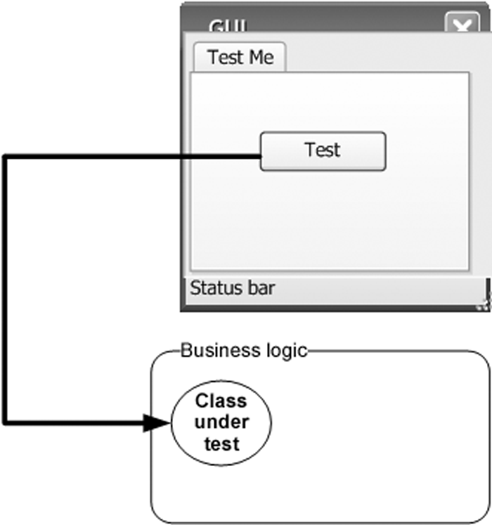
Figure 1.1 In classic testing, developers use a graphical user interface (GUI) to trigger an action on the class they want to test. Then they check the results.
run by performing various actions within the real application’s UI. The end result is that you’ve made certain, to a degree, that the code works well enough to pass it on to someone else.
Figure 1.1 shows how most developers test their code. The UI may change, but the pattern is usually the same: using a manual external tool to check something repeatedly or running the application in full and checking its behavior manually.
These tests may have been useful, and they may come close to the classic definition of a unit test, but they’re far from how I’ll define a good unit test in this book. That brings us to the first and most important question a developer has to face when defining the qualities of a good unit test: what is a unit test, and what is not?
1.2 Properties of a good unit test A unit test should have the following properties:
■ It should be automated and repeatable.
■ It should be easy to implement.
■ It should be relevant tomorrow.
■ Anyone should be able to run it at the push of a button.
■ It should run quickly.
■ It should be consistent in its results (it always returns the same result if you don’t change anything between runs).
■ It should have full control of the unit under test.
■ It should be fully isolated (runs independently of other tests).
■ When it fails, it should be easy to detect what was expected and determine how to pinpoint the problem.
Many people confuse the act of testing their software with the concept of a unit test. To start off, ask yourself the following questions about the tests you’ve written up to now:
■ Can I run and get results from a unit test I wrote two weeks or months or years ago?
■ Can any member of my team run and get results from unit tests I wrote two months ago?
■ Can I run all the unit tests I’ve written in no more than a few minutes?
■ Can I run all the unit tests I’ve written at the push of a button?
■ Can I write a basic test in no more than a few minutes?
If you’ve answered no to any of these questions, there’s a high probability that what you’re implementing isn’t a unit test. It’s definitely some kind of test, and it’s as important as a unit test, but it has drawbacks compared to tests that would let you answer yes to all of those questions.
“What was I doing until now?” you might ask. You’ve been doing integration testing.
1.3 Integration tests I consider integration tests as any tests that aren’t fast and consistent and that use one or more real dependencies of the units under test. For example, if the test uses the real system time, the real filesystem, or a real database, it has stepped into the realm of integration testing.
If a test doesn’t have control of the system time, for example, and it uses the current DateTime.Now in the test code, then every time the test executes, it’s essentially a different test because it uses a different time. It’s no longer consistent.
That’s not a bad thing per se. I think integration tests are important counterparts to unit tests, but they should be separated from them to achieve a feeling of “safe green zone,” which is discussed later in this book.
If a test uses the real database, then it’s no longer only running in memory, in that its actions are harder to erase than when using only in-memory fake data. The test will also run longer, again a reality that it has no control over. Unit tests should be fast. Integration tests are usually much slower. When you start having hundreds of tests, every half-second counts.
Integration tests increase the risk of another problem: testing too many things at once.
What happens when your car breaks down? How do you learn what the problem is, let alone fix it? An engine consists of many subsystems working together, each relying on the others to help produce the final result: a moving car. If the car stops moving, the fault could be with any of these subsystems—or more than one. It’s the integration of those subsystems (or layers) that makes the car move. You could think of the car’s movement as the ultimate integration test of these parts as the car goes down the road. If the test fails, all the parts fail together; if it succeeds, all the parts succeed.
The same thing happens in software. The way most developers test their functionality is through the final functionality of the UI. Clicking some button triggers a series of events—classes and components working together to produce the final result. If the
test fails, all of these software components fail as a team, and it can be difficult to figure out what caused the failure of the overall operation (see figure 1.2).
As defined in The Complete Guide to Software Testing by Bill Hetzel (Wiley, 1993), integration testing is “an orderly progression of testing in which software and/or hardware elements are combined and tested until the entire system has been integrated.” That definition of integration testing falls a bit short of what many people do all the time, not as part of a system integration test but as part of development and unit tests.
Here’s a better definition of integration testing.
DEFINITION Integration testing is testing a unit of work without having full control over all of it and using one or more of its real dependencies, such as time, network, database, threads, random number generators, and so on.
To summarize: an integration test uses real dependencies; unit tests isolate the unit of work from its dependencies so that they’re easily consistent in their results and can easily control and simulate any aspect of the unit’s behavior.
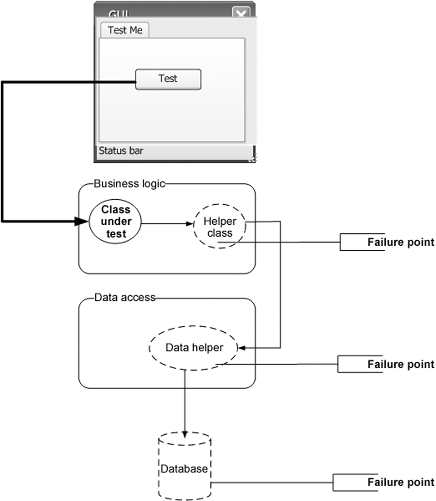
Figure 1.2 You can have many failure points in an integration test. All the units have to work together, and each could malfunction, making it harder to find the source of the bug.
1.3.1 Drawbacks of nonautomated integration tests compared to automated unit tests Let’s apply the questions from section 1.2 to integration tests and consider what you want to achieve with real-world unit tests:
If you can’t, how would you know whether you broke a feature that you created earlier? Code changes regularly during the life of an application, and if you can’t (or won’t) run tests for all the previously working features after changing your code, you just might break it without knowing. I call this “accidental bugging,” and it seems to occur a lot near the end of a software project, when developers are under pressure to fix existing bugs. Sometimes they introduce new bugs inadvertently as they resolve the old ones. Wouldn’t it be great to know that you broke something within three minutes of breaking it? You’ll see how that can be done later in this book.
DEFINITION A regression is one or more units of work that once worked and now don’t.
This goes with the previous point but takes it up a notch. You want to make sure that you don’t break someone else’s code when you change something. Many developers fear changing legacy code in older systems for fear of not knowing what other code depends on what they’re changing. In essence, they risk changing the system into an unknown state of stability.
Few things are scarier than not knowing whether the application still works, especially when you didn’t write that code. If you knew you weren’t breaking anything, you’d be much less afraid of taking on code you’re less familiar with, because you have that safety net of unit tests.
Good tests can be accessed and run by anyone.
DEFINITION Legacy code is defined by Wikipedia as “source code that relates to a no-longer supported or manufactured operating system or other computer technology,” but many shops refer to any older version of the application currently under maintenance as legacy code. It often refers to code that’s hard to work with, hard to test, and usually even hard to read.
A client once defined legacy code in a down-to-earth way: “code that works.” Many people like to define legacy code as “code that has no tests.” Working Effectively with Legacy Code by Michael Feathers (Prentice Hall, 2004) uses this as an official definition of legacy code, and it’s a definition to be considered while reading this book.
■ Can I run all the tests I’ve written in no more than a few minutes? If you can’t run your tests quickly (seconds are better than minutes), you’ll run them less often (daily or even weekly or monthly in some places). The problem
is that when you change code, you want to get feedback as early as possible to see if you broke something. The more time between running the tests, the more changes you make to the system, and the (many) more places to search for bugs when you find that you broke something.
Good tests should run quickly.
■ Can I run all the tests I’ve written at the push of a button? If you can’t, it probably means that you have to configure the machine on which the tests will run so that they run correctly (setting connection strings to the database, for example) or that your unit tests aren’t fully automated. If you can’t fully automate your unit tests, you’ll probably avoid running them repeatedly, as will everyone else on your team. No one likes to get bogged down with configuring details to run tests just to make sure that the system still works. Developers have more important things to do, like writing more features into the system. Good tests should be easily executed in their original form, not manually.
■ Can I write a basic test in no more than a few minutes? One of the easiest ways to spot an integration test is that it takes time to prepare correctly and to implement, not just to execute. It takes time to figure out how to write it because of all the internal and sometimes external dependencies. (A database may be considered an external dependency.) If you’re not automating the test, dependencies are less of a problem, but you’re losing all the benefits of an automated test. The harder it is to write a test, the less likely you are to write more tests or to focus on anything other than the “big stuff” that you’re worried about. One of the strengths of unit tests is that they tend to test every little thing that might break, not only the big stuff. People are often surprised at how many bugs they can find in code they thought was simple and bug free. When you concentrate only on the big tests, the logic coverage that your tests have is smaller. Many parts of the core logic in the code aren’t tested (even though you may be covering more components), and there may be many bugs that you haven’t considered. Good tests against the system should be easy and quick to write, once you’ve figured out the patterns you want to use to test your specific object model. Small warning: even experienced unit testers can find that it may take 30 minutes or more to figure out how to write the very first unit test against an object model they’ve never unit tested before. This is part of the work, and is expected. The second and subsequent tests on that object model should be very easy to accomplish.
From what I’ve explained so far about what a unit test is not, and what features need to be present for testing to be useful, I can now start to answer the primary question this chapter poses: what’s a good unit test?
1.4 What makes unit tests good
Now that I’ve covered the important properties that a unit test should have, I’ll define unit tests once and for all.
UPDATED AND FINAL DEFINITION 1.2 A unit test is an automated piece of code that invokes the unit of work being tested, and then checks some assumptions about a single end result of that unit. A unit test is almost always written using a unit testing framework. It can be written easily and runs quickly. It’s trustworthy, readable, and maintainable. It’s consistent in its results as long as production code hasn’t changed.
This definition certainly looks like a tall order, particularly considering how many developers implement unit tests poorly. It makes us take a hard look at the way we, as developers, have implemented testing up until now, compared to how we’d like to implement it. (Trustworthy, readable, and maintainable tests are discussed in depth in chapter 8.)
In the previous edition of this book, my definition of a unit test was slightly different. I used to define a unit test as “only running against control flow code.” But I no longer think that’s true. Code without logic is usually used as part of a unit of work. Even properties with no logic will get used by a unit of work, so they don’t have to be specifically targeted by tests.
DEFINITION Control flow code is any piece of code that has some sort of logic in it, small as it may be. It has one or more of the following: an if statement, a loop, switch, or case statement, calculations, or any other type of decisionmaking code.
Properties (getters/setters in Java) are good examples of code that usually doesn’t contain any logic and so doesn’t require specific targeting by the tests. It’s code that will probably get used by the unit of work you’re testing, but there’s no need to test it directly. But watch out: once you add any check inside a property, you’ll want to make sure that logic is being tested.
In the next section, we’ll look at a simple unit test done entirely with code, without using any unit testing framework. (We’ll look at unit testing frameworks in chapter 2.)
1.5 A simple unit test example
It’s possible to write an automated unit test without using a test framework. In fact, because developers have gotten more into the habit of automating their testing, I’ve seen plenty of them doing this before discovering test frameworks. In this section, I’ll show what writing such a test without a framework can look like, so that you can contrast this with using a framework in chapter 2.
Assume you have a SimpleParser class (shown in listing 1.1) that you’d like to test. It has a method named ParseAndSum that takes in a string of zero or more commaseparated numbers. If there are no numbers, it returns 0. If there’s a single number, it
returns that number as an int. If there are multiple numbers, it adds them all up and returns the sum (although, right now, the code can only handle zero or one number). Yes, I know the else part isn’t needed, but just because ReSharper tells you to jump off a bridge, doesn’t mean you have to do it. I think the else adds a nice readability to it.
Listing 1.1 A simple parser class to test
Listing 1.2 A simple coded method that tests the SimpleParser class
public class SimpleParser {
public int ParseAndSum(string numbers) {
if(numbers.Length==0) {
return 0;
} if(!numbers.Contains(",")) {
return int.Parse(numbers);
} else {
throw new InvalidOperationException( "I can only handle 0 or 1 numbers for now!");
} }
}
You can create a simple console application project that has a reference to the assembly containing this class, and you can write a SimpleParserTests method as shown in the following listing. The test method invokes the production class (the class to be tested) and then checks the returned value. If it’s not what’s expected, the test method writes to the console. It also catches any exception and writes it to the console.
class SimpleParserTests {
public static void TestReturnsZeroWhenEmptyString() {
try {
SimpleParser p = new SimpleParser(); int result = p.ParseAndSum(string.Empty); if(result!=0) {
Console.WriteLine( @"***SimpleParserTests.TestReturnsZeroWhenEmptyString:
------Parse and sum should have returned 0 on an empty string");
}
} catch (Exception e)
} }
{
Console.WriteLine(e); }
Next, you can invoke the tests you’ve written by using a simple Main method run inside a console application in this project, as shown in the next listing. The Main method is used here as a simple test runner, which invokes the tests one by one, letting them write out to the console. Because it’s an executable, this can be run without human intervention (assuming the tests don’t pop up any interactive user dialogs).
Listing 1.3 Running coded tests via a simple console application
Listing 1.4 Using a more generic implementation of the ShowProblem method
public static void Main(string[] args) {
try {
SimpleParserTests.TestReturnsZeroWhenEmptyString();
} catch (Exception e) {
Console.WriteLine(e); }
}
It’s the test method’s responsibility to catch any exceptions that occur and write them to the console, so that they don’t interfere with the running of subsequent methods. You can then add more method calls into the Main method as you add more and more tests to the project. Each test is responsible for writing the problem output (if there’s a problem) to the console screen.
Obviously, this is an ad hoc way of writing such a test. If you were writing multiple tests like this, you might want to have a generic ShowProblem method that all tests could use, which would format the errors consistently. You could also add special helper methods that would help check on things like null objects, empty strings, and so on, so that you don’t need to write the same long lines of code in many tests.
The following listing shows what this test would look like with a slightly more generic ShowProblem method.
public class TestUtil {
public static void ShowProblem(string test,string message ) {
string msg = string.Format(@"
---{0}--{1}
-------------------", test, message); Console.WriteLine(msg);
}
} public static void TestReturnsZeroWhenEmptyString() {
//use .NET's reflection API to get the current // method's name // it's possible to hard code this, //but it’s a useful technique to know string testName = MethodBase.GetCurrentMethod().Name; try {
SimpleParser p = new SimpleParser(); int result = p.ParseAndSum(string.Empty); if(result!=0) {
//Calling the helper method
TestUtil.ShowProblem(testName, "Parse and sum should have returned 0 on an empty string");
}
} catch (Exception e) {
TestUtil.ShowProblem(testName, e.ToString()); }
}
Unit testing frameworks can make helper methods more generic like this, so tests are written more easily. I’ll talk about that in chapter 2. Before we get there, I’d like to discuss one important matter: not just how you write a unit test but when during the development process you write it. That’s where test-driven development comes into play.
1.6 Test-driven development Once you know how to write structured, maintainable, and solid tests with a unit testing framework, the next question is when to write the tests. Many people feel that the best time to write unit tests for software is after the software has been written, but a growing number prefer writing unit tests before the production code is written. This approach is called test-first or test-driven development (TDD).
NOTE There are many different views on exactly what test-driven development means. Some say it’s test-first development, and some say it means you have a lot of tests. Some say it’s a way of designing, and others feel it could be a way to drive your code’s behavior with only some design. For a more complete look at the views people have of TDD, see “The various meanings of TDD” on my blog (http://osherove.com/blog/2007/10/8/the-various-meanings-oftdd.html). In this book, TDD means test-first development, with design taking a secondary role in the technique (which isn’t discussed in this book).
Figures 1.3 and 1.4 show the differences between traditional coding and TDD.
Test-driven development 15
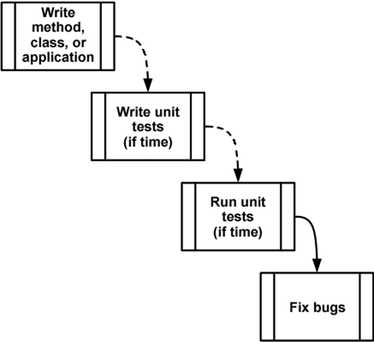
Figure 1.3 The traditional way of writing unit tests. The broken lines represent actions people treat as optional.
TDD is different from traditional development, as figure 1.4 shows. You begin by writing a test that fails; then you move on to creating the production code, seeing the test pass, and continuing on to either refactor your code or create another failing test.
This book focuses on the technique of writing good unit tests, rather than on testdriven development, but I’m a big fan of TDD. I’ve written several major applications and frameworks using TDD, have managed teams that utilize it, and have taught more than a hundred courses and workshops on TDD and unit testing techniques. Throughout my career, I’ve found TDD to be helpful in creating quality code, quality tests, and better designs for the code I was writing. I’m convinced that it can work to your
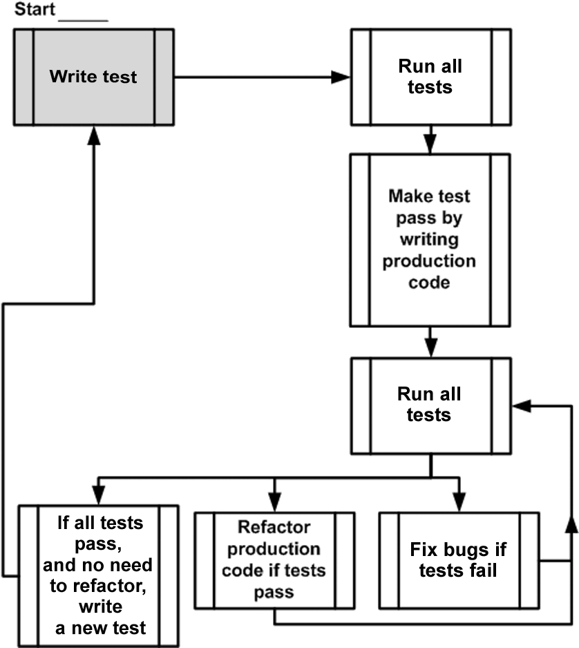
Figure 1.4 Test-driven developmenta bird’s-eye view. Notice the spiral nature of the process: write test, write code, refactor, write next test. It shows the incremental nature of TDD: small steps lead to a quality end result.
benefit, but it’s not without a price (time to learn, time to implement, and more). It’s definitely worth the admission price, though.
It’s important to realize that TDD doesn’t ensure project success or tests that are robust or maintainable. It’s quite easy to get caught up in the technique of TDD and not pay attention to the way unit tests are written: their naming, how maintainable or readable they are, and whether they test the right things or might have bugs. That’s why I’m writing this book.
The technique of TDD is quite simple:
1 Write a failing test to prove code or functionality is missing from the end product. The test is written as if the production code were already working, so the test failing means there’s a bug in the production code. If I wanted to add a new feature to a calculator class that remembers the LastSum value, I’d write a test that verifies that LastSum is indeed the correct value. The test will fail to compile, and after adding only the needed code to make it compile (without the real functionality to remember the number), the test will now run, and fail, because I haven’t implemented that functionality yet.
2 Make the test pass by writing production code that meets the expectations of your test. The production code should be kept as simple as possible.
3 Refactor your code. When the test passes, you’re free to move on to the next unit test or to refactor your code to make it more readable, to remove code duplication, and so on.
Refactoring can be done after writing several tests or after writing each test. It’s an important practice, because it ensures your code gets easier to read and maintain, while still passing all of the previously written tests.
DEFINITION Refactoring means changing a piece of code without changing its functionality. If you’ve ever renamed a method, you’ve done refactoring. If you’ve ever split a large method into multiple smaller method calls, you’ve refactored your code. The code still does the same thing, but it becomes easier to maintain, read, debug, and change.
The preceding steps sound technical, but there’s a lot of wisdom behind them. Done correctly, TDD can make your code quality soar, decrease the number of bugs, raise your confidence in the code, shorten the time it takes to find bugs, improve your code’s design, and keep your manager happier. If TDD is done incorrectly, it can cause your project schedule to slip, waste your time, lower your motivation, and lower your code quality. It’s a double-edged sword, and many people find this out the hard way.
Technically, one of the biggest benefits of TDD nobody tells you about is that by seeing a test fail, and then seeing it pass without changing the test, you’re basically testing the test itself. If you expect it to fail and it passes, you might have a bug in your test or you’re testing the wrong thing. If the test failed and now you expect it to pass, and it still fails, your test could have a bug, or it’s expecting the wrong thing to happen.
Summary 17
This book deals with readable, maintainable, and trustworthy tests, but the greatest affirmation you’ll get from your tests comes when you see them fail and pass when they should. TDD helps with that a lot, and that’s one of the reasons developers do far less debugging when TDD-ing their code than when they’re simply unit testing it after the fact. If they trust the test, they don’t feel a need to debug it “just in case.” And that’s the kind of trust you can only gain by seeing both sides of the test—failing and passing when it should.
1.7 The three core skills of successful TDD To be successful in test-driven development you need three different skill sets: knowing how to write good tests, writing them test-first, and designing them well.
■ Just because you write your tests first doesn’t mean they’re maintainable, readable, or trustworthy. Good unit testing skills are what the book you’re currently reading is all about.
■ Just because you write readable, maintainable tests doesn’t mean you get the same benefits as when writing them test-first. Test-first skills are what most of the TDD books out there teach, without teaching the skills of good testing. I would especially recommend Kent Beck’s Test-Driven Development: by Example (Addison-Wesley Professional, 2002).
■ Just because you write your tests first, and they’re readable and maintainable, doesn’t mean you’ll end up with a well-designed system. Design skills are what make your code beautiful and maintainable. I recommend Growing Object-Oriented Software, Guided by Tests by Steve Freeman and Nat Pryce (Addison-Wesley Professional,
2009) and Clean Code by Robert C. Martin (Prentice Hall, 2008) as good books on the subject.
A pragmatic approach to learning TDD is to learn each of these three aspects separately; that is, to focus on one skill at a time, ignoring the others in the meantime. The reason I recommend this approach is that I often see people trying to learn all three skill sets at the same time, having a really hard time in the process, and finally giving up because the wall is too high to climb.
By taking a more incremental approach to learning this field, you relieve yourself of the constant fear that you’re getting it wrong in a different area than you’re currently focusing on.
In regard to the order of the learning approach, I don’t have a specific scheme in mind. I’d love to hear from you about your experience and recommendations when learning these skills. You can find contact links at http://osherove.com.
1.8 Summary In this chapter, I defined a good unit test as one that has these qualities:
■ It’s an automated piece of code that invokes a different method and then checks some assumptions on the logical behavior of that method or class.
■ It’s written using a unit testing framework.
■ It can be written easily.
■ It runs quickly.
■ It can be executed repeatedly by anyone on the development team.
To understand what a unit is, you had to figure out what sort of testing you’ve done until now. You identified that type of testing as integration testing, because it tests a set of units that depend on each other.
The difference between unit tests and integration tests is important to recognize. You’ll be using that knowledge in your day-to-day life as a developer when deciding where to place your tests, what kind of tests to write when, and which option is better for a specific problem. It will also help you identify how to fix problems with tests that are already causing you headaches.
We also looked at the cons of doing integration testing without a framework behind it: this kind of testing is hard to write and automate, slow to run, and needs configuration. Although you do want to have integration tests in a project, unit tests can provide a lot of value earlier in the process, when bugs are smaller and easier to find and there’s less code to skim through.
Last, we looked at test-driven development, how it’s different from traditional coding, and what its basic benefits are. TDD helps you make sure that the code coverage of your test code (how much of the code your tests exercise) is very high (close to 100 percent of logical code). TDD helps you make sure that your tests can be trusted. TDD “tests your tests” in that it lets you see them fail and pass when they should. TDD also has many other benefits, such as aiding in design, reducing complexity, and helping you tackle hard problems step by step. But you can’t do TDD successfully over time without knowing how to write good tests.
In the next chapter, you’ll start writing your first unit tests using NUnit, the de facto unit testing framework for .NET developers.
This chapter covers
■ Exploring unit testing frameworks in .NET
■ Writing your first test with NUnit
■ Working with the NUnit attributes
■ Understanding the three output types of
a unit of work
When I first started writing unit tests with a real unit testing framework, there was little documentation, and the frameworks I worked with didn’t have proper examples. (I was mostly coding in VB 5 and 6 at the time.) It was a challenge learning to work with them, and I started out writing rather poor tests. Fortunately, times have changed.
This chapter will get you started writing tests even if you have no idea where to start. It will get you well on your way to writing real-world unit tests with a framework called NUnit—a .NET unit testing framework. It’s my favorite framework in .NET for unit testing because it’s easy to use, easy to remember, and has lots of great features.
There are other frameworks in .NET, including some with more features, but NUnit is where I always start. If the need arises, I sometimes then expand to a different framework. We’ll look at how NUnit works, its syntax, and how to run it and get feedback when the test fails or passes. To accomplish this, I’ll introduce a small
19
software project that we’ll use throughout the book to explore testing techniques and best practices.
You may feel like NUnit is forced on you in this book. Why not use the built-in MSTest framework in Visual Studio? The answer consists of two parts:
■ NUnit contains better features than MSTest relating to writing unit tests and test attributes that help write more maintainable, readable tests.
■ In Visual Studio 2012, the built-in test runner allows running tests written in other frameworks, including NUnit. To allow this, simply install the NUnit test adapter for Visual Studio via NuGet. (NuGet is explained later in this chapter.)
This makes the choice of which framework to use pretty easy for me.
First, we need to look at what a unit testing framework is and at what it enables you to do that you couldn’t and wouldn’t do without it.
2.1 Frameworks for unit testing
Manual tests suck. You write your code, you run it in the debugger, you hit all the right keys in your app to get things just right, and then you repeat all this the next time you write new code. And you have to remember to check all that other code that might have been affected by the new code. More manual work. Great.
Doing tests and regression testing completely manually, repeating the same actions again and again like a monkey, is error prone and time consuming, and people seem to hate doing that as much as anything can be hated in software development. These problems are alleviated by tooling. Unit testing frameworks help developers write tests more quickly with a set of known APIs, execute those tests automatically, and review the results of those tests easily. And they never forget! Let’s dig deeper into what they offer.
2.1.1 What unit testing frameworks offer Up to now, for many of you reading this, the tests you’ve done were limited:
■ They weren’t structured. You had to reinvent the wheel every time you wanted to test a feature. One test might have looked like a console application, another used a UI form, and another used a web form. You didn’t have time to spend on testing, and the tests failed the “easy to implement” requirement.
■ They weren’t repeatable. Neither you nor your team members could run the tests you’d written in the past. That breaks the “repeatedly” requirement and prevents you from finding regression bugs. With a framework, you can more easily and automatically write tests that are repeatable.
■ They didn’t cover all the important parts of the code. The tests didn’t test all the code that matters. That means all the code with logic in it, because each and every one of those could contain a potential bug. (Property getters and setters don’t count as logic but will eventually get used as part of some unit of work.) If it were easier to write the tests, you’d be more inclined to write more of them and get better coverage.
Frameworks for unit testing 21
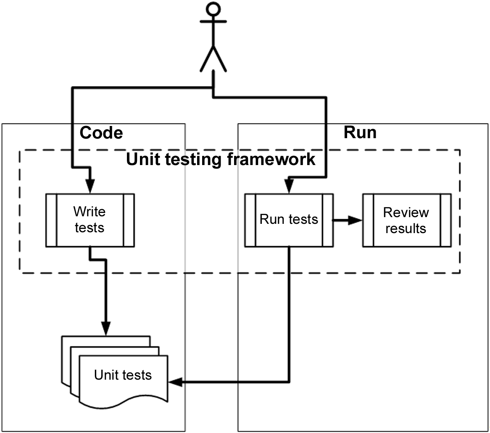
In short, what you’ve been missing is a framework for writing, running, and reviewing unit tests and their results. Figure 2.1 shows the areas in software development where a unit testing framework has influence.
Unit testing frameworks are code libraries and modules that help developers unit test their code, as outlined in table 2.1. They also have another side—running the tests as part of an automated build, which I cover in later chapters.
Unit testing practice |
How the framework helps |
Write tests easily and in a structured manner. Execute one or all of the unit tests. |
Framework supplies the developer with a class library that contains
|
Unit testing practice |
How the framework helps |
Review the results of the test runs. |
The test runners will usually provide information such as
|
At the time of this writing, there are more than 150 unit testing frameworks out therepractically one for every programming language in public use. You can find a good list at http://en.wikipedia.org/wiki/List_of_unit_testing_frameworks. Consider that .NET alone has at least 3 different active unit testing frameworks: MSTest (from Microsoft), xUnit.net, and NUnit. Among these, NUnit was once the de facto standard. These days I feel it’s quite a battle between MSTest and NUnit, simply because MSTest is built into Visual Studio. But, when given a choice, I’d choose NUnit for some of the features you’ll see later in this chapter and also in the appendix about tools and frameworks.
NOTE Using a unit testing framework doesn’t ensure that the tests you write are readable, maintainable, or trustworthy or that they cover all the logic you’d like to test. We’ll look at how to ensure that your unit tests have these properties in chapter 7 and in various other places throughout this book.
2.1.2 The xUnit frameworks
Collectively, these unit testing frameworks are called the xUnit frameworks because their names usually start with the first letters of the language for which they were built. You might have CppUnit for C++, JUnit for Java, NUnit for .NET, and HUnit for the Haskell programming language. Not all of them follow these naming guidelines, but most do.
In this book, we’ll be using NUnit, a .NET unit testing framework that makes it easy to write tests, run them, and get the results. NUnit started out as a direct port of the ubiquitous JUnit for Java and has since made tremendous strides in its design and usability, setting it apart from its parent and breathing new life into an ecosystem of test frameworks that’s changing more and more. The concepts we’ll be looking at will be understandable to Java and C++ developers alike.
2.2 Introducing the LogAn project
The project that we’ll use for testing in this book will be simple at first and will contain only one class. As the book moves along, we’ll extend that project with new classes and features. We’ll call it the LogAn project (short for “log and notification”).
Here’s the scenario. Your company has many internal products it uses to monitor its applications at customer sites. All these products write log files and place them in a special directory. The log files are written in a proprietary format that your company has come up with that can’t be parsed by any existing third-party tools. You’re tasked with building a product, LogAn, that can analyze these log files and find special cases and events in them. When it finds these cases and events, it should alert the appropriate parties.
In this book, I’ll teach you to write tests that verify LogAn’s parsing, event-recognition, and notification abilities. Before we get started testing our project, though, we’ll look at how to write a unit test with NUnit. The first step is installing it.
2.3 First steps with NUnit
As with any new tool, you’ll need to install it first. Because NUnit is open source and freely downloadable, this task will be rather simple. Then you’ll see how to start writing a test with NUnit, use the built-in attributes that NUnit ships with, and run your test and get some real results.
2.3.1 Installing NUnit
The best and easiest way to install NUnit is by using NuGet—a free extension to Visual Studio that allows you to search, download, and install references to popular libraries from within Visual Studio with a few clicks or a simple command text.
I highly suggest you install NuGet by going to the Tools > Extension Manager menu in Visual Studio, clicking Online Gallery, and installing the top-ranked NuGet Package Manager. After installation don’t forget to restart Visual Studio, and voilàyou have a very powerful and easy tool to add and manage references to your projects. (If you come from the Ruby world, you’ll notice NuGet resembles Ruby Gems and the GemFile idea, although it’s still very new in terms of features related to versioning and deployment to production.)
Now that you have NuGet installed, you can open the following menu: Tools > Library Package Manager > Package Manager Console, and type Install-Package NUnit in the text window that appears. (You can also use the Tab key to autocomplete possible commands and library package names.)
Once all is said and done, you should see a nice message, “NUnit Installed Successfully.” NuGet will have locally downloaded a zip file containing NUnit files, added a reference to the default project that is set in the Package Manager Console window’s combo box, and finished by telling you it did all these things. You should now see a reference to NUnit.Framework.dll in your project.
A note about the NUnit GUI—this is the basic UI runner that NUnit has. I cover this UI later in this chapter, but I usually don’t use it. Consider it more of a learning tool so you can understand how NUnit runs as a bare-bones tool with no add-ons to Visual Studio. It also doesn’t come bundled with NuGet’s version of NUnit. NuGet installs only required DLLs but not the UI (this makes some sense, because you can have
multiple projects using NUnit, but you don’t need multiple versions of its UI to run them). To get the NUnit UI, which I also show a bit later in this chapter, you can install NUnit.Runners from NuGet, or you can go to NUnit.com and install the full version from there. This full version also comes bundled with the NUnit Console Runner, which you use when running tests on a build server.
If you don’t have access to NUnit, you can download it from www.NUnit.com and add a reference to nunit.framework.dll manually.
As a bonus, NUnit is an open source product, so you can get the source code for NUnit, compile it yourself, and use the source freely within the limits of the open source license. (See the license.txt file in the program directory for license details.)
NOTE At the time of writing, the latest version of NUnit is 2.6.0. The examples in this book should be compatible with most future versions of the framework.
If you chose the manual route to install NUnit, run the setup program you downloaded. The installer will place a shortcut to the GUI part of the NUnit runner on your desktop, but the main program files should reside in a directory named something like C:\Program Files\NUnit-Net-2.6.0. If you double-click the NUnit desktop icon, you’ll see the unit test runner shown in figure 2.2.
NOTE The C# Express Edition of Visual Studio (or above) is fine for use with this book.
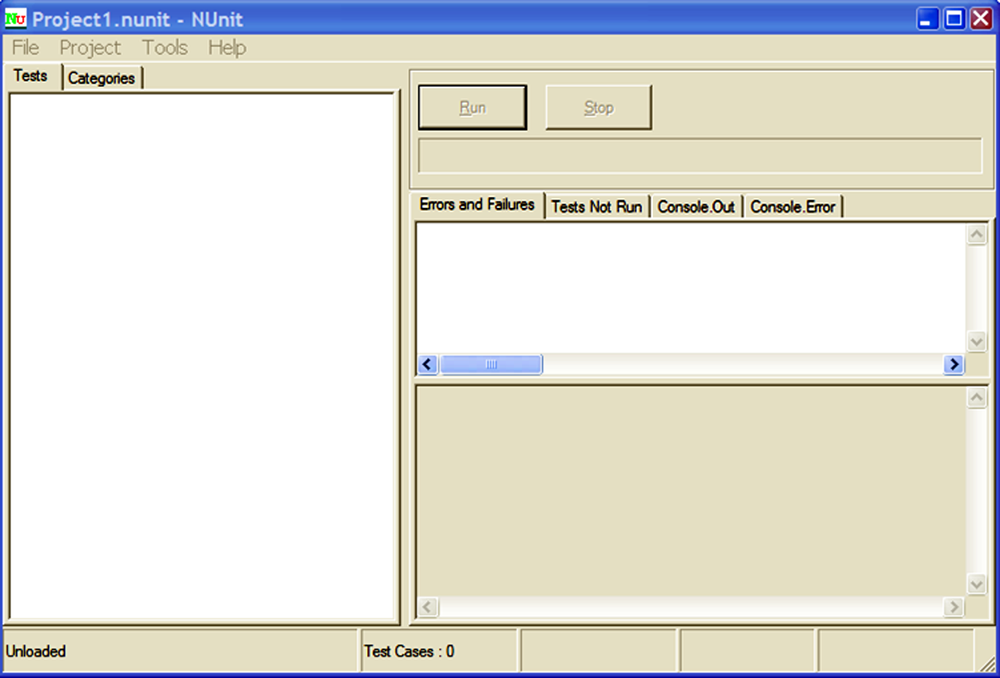
2.3.2 Loading up the solution If you have the book’s code on your machine, load up the ArtOfUnitTesting2ndEd
.Samples.sln solution from the Code folder inside Visual Studio 2010 or later.
We’ll begin by testing the following simple class with one method (the unit you’re testing) inside it:
public class LogAnalyzer {
public bool IsValidLogFileName(string fileName) {
if(fileName.EndsWith(".SLF")) {
return false;
} return true;
} }
Please note that I’ve purposely left out an ! before the if, so that this method has a bug—it returns false instead of true when the filename ends with .SLF. This is so you can see what it looks like in a test runner when a test fails.
This method may not seem complicated, but we’ll test it to make sure it works, mostly to follow through the testing routine. In the real world, you’ll want to test any method that contains logic, even if it seems simple. Logic can fail, and you want to know when it does. In the following chapters, we’ll test more complicated scenarios and logic.
The method looks at the file extension to determine whether or not a file is a valid log file. The first test will be to send in a valid filename and make sure the method returns true.
Here are the first steps for writing an automated test for the IsValidLogFileName method:
1 Add a new class library project to the solution, which will contain your test classes. Name it LogAn.UnitTests (assuming the original project name is LogAn.csproj).
2 To that library, add a new class that will hold your test methods. Name it LogAnalyzerTests (assuming that your class under test is named LogAnalyzer.cs).
3 Add a new method to the preceding test case named IsValidLogFileName_BadExtension_ReturnsFalse().
We’ll touch more on test-naming and arrangement standards later in the book, but the basic rules are listed in table 2.2.
Object to be tested |
Object to create on the testing side |
Project Class |
Create a test project named [ProjectUnderTest].UnitTests. For a class located in ProjectUnderTest, create a class with the name [ClassName]Tests. |
Object to be tested |
Object to create on the testing side |
Unit of work (a method, or a logical grouping of several methods, or several classes) |
For each unit of work, create a test method with the following name: [UnitOfWorkName]_[ScenarioUnderTest]_[ExpectedBehavior]. The unit of work name could be as simple as a method name (if that’s the whole unit of work) or more abstract if it’s a use case that encompasses multiple methods or classes such as UserLogin or RemoveUser or Startup. You might feel more comfortable starting with method names and moving to more abstract names later. Just make sure that if these are method names, those methods are public, or they don’t really represent the start of a unit of work. |
The name for our LogAn test project is LogAn.UnitTests. The name for the LogAnalyzer test class is LogAnalyzerTests.
Here are the three parts of the test method name:
■ UnitOfWorkName—The name of the method or group of methods or classes you’re testing.
■ Scenario—The conditions under which the unit is tested, such as “bad login” or “invalid user” or “good password.” You could describe the parameters being sent to the public method or the initial state of the system when the unit of work is invoked such as “system out of memory” or “no users exist” or “user already exists.”
■ ExpectedBehavior—What you expect the tested method to do under the specified conditions. This could be one of three possibilities: return a value as a result (a real value, or an exception), change the state of the system as a result (like adding a new user to the system, so the system behaves differently on the next login), or call a third-party system as a result (like an external web service).
In our test of the IsValidLogFileName method, the scenario is that you’re sending the method a valid filename, and the expected behavior is that the method will return a true value. The test method name might be IsValidFileName_BadExtension _ReturnsFalse().
Should you write the tests in the production code project? Or maybe separate them into a different test-related project? I usually prefer to separate them, because it makes all the rest of the test-related work easier. Also, lots of people aren’t happy including tests in their production code, which leads to ugly conditional compilation schemes and other bad ideas that make code less readable.
I’m not religious about this. I also like the idea of having tests next to your running production app so you can test its health after deployment. That requires some careful thought, but it does not require you to have the tests and production code in the same project. You can actually have your cake and eat it too.
You haven’t used the NUnit test framework yet, but you’re close. You still need to add a reference to the project under test for the new testing project. Do this by rightclicking the test project and selecting Add Reference. Then select the Projects tab and select the LogAn project.
The next thing to learn is how to mark the test method to be loaded and run by NUnit automatically. First, make sure you’ve added the NUnit reference either by using NuGet or manually, as explained in section 2.3.1.
2.3.3 Using the NUnit attributes in your code NUnit uses an attribute scheme to recognize and load tests. Just like bookmarks in a book, these attributes help the framework identify the important parts in the assembly that it loads and which parts are tests that need to be invoked.
NUnit provides an assembly that contains these special attributes. You need only to add a reference in your test project (not in your production code!) to the NUnit.Framework assembly. You can find it under the .NET tab in the Add Reference dialog box (you don’t need to do this if you’ve used NuGet to install NUnit). Type NUnit and you’ll see several assemblies starting with that name.
Add nunit.framework.dll as a reference to your test project (if you’ve installed it manually and not through NuGet).
The NUnit runner needs at least two attributes to know what to run:
■ The [TestFixture] attribute that denotes a class that holds automated NUnit tests. (If you replace the word Fixture with Class, it makes much more sense, but only as a mental exercise. It won’t compile if you literally change the code that way.) Put this attribute on top of your new LogAnalyzerTests class.
■ The [Test] attribute that can be put on a method to denote it as an automated test to be invoked. Put this attribute on your new test method.
When you’ve finished, your test code should look like this:
[TestFixture] public class LogAnalyzerTests {
[Test] public void IsValidFileName_BadExtension_ReturnsFalse() { }
}
TIP NUnit requires test methods to be public, to be void, and to accept no parameters at the most basic configuration, but you’ll see that sometimes these tests can also take parameters!
At this point, you’ve marked your class and a method to be run. Now whatever code you put inside your test method will be invoked by NUnit whenever you want.
2.4 Writing your first test How do you test your code? A unit test usually comprises three main actions:
1 Arrange objects, creating and setting them up as necessary.
2 Act on an object.
3 Assert that something is as expected.
Here’s a simple piece of code that does all three, with the assert part performed by the NUnit framework’s Assert class:
[Test] public void IsValidFileName_BadExtension_ReturnsFalse() {
LogAnalyzer analyzer = new LogAnalyzer(); bool result = analyzer.IsValidLogFileName("filewithbadextension.foo"); Assert.False(result);
}
Before we go on, you’ll need to know a little more about the Assert class, because it’s an important part of writing unit tests.
2.4.1 The Assert class The Assert class has static methods and is located in the NUnit.Framework namespace. It’s the bridge between your code and the NUnit framework, and its purpose is to declare that a specific assumption is supposed to exist. If the arguments that are passed into the Assert class turn out to be different than what you’re asserting, NUnit will realize the test has failed and will alert you. You can optionally tell the Assert class what message to alert you with if the assertion fails.
The Assert class has many methods, with the main one being Assert.True (some Boolean expression), which verifies a Boolean condition. But there are many other methods, which you can view as syntactical sugar that make asserting various things cleaner (such as Assert.False that we use).
Here’s one that verifies that an expected object or value is the same as the actual one:
Assert.AreEqual(expectedObject, actualObject, message);
Here’s an example:
Assert.AreEqual(2, 1+1, "Math is broken");
This one verifies that the two arguments reference the same object:
Assert.AreSame(expectedObject, actualObject, message);
Here’s an example:
Assert.AreSame(int.Parse("1"),int.Parse("1"), "this test should fail").
Assert is simple to learn, use, and remember.
Also note that all the assert methods take a last parameter of type “string,” which gets displayed in addition to the framework output, in case of a test failure. Please, never, ever, use this parameter (it’s always optional to use). Just make sure your test name explains what’s supposed to happen. Often, people write the trivially obvious things like “test failed” or “expected x instead of y,” which the framework already
provides. Much like comments in code, if you have to use this parameter, your method name should be clearer.
Now that we’ve covered the basics of the API, let’s run a test.
2.4.2 Running your first test with NUnit
It’s time to run your first test and see if it passes. There are at least four ways you can run this test:
■ Using the NUnit GUI
■ Using Visual Studio 2012 Test Runner with an NUnit Runner Extension, called the NUnit Test Adapter in the NUget Gallery
■ Using the ReSharper test runner (a well-known commercial plug-in for VS)
■ Using the TestDriven.NET test runner (another well-known commercial plug-in for VS)
Although this book covers only the NUnit GUI, I personally use NCrunch, which is fast and runs automatically, but also costs money. (This tool and others are covered in the appendix.) It provides simple, quick feedback inside the Visual Studio Editor window. I find that this runner makes a seamless companion to test-driven development in the real world. You can find out more about it at www.ncrunch.net/.
To run the test with the NUnit GUI, you need to have a build assembly (a .dll file in this case) that you can give to NUnit to inspect. After you build the project, locate the path to the assembly file that was built.
Then, load up the NUnit GUI. (If you installed NUnit manually, find the icon on your desktop. If you installed NUnit.Runners via Nugget, you’ll find the NUnit GUI EXE file in the Packages folder under your solution’s root directory.) Select File > Open. Enter the name of your test’s assembly. You’ll see your single test and the class and namespace hierarchy of your project on the left, as shown in figure 2.3. Click the Run button to run your tests. The tests are automatically grouped by namespace (assembly, type name), so you can pick and choose to run only by specific types or namespaces. (You’ll usually want to run all of the tests to get better feedback on failures.)
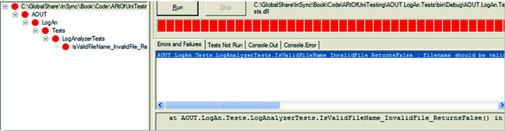
You have a failing test, which might suggest that there’s a bug in the code. It’s time to fix the code and see the test pass. Change the code to add the missing ! in the if clause so that it looks like this:
if(!fileName.EndsWith(".SLF")) {
return false; }
2.4.3 Adding some positive tests You’ve seen that bad extensions are flagged as such, but who’s to say that good ones do get approved by this little method? If you were doing this in a test-driven way, a missing test here would have been obvious, but because you’re writing the tests after the code, you have to come up with good test ideas that will cover all the paths. The following listing adds a couple more tests to see what happens when you send in a file with a good extension. One of them will have uppercase extensions, and another will have lowercase.
Listing 2.1 The LogAnalyzer filename-validation logic to test
[Test] public void IsValidLogFileName_GoodExtensionLowercase_ReturnsTrue() {
LogAnalyzer analyzer = new LogAnalyzer(); bool result = analyzer
.IsValidLogFileName("filewithgoodextension.slf"); Assert.True(result);
} [Test]public void IsValidLogFileName_GoodExtensionUppercase_ReturnsTrue() {
LogAnalyzer analyzer = new LogAnalyzer(); bool result =
analyzer
.IsValidLogFileName("filewithgoodextension.SLF"); Assert.True(result);
}
If you rebuild the solution now, you’ll find that NUnit’s GUI can detect that the assembly has changed, and it will automatically reload the assembly in the GUI. If you rerun the tests, you’ll see that the test with lowercase extensions fails. You need to fix the production code to use case-insensitive string matching for this test to pass:
public bool IsValidLogFileName(string fileName) {
if (!fileName.EndsWith(".SLF", StringComparison.CurrentCultureIgnoreCase)) {
return false; }
return true; }
If you run the tests again, they should all pass, and you’ll have a nice green bar again in the NUnit GUI.
2.4.4 From red to green: passing the tests
NUnit’s GUI is built with a simple idea in mind: all the tests should pass in order to get the green light to go ahead. If even one of the tests fails, you’ll see a red light on the top progress bar to let you know that something isn’t right with the system (or your tests).
The red/green concept is prevalent throughout the unit testing world and especially in test-driven development. Its mantra is “Red-Green-Refactor,” meaning that you start with a failing test, then pass it, and then make your code readable and more maintainable.
Tests can also fail if an unexpected exception suddenly gets thrown. A test that stops because of an unexpected exception will be considered a failed test for most test frameworks, if not all. It’s part of the point—sometimes you have bugs in the form of an exception you didn’t expect.
Speaking of exceptions, you’ll also see later in this chapter a form of test that expects an exception to be thrown from some code, as a specific result or behavior. Those tests will fail if an exception is not thrown.
2.4.5 Test code styling
Notice that the tests I’m writing have several characteristics in terms of styling and readability that look different from “standard” code. The test name can be very long, but the underscores help make sure you don’t forget to include all the important pieces of information. Also, notice that there’s an empty line between the arrange, act, and assert stages in each test. This helps me read tests much faster and find problems with tests faster.
I also try to separate the assert from the act as much as possible. I’d rather assert on a value than directly against a call to a function. It makes the code much more readable.
Readability is one of the most important aspects when writing a test. As far as possible, it has to read effortlessly, even to someone who’s never seen the test before, without needing to ask too many questions—or any questions at all. More on that in chapter 8. Now let’s see if you can make these tests less repetitive and a bit more concise, but still readable.
2.5 Refactoring to parameterized tests
All the tests you’ve written so far suffer from some maintainability problems. Imagine that now you want to add a parameter to the constructor of the LogAnalyzer class. Now you’d have three noncompiling tests. Going in and fixing 3 tests might not sound so bad, but it could easily be 30 or 100. When it comes to the real world, developers feel they have better things to do than to start chasing the compiler for what they
thought should be a simple change. If your tests break your sprint, you might not want to run them or even might want to delete annoying tests.
Let’s refactor them so that you never come across this problem. NUnit has a cool feature that can help a lot here. It’s called parameterized tests. To
use them simply take one of the existing test methods that look exactly the same as the others, and do the following:
1 Replace the [Test] attribute with the [TestCase] attribute.
2 Extract all the hardcoded values the test is using into parameters for the test method.
3 Move the values you had before into the braces of the [TestCase(param1, param2,..)] attribute.
4 Rename this test method to a more generic name.
5 Add a [TestCase(..)] attribute on this same test method for each of the tests you want to merge into this test method, using the other test’s values.
6 Remove the other tests so you’re left with just one test method that has multiple [TestCase] attributes.
Let’s do this step by step. The last test will look like this after step 4:
[TestCase("filewithgoodextension.SLF")] public void IsValidLogFileName_ValidExtensions_ReturnsTrue(string file) {
LogAnalyzer analyzer = new LogAnalyzer(); bool result = analyzer.IsValidLogFileName(file); Assert.True(result);
}
TestCase attribute sends a parameter to the method in the next line
The parameter that tests case attributes can attach a value to
The parameter is being used generically.
The parameter sent into the TestCase attribute is mapped by the test runner to the first parameter of the test method itself at runtime. You can add as many parameters as you want to the test method and to the TestCase attribute.
Now, here’s the kicker: you can have multiple TestCase attributes on the same test method. So after step 6, the test will look like this:
Another attribute means another test with a different value attached to the method parameter.
[TestCase("filewithgoodextension.SLF")] [TestCase("filewithgoodextension.slf")] public void IsValidLogFileName_ValidExtensions_ReturnsTrue(string file) {
LogAnalyzer analyzer = new LogAnalyzer(); bool result = analyzer.IsValidLogFileName(file); Assert.True(result);
}
And now you can delete the previous test method that used a good, lowercase extension because it’s encompassed as a test case attribute in the current test method. If you run
the tests again, you’ll see you still have the same number of tests, but the code is more maintainable and more readable.
You can take this one step further and include the negative test (the asserts that expect a false value as an end result) into the current test method. I’ll show here how to do it, but I’ll warn that doing this will likely create a less-readable test method because the name will have to become even more generic. Consider this a demo of the syntax, and know that this is possibly taking this technique too far in the right direction, because it makes the tests less understandable without going deeply through the code.
Here’s how you can refactor all the tests in the class—by adding another parameter to the test case and test method and by changing the assert to Assert.AreEqual:
[TestCase("filewithgoodextension.SLF",true)] [TestCase("filewithgoodextension.slf",true)] [TestCase("filewithbadextension.foo",false)] public void IsValidLogFileName_VariousExtensions_ChecksThem(string file,
bool expected) {
LogAnalyzer analyzer = new LogAnalyzer(); bool result = analyzer.IsValidLogFileName(file); Assert.AreEqual(expected,result);
}
Adding another parameter to the test case
Receiving the second test case parameter
Using the second parameter value
With this one test method, you can get rid of all the other test methods in this class, but notice how the name of the test has become so generic that it’s hard to figure out what makes the difference between valid and invalid. That information has to be easily self-evident in the parameter values you send in, so you have to keep them as simple as possible and as obvious as possible that these are the simplest values that prove your point. More on that readability objective, again, in chapter 8.
In terms of maintainability, notice how you have only one call to the constructor now. It’s better, but it’s not good enough, because you can’t have just one, big, parameterized test method become all of your tests. More techniques for maintainability later on. (Yes, in chapter 8. You’re psychic.)
Another refactoring you can do at this point is to change how the conditional if in the production code looks. You can minimize it to a single return statement. If you like that sort of thing, now is a good time to refactor that. I don’t. I like a bit of verbosity and not making the reader think too hard about the code. I like code that isn’t too smart for its own good, and return statements that contain conditionals rub me the wrong way. But this isn’t a book about design, remember? Do what you like. I will refer you to the book’s “clean code” by Robert Martin (Uncle Bob) first.
2.6 More NUnit attributes Now that you’ve seen how easy it is to create unit tests that run automatically, we’ll look at how to set up the initial state for each test and how to remove any garbage that’s left by your test.
A unit test has specific points in its lifecycle that you’ll want to have control over. Running the test is only one of them, and there are special setup methods that run before each test runs, as you’ll see in the next section.
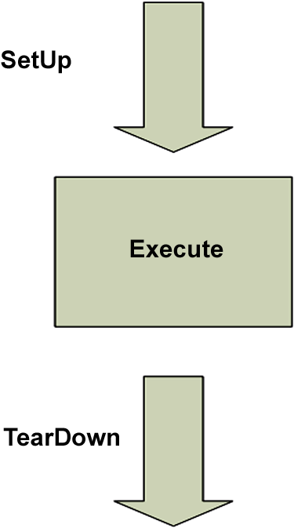
2.6.1 Setup and teardown
For unit tests, it’s important that any leftover data or instances from previous tests are destroyed and that the state for the new test is recreated as if no tests have been run before. If you have leftover state from a previous test, you might find that your test fails, but only if it’s run after a different test and it passes other times. Locating that kind of dependency bug between tests is difficult and time consuming, and I don’t recommend it to anyone. Having tests that are totally independent is one of the best practices I’ll cover in part 2 of this book.
In NUnit, there are special attributes that allow easier control of setting up and clearing out state before and after tests. These are the [SetUp] and [TearDown] action attributes. Figure 2.4 shows the process of running a test with setup and teardown actions.
For now, make sure that each test you write uses a new instance of the class under test, so that no leftover state will mess up your tests.
You can take control of what happens in the setup and teardown steps by using two NUnit attributes:
■ [SetUp]—This attribute can be put on a method, just like a [Test] attribute, and it causes NUnit to run that setup method each time it runs any of the tests in your class.
■ [TearDown]—This attribute denotes a method to be executed once after each test in your class has executed.
Listing 2.2 shows how you can use the [SetUp] and [TearDown] attributes to make sure that each test receives a new instance of LogAnalyzer, while also saving some repetitive typing.
But know that the more you use [SetUp], the less readable your tests will be, because people will have to keep reading test code in two places in the file to understand how the test gets its instances and what type of each object the test is using. I tell my students, “Imagine that the readers of your test have never met you and never will. They arrive and read your tests two years after you’ve left the company. Every little thing you do to help them understand the code without needing to ask any questions is a big help. They probably have nobody around who can answer those questions, so you’re their only hope.” Making their eyes jump constantly between two regions of code to understand your test isn’t a good idea.
Listing 2.2 Using [SetUp] and [TearDown] attributes
using NUnit.Framework;
[TestFixture] public class LogAnalyzerTests {
private LogAnalyzer m_analyzer=null; [SetUp] public void Setup() {
A setup attribute
m_analyzer = new LogAnalyzer();
} [Test]
public void IsValidFileName_validFileLowerCased_ReturnsTrue() {
bool result = m_analyzer
.IsValidLogFileName("whatever.slf");
Assert.IsTrue(result, "filename should be valid!"); }
}
[Test] public void IsValidFileName_validFileUpperCased_ReturnsTrue() {
bool result = m_analyzer
.IsValidLogFileName("whatever.SLF"); Assert.IsTrue(result, "filename should be valid!");
} [TearDown]
A teardown attribute
public void TearDown() {
//the line below is included to show an anti pattern. //This isn’t really needed. Don’t do it in real life.
m_analyzer = null; }
A common antipatternyou don’t need to do this
Think of the setup and teardown methods as constructors and destructors for the tests in your class. You can have only one of each in any test class, and each one will be performed once for each test in your class. In listing 2.2 you have two unit tests, so the execution path for NUnit will be something like that shown in figure 2.5.
In real life I do not use setup methods to initialize my instances. I show it here for you to know that it exists and to avoid it. It may seem like a good idea, but soon it makes the tests below the setup method harder to read. Instead, I use factory methods to initialize my instances under test. Read about that in chapter 7.
NUnit contains several other attributes to help with setup and cleanup of state. For example, [TestFixtureSetUp] and [TestFixtureTearDown] allow setting up state once before all the tests in a specific class run and once after all the tests have been run (once per test fixture). This is useful when setting up or cleaning up takes a long time, and you want to do it only once per fixture. You’ll need to be cautious about
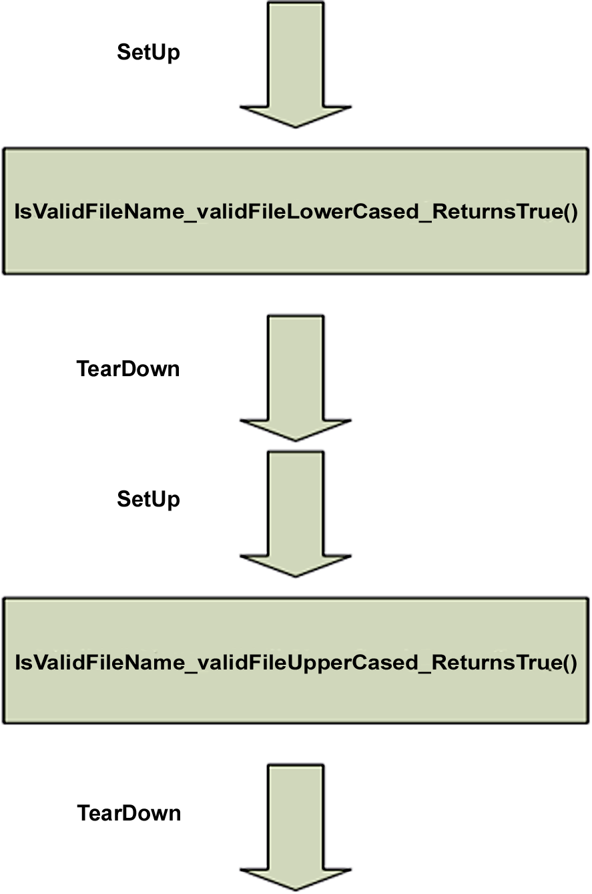
Figure 2.5 How NUnit calls SetUp and TearDown with multiple unit tests in the same class: each test is preceded by running SetUp and followed by a TearDown method run.
using these attributes. You may find that you’re sharing state between tests if you’re not careful.
You almost never, ever use TearDown or TestFixture methods in unit test projects. If you do, you’re very likely writing an integration test, where you’re touching the filesystem or a database, and you need to clean up the disk or the DB after the tests. The only time it makes sense to use a TearDown method in unit tests, I’ve found, is when you need to “reset” the state of a static variable or singleton in memory between tests. Any other time, you’re likely doing integration tests. That’s not a bad thing to be doing, but you should be doing it in a separate project that’s dedicated to integration tests.
Next, we’ll look at how you can test that an exception is thrown by your code when it should be.
2.6.2 Checking for expected exceptions
One common testing scenario is making sure that the correct exception is thrown from the tested method when it should be.
Let’s assume that your method should throw an ArgumentException when you send in an empty filename. If your code doesn’t throw an exception, it means your test should fail. We’ll test the method logic in the following listing.
Listing 2.3 The LogAnalyzer filename-validation logic to test
public class LogAnalyzer {
public bool IsValidLogFileName(string fileName) {
… if (string.IsNullOrEmpty(fileName)) {
throw new ArgumentException( "filename has to be provided");
} …
} }
There are two ways to check for this. Let’s start with the one you shouldn’t use, because it’s very prevalent, and because it used to be the only API to achieve this. There’s a special attribute in NUnit that helps you test exceptions: the [ExpectedException] attribute. Here’s what a test that checks for the appearance of an exception might look like:
[Test] [ExpectedException(typeof(ArgumentException),
ExpectedMessage ="filename has to be provided")] public void IsValidFileName_EmptyFileName_ThrowsException() {
m_analyzer.IsValidLogFileName(string.Empty);
} private LogAnalyzer MakeAnalyzer()
{
return new LogAnalyzer(); }
There are several important things to note here:
■ The expected exception message is provided as a parameter to the [ExpectedException] attribute.
■ There’s no Assert call in the test itself. The [ExpectedException] attribute contains the assert within it.
■ There’s no point getting the value of the Boolean result from the method because the method call is supposed to trigger an exception.
Not related to this example, I’ve gone ahead and extracted the code that creates the instance of LogAnalyzer into a factory method. I use this factory method in all my tests, so that maintainability of the constructor is easier without needing to fix many tests.
Given the method in listing 2.3 and the test for it, this test should pass. Had your method not thrown an ArgumentException, or had the exception’s message been different than the one expected, the test would have failed—saying either that an exception was not thrown or that the message was different than expected.
So why did I mention that you shouldn’t use this method? Because this attribute basically tells the test runner to wrap the execution of this whole method in a big trycatch block and fail the test if nothing was “catch”-ed. The big problem with this is that you don’t know which line threw the exception. In fact, you could have a bug in the constructor that throws an exception, and your test will pass, even though the constructor should never have thrown this exception! The test could be lying to you when you use this attribute, so try not to use it.
Instead, there’s a newer API in NUnit: Assert.Catch<T>(delegate). Here’s the test rewritten to use Assert.Catch instead:
No ExpectedException attribute needed
[Test] public void IsValidFileName_EmptyFileName_Throws() {
Using Assert.Catch
LogAnalyzer la = MakeAnalyzer(); var ex =
Assert.Catch<Exception>(() => la.IsValidLogFileName(""));
}
StringAssert.Contains("filename has to be provided", ex.Message);
There are a lot of changes here:
Using the Exception object returned by Assert.Catch
■ You no longer have the [ExpectedException] attribute.
■ You use Assert.Catch and use a lambda expression that takes no arguments, whose body is the call to la.IsValidLogFileName("").
■ If that code inside the lambda throws an exception, the test will pass. If any other line of code not in the lambda throws an exception, the test will fail.
■ Assert.Catch is a function that returns the instance of the exception object that was thrown inside the lambda. This allows you to later assert on the message of that exception object.
■ You’re using StringAssert—a class that’s part of NUnit framework you haven’t been introduced to yet. It’s contains helpers that make testing with strings simpler and more readable.
■ You’re not asserting full string equality with Assert.AreEqual but use StringAssert.Contains. The string message contains a string you’re looking for. This makes the test more maintainable, because strings are notorious about changing over time, when new features are added. Strings are a form of UI, really, so they can have extra line breaks, extra information you don’t care about, and so on. If you asserted on the whole string being equal to a specific string you expect, you’d have to fix this test every time you added a new feature to the
beginning or end of the message that you don’t care about in this test (like extra lines or something that benefits user formatting).
This test is less likely to “lie” to you, and I recommend using Assert.Catch over [ExpectedException].
There are other ways to use NUnit’s fluent syntax to check the exception message. I don’t like them much, but it’s more a matter of style. Look up NUnit’s fluent syntax at NUnit.com to learn other ways.
2.6.3 Ignoring tests
Sometimes you’ll have tests that are broken, and you still need to check in your code to the main source tree. In those rare cases (and they should be rare!), you can put an [Ignore] attribute on tests that are broken because of a problem in the test, not in the code.
It can look like this:
[Test] [Ignore("there is a problem with this test")]
public void IsValidFileName_ValidFile_ReturnsTrue() { /// ... }
Running this test in the NUnit GUI will produce a result like that shown in figure 2.6.
What happens when you want to have tests running not by a namespace but by some other type of grouping? That’s where test categories come in. I explain them in section 2.6.5.
2.6.4 NUnit’s fluent syntax
NUnit also has an alternative, more fluent syntax that you can use instead of calling simple Assert.* methods. The fluent syntax always starts with Assert.That(..).
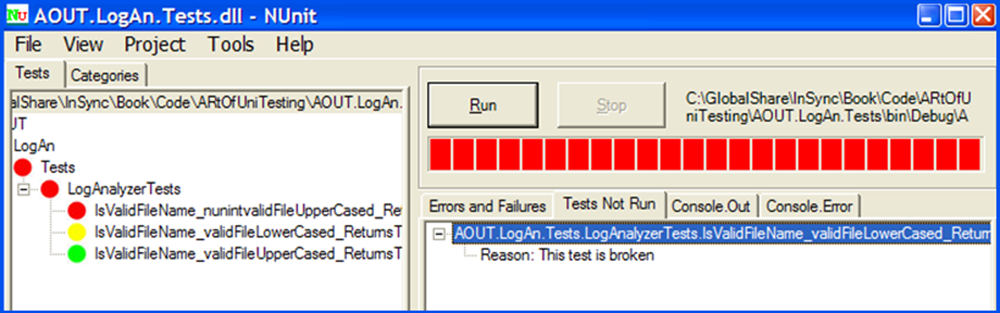
Here’s the last test rewritten with NUnit fluent syntax:
[Test] public void IsValidFileName_EmptyFileName_ThrowsFluent() {
LogAnalyzer la = MakeAnalyzer(); var ex = Assert.Catch<ArgumentException>(() =>
la.IsValidLogFileName("")); Assert.That(ex.Message,
Is.StringContaining("filename has to be provided")); }
Personally I like the terser, simpler, and shorter syntax of Assert.something() than Assert.That. Although fluent syntax seems friendlier at first, it takes longer to understand what you’re testing for (all the way at the end of the line). Choose as you like, but make sure you’re consistent with your choice across the test project, because lack of consistency leads to many readability issues.
2.6.5 Setting test categories You can set up your tests to run under specific test categories, such as slow tests and fast tests. You do this by using NUnit’s [Category] attribute:
[Test] [Category("Fast Tests")]
public void IsValidFileName_ValidFile_ReturnsTrue() { /// ... }
When you load your test assembly again in NUnit, you can see it organized by categories instead of namespaces. Switch to the Categories tab in NUnit, and double-click the category you’d like to run so that it moves into the lower Selected Categories pane. Then click the Run button. Figure 2.7 shows what the screen might look like after you select the Categories tab.
So far, you’ve run simple tests against methods that return some value as a result. What if your method doesn’t return a value but changes some state in the object?
2.7 Testing results that are system state changes instead of return values Up until this section, you’ve seen how to test for the first, simplest kind of result a unit of work can have: return values (explained in chapter 1). Here and in the next chapter we’ll also discuss the second type of result: system state change—checking that the system’s behavior is different after performing an action on the system under test.
DEFINITION State-based testing (also called state verification) determines whether the exercised method worked correctly by examining the changed behavior of the system under test and its collaborators (dependencies) after the method is exercised.
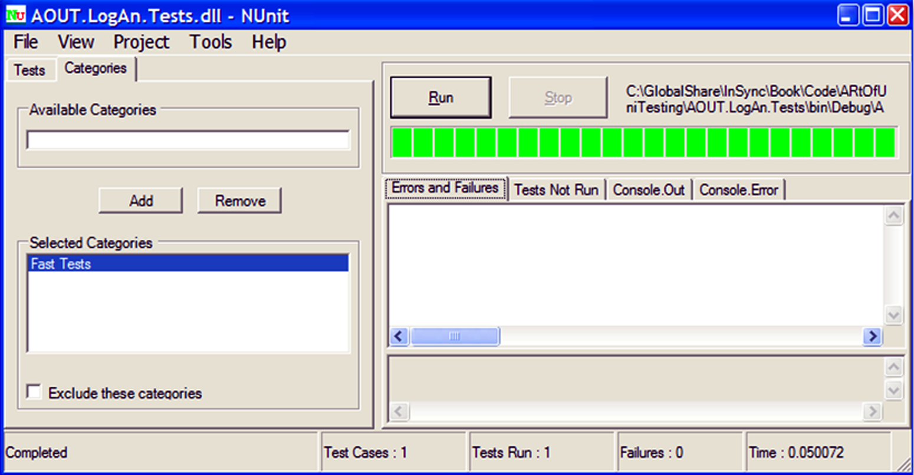
If the system acts exactly the same as it did before, then you didn’t really change its state, or there’s a bug.
If you’ve read other definitions of state-based testing elsewhere, you’ll notice that I define it differently. That is because I view this in a slightly different light—that of test maintainability. Simply testing direct state (sometimes externalizing it to make it testable) is something I wouldn’t usually endorse, because it leads to less-maintainable and less-readable code.
Let’s consider a simple state-based testing example using the LogAnalyzer class, which you can’t test simply by calling one method in your test. Listing 2.4 shows the code for this class. In this case, you introduce a new property, WasLastFileNameValid, that should keep the last success state of the IsValidLogFileName method. Remember, I’m showing the code first, because I’m not trying to teach you TDD here, but how to write good tests. Tests could become better by TDD, but that’s a step you take when you know how to write tests after the code.
Listing 2.4 Testing the property value by calling IsValidLogFileName
public class LogAnalyzer {
public bool WasLastFileNameValid { get; set; } public bool IsValidLogFileName(string fileName) {
WasLastFileNameValid = false; if (string.IsNullOrEmpty(fileName)) {
throw new ArgumentException("filename has to be provided");
} }
} if (!fileName.EndsWith(".SLF",
StringComparison.CurrentCultureIgnoreCase)) {
return false;
} WasLastFileNameValid = true; return true;
Changes the state of the system
As you can see in this code, LogAnalyzer remembers the last outcome of a validation check. Because WasLastFileNameValid depends on having another method invoked first, you can’t simply test this functionality by writing a test that gets a return value from a method; you have to use alternative means to see if the logic works.
First, you have to identify the unit of work you’re testing. Is it in the new property called WasLastFileNameValid? Partly. It’s also in the IsValidLogFileName method, so your test should start with the name of that method because that’s the unit of work you invoke publicly to change the state of the system. The following listing shows a simple test to see if the outcome is remembered.
Listing 2.5 Testing a class by calling a method and checking the value of a property
[Test]
public void IsValidFileName_WhenCalled_ChangesWasLastFileNameValid() {
LogAnalyzer la = MakeAnalyzer(); la.IsValidLogFileName("badname.foo"); Assert.False(la.WasLastFileNameValid);
}
Asserts on state of the system
Notice that you’re testing the functionality of the IsValidLogFileName method by asserting against code in a different location than the piece of code under test.
Here’s a refactored example that adds another test for the opposite expectation of the system state:
[TestCase("badfile.foo", false)] [TestCase("goodfile.slf", true)] public void IsValidFileName_WhenCalled_ChangesWasLastFileNameValid(string file,
bool expected) {
LogAnalyzer la = MakeAnalyzer(); la.IsValidLogFileName(file); Assert.AreEqual(expected, la.WasLastFileNameValid);
}
The next listing shows another example. This one looks into the functionality of a built-in memory calculator.
Listing 2.6 The Add()and Sum() methods
Listing 2.7 The simplest test for a calculator’s Sum()
public class MemCalculator {
private int sum=0; public void Add(int number) {
sum+=number;
} public int Sum() {
int temp = sum; sum = 0; return temp;
} }
The MemCalculator class works a lot like the pocket calculator you know and love. You can click a number, then click Add, then click another number, then click Add, and so on. When you’ve finished, you can click Equals and you’ll get the total so far.
Where do you start testing the Sum() function? You should always consider the simplest test to begin with, such as testing that Sum() returns 0 by default. This is shown in the following listing.
[Test] public void Sum_ByDefault_ReturnsZero() {
MemCalculator calc = new MemCalculator(); int lastSum = calc.Sum(); Assert.AreEqual(0,lastSum);
}
Also note the importance of the name of the method here. You can read it like a sentence.
Here’s a simple list of naming conventions of scenarios I like to use in such cases:
■ ByDefault can be used when there’s an expected return value with no prior action, as shown in the previous example.
■ WhenCalled or Always can be used in the second or third kind of unit of work results (change state or call a third party) when the state change is done with no prior configuration or when the third-party call is done with no prior configuration; for example, Sum_WhenCalled_CallsTheLogger or Sum_Always_CallsTheLogger.
You can’t write any other test without first invoking the Add() method, so the next test will have to call Add() and assert against the number returned from Sum(). The next listing shows the test class with this new test.
Listing 2.8 Two tests, with the second one calling the Add() method
[Test] public void Sum_ByDefault_ReturnsZero() {
MemCalculator calc = MakeCalc(); int lastSum = calc.Sum();
Assert.AreEqual(0, lastSum);
} [Test] public void Add_WhenCalled_ChangesSum() {
MemCalculator calc = MakeCalc(); calc.Add(1); int sum = calc.Sum();
Assert.AreEqual(1, sum);
} private static MemCalculator MakeCalc() {
return new MemCalculator(); }
Notice that this time you use a factory method to initialize MemCalculator. This is a good idea, because it saves time writing the tests, makes the code inside each test smaller and a little more readable, and makes sure MemCalculator is always initialized the same way. It’s also better for test maintainability, because if the constructor for MemCalculator changes, you only need to change the initialization in one place instead of going through each test and changing the new call.
So far, so good. But what happens when the method you’re testing depends on an external resource, such as the filesystem, a database, a web service, or anything else that’s hard for you to control? And how do you test the third type of result for a unit of work—a call to a third party? That’s when you start creating test stubs, fake objects, and mock objects, which are discussed in the next few chapters.
2.8 Summary In this chapter, we looked at using NUnit to write simple tests against simple code. You used the [TestCase],[SetUp], and [TearDown] attributes to make sure your tests always use new and untouched state. You used factory methods to make this more maintainable. You used [Ignore] to skip tests that need to be fixed. Test categories can help you group tests in a logical way rather than by class and namespace, and Assert.Catch() helps you make sure your code throws exceptions when it should. We also looked at
Summary 45
what happens when you aren’t facing a simple method with a return value, and you need to test the end state of an object.
This isn’t enough, though. Most test code has to deal with far more difficult coding issues. The next couple of chapters will give you additional basic tools for writing unit tests. You’ll need to pick and choose from these tools when you write tests for various difficult scenarios you’ll come across.
Finally, keep the following points in mind:
■ It’s common practice to have one test class per tested class, one unit test project per tested project (aside from an integration tests project for that tested project), and at least one test method per unit of work (which can be as small as a method or as large as multiple classes).
■ Name your tests clearly using the following model: [UnitOfWork]_[Scenario] _[ExpectedBehavior].
■ Use factory methods to reuse code in your tests, such as code for creating and initializing objects all your tests use.
■ Don’t use [SetUp] and [TearDown] if you can avoid them. They make tests less understandable.
In the next chapter, we’ll look at more real-world scenarios, where the code to be tested is a little more realistic than what you’ve seen so far. It has dependencies and testability problems, and we’ll start discussing the notion fakes, mocks, and stubs, and how you can use them to write tests against such code.
Havingcoveredthebasicsinpreviouschapters,I’llnowintroducethe
core testing and refactoring techniques necessary for writing tests in the real world.
In chapter 3, we’ll begin by examining stubs and how they help break depen-
dencies. We’ll go over refactoring techniques that make code more testable, and you’ll learn about seams in the process.
In chapter 4, we’ll move on to mock objects and interaction testing and look
at how mock objects differ from stubs, and we’ll explore the concept of fakes.
In chapter 5, we’ll look at isolation frameworks (also known as mocking frame-
works) and how they solve some of the repetitive coding involved in handwritten mocks and stubs. Chapter 6 also compares the leading isolation frameworks in .NET and uses FakeItEasy for examples, showing its API in common use cases.
This chapter covers
■ Defining stubs
■ Refactoring code to use stubs
■ Overcoming encapsulation problems in code
■ Exploring best practices when using stubs
In the previous chapter, you wrote your first unit test using NUnit and explored several testing attributes. You also built tests for simple use cases, where all you had to check on were return values from objects or the state of the unit under test in a bare-bones system.
In this chapter, we’ll take a look at more realistic examples where the object under test relies on another object over which you have no control (or that doesn’t work yet). That object could be a web service, the time of day, threading, or many other things. The important point is that your test can’t control what that dependency returns to your code under test or how it behaves (if you wanted to simulate an exception, for example). That’s when you use stubs.
49
3.1 Introducing stubs Flying people into space presents interesting challenges to engineers and astronauts, one of the more difficult being how to make sure the astronaut is ready to go into space and operate all the machinery during orbit. A full integration test for the space shuttle would have required being in space, and that’s obviously not a safe way to test astronauts. That’s why NASA built full simulators that mimicked the surroundings of a space shuttle’s control deck, which removed the external dependency of having to be in outer space.
DEFINITION An external dependency is an object in your system that your code under test interacts with and over which you have no control. (Common examples are filesystems, threads, memory, time, and so on.)
Controlling external dependencies in your code is the topic that this chapter, and most of this book, will be dealing with. In programming, you use stubs to get around the problem of external dependencies.
DEFINITION A stub is a controllable replacement for an existing dependency (or collaborator) in the system. By using a stub, you can test your code without dealing with the dependency directly.
In chapter 4 we will have an expanded definition of stubs, mocks, and fakes and how they relate to each other. For now, the main thing to remember about mocks versus stubs is that mocks are just like stubs, but you assert against the mock object, whereas you do not assert against a stub.
Let’s look at an example and make things more complicated for our LogAnalyzer class, introduced in the previous chapters. We’ll try to untangle a dependency against the filesystem.
3.2 Identifying a filesystem dependency in LogAn The LogAnalyzer class application can be configured to handle multiple log filename extensions using a special adapter for each file. For the sake of simplicity, let’s assume that the allowed filenames are stored somewhere on disk as a configuration setting for the application, and that the IsValidLogFileName method looks like this:
Test pattern names
xUnit Test Patterns: Refactoring Test Code by Gerard Meszaros (Addison-Wesley, 2007) is a classic pattern reference book for unit testing. It defines patterns for things you fake in your tests in at least five ways, which I feel confuses people (although it’s detailed). In this book, I use only three definitions for fake things in tests: fakes, stubs, and mocks. I feel that this simplification of terms makes it easy for readers to digest the patterns and that there’s no need to know more than those three to get started and write great tests. In various places in the book, though, I will refer to the pattern names used in xUnit Test Patterns so that you can easily refer to Meszaros’s definition if you’d like.
public bool IsValidLogFileName(string fileName) { //read through the configuration file //return true if configuration says extension is supported. }
The problem that arises, as depicted in figure 3.1, is that once this test depends on the filesystem, you’re performing an integration test, and you have all the associated problems: integration tests are slower to run, they need configuration, they test multiple things, and so on.
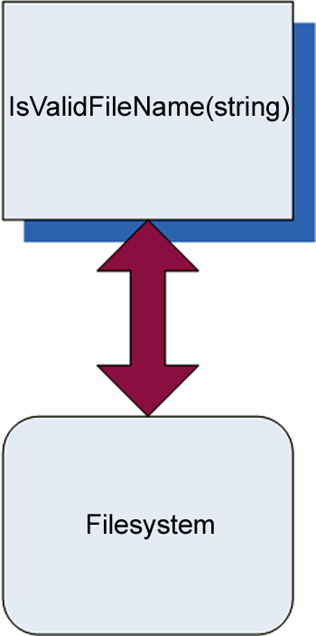
This is the essence of test-inhibiting design: the code has some dependency on an external resource, which might break the test even though the code’s logic is perfectly valid. In legacy systems, a single unit of work (action in the system) might have many dependencies on external resources over which your test code has little, if any, control. Chapter 10 touches more on the subject of legacy code.
3.3 Determining how to easily test LogAnalyzer “There is no object-oriented problem that cannot be solved by adding a layer of indirection, except, of course, too many layers of indirection.” I like this quote (from http://en.wikipedia.org/ wiki/Abstraction_layer) because a lot of the “art” in the art of unit testing is about finding the right place to add or use a layer of indirection to test the code base.
You can’t test something? Add a layer that wraps up the calls to that something, and then mimic that layer in your tests. Or make that something replaceable (so that it is itself a layer of indirection). The art also involves figuring out when a layer of indirection already exists instead of having to invent it or knowing when not to use it because it complicates things too much. But let’s take it one step at a time.
The only way you can write a test for this code, as it is, is to have a configuration file in the filesystem. Because you’re trying to avoid these kinds of dependencies, you want your code to be easily testable without resorting to integration testing.
If you look at the astronaut analogy we started out with, you can see that there’s a definite pattern for breaking the dependency:
1 Find the interface or API that the object under test works against. In the astronaut example, this was the joysticks and monitors of the space shuttle, as depicted in figure 3.2.
2 Replace the underlying implementation of that interface with something that you have control over. This involved hooking up the various shuttle monitors, joysticks, and buttons to a control room where test engineers were able to control what the space shuttle interface was showing to the astronauts under test.
Transferring this pattern to your code requires more steps:
1 Find the interface that the start of the unit of work under test works against. (In this case, “interface” isn’t used in the pure object-oriented sense; it refers to the defined method or class being collaborated with.) In our LogAn project, this is the filesystem configuration file.
2 If the interface is directly connected to your unit of work under test (as in this case—you’re calling directly into the filesystem), make the code testable by adding a level of indirection hiding the interface. In our example, moving the direct call to the filesystem to a separate class (such as FileExtensionManager) would be one way to add a level of indirection. We’ll also look at others. (Figure 3.3 shows how the design might look after this step.)
3 Replace the underlying implementation of that interactive interface with something that you have control over. In this case, you’ll replace the instance of the class that your method calls (FileExtensionManager) with a stub class that you can control (StubExtensionManager), giving your test code control over external dependencies.
Your replacement instance will not talk to the filesystem at all, which breaks the dependency on the filesystem. Because you aren’t testing the class that talks to the filesystem but the code that calls this class, it’s OK if that stub class doesn’t do anything but make happy noises when running inside the test. Figure 3.4 shows the design after this alteration.
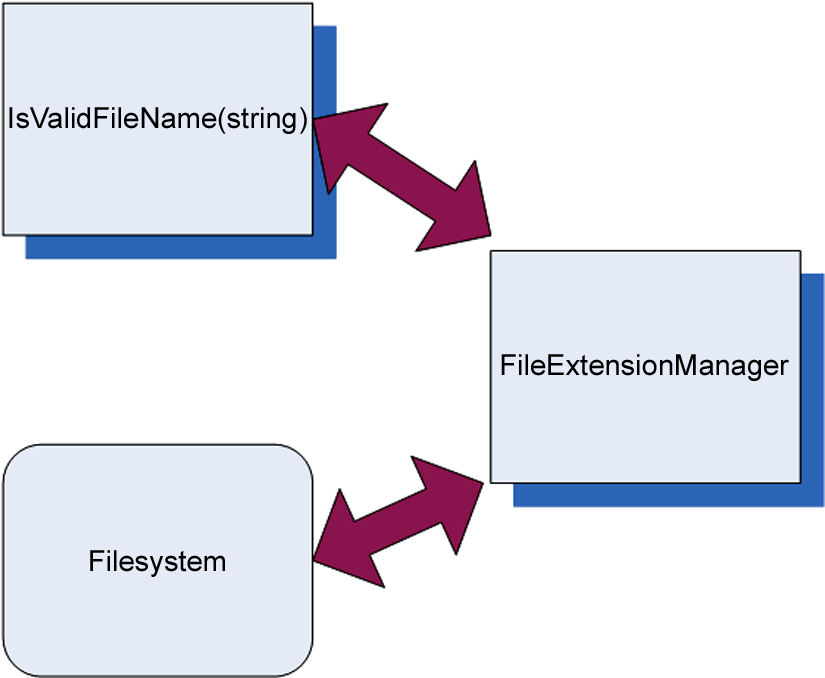
Figure 3.3 Introducing a layer of indirection to avoid a direct dependency on the filesystem. The code that calls the filesystem is separated into a FileExtensionManager class, which will later be replaced with a stub in your test.
In figure 3.4, I’ve added a new C# interface into the mix. This new interface will allow the object model to abstract away the operations of what a FileExtensionManager class does, and it will allow the test to create a stub that looks like a FileExtensionManager. You’ll see more on this method in the next section.
We’ve looked at one way of introducing testability into your code base—by creating a new interface. Now let’s look at the idea of code refactoring and introducing seams into your code.
3.4 Refactoring your design to be more testable It’s time to introduce two new terms that will be used throughout the book: refactoring and seams.
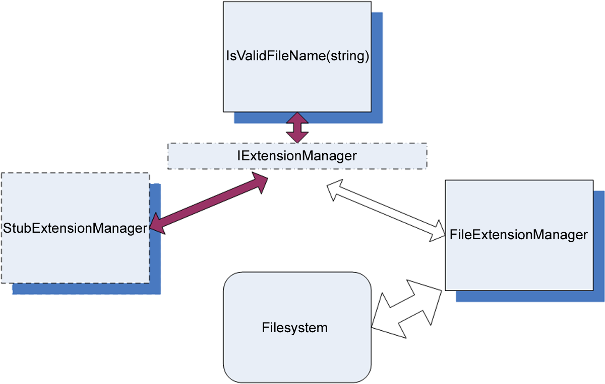
DEFINITION Refactoring is the act of changing code without changing the code’s functionality. That is, it does exactly the same job as it did before. No more and no less. It just looks different. A refactoring example might be renaming a method and breaking a long method into several smaller methods.
DEFINITION Seams are places in your code where you can plug in different functionality, such as stub classes, adding a constructor parameter, adding a public settable property, making a method virtual so it can be overridden, or externalizing a delegate as a parameter or property so that it can be set from outside a class. Seams are what you get by implementing the Open-Closed Principle, where a class’s functionality is open for extenuation, but its source code is closed for direct modification. (See Working Effectively with Legacy Code by Michael Feathers, for more about seams, or Clean Code by Robert Martin about the Open-Closed Principle.)
You can refactor code by introducing a new seam into it without changing the original functionality of the code, which is exactly what I’ve done by introducing the new IExtensionManager interface.
And refactor you will. Before you do that, however, I’ll remind you that refactoring your code without having any sort of automated tests against it (integration or otherwise) can lead you down a career-ending rabbit hole if you’re not careful. Always have some kind of integration test watching your back before you do something to existing code, or at least have a “getaway” plan—a copy of the code before you started refactoring, hopefully in your source control, with a nice, visible comment “before starting refactoring” that you can easily find later. In this chapter, I assume that you might have some of those integration tests already and that you run them after every refactoring to see if the code still passes. But we won’t focus on them because this book is about unit testing.
To break the dependency between your code under test and the filesystem, you can introduce one or more seams into the code. You just need to make sure that the resulting code does exactly the same thing it did before. There are two types of dependency-breaking refactorings, and one depends on the other. I call them Type A and Type B refactorings:
■ Type A—Abstracting concrete objects into interfaces or delegates
■ Type B—Refactoring to allow injection of fake implementations of those delegates or interfaces
In the following list, only the first item is a Type A refactoring. The rest are Type B refactorings:
■ Type A—Extract an interface to allow replacing underlying implementation.
■ Type B—Inject stub implementation into a class under test.
■ Type B—Inject a fake at the constructor level.
■ Type B—Inject a fake as a property get or set.
■ Type B—Inject a fake just before a method call.
We’ll look at each of these.
3.4.1 Extract an interface to allow replacing underlying implementation In this technique, you need to break out the code that touches the filesystem into a separate class. That way you can easily distinguish it and later replace the call to that class from your tests (as was shown in figure 3.3). This first listing shows the places where you need to change the code.
Listing 3.1 Extracting a class that touches the filesystem and calling it
Listing 3.2 Extracting an interface from a known class
public bool IsValidLogFileName(string fileName) {
FileExtensionManager mgr =
Uses the extracted class
new FileExtensionManager(); return mgr.IsValid(fileName);
} class FileExtensionManager
{
Defines the extracted class
public bool IsValid(string fileName) { //read some file here }
}
Next, you can tell your class under test that instead of using the concrete FileExtensionManager class, it will deal with some form of ExtensionManager, without knowing its concrete implementation. In .NET, this could be accomplished by either using a base class or an interface that FileExtensionManager would extend.
The next listing shows the use of a new interface in your design to make it more testable. Figure 3.4 showed a diagram of this implementation.
public class FileExtensionManager : IExtensionManager {
public bool IsValid(string fileName) {
... }
} public interface IExtensionManager {
Defines the new interface
bool IsValid (string fileName); }
Implements the interface
//the unit of work under test: public bool IsValidLogFileName(string fileName)
{
}
IExtensionManager mgr =
new FileExtensionManager(); return mgr.IsValid(fileName);
Defines a variable as the type of the interface
You create an interface with one IsValid (string) method and make FileExtensionManager implement that interface. It still works exactly the same way, only now you can replace the “real” manager with your own “fake” manager, which you’ll create later to support your test.
You still haven’t created the stub extension manager, so let’s create that right now. It’s shown in the following listing.
Listing 3.3 Simple stub code that always returns true
public class AlwaysValidFakeExtensionManager:IExtensionManager {
public bool IsValid(string fileName) {
Implements IExtensionManager
return true; }
}
First, let’s note the unique name of this class. It’s very important. It’s not StubExtensionManager or MockExtensionManager. It’s FakeExtensionManager. A fake denotes an object that looks like another object but can be used as a mock or a stub. (The next chapter is about mock objects.)
By saying that an object or a variable is fake, you delay deciding how to name this look-alike object and remove any confusion that would have resulted from naming it mock or stub extension manager.
When people hear “mock” or “stub” they expect a specific behavior, which we’ll discuss later. You don’t want to say how this class is named, because you’ll create this class in a way that will allow it to act as both, so that different tests in the future can reuse this class.
This fake extension manager will always return true, so name the class AlwaysValidFakeExtensionManager, so that the reader of your future test will understand what will be the behavior of the fake object, without needing to read its source code.
This is just one technique, and it can lead to an explosion of such handwritten fakes in your code. Handwritten fakes are fakes you write purely in plain code, without using a framework to generate them for you. You’ll see another technique to configure your fake a bit later in this chapter.
You can use this fake in your tests to make sure that no test will ever have a dependency on the filesystem, but you can also add some code to it that will allow it to simulate throwing any kind of exception. A bit later on that as well.
Now you have an interface and two classes implementing it, but your method under test still calls the real implementation directly:
public bool IsValidLogFileName(string fileName) {
IExtensionManager mgr = new FileExtensionManager(); return mgr. IsValid (fileName);
}
You somehow have to tell your method to talk to your implementation rather than the original implementation of IExtensionManager. You need to introduce a seam into the code, where you can plug in your stub.
3.4.2 Dependency injection: inject a fake implementation into a unit under test There are several proven ways to create interface-based seams in your code—places where you can inject an implementation of an interface into a class to be used in its methods. Here are some of the most notable ways:
■ Receive an interface at the constructor level and save it in a field for later use.
■ Receive an interface as a property get or set and save it in a field for later use.
■ Receive an interface just before the call in the method under test using one of the following:
– A parameter to the method (parameter injection)
– A factory class
– A local factory method
– Variations on the preceding techniques
The parameter injection method is trivial: you send in an instance of a (fake) dependency to the method in question by adding a parameter to the method signature.
Let’s go through the rest of the possible solutions one by one and see why you’d want to use each.
3.4.3 Inject a fake at the constructor level (constructor injection) In this scenario, you add a new constructor (or a new parameter to an existing constructor) that will accept an object of the interface type you extracted earlier (IExtensionManager). The constructor then sets a local field of the interface type in the class for later use by your method or any other. Figure 3.5 shows the flow of the stub injection.
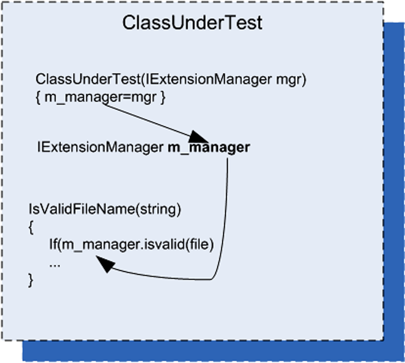
The following listing shows how you could write a test for your LogAnalyzer class using a constructor injection technique. Figure 3.5 Flow of injection via a constructor
Listing 3.4 Injecting your stub using constructor injection
public class LogAnalyzer {
Defines production code
private IExtensionManager manager; public LogAnalyzer(IExtensionManager mgr) {
Defines constructor that can be called by tests
manager = mgr;
} public bool IsValidLogFileName(string fileName) {
return manager.IsValid(fileName); }
} public interface IExtensionManager {
bool IsValid(string fileName);
} [TestFixture] public class LogAnalyzerTests {
Defines test code
[Test] public void IsValidFileName_NameSupportedExtension_ReturnsTrue() {
FakeExtensionManager myFakeManager =
Sets up stub to return true
new FakeExtensionManager(); myFakeManager.WillBeValid = true; LogAnalyzer log =
new LogAnalyzer (myFakeManager);
Sends in stub
bool result = log.IsValidLogFileName("short.ext"); Assert.True(result);
}
} internal class FakeExtensionManager : IExtensionManager {
Defines stub that uses simplest mechanism possible
public bool WillBeValid = false; public bool IsValid(string fileName) {
return WillBeValid; }
}
NOTE The fake extension manager is located in the same file as the test code because currently the fake is used only from within this test class. It’s far easier to locate, read, and maintain a handwritten fake in the same file than in a different one. If, later on, you have an additional class that needs to use this fake, you can move it to another file easily with a tool like ReSharper (which I highly recommend). See the appendix.
You’ll also notice that the fake object in listing 3.4 is different than the one you saw previously. It can be configured by the test code as to what Boolean value to return when its method is called. Configuring the stub from the test means the stub class’s source code can be reused in more than one test case, with the test setting the values for the stub before using it on the object under test. This also helps the readability of the test code, because the reader of the code can read the test and find everything they need to know in one place. Readability is an important aspect of writing unit tests, and we’ll cover it in detail later in the book, particularly in chapter 8.
Another thing to note is that by using parameters in the constructor, you’re in effect making the parameters nonoptional dependencies (assuming this is the only constructor), which is a design choice. The user of the type will have to send in arguments for any specific dependencies that are needed.
CAVEATS WITH CONSTRUCTOR INJECTION
Problems can arise from using constructors to inject implementations. If your code under test requires more than one stub to work correctly without dependencies, adding more and more constructors (or more and more constructor parameters) becomes a hassle, and it can even make the code less readable and less maintainable.
Suppose LogAnalyzer also had a dependency on a web service and a logging service in addition to the file extension manager. The constructor might look like this:
public LogAnalyzer(IExtensionManager mgr, ILog logger, IWebService service) {
// this constructor can be called by tests manager = mgr; log= logger; svc= service;
}
One solution is to create a special class that contains all the values needed to initialize a class and to have only one parameter to the method: that class type. That way, you only pass around one object with all the relevant dependencies. (This is also known as a parameter object refactoring.) This can get out of hand pretty quickly, with dozens of properties on an object, but it’s possible.
Another possible solution is using inversion of control (IoC) containers. You can think of IoC containers as “smart factories” for your objects (although they’re much more than that). A few well-known containers of this type are Microsoft Unity, StructureMap, and Castle Windsor. They provide special factory methods that take in the type of object you’d like to create and any dependencies that it needs and then initialize the object using special configurable rules such as what constructor to call, what properties to set in what order, and so on. They’re powerful when put to use on a complicated composite object hierarchy where creating an object requires creating and initializing objects several levels down the line. If your class needs an ILogger interface at its constructor, for example, you can configure such a container object to always return the same ILogger object that you give it, when resolving this interface requirement. The end result of using containers is usually simpler
handling and retrieving of objects and less worry about the dependencies or maintaining the constructors.
TIP There are many other successful container implementations, such as Autofac or Ninject, so look at them when you read more about this topic. Dealing with containers is beyond the scope of this book, but you can start reading about them with Scott Hanselman’s list at www.hanselman.com/ blog/ListOfNETDependencyInjectionContainersIOC.aspx. To really get a grasp on this topic in a deeper way, I recommend Dependency Injection in .NET (Manning Publications, 2011) by Mark Seeman. After reading that, you should be able to build your own container from scratch. I seldom use containers in my real code. I find that most of the time they complicate the design and readability of things. It might be that if you need a container, your design needs changing. What do you think?
WHEN YOU SHOULD USE CONSTRUCTOR INJECTION
My experience is that using constructor arguments to initialize objects can make my testing code more cumbersome unless I’m using helper frameworks such as IoC containers for object creation. But it’s my preferred way, because it sucks the least in terms of having APIs that are readable and understandable.
Also, using parameters in constructors is a great way to signify to the user of your API that these parameters aren’t optional. They have to be sent in when creating the object.
If you want these dependencies to be optional, refer to section 3.4.5. It discusses using property getters and setters, which is a much more relaxed way to define optional dependencies than, say, adding different constructors to the class for each dependency.
This isn’t a design book, just like this isn’t a TDD book. I’d recommend, again, reading Clean Code by Bob Martin to help you decide when to use constructor parameters, either after you feel comfortable doing unit testing or before you even start learning unit testing. Learning two or more major skills like TDD, design, and unit testing at the same time can create a big wall that makes things harder and more cumbersome to learn. By learning each skill separately, you make sure you’re good at each of them.
TIP You’ll find that dilemmas about what technique or design to use in which situation are common in the world of unit testing. This is a wonderful thing. Always question your assumptions; you might learn something new.
If you choose to use constructor injection, you’ll probably also want to use IoC containers. This would be a great solution if all code in the world were using IoC containers, but most people don’t know what the inversion of control principle is, let alone what tools you can use to make it a reality. The future of unit testing will likely see more and more use of these frameworks. As that happens, you’ll see clearer and clearer guidelines on how to design classes that have dependencies, or you’ll see tools that solve the dependency injection (DI) problem without needing to use constructors at all.
In any case, constructor parameters are just one way to go. Properties are often used as well.
3.4.4 Simulating exceptions from fakes Here’s a simple example of how you can make your fake class configurable to throw an exception, so that you can simulate any type of exception when a method is invoked. For the sake of argument let’s say that you’re testing the following requirement: if the file extension manager throws an exception, you should return false but not bubble up the exception (yes, in real life that would be a bad practice, but for the sake of the example bear with me).
[Test]
public void IsValidFileName_ExtManagerThrowsException_ReturnsFalse() {
FakeExtensionManager myFakeManager = new FakeExtensionManager();
myFakeManager.WillThrow = new Exception(“this is fake”); LogAnalyzer log =
new LogAnalyzer (myFakeManager); bool result = log.IsValidLogFileName("anything.anyextension"); Assert.False(result);
}
} internal class FakeExtensionManager : IExtensionManager {
public bool WillBeValid = false;; public Exception WillThrow = null ;
public bool IsValid(string fileName) {
if(WillThrow !=null)
{ throw WillThrow;} return WillBeValid;
} }
To make this test pass you’d have to write code that calls the file extension manager with a try-catch clause and returns false if the catch clause was hit.
3.4.5 Injecting a fake as a property get or set
In this scenario, you’ll add a property get and set for each dependency you want to inject. You’ll then use this dependency when you need it in your code under test. Figure 3.6 shows the flow of injection with properties.
Using this technique (also called dependency injection, a term that can also be used to describe the other techniques in this chapter), your test code would look quite similar to that in section 3.4.3, which used constructor injection. But this code, shown next, is more readable and simpler to write.
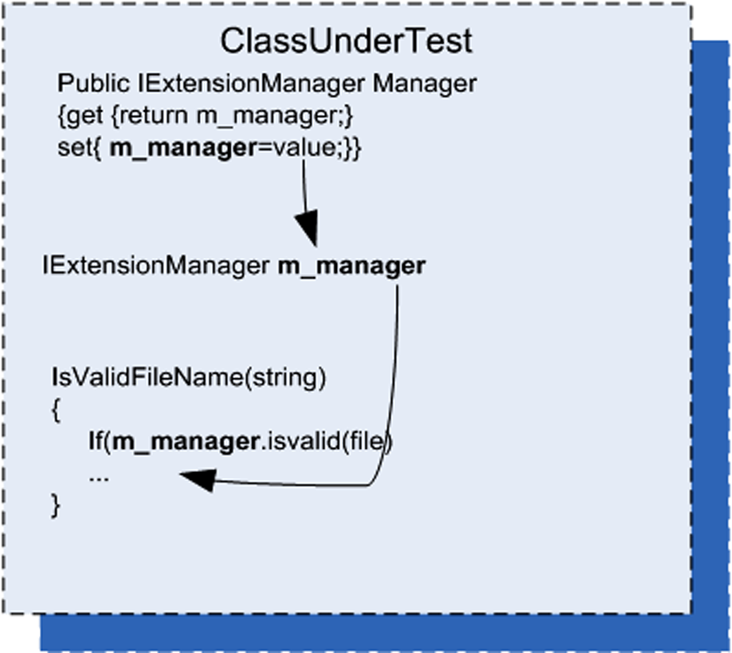
Figure 3.6 Using properties to inject dependencies. This is much simpler than using a constructor because each test can set only the properties that it needs to get the test underway.
Listing 3.5 Injecting a fake by adding property setters to the class under test
public class LogAnalyzer {
private IExtensionManager manager; public LogAnalyzer () {
}
manager = new FileExtensionManager();
} public IExtensionManager ExtensionManager {
get { return manager; } set { manager = value; }
} public bool IsValidLogFileName(string fileName) {
return manager.IsValid(fileName); }
Allows setting dependency via a property
[Test] Public void IsValidFileName_SupportedExtension_ReturnsTrue() {
//set up the stub to use, make sure it returns true
... //create analyzer and inject stub LogAnalyzer log =
new LogAnalyzer (); log.ExtensionManager=someFakeManagerCreatedEarlier; //Assert logic assuming extension is supported
...
Injects a stub
Like constructor injection, property injection has an effect on the API design in terms of defining which dependencies are required and which aren’t. By using properties, you’re effectively saying, “This dependency isn’t required to operate this type.”
WHEN YOU SHOULD USE PROPERTY INJECTION
Use this technique when you want to signify that a dependency of the class under test is optional or if the dependency has a default instance created that doesn’t create any problems during the test.
3.4.6 Injecting a fake just before a method call This section deals with a scenario where you get an instance of an object just before you do any operations with it, instead of getting it via a constructor or a property. The difference is that the object initiating the stub request in this situation is the code under test; in previous sections, the fake instance was set by code external to the code under test before the test started.
USE A FACTORY CLASS
In this scenario, you go back to the basics, where a class initializes the manager in its constructor, but it gets the instance from a factory class. The Factory pattern is a design that allows another class to be responsible for creating objects.
Your tests will configure the factory class (which, in this case, uses a static method to return an instance of an object that implements IExtensionManager) to return a stub instead of the real implementation. Figure 3.7 shows this.
This is a clean design, and many object-oriented systems use factory classes to return instances of objects. But most systems don’t allow anyone outside the factory class to change the instance being returned, in order to protect the encapsulated design of this class.
In this case, I’ve added a new setter method (a new seam) to the factory class so that your tests will have more control over what instance gets returned. Once you
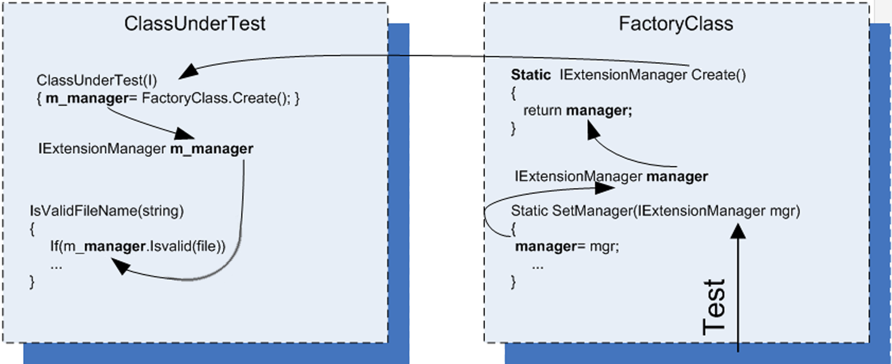
introduce statics into test code, you might also need to reset the factory state before or after each test run, so that other tests won’t be affected by the configuration.
This technique produces test code that’s easy to read, and there’s a clear separation of concerns between the classes. Each one is responsible for a different action.
The next listing shows code that uses the factory class in LogAnalyzer (and also includes the tests).
Listing 3.6 Setting a factory class to return a stub when the test is running
public class LogAnalyzer {
private IExtensionManager manager; public LogAnalyzer () {
Uses factory in production code
manager = ExtensionManagerFactory.Create();
} public bool IsValidLogFileName(string fileName) {
return manager.IsValid(fileName) && Path.GetFileNameWithoutExtension(fileName).Length>5;
}
} [Test] public void IsValidFileName_SupportedExtension_ReturnsTrue() {
//set up the stub to use, make sure it returns true
... ExtensionManagerFactory
.SetManager(myFakeManager); //create analyzer and inject stub LogAnalyzer log =
Sets stub into factory class for this test
new LogAnalyzer (); //Assert logic assuming extension is supported
...
} class ExtensionManagerFactory {
private IExtensionManager customManager=null; public IExtensionManager Create() {
If(customManager!=null) return customManager;
Defines factory that can use and return custom manager
Return new FileExtensionManager();
} public void SetManager(IExtensionManager mgr) {
customManager = mgr;
The implementation of the factory class can vary greatly, and the examples shown here represent only the simplest illustration. For more examples of factories, read about the factory method and the Abstract Factory Design patterns in the classic book Design Patterns (Addison-Wesley, 1994) by the Gang of Four (Erich Gamma, Richard Helm, Ralph Johnson, and John M. Vlissides).
The only thing you need to make sure of is that once you use these patterns, you add a seam to the factories you make so that they can return your stubs instead of the default implementations. Many systems have a global #debug switch that, when turned on, causes seams to automatically send in fake or testable objects instead of default implementations. Setting this up can be hard work, but it’s worth it when it’s time to test the system.
HIDING SEAMS IN RELEASE MODE
What if you don’t want the seams to be visible in release mode? There are several ways to achieve that. In .NET, for example, you can put the seam statements (the added constructor, setter, or factory setter) under a conditional compilation argument. I’ll talk more about this in section 3.6.2.
DIFFERENT INDIRECTION LEVELS
You’re dealing with a different layer depth here than the previous sections. At each different depth, you can choose to fake (or stub) a different object. Table 3.1 shows three layer depths that can be used inside the code to return stubs.
Code under test |
Possible action |
|
Add a constructor argument that will be used as the dependency. A member in the class under test is now fake; all other code remains unchanged. Tell the factory class to return your fake dependency by setting a property. The member inside the factory class is fake; the class under test isn’t changed at all. Replace the instance of the factory class with a fake factory that returns your fake dependency. The factory is a fake, which also returns a fake; the class under test isn’t changed. |
The thing to understand about layers of indirection is that the deeper you go down the rabbit hole (down the code-base execution call stack), the better manipulation power you have over the code under test, because you create stubs that are in charge of more things down the line. But there’s also a bad side to this: the farther you go down the layers, the harder the test will be to understand, and the harder it will be to find the right place to put your seam. The trick is to find the right balance between complexity and manipulation power so that your tests remain readable, but you get full control of the situation under test.
For the scenario in listing 3.6 (using a factory), adding a constructor-level argument would complicate things when you already have a good possible target layer for your seam—the factory at depth 2. Layer 2 is the simplest to use here because the changes it requires in the code are minimal:
■ Layer 1 (faking a member in the class under test)—You’d need to add a constructor, set the class in the constructor, set its parameters from the test, and worry about future uses of that API in the production code. This method would change the semantics of using the class under test, which is best avoided unless you have a good reason.
■ Layer 2 (faking a member in a factory class)—This method is easy. Add a setter to the factory and set it to a fake dependency of your choice. There’s no changing of the semantics of the code base, everything stays the same, and the code is dead simple. The only con is that this method requires that you understand who calls the factory and when, which means you need to do some research before you can implement this easily. Understanding a code base you’ve never seen is a daunting task, but it still seems more reasonable than the other options.
■ Layer 3 (faking the factory class)—You’d need to create your own version of a factory class, which may or may not have an interface. This means also creating an interface for it. Then you’d need to create your fake factory instance, tell it to return your fake dependency class (a fake returning a fake—take note!), and then set the fake factory class on the class under test. A fake returning a fake is always a bit of a mind-boggling scenario, which is best avoided because it makes the test less understandable.
FAKE METHOD—USE A LOCAL FACTORY METHOD (EXTRACT AND OVERRIDE)
This method doesn’t reside in any of the layers listed in table 3.1; it creates a whole new layer of indirection close to the surface of the code under test. The closer you get to the surface of the code, the less you need to muck around with changing dependencies. In this case, the class under test is also a dependency of sorts that you need to manipulate.
In this scenario, you use a local virtual method in the class under test as a factory to get the instance of the extension manager. Because the method is marked as virtual, it can be overridden in a derived class, which creates your seam. You inject a stub into the class by inheriting a new class from the class under test, overriding the virtual factory method, and returning whatever instance the new class is configured to return in the overriding method. The tests are then performed on the new derived class. The factory method could also be called a stub method that returns a stub object. Figure 3.8 shows the flow of object instances.
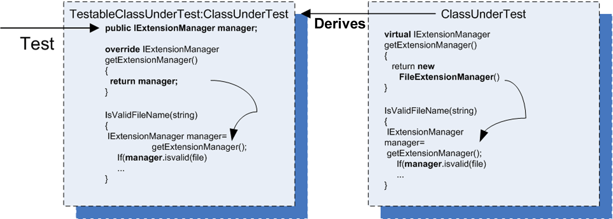
Here are the steps for using a factory method in your tests:
■ In the class under test,
– Add a virtual factory method that returns the real instance.
– Use the factory method in your code, as usual.
■ In your test project,
– Create a new class.
– Set the new class to inherit from the class under test.
– Create a public field (no need for property get or set) of the interface type you want to replace (IExtensionManager).
– Override the virtual factory method.
– Return the public field.
■ In your test code,
– Create an instance of a stub class that implements the required interface (IExtensionManager).
– Create an instance of the newly derived class, not of the class under test.
– Configure the new instance’s public field (which you created earlier) and set it to the stub you’ve instantiated in your test.
When you test your class now, your production code will be using your fake through the overridden factory method.
Here’s what the code might look like when using this method.
Listing 3.7 Faking a factory method
public class LogAnalyzerUsingFactoryMethod {
public bool IsValidLogFileName(string fileName)
{
return GetManager().IsValid(fileName);
Uses virtual GetManager() method
} protected virtual IExtensionManager GetManager() {
return new FileExtensionManager(); }
Returns hardcoded value
} [TestFixture] public class LogAnalyzerTests {
[Test] public void overrideTest() {
FakeExtensionManager stub = new FakeExtensionManager(); stub.WillBeValid = true;
Creates instance of class derived from class under test
TestableLogAnalyzer logan =
new TestableLogAnalyzer(stub); bool result = logan.IsValidLogFileName("file.ext"); Assert.True(result); }
} class TestableLogAnalyzer
:LogAnalyzerUsingFactoryMethod {
public TestableLogAnalyzer(IExtensionManager mgr) {
Manager = mgr;
} public IExtensionManager Manager; protected override IExtensionManager GetManager() {
Returns what you tell it to
return Manager; }
} internal class FakeExtensionManager : IExtensionManager {
//no change from the previous samples
... }
The technique used here is called Extract and Override, and you’ll find it extremely easy to use once you’ve done it a couple of times. It’s a powerful technique, and one I’ll put to other uses throughout this book.
TIP You can learn more about this dependency-breaking technique and others in a book I’ve found to be worth its weight in gold: Working Effectively with Legacy Code by Michael Feathers.
Variations on refactoring techniques 69
Extract and Override is a powerful technique because it lets you directly replace the dependency without going down the rabbit hole (changing dependencies deep inside the call stack). That makes it quick and clean to perform, and it almost corrupts your good sense of object-oriented aesthetics, leading you to code that might have fewer interfaces but more virtual methods. I like to call this method “ex-crack and override” because it’s such a hard habit to let go of once you know it.
WHEN YOU SHOULD USE THIS METHOD
Extract and Override is great for simulating inputs into your code under test, but it’s cumbersome when you want to verify interactions that are coming out of the code under test into your dependency.
For example, it’s great if your test code calls a web service and gets a return value, and you’d like to simulate your own return value. But it gets bad quickly if you want to test that your code calls out to the web service correctly. That requires lots of manual coding, and isolation frameworks are better suited for such tasks (as you’ll see in the next chapter). Extract and Override is good if you’d like to simulate return values or simulate whole interfaces as return values but not good for checking interactions between objects.
I use this technique a lot when I need to simulate inputs into my code under test, because it helps keep the changes to the semantics of the code base (new interfaces, constructors, and so on) a little more manageable. You don’t need to make as many changes to get the code into a testable state. The only time I don’t use this technique is when the code base clearly shows that there’s a path laid out for me: there’s already an interface ready to be faked or there’s already a place where a seam can be injected. When these things don’t exist, and the class itself isn’t sealed (or can be made nonsealed without too much resentment from your peers), I check out this technique first and only after that move on to more complicated options.
3.5 Variations on refactoring techniques
There are many variations on the preceding simple techniques to introduce seams into source code. For example, instead of adding a parameter to a constructor, you can add it directly to the method under test. Instead of sending in an interface, you could send a base class, and so on. Each variation has its own strengths and weaknesses.
One of the reasons you may want to avoid using a base class instead of an interface is that a base class from the production code may already have (and probably has) built-in production dependencies that you’ll have to know about and override. This makes implementing derived classes for testing harder than implementing an interface, which lets you know exactly what the underlying implementation is and gives you full control over it.
In chapter 4, we’ll look at techniques that can help you avoid writing handwritten fakes that implement interfaces and instead use frameworks that can help do this at runtime.
But for now, let’s look at another way to gain control over the code under test without using interfaces. You’ve already seen one way of doing this in the previous pages, but this method is so effective it deserves a discussion of its own.
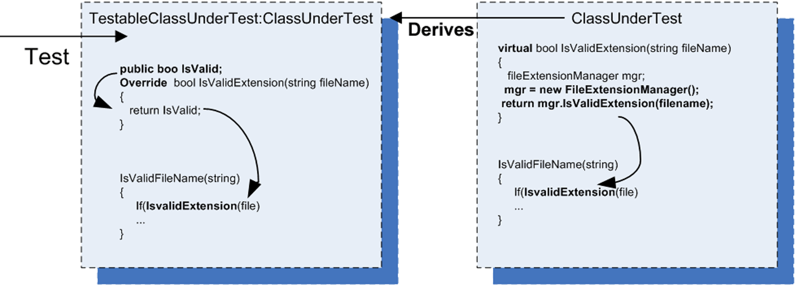
3.5.1 Using Extract and Override to create fake results You’ve already seen an example of Extract and Override in section 3.4.5. You derive from the class under test so that you can override a virtual method and force it to return your stub.
But why stop there? What if you’re unable or unwilling to add a new interface every time you need control over some behavior in your code under test? In those cases, Extract and Override can help simplify things, because it doesn’t require writing and introducing new interfaces—just deriving from the class under test and overriding some behavior in the class.
Figure 3.9 shows another way you could have forced the code under test to always return true about the validity of the file extension.
In the class under test, instead of virtualizing a factory method, you virtualize the calculation result. This means that, in your derived class, you override the method and return whatever value you want, without needing to create an interface or a new stub. You simply inherit and override the method to return the desired result.
The following listing shows how your code might look using this technique.
Listing 3.8 Returning a result rather than a stub object from an extracted method
public class LogAnalyzerUsingFactoryMethod {
public bool IsValidLogFileName(string fileName) {
return this.IsValid(fileName);
} protected virtual bool IsValid(string fileName) {
FileExtensionManager mgr = new FileExtensionManager(); return mgr.IsValid(fileName);
} }
[Test]
public void overrideTestWithoutStub() {
TestableLogAnalyzer logan = new TestableLogAnalyzer(); logan.IsSupported = true;
Sets fake result value
bool result = logan.IsValidLogFileName("file.ext"); Assert.True(result,"...");
} class TestableLogAnalyzer: LogAnalyzerUsingFactoryMethod {
public bool IsSupported; protected override bool IsValid(string fileName) {
Returns fake value that was set by the test
return IsSupported; }
}
WHEN YOU SHOULD USE EXTRACT AND OVERRIDE
The basic motivation for using this technique is the same as for the method discussed in section 3.4.5. If I can, I use this technique over the previous one because it is much simpler.
By now, you may be thinking that adding all these constructors, setters, and factories for the sake of testing is problematic. It breaks some serious object-oriented principles, especially the idea of encapsulation, which says, “Hide everything that the user of your class doesn’t need to see.” That’s our next topic. (Chapter 11 also deals with testability and design issues.)
3.6 Overcoming the encapsulation problem Some people feel that opening up the design to make it more testable is a bad thing because it hurts the object-oriented principles the design is based on. I can wholeheartedly say to those people, “Don’t be silly.” Object-oriented techniques are there to enforce constraints on the end user of the API (the end user being the programmer who will use your object model) so that the object model is used properly and is protected from unintended usage. Object orientation also has a lot to do with reuse of code and the single-responsibility principle (which requires that each class have only a single responsibility).
When you write unit tests for your code, you’re adding another end user (the test) to the object model. That end user is just as important as the original one, but it has different goals when using the model. The test has specific requirements from the object model that seem to defy the basic logic behind a couple of objectoriented principles, mainly encapsulation. Encapsulating those external dependencies somewhere without allowing anyone to change them, having private constructors or sealed classes, having nonvirtual methods that can’t be overridden—all these are classic signs of overprotective design. (Security-related designs are a special case that I forgive.) The problem is that the second end user of the API, the test, needs these external dependencies as a feature in the code. I call the design that emerges
from designing with testability in mind testable object-oriented design (TOOD), and you’ll hear more about TOOD in chapter 11.
The concept of testable design conflicts, in some people’s opinion, with the concept of object-oriented design. If you really need to consolidate these two worlds (to have your cake and eat it too), here are a few tips and tricks you can use to make sure that the extra constructors and setters don’t show up in release mode or at least don’t play a part in release mode.
TIP A good place to look at design objectives that adhere more to the idea of testable design is Bob Martin’s Clean Code.
3.6.1 Using internal and [InternalsVisibleTo] If you dislike adding a public constructor that everyone can see to your class, you can make it internal instead of public. You can then expose all internal related members and methods to your test assembly by using the [InternalsVisibleTo] assemblylevel attribute. The next listing shows this more clearly.
Listing 3.9 Exposing internals to the test assembly
public class LogAnalyzer {
... internal LogAnalyzer (IExtensionManager extentionMgr)
{
manager = extentionMgr; }
...
} using System.Runtime.CompilerServices; [assembly:
InternalsVisibleTo("AOUT.CH3.Logan.Tests")]
Such code can usually be found in AssemblyInfo.cs files. Using internal is a good solution if you have no other way of making things public to the test code.
3.6.2 Using the [Conditional] attribute The System.Diagnostics.ConditionalAttribute is notable for its nonintuitive action. When you put this attribute on a method, you initialize the attribute with the string signifying a conditional build parameter that’s passed in as part of the build. (DEBUG and RELEASE are the two most common ones, and Visual Studio uses them by default according to your build type.)
If the build flag is not present during the build, the callers to the annotated method won’t be included in the build. For example, this method will have all the callers to it removed during a release build, but the method itself will stay on:
[Conditional ("DEBUG")] public void DoSomething() { }
Summary 73
You can use this attribute on methods (but not on constructors) that you want called in only certain debug modes.
NOTE These annotated methods won’t be hidden from the production code, which is different from how the next technique we’ll discuss behaves.
It’s important to note that using conditional compilation constructs in your production code can reduce its readability and increase its “spaghetti-ness.” Beware!
3.6.3 Using #if and #endif with conditional compilation
Putting your methods or special test-only constructors between #if and #endif constructs will make sure they compile only when that build flag is set, as shown in the next listing.
Listing 3.10 Using special build flags
#if DEBUG public LogAnalyzer (IExtensionManager extensionMgr) {
manager = extensionMgr; }
#endif
... #if DEBUG
[Test] public void IsValidFileName_SupportedExtension_True() {
...
//create analyzer and inject stub LogAnalyzer log =
new LogAnalyzer (myFakeManager);
... }
#endif
This method is commonly used, but it can lead to code that looks messy. Consider using the [InternalsVisibleTo] attribute where you can, for clarity.
3.7 Summary
You started writing simple tests in the first couple of chapters, but you had dependencies in your tests that you needed to find a way to override. You learned how to stub out those dependencies in this chapter, using interfaces and inheritance.
A stub can be injected into your code in many different ways. The real trick is to locate the right layer of indirection, or to create one, and then use it as a seam from which you can inject your stub into running code.
We call these classes fake because we don’t want to commit to them only being used as stubs or as mocks.
The deeper you go down the layers of interactions, the harder it will be to understand the test and to understand the code under test and its deep interactions with other objects. The closer you are to the surface of the object under test, the easier your test will be to understand and manage, but you may also be giving up some of your power to manipulate the environment of the object under test.
Learn the different ways of injecting a stub into your code. When you master them, you’ll be in a much better position to pick and choose which method you want to use when.
The Extract and Override method is great for simulating inputs into the code under test, but if you’re also testing interactions between objects (the topic of the next chapter), be sure to have it return an interface rather than an arbitrary return value. It will make your testing life easier.
TOOD can present interesting advantages over classic object-oriented design, such as allowing maintainability while still permitting tests to be written against the code base.
In chapter 4, we’ll look at other issues relating to dependencies and find ways to resolve them: how to avoid writing handwritten fakes for interfaces and how to test the interaction between objects as part of your unit tests.
This chapter covers
■ Defining interaction testing
■ Understanding mock objects
■ Differentiating fakes, mocks, and stubs
■ Exploring mock object best practices
In the previous chapter, you solved the problem of testing code that depends on other objects to run correctly. You used stubs to make sure that the code under test received all the inputs it needed so that you could test its logic independently.
Also, so far, you’ve only written tests that work against the first two of the three types of end results a unit of work can have: returning a value and changing the state of the system.
In this chapter, we’ll look at how you test the third type of end result—a call to a third-party object. You’ll check whether an object calls other objects correctly. The object being called may not return any result or save any state, but it has complex logic that needs to result in correct calls to other objects that aren’t under your control or aren’t part of the unit of work under test. Using the approach you’ve employed so far won’t do here, because there’s no externalized API that you can use to check if something has changed in the object under test.
75
How do you test that your object interacts with other objects correctly? You use mock objects.
The first thing we need to do is define interaction testing and how it’s different from the testing you’ve done so far—value-based and state-based testing.
4.1 Value-based vs. state-based vs. interaction testing
I defined the three types of end results units of work can generate in chapter 1. Now I’ll define interaction testing, which deals with the third kind of result: calling a third party. Value-based testing checks the value returned from a function. State-based testing is about checking for noticeable behavior changes in the system under test, after changing its state.
DEFINITION Interaction testing is testing how an object sends messages (calls methods) to other objects. You use interaction testing when calling another object is the end result of a specific unit of work.
You can also think of interaction testing as being action-driven testing. Action-driven testing means that you test a particular action an object takes (such as sending a message to another object).
Always choose to use interaction testing only as the last option. This is very important. It’s preferable to see if you can use the first two types (value or state) of endresult tests of units of work, because so many things become much more complicated by having interaction tests, as you’ll see in this chapter. But sometimes, as is the case of a third-party call to a logger, interactions between objects are the end result. That’s when you need to test the interaction itself.
Please note that not everyone agrees with the point of view that mocks should only be used when there are no other ways to test the software under test. In Growing ObjectOriented Software, Guided by Tests, Steve Freeman and Nat Pryce advocate what many call “the London school of TDD,” which, for design purposes, uses mocks and stubs as a way to merge the design of the software. I’m not fully disagreeing with them that that’s a valid way to go about designing your code. But this book is not about design, and from a pure maintainability perspective, in my tests using mocks creates more trouble than not using them. That has been my experience, but I’m always learning something new. It’s possible that in the next edition of this book I’ll have turned 180 degrees on this subject.
Interaction testing, in one form or another, has existed since the first days of unit testing. Back then, there weren’t any names or patterns for it, but people still needed to know if one object called another object correctly. Most of the time it was either overdone or done badly, though, and resulted in unmaintainable and unreadable test code. That’s why I always recommend tests of the other two types of end results.
To understand some of the pros and cons of interaction testing, let’s look at an example. Say you have a watering system, and you’ve configured the system on when
Value-based vs. state-based vs. interaction testing 77
to water the tree in your yard: how many times a day and what quantity of water each time. Here are two ways to test that it’s working correctly:
■ State-based integration test (yes, integration and not unit test)—Run the system for 12 hours, during which it should water the tree multiple times. At the end of that time, check the state of the tree being irrigated. Is the land moist enough, is the tree doing well, are its leaves green, and so on. It may be quite a difficult test to perform, but assuming you can do it, you can find out if your watering system works. I call this an integration test because it’s very, very slooow and running it involves the whole environment around the watering system.
■ Interaction testing—At the end of the irrigation hose, set up a device that records how much water flows through the device and at what times. At the end of the day, check that the device has been called the right number of times, with the correct quantity of water each time, and don’t worry about checking the tree. In fact, you don’t even need a tree to check that the system works. You can go further and modify the system clock on the irrigation unit (making it a stub), so that the system thinks that the time to irrigate has arrived, and it will irrigate whenever you choose. That way, you don’t have to wait (for 12 hours in this example) to find out whether it works.
As you can see, in this case, having an interaction test can make your life much simpler.
But sometimes state-based testing is the best way to go because interaction testing is too difficult to pull off.
That’s the case with crash-test dummies: a car is crashed into a standing target at a specific speed, and after the crash, both car and dummies’ states are checked to determine the outcomes. Running this sort of test as an interaction test in a lab can be too complicated, and a real-world state-based test is called for. (People are working on simulating crashes with computers, but it’s still not close to testing the real thing.)
Now, back to the irrigation system. What is that device that records the irrigation information? It’s a fake water hose, a stub, you could say. But it’s a smarter breed of stub—a stub that records the calls made to it, and you use it to define if your test passed or not. That’s partly what a mock object is. The clock that you replace with a fake clock? That’s a stub, because it just makes happy noises and simulates time so that you can test a different part of the system more comfortably.
DEFINITION A mock object is a fake object in the system that decides whether the unit test has passed or failed. It does so by verifying whether the object under test called the fake object as expected. There’s usually no more than one mock per test.
A mock object may not sound much different from a stub, but the differences are large enough to warrant discussion and special syntax in various frameworks, as you’ll see in chapter 5. Let’s look at exactly what the differences are.
Now that I’ve covered the idea of fakes, mocks, and stubs, it’s time for a formal definition of the concept of fakes.
DEFINITION A fake is a generic term that can be used to describe either a stub or a mock object (handwritten or otherwise), because they both look like the real object. Whether a fake is a stub or a mock depends on how it’s used in the current test. If it’s used to check an interaction (asserted against), it’s a mock object. Otherwise, it’s a stub.
Let’s dive more deeply to see the distinction between the two types of fakes.
4.2 The difference between mocks and stubs Stubs replace an object so that you can test another object without problems. Figure 4.1 shows the interaction between the stub and the class under test.
The distinction between mocks and stubs is important because a lot of today’s tools and frameworks (as well as articles) use these terms to describe different things. It’s also important because when you review other people’s tests, understanding that you have more than one mock object is an important skill to master (more on that later). There’s a lot of confusion about what each term means, and many people seem to use them interchangeably. Once you understand the differences, you can evaluate the world of tools, frameworks, and APIs more carefully and understand more clearly what each does.
At first glance, the difference between mocks and stubs may seem small or nonexistent. The distinction is subtle but important, because many of the mock object frameworks that you’ll deal with in the next chapters use these terms to describe different behaviors in the framework. The basic difference is that stubs can’t fail tests. Mocks can.
The easiest way to tell you’re dealing with a stub is to notice that the stub can never fail the test. The asserts that the test uses are always against the class under test.
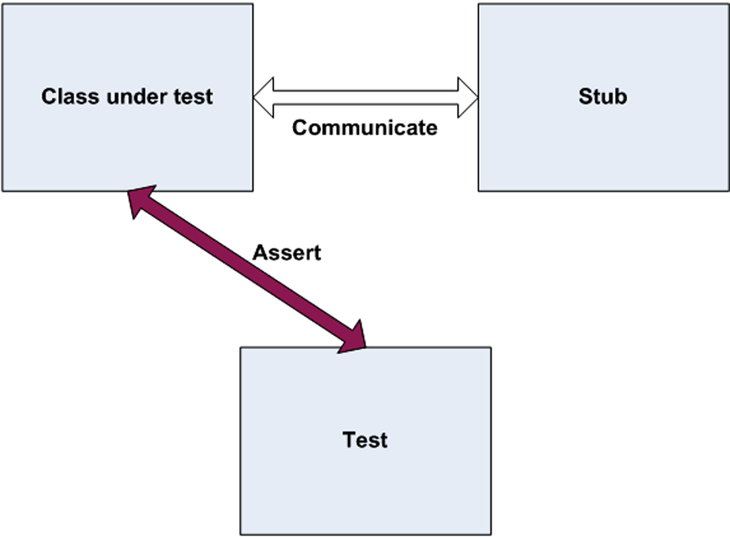
Figure 4.1 When using a stub, the assert is performed on the class under test. The stub aids in making sure the test runs smoothly.
A simple handwritten mock example 79
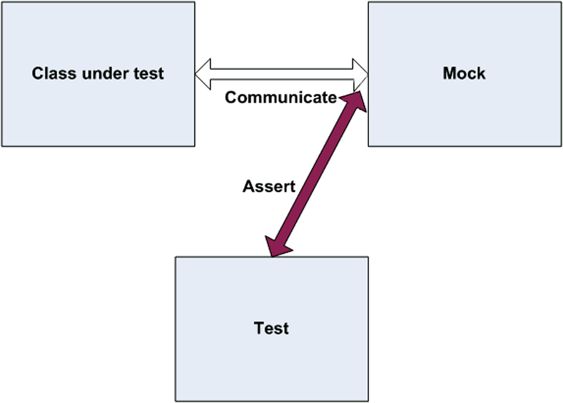
Figure 4.2 The class under test communicates with the mock object, and all communication is recorded in the mock. The test uses the mock object to verify that the test passes.
Again, the mock object is the object you use to see if the test failed or not. Let’s look at these ideas in action by building your own mock object.
4.3 A simple handwritten mock example
Creating and using a mock object is much like using a stub, except that a mock will do a little more than a stub: it will save the history of communication, which will later be verified in the form of expectations.
Let’s add a new requirement to your LogAnalyzer class. This time, it will have to interact with an external web service that will receive an error message whenever the LogAnalyzer encounters a filename whose length is too short.
Unfortunately, the web service you’d like to test against is still not fully functional, and even if it were, it would take too long to use it as part of your tests. Because of that, you’ll refactor your design and create a new interface for which you can later create a mock object. The interface will have the methods you’ll need to call on your web service and nothing else.
Figure 4.3 shows how your mock, implemented as FakeWebService, will fit into the test.
First off, you’ll extract a simple interface that you can use in your code under test, instead of talking directly to the web service:
public interface IWebService {
void LogError(string message); }
This interface will serve you when you want to create stubs as well as mocks. It will let you avoid an external dependency you have no control over.
Next, you’ll create the mock object itself. It may look like a stub, but it contains one extra bit of code that makes it a mock object:
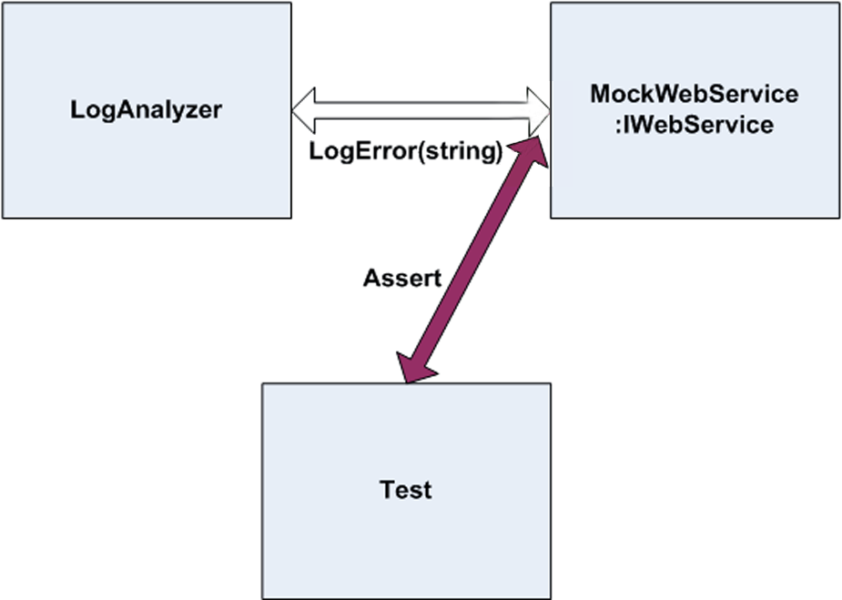
Figure 4.3 Your test will create a FakeWebService to record messages that LogAnalyzer will send. It will then assert against the FakeWebService.
public class FakeWebService:IWebService {
public string LastError; public void LogError(string message) {
LastError = message; }
}
This handwritten class implements an interface, as a stub does, but it saves some state for later, so that your test can then assert and verify that your mock was called correctly. It’s still not a mock object. It will only become one when you use it as one in your test.
NOTE According to xUnit Test Patterns: Refactoring Test Code by Gerard Meszaros, this would be called a Test Spy.
The following listing shows what the test might look like.
Listing 4.1 Testing the LogAnalyzer with a mock object
[Test] public void Analyze_TooShortFileName_CallsWebService() {
FakeWebService mockService = new FakeWebService(); LogAnalyzer log = new LogAnalyzer(mockService); string tooShortFileName="abc.ext";
log.Analyze(tooShortFileName); StringAssert.Contains("Filename too short:abc.ext",
mockService.LastError);
} public class LogAnalyzer {
private IWebService service;
public LogAnalyzer(IWebService service) {
this.service = service;
} public void Analyze(string fileName) {
if(fileName.Length<8) {
service.LogError("Filename too short:"
+ fileName); }
} }
Notice how the assert is performed against the mock object and not against the LogAnalyzer class? That’s because you’re testing the interaction between LogAnalyzer and the web service. You use the same DI techniques from chapter 3, but this time the mock object (used instead of a stub) also makes or breaks the test.
Also notice that you aren’t writing the tests directly inside the mock object code. There are a couple of reasons for this:
■ You’d like to be able to reuse the mock object in other test cases, with other asserts on the message.
■ If the assert were put inside the handwritten fake class, whoever reads the test would have no idea what you’re asserting. You’d be hiding essential information from the test code, which hinders the readability and maintainability of the test.
In your tests, you might find that you need to replace more than one object. We’ll look at combining mocks and stubs next. As you’ll see, it’s perfectly OK to have multiple stubs in a single test, but more than a single mock can mean trouble, because you’re testing more than one thing.
4.4 Using a mock and a stub together Let’s consider a more elaborate problem. This time LogAnalyzer not only needs to talk to a web service, but if the web service throws an error, LogAnalyzer has to log the error to a different external dependency, sending it by email to the web service administrator, as shown in figure 4.4.
Here’s the logic you need to test inside LogAnalyzer:
if(fileName.Length<8) {
try {
service.LogError("Filename too short:" + fileName);
} catch (Exception e) {
email.SendEmail("a","subject",e.Message); }
}
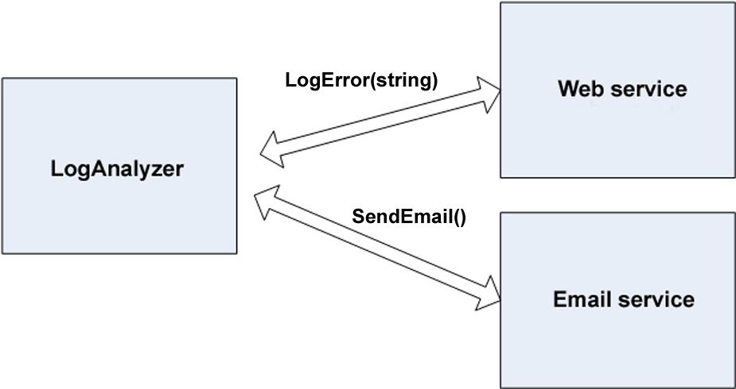
Figure 4.4 LogAnalyzer has two external dependencies: web service and email service. You need to test LogAnalyzer’s logic when calling them.
Notice that there’s logic here that only applies to interacting with external objects; there’s no value being returned or system state changed. How do you test that LogAnalyzer calls the email service correctly when the web service throws an exception?
Here are the questions you’re faced with:
■ How can you replace the web service?
■ How can you simulate an exception from the web service so that you can test the call to the email service?
■ How will you know that the email service was called correctly, or at all?
You can deal with the first two questions by using a stub for the web service. To solve the third problem, you can use a mock object for the email service.
In your test, you’ll have two fakes. One will be the email service mock, which you’ll use to verify that the correct parameters were sent to the email service. The other will be a stub that you’ll use to simulate an exception thrown from the web service. It’s a stub because you won’t be using the web service fake to verify the test result, only to make sure the test runs correctly. The email service is a mock because you’ll assert against it that it was called correctly. Figure 4.5 shows this visually.
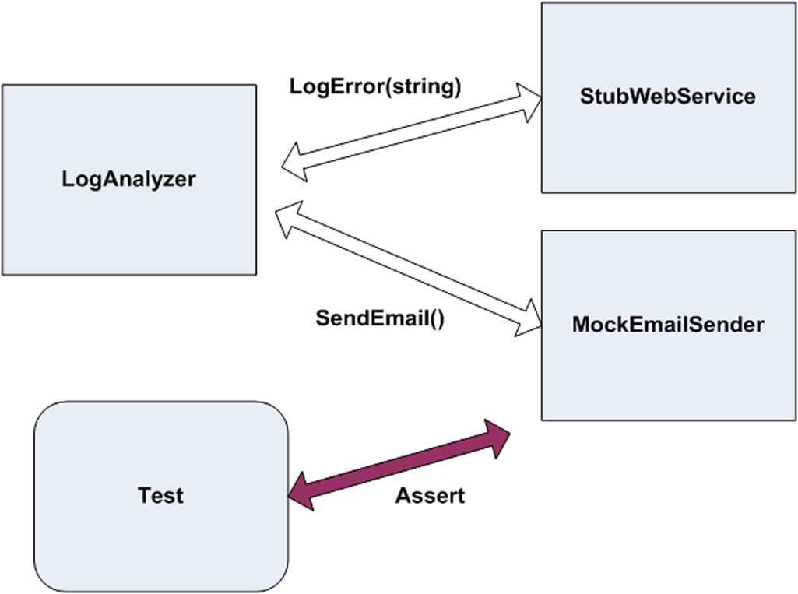
Figure 4.5 The web service will be stubbed out to simulate an exception; then the email sender will be mocked to see if it was called correctly. The whole test will be about how LogAnalyzer interacts with other objects.
The next listing shows the code that implements figure 4.5.
Listing 4.2 Testing the LogAnalyzer with a mock and a stub
public interface IEmailService {
void SendEmail(string to, string subject, string body); }
public class LogAnalyzer2 {
public LogAnalyzer2(IWebService service, IEmailService email) {
Email = email, Service = service;
} public IWebService Service {
get ; set ;
} public IEmailService Email {
get ; set ;
} public void Analyze(string fileName) {
if(fileName.Length<8) {
try {
Service.LogError("Filename too short:" + fileName);
} catch (Exception e) {
Email.SendEmail("someone@somewhere.com",
"can’t log",e.Message); }
} }
} [TestFixture]
public class LogAnalyzer2Tests {
[Test] public void Analyze_WebServiceThrows_SendsEmail() {
FakeWebService stubService = new FakeWebService(); stubService.ToThrow= new Exception("fake exception");
FakeEmailService mockEmail = new FakeEmailService(); LogAnalyzer2 log = new LogAnalyzer2(stubService,mockEmail);
string tooShortFileName="abc.ext"; log.Analyze(tooShortFileName);
StringAssert.Contains("someone@somewhere.com",mockEmail.To); StringAssert.Contains("fake exception",mockEmail.Body); StringAssert.Contains("can’t log",mockEmail.Subject);
}
} public class FakeWebService:IWebService {
public Exception ToThrow; public void LogError(string message) {
if(ToThrow!=null) {
throw ToThrow; }
}
} public class FakeEmailService:IEmailService {
public string To; public string Subject; public string Body;
public void SendEmail(string to, string subject, string body)
{
To = to; Subject = subject; Body = body;
} }
This code raises some interesting points:
■ Having several asserts can sometimes be a problem, because the first time an assert fails in your test, it actually throws a special type of exception that is caught by the test runner. That also means no other lines below the line that just failed will be executed. In this current case, it’s OK, because if one assert fails, you don’t care about the others because they’re all related to the same object, and they’re part of the same “feature.”
■ If you cared about the other asserts being run even if the first one failed, it would be a good indication to you to break this test into multiple tests. Alternatively, perhaps you could just create a new EmailInfo object and have the three attributes put on it, and then in your test create an expected version of this object with all correct properties. This would then be one assert.
One mock per test 85
Here’s how it would look:
class EmailInfo {
public string Body; public string To; public string Subject;
} [Test] public void Analyze_WebServiceThrows_SendsEmail() {
FakeWebService stubService = new FakeWebService(); stubService.ToThrow= new Exception("fake exception");
FakeEmailService mockEmail = new FakeEmailService(); LogAnalyzer2 log = new LogAnalyzer2(stubService,mockEmail); string tooShortFileName="abc.ext"; log.Analyze(tooShortFileName); EmailInfo expectedEmail = new EmailInfo {
Creating an expected object
Body = "fake exception", To = "someone@somewhere.com", Subject = "can’t log" }
Assert.AreEqual(expectedEmail, mockEmail.email);
} public class FakeEmailService:IEmailService {
public EmailInfo email = null; public void SendEmail(EmailInfo emailInfo) {
email = emailInfo; }
}
Asserting on all properties together with an expected object
If you have a reference to the actual object you expect as an end result, you might be able to use this:
Assert.AreSame(expectedEmail, mockEmail.email);
One important thing to consider is how many mocks and stubs you can use in a test.
4.5 One mock per test
In a test where you test only one thing (which is how I recommend you write tests), there should be no more than one mock object. All other fake objects will act as stubs. Having more than one mock per test usually means you’re testing more than one thing, and this can lead to complicated or brittle tests. (Look for more on this in chapter 8.)
If you follow this guideline, when you get to more complicated tests, you can always ask yourself, “Which one is my mock object?” Once you’ve identified it, you can leave the others as stubs and not have any assertions against them. (If you do find assertions against fakes that are clearly used as stubs, be wary. It’s the mark of overspecification.)
Overspecification is the act of specifying too many things that should happen that your test shouldn’t care about; for example, that stubs were called.
These extra specifications can make your test fail for all the wrong reasons: You change your production code to work differently, but even though the end result of your code is still good, your test will start screaming at you, “I’ve failed! You told me this method will be called and it wasn’t! Waaah!”
Then you’ll have to constantly change your tests to suit the internal implementation of your code—and then you’ll eventually get tired of doing that and ask yourself “Why am I doing this again?” and then you’ll start to delete those tests.
Game over. Specify only one of the three end results of a unit of work, or you’ll end up in hell,
many kittens will die, and angels will fall from the sky. I warned you.
Next, we’ll deal with a more complex scenario: using a stub to return a fake (mock or stub) that will be used by the application.
4.6 Fake chains: stubs that produce mocks or other stubs
One of the most common scamming techniques online these days follows a simple path. A fake email is sent to a massive number of recipients. The fake email is from a fake bank or online service claiming that the potential customer needs to have a balance checked or to change some account details on the online site.
All the links in the email point to a fake site. It looks exactly like the real thing, but its only purpose is to collect data from innocent customers of that business. In essence, you have a fake email that brings you to a fake website. This simple chain of lies is known as a phishing attack, and it’s more lucrative than you’d imagine.
Why does this chain of lies matter to you? Sometimes you want to have a fake object return (from a method or property) another fake component, producing your own little chain of stubs ending with a mock object deep in the bowels of the system, so that you can end up collecting some data during your test. You can create a stub that leads to a mock object that records data.
The design of many systems under test allows for complex object chains to be created. It’s not uncommon to find code like this:
IServiceFactory factory = GetServiceFactory(); IService service = factory.GetService();
Or like this:
String connstring = GlobalUtil.Configuration.DBConfiguration.ConnectionString;
The problems with handwritten mocks and stubs 87
Suppose you wanted to replace the connection string with one of your own during a test. You could set up the Configuration property of the GlobalUtil object to be a stub object. Then, you could set the DBConfiguration property on that object to be another stub object, and so on, finally returning a fake object that you’ll use as a mock, or a stub of the connection string.
It’s a powerful technique, but you need to ask yourself whether it might not be better to refactor your code to do something like this:
String connstring =GetConnectionString(); Protected virtual string GetConnectionString() {
Return GlobalUtil.Configuration.DBConfiguration.ConnectionString; }
You could then override the virtual method as described in chapter 3 (section 3.4.5). This can make the code easier to read and maintain, and it doesn’t require adding new interfaces to insert two more stubs into the system.
TIP Another good way to avoid call chains is to create special wrapper classes around the API that simplify using and testing it. For more about this method, see Working Effectively with Legacy Code by Michael Feathers. The pattern is called Adapt Parameter in that book.
Handwritten mocks and stubs have benefits, but they also have their share of problems. Let’s take a look at them.
4.7 The problems with handwritten mocks and stubs There are several issues that crop up when using manual mocks and stubs:
■ It takes time to write the mocks and stubs.
■ It’s difficult to write stubs and mocks for classes and interfaces that have many methods, properties, and events.
■ To save state for multiple calls of a mock method, you need to write a lot of boilerplate code within the handwritten fakes.
■ If you want to verify that all parameters on a method call were sent correctly by the caller, you’ll need to write multiple asserts. That’s a drag.
■ It’s hard to reuse mock and stub code for other tests. The basic stuff works, but once you get into more than two or three methods on the interface, everything starts getting tedious to maintain.
■ Is there a place for a fake that is both a mock and a stub? Very rarely. And I mean maybe once or twice in a project. I’ve only seen this a couple of times in the past couple of years myself.
A mock might double as a stub when you need to use a mock object that has a function that returns a value. To satisfy the compiler (oh, static languages, you mock us right back, don’t you?—pun intended), you’ll also need to return some fake value from the fake object, or the code won’t run (or even compile). In that case, your
mock is doubling as a stub, and I’d argue that if you’re returning a value back into the system from your mock object, you might be testing the wrong end result to begin with. I usually look for end results that are calls to a third-party system that don’t return anything. I look for void methods as much as possible. Sometimes the design of the system requires that the method that calls the third party also is a function (happens a lot in C++ to denote errors). That’s the one case where I’d allow something to be both a mock and a stub. Here’s an example:
public interface IComNotificationService {
int SendNotification(string info); }
In this code, if the unit of work’s end result is to call SendNotification, you’d use a mock to prove that method got called, but to satisfy the compiler you’d also have to tell it to return some value you don’t care about for this test.
These problems are inherent in manually written mocks and stubs. Fortunately, there are other ways to create mocks and stubs, as you’ll see in the next chapter.
4.8 Summary This chapter covered the distinction between stubs and mock objects. A mock object is like a stub, but it also helps you to assert something in your test. A stub can never fail your test and is strictly there to simulate various situations. This distinction is important because many of the mock object frameworks you’ll see in the next chapter have these definitions engrained in them, and you’ll need to know when to use which.
Combining stubs and mocks in the same test is a powerful technique, but you must take care to have no more than one mock in each test. The rest of the fake objects should be stubs that can’t break your test. Following this practice can lead to more maintainable tests that break less often when internal code changes.
Stubs that produce other stubs or mocks can be a powerful way to inject fake dependencies into code that uses other objects to get its data. It’s a great technique to use with factory classes and methods. You can even have stubs that return other stubs that return other stubs and so on, but at some point you’ll wonder if it’s all worth it. In that case, take a look at the techniques described in chapter 3 for injecting stubs into your design. (The next chapter discusses how some isolation frameworks allow you to create full fake call chains in one line of code—recursive fakes to the rescue!)
One of the most common problems encountered by people who write tests is using mocks too much in their tests (overspecification). You should rarely verify calls to fake objects that are used both as mocks and as stubs in the same test. You can have multiple stubs in a test, because a class may have multiple dependencies. Just make sure your test remains readable. Structure your code nicely so the reader of the test understands what’s going on.
You may find that writing manual mocks and stubs is inconvenient for large interfaces or for complicated interaction-testing scenarios. It is, and there are better ways
Summary 89
to do this, as you’ll see in the next chapter. But often you’ll find that handwritten mocks and stubs still beat frameworks for simplicity and readability. The art lies in when you use which tool.
The next chapter deals with isolation (mocking) frameworks, which allow you to automatically create, at runtime, stubs or mock objects and use them with at least the same power as manual mocks and stubs, if not much, much more.
This chapter covers
■ Understanding isolation frameworks
■ Using NSubstitute to create stubs and mocks
■ Exploring advanced use cases for mocks and stubs
■ Avoiding common misuses of isolation frameworks
In the previous chapter, we looked at writing mocks and stubs manually and saw the challenges involved. In this chapter, we’ll look at some elegant solutions for these problems in the form of an isolation framework—a reusable library that can create and configure fake objects at runtime. These objects are referred to as dynamic stubs and dynamic mocks.
We’ll begin with an overview of isolation frameworks (or mocking frameworksthe word mock is too overloaded already) and what they can do. I call them isolation frameworks because they allow you to isolate the unit of work from its dependencies. We’ll take a closer look at one specific framework: NSubstitute. You’ll see how you can use it to test various things and to create stubs, mocks, and other interesting things.
90
Why use isolation frameworks? 91
But NSubstitute (NSub for short) isn’t the point here. While using NSub, you’ll see the specific values that its API promotes in your tests (readability, maintainability, robust long-lasting tests, and more) and find out what makes an isolation framework good and, alternatively, what can make it a drawback for your tests.
For that reason, later in this chapter, I’ll contrast NSub with other frameworks available to .NET developers, compare their API decisions and how they affect test readability, maintainability, and robustness, and finish with a list of things you should watch out for when using such frameworks in your tests.
Let’s start at the beginning: what are isolation frameworks?
5.1 Why use isolation frameworks? I’ll start with a basic definition that may sound a bit bland, but it needs to be generic in order to include the various isolation frameworks out there.
DEFINITION An isolation framework is a set of programmable APIs that makes creating fake objects much simpler, faster, and shorter than hand-coding them.
Isolation frameworks, when designed well, can save the developer from the need to write repetitive code to assert or simulate object interactions, and if they’re designed very well, they can make tests last many years without making the developer come back to fix them on every little production code change.
Isolation frameworks exist for most languages that have a unit testing framework associated with them. For example, C++ has mockpp and other frameworks, and Java has jMock and PowerMock, among others. .NET has several well-known ones including Moq, FakeItEasy, NSubstitute, Typemock Isolator, and JustMock. There are also several other isolation frameworks that I don’t use or teach anymore because they’re either too old or too cumbersome, or they lack many features that the new frameworks have introduced. These include Rhino Mocks, NMock, EasyMock, NUnit.Mocks, and Moles. In Visual Studio 2012, Moles is included and named Microsoft Fakes—and I’d still stay away from it. More on these other tools in the appendix.
Using isolation frameworks instead of writing mocks and stubs manually, as in previous chapters, has several advantages that make developing more elegant and complex tests easier, faster, and less error prone.
The best way to understand the value of an isolation framework is to see a problem and its solution. One problem that might occur when using handwritten mocks and stubs is repetitive code.
Assume you have an interface a little more complicated than the ones shown so far:
public interface IComplicatedInterface {
void Method1(string a, string b, bool c, int x, object o); void Method2(string b, bool c, int x, object o); void Method3(bool c, int x, object o);
}
Creating a handwritten stub or mock for this interface may be time consuming, because you’d need to remember the parameters on a per-method basis, as this listing shows.
Listing 5.1 Implementing complicated interfaces with handwritten stubs
class MytestableComplicatedInterface:IComplicatedInterface {
public string meth1_a; public string meth1_b,meth2_b; public bool meth1_c,meth2_c,meth3_c; public int meth1_x,meth2_x,meth3_x; public int meth1_0,meth2_0,meth3_0;
public void Method1(string a, string b, bool c, int x, object o)
{
meth1_a = a; meth1_b = b; meth1_c = c; meth1_x = x;
meth1_0 = 0;
} public void Method2(string b, bool c, int x, object o) {
meth2_b = b; meth2_c = c; meth2_x = x;
meth2_0 = 0;
} public void Method3(bool c, int x, object o) {
meth3_c = c; meth3_x = x; meth3_0 = 0;
} }
Not only is this handwritten fake time consuming and cumbersome to write, what happens if you want to test that a method is called many times? (Remember in chapter 4, I introduced the word fake as anything that looks like a real thing but is not. Based on how it is used, it will be a mock or a stub.) Or what if you want it to return a specific value based on the parameters it receives or to remember all the values for all the method calls on the same method (the parameter history)? The code gets ugly fast.
Using an isolation framework, the code for doing this becomes trivial, readable, and much shorter, as you’ll see when you create your first dynamic mock object.
5.2 Dynamically creating a fake object Let’s define dynamic fake objects and how they’re different from regular, handwritten fakes.
DEFINITION A dynamic fake object is any stub or mock that’s created at runtime without needing to use a handwritten (hardcoded) implementation of that object.
Using dynamic fakes removes the need to hand-code classes that implement interfaces or derive from other classes, because the needed classes can be generated for the developer at runtime, in memory, and with a few simple lines of code.
Next, we’ll look at NSubstitute and see how it can help you overcome some of the problems just discussed.
5.2.1 Introducing NSubstitute into your tests In this chapter, I’ll use NSubstitute (http://nsubstitute.github.com/), an isolation framework that’s open source, freely downloadable, and installable through NuGet (available at http://nuget.org). I had a hard time deciding whether to use NSubstitute or FakeItEasy. They’re both great, so you should look at both of them before choosing which one to go with. You’ll see a comparison of frameworks in the next chapter and in the appendix, but I chose NSubstitute because it has better documentation and supports most of the values a good isolation framework should support. These values are listed in the next chapter.
In the interest of brevity (and ease of typing), I’ll refer to NSubstitute from now on as NSub. NSub is simple and quick to use, with little overhead in learning how to use the API. I’ll walk you through a few examples, and you can see how using a framework simplifies your life as a developer (sometimes). In the next chapter I go even deeper into some “meta” subjects concerning isolation frameworks, understanding how they work and figuring out why some frameworks can do things others can’t. But first, back to work.
To start experimenting, create a class library that will act as your unit tests project, and add a reference to NSub by installing it via NuGet (choose Tools > Package Manager > Package Manager console > Install-Package NSubstitute).
NSub supports the arrange-act-assert model, which is consistent with the way you’ve been writing and asserting tests so far. The idea is to create the fakes and configure them in the arrange part of the test, act against the product under test, and verify that a fake was called in the assert part at the end.
NSub has a class called Substitute, which you’ll use to generate fakes at runtime. This class has one method with a generic and nongeneric flavor, called For(type), and it’s the main way to introduce a fake object into your application when using NSub. You call this method with the type that you’d like to create a fake instance of.
This method then dynamically creates and returns a fake object that adheres to that type or interface at runtime. You don’t need to implement that new object in real code.
Because NSub is a constrained framework, it works best with interfaces. For real classes, it will only work with nonsealed classes, and for those, it will only be able to fake virtual methods.
5.2.2 Replacing a handwritten fake object with a dynamic one Let’s look at a handwritten fake object used to check whether a call to the log was performed correctly. The following listing shows the test class and the handwritten fake you’d create if you weren’t using an isolation framework.
Listing 5.2 Asserting against a handwritten fake object
Listing 5.3 Faking an object using NSub
[TestFixture] class LogAnalyzerTests {
[Test] public void Analyze_TooShortFileName_CallLogger() {
Creating the fake
FakeLogger logger = new FakeLogger(); LogAnalyzer analyzer = new LogAnalyzer(logger);
analyzer.MinNameLength= 6; analyzer.Analyze("a.txt");
StringAssert.Contains("too short",logger.LastError); }
Using the fake as a mock object by asserting on it
} class FakeLogger: ILogger {
public string LastError; public void LogError(string message) {
LastError = message; }
}
The parts of the code in bold are the parts that will change when you start using dynamic mocks and stubs.
You’ll now create a dynamic mock object and eventually replace the earlier test. The next listing shows how simple it is to fake ILogger and verify that it was called with a string.
[Test] public void Analyze_TooShortFileName_CallLogger() {
ILogger logger = Substitute.For<ILogger>(); LogAnalyzer analyzer = new LogAnalyzer(logger);
Creates a mock object that you’ll assert against at the end of the test
analyzer.MinNameLength = 6; analyzer.Analyze("a.txt");
logger.Received().LogError("Filename too short: a.txt"); }
Sets expectation
c usingNSub’sAPI
A couple of lines rid you of the need to use a handwritten stub or mock, because they generate one dynamically B. The fake ILogger object instance is a dynamically generated object that implements the ILogger interface, but there’s no implementation inside any of the ILogger methods.
From this moment until the last line of the test, all calls on that fake object are automatically recorded, or saved for later use, as in the last line of the test c.
In that last line, instead of a traditional assert call, you use a special API—an extension method that’s provided by NSub’s namespace. ILogger doesn’t have any such method on its interface called Received(). This method is your way of asserting that a method call was invoked on your fake object (thus making it a mock object, conceptually).
The way Received() works seems almost like magic. It returns the same type of the object it was invoked on, but it really is used to state what will be asserted on.
If you’d just written in the last line of the test
logger.LogError("Filename too short: a.txt");
your fake object would treat that method call as one that was done during a production code run and would simply not do anything unless it was configured to do a special action for the method named LogError.
By calling Received() just before LogError(), you’re letting NSub know that you really are asking its fake object whether or not that method got called. If it wasn’t called, you expect an exception to be thrown from the last line of this test. As a readability hint, you’re telling the reader of the test a fact: “Something received a method call, or this test would have failed.”
If the LogError method wasn’t called, you can expect an error with a message that looks close to the following in your failed test log:
NSubstitute.Exceptions.ReceivedCallsException : Expected to receive a call matching:
LogError("Filename too short: a.txt") Actually received no matching calls.
Arrange-act-assert
Notice how the way you use the isolation framework matches nicely with the structure of arrange-act-assert. You start by arranging a fake object, you act on the thing you’re testing, and then you assert on something at the end of the test.
It wasn’t always this easy, though.
In the olden days (around 2006) most of the open source isolation frameworks didn’t support the idea of arrange-act-assert and instead used a concept called record-replay.
Record-replay was a nasty mechanism where you’d have to tell the isolation API that its fake object was in record mode, and then you’d have to call the methods on that object as you expected them to be called from production code.
(continued)
Then you’d have to tell the isolation API to switch into replay mode, and only then could you send your fake object into the heart of your production code.
An example can be seen on the Google testing blog: http://googletesting.blogspot.no/ 2009/01/tott-use-easymock.html.
Asserts, when using these tests, usually involved a simple call to a verify() or verifyAll() method on the isolation API, with the poor test reader having to go back and figure out what was really expected.
Compared to today’s abilities to write tests that use the far more readable arrangeact-assert model, this tragedy cost many developers millions of combined hours in painstaking test reading, to figure out exactly where the test failed.
If you have the first edition of this book, you can see an example of record-replay when I showed Rhino Mocks in this chapter. Ah, good times! Now I stay away from Rhino Mocks, both because its API isn’t as good as the new frameworks, and because its maintenance is in question by Oren Eini (http://Ayende.com). It seems Oren, who is known for being a supercoder in many ways, got a life and got married, and so he finally had to start choosing his battles. Rhino Mocks seems to be one of the battles he chose not to fight.
Now that you’ve seen how to use fakes as mocks, let’s see how to use them as stubs, which simulate values in the system under test.
5.3 Simulating fake values
The next listing shows how you can return a value from a fake object when the interface method has a nonvoid return value. For this example, you’ll add an IFileNameRules interface into the system (see NSubBasics.cs in the book’s source code repository).
Listing 5.4 Returning a value from a fake object
[Test] public void Returns_ByDefault_WorksForHardCodedArgument() {
IFileNameRules fakeRules = Substitute.For<IFileNameRules>(); fakeRules.IsValidLogFileName("strict.txt").Returns(true); Assert.IsTrue(fakeRules.IsValidLogFileName("strict.txt"));
}
What if you didn’t care about the argument? It would certainly be a better maintainability tactic if you always returned a fake value no matter what, because then you don’t care about internal production code changes, and your test would still pass, even if production code calls the method multiple times. It would also help readability, because currently the reader of the test doesn’t know if the name of the file is
important. If you can improve their day by removing required information from their reading, they’ll have an easier time with your code.
So let’s use argument matchers:
[Test] public void Returns_ByDefault_WorksForHardCodedArgument() {
IFileNameRules fakeRules = Substitute.For<IFileNameRules>(); fakeRules.IsValidLogFileName(Arg.Any<String>())
.Returns(true); Assert.IsTrue(fakeRules.IsValidLogFileName("anything.txt"));
}
Ignore the argument value
Notice how you’re using the Arg class to indicate that you don’t care about the input that’s required to make this fake value return. This is called an argument matcher, and it’s widely used with isolation frameworks to control how arguments are treated, one by one.
What if you wanted to simulate an exception? Here’s how to do that with NSub:
[Test] public void Returns_ArgAny_Throws() {
IFileNameRules fakeRules = Substitute.For<IFileNameRules>(); fakeRules.When(x =>
x.IsValidLogFileName(Arg.Any<string>()))
.Do(context =>
{ throw new Exception("fake exception"); }); Assert.Throws<Exception>(() =>
fakeRules.IsValidLogFileName("anything")); }
A lambda expression is needed here
Notice how you use Assert.Throws to check that an exception is actually thrown.
I’m not crazy about the syntax hoops NSub is forcing you to use here. (This would be easier to do in FakeItEasy, in fact, but NSub has more docs, so I chose to use it here.)
Notice that you have to use a lambda expression here. In the When method call, the x argument signifies the fake object you’re changing the behavior of. In the Do call, notice the CallInfo context argument. At runtime context will hold argument values and allow you to do wonderful things, but you don’t need it for this example.
Now that you know how to simulate things, let’s make things a bit more realistic and see what we come up with.
5.3.1 A mock, a stub, and a priest walk into a test Let’s combine two types of fake objects in the same scenario. One will be used as a stub and the other as a mock.
You’ll use Analyzer2 in the book source code under chapter 5. It’s a similar example to listing 4.2 in chapter 4, where I talked about LogAnalyzer using a MailSender
FakeLogger |
LogError(error)
LogAnalyzer2 |
FakeException
FakeWebService |
Write(msg)
Figure 5.1 The logger will be stubbed out to simulate an exception, and a fake web service will be used as a mock to see if it was called correctly. The whole test will be about how LogAnalyzer2 interacts with other objects.
class and a WebService class, but this time the requirement is that if the logger throws an exception, the web service is notified. This is shown in figure 5.1.
You want to make sure that if the logger throws an exception, LogAnalyzer2 will notify WebService of the problem.
The next listing shows what the logic looks like with all the tests passing.
Listing 5.5 The method under test and a test that uses handwritten mocks and stubs
[Test] public void Analyze_LoggerThrows_CallsWebService() {
FakeWebService mockWebService = new FakeWebService(); FakeLogger2 stubLogger = new FakeLogger2(); stubLogger.WillThrow = new Exception("fake exception");
The test
var analyzer2 = new LogAnalyzer2(stubLogger, mockWebService); analyzer2.MinNameLength = 8;
string tooShortFileName="abc.ext"; analyzer2.Analyze(tooShortFileName);
Assert.That(mockWebService.MessageToWebService,
Is.StringContaining("fake exception")); }
} public class FakeWebService:IWebService {
The fake web service you’ll use as a mock
public string MessageToWebService; public void Write(string message) {
MessageToWebService = message; }
} public class FakeLogger2:ILogger {
The fake logger you’ll use as a stub
public Exception WillThrow = null; public string LoggerGotMessage = null;
public void LogError(string message) {
LoggerGotMessage = message; if (WillThrow != null) {
throw WillThrow; }
}
} //---------- PRODUCTION CODE public class LogAnalyzer2 {
private ILogger _logger; private IWebService _webService;
The class under test
public LogAnalyzer2(ILogger logger,IWebService webService) {
_logger = logger; _webService = webService;
} public int MinNameLength { get; set; } public void Analyze(string filename) {
if (filename.Length<MinNameLength) {
try {
_logger.LogError( string.Format("Filename too short: {0}",filename));
} catch (Exception e) {
_webService.Write("Error From Logger: " + e); }
} }
} public interface IWebService {
void Write(string message); }
The next listing shows what the test might look like if you’d used NSubstitute.
Listing 5.6 Converting the previous test into one that uses NSubstitute
[Test] public void Analyze_LoggerThrows_CallsWebService() {
var mockWebService = Substitute.For<IWebService>(); var stubLogger = Substitute.For<ILogger>(); stubLogger.When(
Simulates exception on any input
logger => logger.LogError(Arg.Any<string>()))
.Do(info => { throw new Exception("fake exception");}); var analyzer =
new LogAnalyzer2(stubLogger, mockWebService);
analyzer.MinNameLength = 10; analyzer.Analyze("Short.txt");
mockWebService.Received()
.Write(Arg.Is<string>(s => s.Contains("fake exception"))); }
Checks that the mock web service was called with a string containing “fake exception”
The nice thing about this test is that it requires no handwritten fakes, but notice how it’s already starting to take a toll on the readability for the test reader. Those lambdas aren’t very friendly, to my taste, but they’re one of the small evils you need to learn to live with in C#, because those are what allow you to avoid using strings for method names. That makes your tests easier to refactor if a method name changes later on.
Notice that argument-matching constraints can be used both in the simulation part, where you configure the stub, and during the assert part, where you check to see if the mock was called.
There several possible argument-matching constraints in NSubstitute, and the website has a nice overview of them. Because this book isn’t meant as a guide to NSub (that’s why God created online documentation, after all), if you’re interested in finding out more about this API, go to http://nsubstitute.github.com/help/argument-matchers/.
COMPARING OBJECTS AND PROPERTIES AGAINST EACH OTHER
What happens when you expect an object with certain properties to be sent as an argument? For example, what if you’d sent in an ErrorInfo object with severity and message properties, as a call to the webservice.Write?
[Test] public void Analyze_LoggerThrows_CallsWebServiceWithNSubObject() {
var mockWebService = Substitute.For<IWebService>(); var stubLogger = Substitute.For<ILogger>(); stubLogger.When(
logger => logger.LogError(Arg.Any<string>()))
.Do(info => { throw new Exception("fake exception");}); var analyzer =
new LogAnalyzer3(stubLogger, mockWebService);
analyzer.MinNameLength = 10; analyzer.Analyze("Short.txt");
mockWebService.Received()
.Write(Arg.Is<ErrorInfo>(info => info.Severity == 1000
&& info.Message.Contains("fake exception"))); }
Strongly typed argument matcher to the object type you expect
Simple C# “and” to create a more complex expectation on your object
Notice how you can simply use plain-vanilla C# to create compound matchers on the same argument. You want the info being sent in as an argument to have a specific severity and a specific message.
Also notice how this impacts readability. As a general rule of thumb, I notice that the more I use isolation frameworks, the less readable the test code turns out, but sometimes it’s acceptable enough to use them. This would be a borderline case. For example, if I reach a case where I have more than a single lambda expression in an assert, I question whether using a handwritten fake would have been more readable.
But if you’re going to test things in the simplest way, you could compare two objects and simply test the readability. You could create and compare an expected object with all the expected properties against the actual object being sent in, as shown here.
Listing 5.7 Comparing full objects
[Test] public void Analyze_LoggerThrows_CallsWebServiceWithNSubObjectCompare() {
var mockWebService = Substitute.For<IWebService>(); var stubLogger = Substitute.For<ILogger>(); stubLogger.When(
logger => logger.LogError(Arg.Any<string>()))
.Do(info => { throw new Exception("fake exception");}); var analyzer =
new LogAnalyzer3(stubLogger, mockWebService);
analyzer.MinNameLength = 10; analyzer.Analyze("Short.txt");
var expected = new ErrorInfo(1000, "fake exception"); mockWebService.Received().Write(expected);
}
Create the object you expect to receive
Assert that you got exactly the same object (essentially assert.equals())
Testing full objects only works when the following are true:
■ It’s easy to create the object with the expected properties.
■ You want to test all the properties of the object in question.
■ You know the exact values of each property, fully.
■ The Equals() method is implemented correctly on the two objects being compared. (It’s usually bad practice to rely on the out-of-the-box implementation of object.Equals(). If Equals() is not implemented, then this test will always fail, because by default Equals() will return false.)
Also, a note about robustness of the test: Because you won’t be able to use argument matchers to ask if a string contains some value in one of the properties when using this technique, your tests are just a little less robust for future changes.
Also, every time a string in an expected property changes in the future, even if it is just one extra whitespace at the beginning or end, your test will fail and you’ll have to change it to match the new string. The art here is deciding how much readability you want to give up for robustness over time. For me, perhaps not comparing
a full object but testing a few properties on it with argument matchers could be borderline acceptable, for the added robustness over time. I hate changing tests for the wrong reasons.
5.4 Testing for event-related activities Events are a two-way street, and you can test them in two different directions:
■ Testing that someone is listening to an event
■ Testing that someone is triggering an event
5.4.1 Testing an event listener
The first scenario we’ll tackle is one that I see many developers implement poorly as a test: checking if an object registered to an event of another object.
Many developers choose the less-maintainable and more-overspecified way of checking whether an object’s internal state registered to receive an event from another object.
This implementation isn’t something I’d recommend doing in real tests. Registering to an event is an internal private code behavior. It doesn’t do anything as an end result, except change state in the system so it behaves differently.
It’s better to implement this check by seeing the listener object doing something in response to the event being raised. If the listener wasn’t registered to the event, then no visible public behavior will be taken, as shown in the following listing.
Listing 5.8 Event-related code and how to trigger it
class Presenter {
private readonly IView _view; public Presenter(IView view) {
_view = view; this._view.Loaded += OnLoaded;
} private void OnLoaded() {
_view.Render("Hello World"); }
} public interface IView {
event Action Loaded; void Render(string text);
} //------ TESTS [TestFixture] public class EventRelatedTests
{
}
[Test] public void ctor_WhenViewIsLoaded_CallsViewRender() {
var mockView = Substitute.For<IView>(); Presenter p = new Presenter(mockView); mockView.Loaded += Raise.Event<Action>(); mockView.Received()
Trigger the event with NSubstitute
.Render(Arg.Is<string>(s => s.Contains("Hello World"))); }
Check that the view was called
Notice the following:
■ The mock is also a stub (you simulate an event).
■ To trigger an event, you have to awkwardly register to it in the test. This is only to satisfy the compiler, because event-related properties are treated differently and are heavily guarded by the compiler. Events can only be directly invoked by their declaring class/struct.
Here’s another scenario, where you have two dependencies: a logger and a view. The following listing shows a test that makes sure Presenter writes to a log upon getting an error event from your stub.
Listing 5.9 Simulating an event along with a separate mock
[Test] public void ctor_WhenViewhasError_CallsLogger() {
var stubView = Substitute.For<IView>(); var mockLogger = Substitute.For<ILogger>();
Simulate
b theerror
Presenter p = new Presenter(stubView, mockLogger); stubView.ErrorOccured +=
Raise.Event<Action<string>>("fake error"); mockLogger.Received()
Uses mock to check log call
.LogError(Arg.Is<string>(s => s.Contains("fake error"))); }
Notice that you use a stub B to trigger the event and a mock c to check that the service was written to.
Now, let’s take a look at the opposite end of the testing scenario. Instead of testing the listener, you’d like to make sure that the event source triggers the event at the right time. The next section shows how you can do that.
5.4.2 Testing whether an event was triggered
A simple way to test the event is by manually registering to it inside the test method using an anonymous delegate. The next listing shows a simple example.
Listing 5.10 Using an anonymous delegate to register to an event
[Test] public void EventFiringManual() {
bool loadFired = false; SomeView view = new SomeView(); view.Load+=delegate
{
loadFired = true;
}; view.DoSomethingThatEventuallyFiresThisEvent(); Assert.IsTrue(loadFired);
}
The delegate simply records whether or not the event was fired. I chose to use a delegate and not a lambda because I think it’s more readable. You could also have parameters in the delegate to record the values, and they could later be asserted as well.
Next, we’ll take a look at isolation frameworks for .NET.
5.5 Current isolation frameworks for .NET NSub is certainly not the only isolation framework around. In an informal poll held in August 2012, I asked my blog readers, “Which isolation framework do you use?” See figure 5.2 for the results.
Moq, which in the previous edition of this book was a newcomer in a poll I did then, is now the leader, with Rhino Mocks trailing a bit and losing ground (basically because it’s no longer being actively developed). Also changed from the first edition, note that there are many contenders—double the amount, actually. This tells you something about the maturity of the community in terms of recognizing the need for testing and isolation, and I think this is great to see.
FakeItEasy, which may have not even been a blink in its creator’s eyes when the first edition of this book came out, is a strong contender for the things that I like in NSubstitute, and I highly recommend that you try it. Those areas (values, really) are listed in the next chapter, when we dive even deeper into the makings of isolation frameworks.
I personally don’t use Moq, because of bad error messages and “mock” is used too much in the API. It is confusing since you use mocks also to create stubs.
It’s usually a good idea to pick one and stick with it as much as possible, for the sake of readability and to lower the learning curve for team members.
In the book’s appendix, I cover each of these frameworks in more depth and explain why I like or dislike it. Go there for a reference list on these tools.
Let’s recap the advantages of using isolation frameworks over handwritten mocks. Then we’ll discuss things to watch for when using isolation frameworks.
Moq |
398 |
Rhino Mocks |
202 |
None; just handwritten fakes, mocks, and stubs |
61 |
FakeltEasy |
51 |
NSubstitute |
43 |
Typemock Isolator |
32 |
None; not sure what those things are anyway |
21 |
Moles |
20 |
MS fakes/moles (built into VS 11) |
20 |
JustMock |
12 |
Other |
10 |
Figure 5.2 Isolation framework usage among my blog readers
Why method strings are bad inside tests
In many frameworks outside the .NET world, it’s common to use strings to describe which methods you’re about to change the behavior of. Why is this not great?
If you were to change the name of a method in production, any tests using the method in a string would still compile and would only break at runtime, throwing an exception indicating that a method could not be found.
With strongly typed method names (thanks to lambda expressions and delegates), changing the name of a method wouldn’t be a problem, because the method is used directly in the test. Any method changes would keep the test from compiling, and you’d know immediately that there was a problem with the test.
With automated refactoring tools like those in Visual Studio, renaming a method is easier, but most refactorings will still ignore strings in the source code. (ReSharper for .NET is an exception. It also corrects strings, but that’s only a partial solution that may prove problematic in some scenarios.)
5.6 Advantages and traps of isolation frameworks From what we’ve covered in this chapter, you can see distinct advantages to using isolation frameworks:
■ Easier parameter verification—Using handwritten mocks to test that a method was given the correct parameter values can be a tedious process, requiring time and patience. Most isolation frameworks make checking the values of parameters passed into methods a trivial process even if there are many parameters.
■ Easier verification of multiple method calls—With manually written mocks, it can be difficult to check that multiple method calls on the same method were made correctly with each having appropriate different parameter values. As you’ll see later, this is a trivial process with isolation frameworks.
■ Easier fakes creation—Isolation frameworks can be used for creating both mocks and stubs more easily.
5.6.1 Traps to avoid when using isolation frameworks Although there are many advantages to using isolation frameworks, there are possible dangers, such as overusing an isolation framework when a manual mock object would suffice, making tests unreadable because of overusing mocks in a test, or not separating tests well enough.
Here’s a list of things to watch out for:
■ Unreadable test code
■ Verifying the wrong things
■ Having more than one mock per test
■ Overspecifying the tests
Let’s look at each of these in depth.
5.6.2 Unreadable test code Using a mock in a test already makes the test a little less readable, but still readable enough that an outsider can look at it and understand what’s going on. Having many mocks, or many expectations, in a single test can ruin the readability of the test so it’s hard to maintain or even to understand what’s being tested.
If you find that your test becomes unreadable or hard to follow, consider removing some mocks or some mock expectations or separating the test into several smaller tests that are more readable.
5.6.3 Verifying the wrong things Mock objects allow you to verify that methods were called on your interfaces, but that doesn’t necessarily mean that you’re testing the right thing. Testing that an object subscribed to an event doesn’t tell you anything about the functionality of that object. Testing that when the event is raised something meaningful happens is a better way to test that object.
Summary 107
5.6.4 Having more than one mock per test It’s considered good practice to test only one concern per test. Testing more than one concern can lead to confusion and problems maintaining the test. Having two mocks in a test is the same as testing several end results of the same unit of work. If you can’t name your test because it does too many things, it’s time to separate it into more than one test.
5.6.5 Overspecifying the tests Avoid mock objects if you can. Tests will always be more readable and maintainable when you don’t assert that an object was called. Yes, there are times when you can use only mock objects, but that shouldn’t happen often.
If more than 5% of your tests have mock objects (not stubs), you might be overspecifying things, instead of testing state changes or value results. In those 5% that use mock objects, you can still overdo it.
If your test has too many expectations (x.received().X() and X.received().Y() and so on), it may become very fragile, breaking on the slightest of production code changes, even though the overall functionality still works.
Testing interactions is a double-edged sword: test it too much, and you start to lose sight of the big picture—the overall functionality; test it too little, and you’ll miss the important interactions between objects.
Here are some ways to balance this effect:
■ Use nonstrict mocks when you can (strict and nonstrict mocks are explained in the next chapter). The test will break less often because of unexpected method calls. This helps when the private methods in the production code keep changing.
■ Use stubs instead of mocks when you can. If you have more than 5% of your tests with mock objects, you might be overdoing it. Stubs can be everywhere. Mocks, not so much. You only need to test one scenario at a time. The more mocks you have, the more verifications will take place at the end of the test, but usually only one will be the important one. The rest will be noise against the current test scenario.
■ Avoid using stubs as mocks if humanly possible. Use a stub only for faking return values into the program under test or to throw exceptions. Don’t verify that methods were called on stubs. Use a mock only for verifying that some method was called on it, but don’t use it to return values into your program under test. Most of the time, you can avoid a mock that’s also a stub but not always (as you saw earlier in this chapter, regarding events).
5.7 Summary Isolation frameworks are pretty cool, and you should learn to use them at will. But it’s important to lean toward return-value or state-based testing (as opposed to interaction testing) whenever you can, so that your tests assume as little as possible about internal implementation details. Mocks should be used only when there’s no other
way to test the implementation, because they eventually lead to tests that are harder to maintain if you’re not careful.
If more than 5% of your tests have mock objects (not stubs), you might be overspecifying things.
Learn how to use the advanced features of an isolation framework such as NSub, and you can pretty much make sure that anything happens or doesn’t happen in your tests. All you need is for your code to be testable.
You can also shoot yourself in the foot by creating overspecified tests that aren’t readable or will likely break. The art lies in knowing when to use dynamic versus handwritten mocks. My guideline is that when the code using the isolation framework starts to look ugly, it’s a sign that you may want to simplify things. Use a handwritten mock, or test a different result that proves your point but is easier to test.
When all else fails and your code is hard to test, you have three choices: use a super framework like Typemock Isolator (explained in the next chapter), change the design, or quit your job.
Isolation frameworks can help make your testing life much easier and your tests more readable and maintainable. But it’s also important to know when they might hinder your development more than they help. In legacy situations, for example, you might want to consider using a different framework based on its abilities. It’s all about picking the right tool for the job, so be sure to look at the big picture when considering how to approach a specific problem in testing.
In the next chapter, we’ll dig deeper into isolation frameworks and see how their design and underlying implementation affect their abilities.
This chapter covers
■ Working with constrained versus unconstrained frameworks
■ Understanding how unconstrained profiler-based frameworks work
■ Defining the values of a good isolation framework
In the previous chapter, we used NSubstitute to create fakes. In this chapter, we’ll step back to look at the bigger picture of isolation frameworks both in .NET and outside it. The world of isolation frameworks is vast, and there are many different things to consider when you choose one.
Let’s start with a simple question: Why do some frameworks have more abilities than others? For example, some frameworks are able to fake static methods, and some aren’t. Some are even able to fake objects that haven’t yet been created, and others are blissfully unaware of such abilities. What gives?
109
6.1 Constrained and unconstrained frameworks Isolation frameworks in .NET (and in Java, C++, and other static languages) fall into two basic groups based on their abilities to do specific things in the programming language. I call these two archetypes unconstrained and constrained.
6.1.1 Constrained frameworks Constrained frameworks in .NET include Rhino Mocks, Moq, NMock, EasyMock, NSubstitute, and FakeItEasy. In Java, jMock and EasyMock are examples of constrained frameworks.
I call them constrained because there are some things these frameworks aren’t able to fake. What they can or can’t fake changes depending on the platform they run on and how they use that platform.
In .NET, constrained frameworks are unable to fake static methods, nonvirtual methods, nonpublic methods, and more.
What’s the reason for that? Constrained isolation frameworks work in the same way that you use handwritten fakes: they generate code and compile it at runtime, so they’re constrained by the compiler and intermediate language (IL) abilities. In Java, the compiler and the resulting bytecode are the equivalent. In C++, constrained frameworks are constrained by the C++ language and its abilities.
Constrained frameworks usually work by generating code at runtime that inherits and overrides interfaces or base classes, just as you did in the previous chapter, only you did it before running the code. That means that these isolation frameworks also have the same requirements for compiling: the code you want to fake has to be public and inheritable (nonsealed), has to have a public constructor, or should be an interface. For base classes, methods you’d like to override need to be virtual.
All this means that if you’re using constrained frameworks, you’re basically bound by the same compiler rules as regular code. Static methods, private methods, sealed classes, classes with private constructors, and so on are out of the equation when using such a framework.
6.1.2 Unconstrained frameworks Unconstrained frameworks in .NET include Typemock Isolator, JustMock, and Moles (a.k.a. MS Fakes). In Java, PowerMock and JMockit are examples of unconstrained frameworks. In C++, Isolator++ and Hippo Mocks are examples of such frameworks. Unconstrained frameworks don’t generate and compile code at runtime that inherits from other code. They usually use other means to get what they need, and the way they achieve what they need changes based on the platform.
Before we jump into how these work in .NET, I should mention that this chapter goes a bit deep. It’s not really about the art of unit testing, but it allows you to understand why some things are the way they are and to make better-informed decisions about your unit test’s design, and to take action based on that knowledge.
In .NET, all unconstrained frameworks are profiler-based. That means they use a set of unmanaged APIs called the profiling APIs that are wrapped around the running instance of the CLR—the Common Language Runtime—in .NET. You can read more about them at http://msdn.microsoft.com/en-us/library/bb384493.aspx#profiling_api. These APIs provide events on anything that happens during CLR code execution, and even on events that happen before .NET IL code gets compiled in memory into binary code. Some of these events also allow you to change and inject new IL-based code to be compiled in memory, thus adding new functionality to existing code. A lot of tooling out there, from the ANTS profiler to memory profilers, already uses the profiling APIs. Typemock Isolator was the first framework, more than seven years ago, to understand the potential of profiler APIs and their use to change the behavior of “fake” objects.
Because profiling events happen on all the code, including static methods, private constructors, and even third-party code that doesn’t belong to you, like SharePoint, these unconstrained frameworks in .NET can effectively inject and change the behavior of any code they wish, in any class, in any library, even if it wasn’t compiled by you. The options are limitless. I’ll discuss in detail the differences between the profilerbased frameworks in the appendix.
In .NET, to enable profiling, and for your code to run tests written using a framework that uses the profiling APIs, you need to activate the environment variables for the executable process that runs the tests. By default, they’re not active, so .NET code isn’t profiled unless you opt in. Set Cor_Enable_Profiling=0x1 and COR_PROFILER=SOME_GUID for the profiler you want hooked up to the process running the tests. (Yes, there can only be one profiler attached at a time.)
Frameworks such as Moles, Typemock, and JustMock all have special add-ins to Visual Studio that enable these environment variables and allow your tests to run. These tools usually have a special command-line executable that runs your other command-line tasks with these two environment variables enabled.
If you try to run your tests without a profiler enabled, you might see weird errors in the output window of the test runner. Be warned. The isolation framework you use might report that nothing was recorded or that no tests were run, for example.
Using unconstrained isolation frameworks has some advantages:
■ You can write unit tests for previously untestable code, because you can fake things around the unit of work and isolate it, without needing to touch and refactor the code. Later, when you have tests, you can start refactoring.
■ You can fake third-party systems that you can’t control and that are potentially very hard to test with, such as if your objects have to inherit from the base class of a third-party product that contains many dependencies at a lower level (SharePoint, CRM, Entity Framework, or Silverlight, to name a few).
■ You can choose your own level of design, rather than be forced into specific patterns. Design isn’t created by a tool; it’s a people issue. If you don’t know what you’re doing, a tool won’t help you anyway. I talk more about this in chapter 11.
Using unconstrained isolation frameworks also has some cons:
■ If you don’t pay close attention, you can fake your way into a corner by faking things that aren’t needed, instead of looking at the unit of work at a higher level.
■ If you don’t pay close attention, some tests can become unmaintainable because you’re faking APIs that you don’t own. This can happen, but not as often as you might think. From my experience, if you fake a low-enough level of an API in a framework, it’s very unlikely to change in the future. The deeper an API is, the more likely many things are built on top of it, and the less likely it is to change.
Next, we’ll look at what allows unconstrained frameworks to do these amazing feats.
6.1.3 How profiler-based unconstrained frameworks work
This section applies only to the .NET platform and the CLR, because that’s where the profiling APIs live, and it should only matter to readers who care about exact and minute details. It isn’t important to know this to write good unit tests, but it’s good for extra bonus points if you ever want to build a competitor to these frameworks. Different techniques are employed in Java—or C++ for that matter.
In .NET, tools like Typemock Isolator will write native code in C++ that will attach to the CLR Profiler API’s COM interface and register to a handful of special event-hook callbacks. Typemock actually owns a patent on this (you can find it at http://bit.ly/ typemockpatent), which they don’t seem to enforce, or we wouldn’t have had competitors like JustMock and Moles entering the ring.
JitCompilationStarted, in conjunction with SetILFunctionBody, both members of the ICorProfilerCallback2 COM interface, allow you to get and change, at runtime, the IL code that’s about to be executed before it gets turned into binary code. You can change this IL code so that it includes custom IL code of your own. Tools like Typemock will insert IL headers before and after each method that they can get their hands on. These headers are basically logic code that calls out to managed C# code and checks to see if someone has set a special behavior on this method. Think of this process as generating global, aspect-oriented, crosscutting checks on all methods in your code about how to behave. The injected IL headers will also have calls to managed code hooks (written in C#, usually, where the real heart of the isolation framework logic lies) based on what behavior was set by the user of the framework API (such as “throw an exception” or “return a fake value”).
Just-in-time (JIT) compilation happens in .NET for everything (unless it was pre-JITted using NGen.exe). This includes all code, not just your own, and even the .NET framework itself, SharePoint, or other libraries.
That means that a framework such as Typemock can inject IL behavior code into any code it likes, even if it’s part of the .NET framework. You can add these headers before and after each method, even if you didn’t write the code for them, and that’s why these frameworks can be a godsend for legacy code that you don’t have the power to refactor.
NOTE The profiling APIs aren’t very well documented (on purpose?). But if you Google JitCompilationStarted and SetILFunctionBody, you should find many references and anecdotes to guide you on your quest to build your own unconstrained isolation framework in .NET. Prepare for a long arduous journey, and learn C++. Take along a bottle of whiskey.
FRAMEWORKS EXPOSE DIFFERENT PROFILER ABILITIES
Potentially, all profiler-based isolation frameworks have the same underlying abilities. But in real life, the major frameworks in .NET aren’t the same in their abilities. Each of the big three profiler-based frameworks—JustMock, Typemock, and MS Fakes (Moles)—implements some subset of the full abilities.
NOTE I’m using the names Typemock and Typemock Isolator interchangeably, because that’s the current way of referring to the Isolator product.
Typemock, having been around the longest, supports almost any code that would today seem untestable when doing tests with legacy code, including future objects, static constructors, and other weird creatures. It lacks in only the area of faking APIs from mscorlib.dll; that’s the library that contains essential APIs like DateTime, System.String, and System.IO namespaces. In that specific DLL (and only that one), Typemock chose to implement only a handful of APIs instead of all of them.
Technically, Typemock could have chosen to allow faking of types from this whole library, but performance issues made that unrealistic. Imagine faking all strings in your system to return some fake values. Multiply the number of times each string is used in the underlying basic API of the .NET framework with a check or two for each call inside the Typemock API to check whether or not to fake this action, and you have yourself a performance nightmare.
Other than some core types of the .NET framework, Typemock supports just about anything you can throw at it.
MS Fakes has an advantage over Typemock Isolator. It was written and developed inside Microsoft, initially as an addition to another tool called Pex (described in the appendix). Because it was developed in-house, Microsoft developers had more insight into the largely undocumented profiling APIs, so they’ve built in support for some types that even Typemock Isolator doesn’t allow faking. On the other hand, the API for MS Fakes doesn’t contain most of the legacy code-related functionality found in Isolator or JustMock that you might expect from a framework with such abilities. The API mainly allows you to replace public methods (static and nonstatic) with delegates of your own, but it doesn’t permit nonpublic method faking out of the box with the API.
In terms of its API and what it can fake, JustMock is getting quite close to the abilities of Typemock Isolator, but it still lacks some things relating to legacy code, such as faking static constructors and private methods. Mostly this is because of how long it’s been alive. MS Fakes and JustMock are now maybe three years old. Typemock has a three- or four-year head start on them.
For now, what’s important to realize is that when you choose an isolation framework to use, you’re also selecting a basic set of abilities or constraints.
NOTE Profiler-based frameworks do carry some performance penalty. They add calls to your code at each step of the way, so it runs more slowly. You might only start to notice it after you’ve added a few hundred tests, but it’s noticeable and it’s there. I’ve found that for the big plus they offer in being able to fake and test legacy code, that’s a small penalty to pay.
6.2 Values of good isolation frameworks
In .NET (and somewhat in Java), a new generation of isolation frameworks has started to rise in the past couple of years. These isolation frameworks shed some of the weight that the older, more established frameworks had been carrying and made huge strides in the areas of readability, usability, and simplicity. Most importantly, they support test robustness over time, with features I’ll list shortly.
These new isolation frameworks include Typemock Isolator (although it’s getting a bit long in the tooth), NSubstitute, and FakeItEasy. The first is an unconstrained framework, and the other two are constrained frameworks, yet they still bring interesting things to the table regardless of their underlying constraints.
Unfortunately, in languages such as Ruby, Python, JavaScript, and others, isolation frameworks still don’t support most of these values of readability and usability. It might be the lack of maturity of the frameworks themselves, but it could be that the unit-testing culture in those languages hasn’t yet arrived at the same conclusions the .NET unit-testing geeks have come to. Then again, we could all be doing it wrong, and the way things are isolated in Ruby is the way to go. Anyway, where was I?
Good isolation frameworks have what I call the big two values:
■ Future-proofing
■ Usability
Here are some features that support these values in the newer frameworks:
■ Recursive fakes
■ Ignored arguments by default
■ Wide faking
■ Nonstrict behavior of fakes
■ Nonstrict mocks
6.3 Features supporting future-proofing and usability
A future-proof test will fail only for the right reasons in the face of big changes to the production code in the future. Usability is the quality that allows you to easily understand and use the framework. Isolation frameworks can be very easy to use badly and cause very fragile and less-future-proof tests.
Features supporting future-proofing and usability 115
These are some features that promote test robustness:
■ Recursive fakes
■ Defaulting to ignored arguments on behaviors and verifications
■ Nonstrict verifications and behavior
■ Wide-area faking
6.3.1 Recursive fakes Recursive faking is a special behavior of fake objects in the case where functions return other objects. Those objects will always be fake, automatically. Any objects returned by functions in those automatically faked objects will be fake as well, recursively.
Here’s an example:
public interface IPerson {
IPerson GetManager();
} [Test] public void RecursiveFakes_work() {
IPerson p = Substitute.For<IPerson>(); Assert.IsNotNull(p.GetManager()); Assert.IsNotNull(p.GetManager().GetManager()); Assert.IsNotNull(p.GetManager().GetManager().GetManager());
}
Notice how you don’t need to do anything except write a single line of code to get this working. But why is this ability important? The less you have to tell the test setup about each specific API needing to be fake, the less coupled your test is to the actual implementation of production code, and the less you need to change the test if production code changes in the future.
Not all isolation frameworks allow recursive fakes, so check for this ability on your favorite framework. As far as I know, only .NET frameworks currently even consider this ability. I wish this existed in other languages as well.
Also note that constrained frameworks in .NET can only support recursive fakes on those functions that can be overridden by generated code: public methods that are virtual or part of an interface.
Some people are afraid that such a feature will more easily allow for the breaking of the law of Demeter (http://en.wikipedia.org/wiki/Law_of_Demeter). I disagree, because good design isn’t enforced by a tool but is created by people talking to and teaching each other and by doing code reviews as pairs. But you’ll see more on the topic of design in chapter 11.
6.3.2 Ignored arguments by default Currently, in all frameworks except Typemock Isolator, any argument values you send into behavior-changing APIs or verification APIs are used as the default expected values.
Isolator, by default, ignores values you send in, unless you specifically say in the API calls that you care about the argument values. There’s no need to always include Arg.IsAny<Type> in all methods, which saves typing and avoids generics that hinder readability. With Typemock Isolator (typemock.com), to throw an exception whatever the arguments are, you can just write this:
Isolate.WhenCalled(() => stubLogger.Write(""))
.WillThrow(new Exception("Fake"));
6.3.3 Wide faking Wide faking is the ability to fake multiple methods at once. In a way, recursive fakes are a subfeature of that idea, but there are also other implementations.
With tools like FakeItEasy, for example, you can signify that all methods of a certain object will return the same value, or just the methods that return a specific type:
A.CallTo(foo).Throws(new Exception()); A.CallTo(foo).WithReturnType<string>().Returns("hello world");
With Typemock, you can signify that all static methods of a type will return a fake value by default:
Isolate.Fake.StaticMethods(typeof(HttpRuntime));
From this moment on, each static method on that object returns a fake value based on its type or a recursively fake object if it returns an object.
Again, I think this is great for the future sustainability of the tests as the production code evolves. A method that’s added and used by production code six months from now will be automatically faked by all existing tests, so that those tests don’t care about the new method.
6.3.4 Nonstrict behavior of fakes The world of isolation frameworks used to be a very strict one and mostly still is. Many of the frameworks in languages other than .NET (such as Java and Ruby) are by default strict, whereas many of the .NET frameworks had grown out of that stage.
A strict fake’s methods can only be invoked successfully if you set them as “expected” by the isolation API. This ability to expect that a method on a fake object will be called doesn’t exist in NSubstitute (or FakeItEasy), but it does exist in many of the other frameworks in .NET and other languages (see Moq, Rhino Mocks, and the Typemock Isolator’s old API).
If a method were configured to be expected, then any call that differs from the expectation (for example, I expect method LogError to be called with a parameter of a at the beginning of the test), either by the parameter values defined or by the method name, will usually be handled by throwing an exception.
The test will usually fail on the first unexpected method call to a strict mock object. I say usually because whether the mock throws an exception depends on the implementation of the isolation framework. Some frameworks allow you to define whether to delay all exceptions until calling verify() at the end of the test.
The main reasons many frameworks were designed this way can be found in the book Growing Object-Oriented Software, Guided by Tests by Freeman and Pryce (AddisonWesley Professional, 2009). In that book, they use the mock assertions to describe the “protocol” of communication between objects. Because a protocol is something that needs to be quite strict, reading the test should help you understand the way an object expects to be interacted with.
So what’s problematic about this? The idea itself is not a problem; it’s the ease with which one can abuse and overuse this ability that’s the problem.
A strict mock can fail in two ways: when an unexpected method is called on it, or when expected methods aren’t called on it (which is determined by calling Received()).
It’s the former that bothers me. Assuming I don’t care about internal protocols between objects that are internal to my unit of work, I shouldn’t assert on their interactions, or I would be in a world of hurt. A test can fail if I decide to call a method on some internal object in the unit of work that’s unrelated to the end result of that unit of work. Nevertheless, my test will fail, whining, “You didn’t tell me someone will call that method!”
6.3.5 Nonstrict mocks
Most of the time, nonstrict mocks make for less-brittle tests. A nonstrict mock object will allow any call to be made to it, even if it wasn’t expected. For methods that return values, it will return the default value if it’s a value object or null for an object. In more advanced frameworks, there’s also the notion of recursive fakes, in which a fake object that has a method that returns an object will return a fake object by default from that method. And that fake object will also return fake objects from its methods that return objects, recursively. (This exists in Typemock Isolator, as well as NSub, Moq, and partially in Rhino Mocks.)
Listing 5.3 in chapter 5 is a pure example of nonstrict mocks. You don’t care what other calls happened. Listing 5.4 and the code block after it show how you can make the test more robust and future-proof by using an argument matcher instead of expecting a full string. Argument matching allows you to create rules on how parameters should be passed for the fake to consider them OK. Notice how it uglies up the test quite easily.
6.4 Isolation framework design antipatterns Here are some of the antipatterns found in frameworks today that we can easily alleviate:
■ Concept confusion
■ Record and replay
■ Sticky behavior
■ Complex syntax
In this section, we’ll take a look at each of them.
6.4.1 Concept confusion Concept confusion is something I like to refer to as mock overdose. I’d prefer a framework that doesn’t use the word mock for everything.
You have to know how many mocks and stubs there are in a test, because more than a single mock in a test is usually a problem. When it doesn’t distinguish between the two, the framework could tell you that something is a mock when in fact it’s used as a stub. It takes you longer to understand whether this is a real problem or not, so the test readability is hurt.
Here’s an example from Moq:
[Test] public void ctor_WhenViewhasError_CallsLogger() {
var view = new Mock<IView>(); var logger = new Mock<ILogger>();
Presenter p = new Presenter(view.Object, logger.Object); view.Raise(v => v.ErrorOccured += null, "fake error");
logger.Verify(log =>
log.LogError(It.Is<string>(s=> s.Contains("fake error")))); }
Here’s how you can avoid concept confusion:
■ Have specific words for mock and stub in the API. Rhino Mocks does this, for example.
■ Don’t use the terms mock and stub at all in the API. Instead, use a generic term for whatever a fake something is. In FakeItEasy, for example, everything is a Fake<Something>. There is no mock or stub at all in the API. In NSubstitute, as you might remember, everything is a Substitute<Something>. In Typemock Isolator, you’d only call Isolate.Fake.Instance<Something>. There is no mention of mock or stub.
■ If you’re using an isolation framework that doesn’t distinguish mocks and stubs, at the very least name your variables mockXXX and stubXXX to mitigate some of the readability problems.
By removing the overloaded term altogether, or by allowing the user to specify what they’re creating, readability of the tests can increase, or at least the terminology will be less confusing.
Here’s the previous test with the names of the variables changed to denote how they’re used. Does it read better to you?
[Test] public void ctor_WhenViewhasError_CallsLogger() {
var stubView = new Mock<IView>(); var mockLogger = new Mock<ILogger>();
Presenter p= new Presenter(stubView.Object, mockLogger.Object); stubView.Raise(view=> view.ErrorOccured += null, "fake error");
mockLogger.Verify(logger =>
logger.LogError(It.Is<string>(s=>s.Contains("fake error")))); }
6.4.2 Record and replay Record-and-replay style for isolation frameworks created bad readability. A sure sign of bad readability is when the reader of a test has to look up and down the same test many times in order to understand what’s going on. You can usually see this in code written with an isolation framework that supports record-and-replay APIs.
Take a look at this example of using Rhino Mocks (which supports record and replay) from Rasmus Kromann-Larsen’s blog, http://rasmuskl.dk/post/Why-AAA-style-mockingis-better-than-Record-Playback.aspx. (Don’t try to compile it. It’s just an example.)
[Test] public void ShouldIgnoreRespondentsThatDoesNotExistRecordPlayback() {
// Arrange var guid = Guid.NewGuid(); // Part of Act IEventRaiser executeRaiser;
using(_mocks.Record()) {
// Arrange (or Assert?) Expect.Call(_view.Respondents).Return(new[] {guid.ToString()}); Expect.Call(_repository.GetById(guid)).Return(null);
// Part of Act _view.ExecuteOperation += null; executeRaiser = LastCall.IgnoreArguments()
.Repeat.Any()
.GetEventRaiser();
// Assert Expect.Call(_view.OperationErrors = null)
.IgnoreArguments()
.Constraints(List.IsIn("Non-existant respondent: " + guid));
} using(_mocks.Playback()) {
// Arrange new BulkRespondentPresenter(_view, _repository); // Act executeRaiser.Raise(null, EventArgs.Empty);
} }
And here’s the same code with Moq (which supports arrange-act-assert (AAA)–style testing:
[Test] public void ShouldIgnoreRespondentsThatDoesNotExist() {
// Arrange
var guid = Guid.NewGuid(); _viewMock.Setup(x => x.Respondents).Returns(new[] { guid.ToString() }); _repositoryMock.Setup(x => x.GetById(guid)).Returns(() => null);
// Act _viewMock.Raise(x => x.ExecuteOperation += null, EventArgs.Empty);
}
// Assert _viewMock.VerifySet(x => x.OperationErrors = It.Is<IList<string>>(l=>l.Contains("Non-existant respondent: "+guid)));
See what a huge difference using AAA style makes over record and replay?
6.4.3 Sticky behavior Once you tell a fake method to behave in a certain way when called, what happens the next time it gets called in production? Or the next 100 times? Should your test care? If the fake behavior of methods is designed to happen only once, your test will have to provide a “what do I do now” answer every time the production code changes to call the fake method, even if your test doesn’t care about those extra calls. It’s now coupled more into internal implementation calls.
To solve this, the isolation framework can add default “stickiness” to behaviors. Once you tell a method to behave in a certain way (say, return false), it will behave that way always until told to behave differently (all future calls will return false, even if you call it 100 times). This absolves the test from knowing how the method should behave later on, when it’s no longer important for the purpose of the current test.
6.4.4 Complex syntax With some frameworks, it’s hard to remember how to do standard operations, even after you’ve used them for a while. This adds friction to the coding experience. You can design the API in a way that makes this easier. For example, in FakeItEasy, all possible operations always start with a capital A. Here’s an example from FakeItEasy’s wiki, https://github.com/FakeItEasy/FakeItEasy/wiki:
Creating a fake starts with A Setting a
var lollipop = A.Fake<ICandy>(); var shop = A.Fake<ICandyShop>();
method’s behavior starts with A
// To set up a call to return a value is also simple: A.CallTo(() => shop.GetTopSellingCandy()).Returns(lollipop);
Using an argument matcher starts with A
A.CallTo(() => foo.Bar(A<string>.Ignored, "second argument")).Throws(new Exception());
// Use your fake as you would an actual instance of the faked type. var developer = new SweetTooth(); developer.BuyTastiestCandy(shop);
Verifying a method was called starts with A
// Asserting uses the exact same syntax as when configuring calls, // no need to teach yourself another syntax. A.CallTo(() => shop.BuyCandy(lollipop)).MustHaveHappened();
Summary 121
The same concept exists in Typemock Isolator, where all API calls start with the word Isolate.
This single point of entry makes it easier to start with the right word and then use the built-in IDE features of Intellisense to figure out the next move.
With NSubstitute, you need to remember to use Substitute to create fakes, to use extension methods of real objects to verify or change behavior, and to use Arg<T> to use argument matchers.
6.5 Summary Isolation frameworks are divided into two categories: constrained and unconstrained frameworks. Depending on the platform they run on, a framework can have more or fewer abilities, and it’s important to understand what a framework can or can’t do when you choose it.
In .NET, unconstrained frameworks use the profiling APIs, whereas most constrained frameworks generate and compile code at runtime, just as you do manually with handwritten mocks and stubs.
Isolation frameworks that support the values of future-proofing and usability can make your life in unit-test-land easier, whereas those that don’t can make your life harder.
That’s it! We’ve covered the core techniques for writing unit tests. The next part of the book deals with managing test code, arranging tests, and creating patterns for tests that you can rely on, maintain easily, and understand clearly.
Thispartcoverstechniquesformanagingandorganizingunittestsandfor
ensuring that the quality of unit tests in real-world projects is high.
Chapter 7 first covers the role of unit testing as part of an automated build process and follows up with several techniques for organizing different kinds of tests according to categories (speed, type) with a goal of reaching what I call the safe green zone. It also explains how to “grow” a test API or test infrastructure for your application.
In chapter 8, we’ll look at the three basic pillars of good unit tests—readability, maintainability, and trustworthiness—and explore techniques to support them. If you read only one chapter in this book, chapter 8 should be it.
This chapter covers
■ Running unit tests during automated nightly builds
■ Using continuous integration for automated builds
■ Organizing tests in a solution
■ Exploring test class inheritance patterns
Unit tests are as important to an application as the production source code. As with the regular code, you need to give careful thought to where the tests reside, both physically and logically, in relation to the code under test. If you put unit tests in the wrong place, the tests you’ve written so carefully may not be run.
Similarly, if you don’t devise ways to reuse parts of your tests, create utility methods for testing, or use test hierarchies, you’ll end up with test code that’s either unmaintainable or hard to understand.
This chapter addresses these issues with patterns and guidelines that will help shape the way your tests look, feel, and run and will affect how well they play with the rest of your code and with other tests.
125
Where the tests are located depends on where they’ll be used and who’ll run them. There are two common scenarios: tests run as part of the automated build process and tests run locally by developers on their own machines. The automated build process is very important, and that’s what we’ll focus on next.
7.1 Automated builds running automated tests The power of the automated build process shouldn’t be ignored. I’ve been automating my build and delivery process for over a decade, and it’s one of the best things you can do to make your team more productive and get feedback faster. If you plan to make your team more agile and equipped to handle requirement changes as they come into your shop, you need to be able to do the following:
■ Make a small change to your code.
■ Run all the tests to make sure you haven’t broken any existing functionality.
■ Make sure your code can still integrate well and not break any other projects you depend on.
■ Create a deliverable package of your code and deploy it automatically at the push of a button.
You’ll likely need several types of build configurations and build scripts to accomplish these tasks. Build scripts are small pieces of script that reside alongside your code in source control and are fully version aware, because they live in source control with your product source code. They get invoked by a continuous integration server’s build configuration.
Some of those build scripts will run your tests, especially the ones that will run immediately after you check your code in to source control. Running those tests lets you know whether you’ve broken any existing or new functionality, for yourself or for anyone else on the project. You’re integrating your code with other projects. Your tests will indicate whether you broke the compilation of the code or things that are logically dependent on your code. By doing this automatically upon check-in, you’re starting a process commonly known as continuous integration. I’ll discuss what that means in section 7.1.2.
If you were to personally integrate your code, it would usually mean the following:
■ Getting the latest version of everyone’s source code from the source control repository
■ Trying to compile it all locally
■ Running all tests locally
■ Fixing anything that has been broken
■ Checking in your source code
You can use tools to automate this work, in the form of automated build scripts and continuous integration servers.
An automated build process combines all these steps under a single logical umbrella that can be thought of as “how we release code here.” This build process is a collection
of build scripts, automated triggers, a server, possibly some build agents (which do the work), and a shared team agreement to work this way.
The agreement involves making sure everyone accepts and adheres to the warnings and required steps needed to make all this work, continuously and as automatically as relevantly possible (it might not be relevant to automatically deploy to production without a human watching over the process).
If anything breaks in the process, the build server can notify the relevant parties of a build break.
To clarify: a build process is a logical concept, encompassing build scripts, build integration servers, build triggers, and a shared team understanding and acceptance of how code is deployed and integrated.
7.1.1 Anatomy of a build script
I usually end up with several single-purpose build scripts. That kind of setup allows for better maintenance and coherency of the build process, and would include these scripts:
■ A continuous integration (CI) build script
■ A nightly build script
■ A deployment build script
I like to separate them because I treat build scripts like small code functions that can be called with parameters and the current version of source code. The caller of these functions (scripts) is the CI server.
A CI build script will usually, at the very least, compile the current sources in debug mode and run all the unit tests. Potentially it will also run other tests, as long as they’re fast. A CI build script is meant to give maximum information in the least amount of time. The quicker it is, the quicker you know you likely didn’t break anything and can get back to work.
A nightly build will usually take longer. I like to trigger it just after a CI build, to get even more feedback, but I won’t be waiting too eagerly for it and can continue coding while it’s running. It takes longer because it’s meant to do all the tasks that the CI build considered irrelevant or not important enough to be included in a quick feedback cycle of CI. These tasks can include almost anything but usually include compilation in release mode, running all the slow tests, and possibly deploying to test environments for the next day.
I call them nightly builds, but they can be run many times a day. At the very least, they run once a night. They give more feedback but take more time to give it.
A deployment build script is essentially a delivery mechanism. It’s triggered by the CI server and can be as simple as an xcopy to a remote server or as complicated as deploying to hundreds of servers, reinitializing Azure or Amazon Elastic Compute Cloud (EC2) instances, and merging databases.
All builds usually notify the user by email if they break, but the ultimate required destination of notification is the caller of the build scripts: the CI server.
There are many tools that can help you create an automated build system. Some are free or open source, and some are commercial. Following are a few tools you can consider.
For build scripts:
■ NAnt (nant.sourceforge.net)
■ MSBuild (www.infoq.com/articles/MSBuild-1)
■ FinalBuilder (www.FinalBuilder.com)
■ Visual Build Pro (www.kinook.com)
■ Rake (http://rake.rubyforge.org/ )
For CI servers:
■ CruiseControl.NET (cruisecontrol.sourceforge.net)
■ Jenkins (http://jenkins-ci.org/)
■ Travis CI (http://about.travis-ci.org/docs/user/getting-started/)
■ TeamCity (JetBrains.com)
■ Hudson (http://hudson-ci.org/)
■ Visual Studio Team Foundation Service (http://tfs.visualstudio.com/)
■ ThoughtWorks Go (www.thoughtworks-studios.com/go-agile-release-management)
■ CircleCI (https://circleci.com/) if you work exclusively through github.com
■ Bamboo (www.atlassian.com/software/bamboo/overview )
Some CI servers also allow creating build script-related tasks as a built-in feature. I try to stay away from using those features, because I want my build script actions to be version aware (or version controlled), so I can always get back to any version of the source and my build actions will be relevant to that version.
Of these tools, my two favorites are FinalBuilder for build scripts and TeamCity for CI servers. If I weren’t able to use FinalBuilder (which is Windows only), I’d use Rake, because I despise the use of XML for build management. It makes the build scripts very hard to maintain. Rake is XML free, whereas MSBuild or NAnt will force so much XML down your throat you’ll be dreaming of XML tags in your sleep for a few months. Each tool on these lists excels at doing one thing really well, though TeamCity has been trying to add more and more built-in tasks, which I think drives people to create less-maintainable builds.
7.1.2 Triggering builds and integration We briefly discussed CI before, but let’s do it a bit more officially. The term continuous integration is literally about making the automated build and integration process run continuously. You could have a certain build script run every time someone checks in source code to the system, or every 45 minutes, or when another build script has finished running, for example.
A CI server’s main jobs are these:
■ Trigger a build script based on specific events
■ Provide build script context and data such as version, source code, and artifacts from other builds, build script parameters, and so on
■ Provide an overview of build history and metrics
■ Provide the current status of all the active and inactive builds
First, let’s investigate triggers. A trigger can start a build script automatically when certain events occur, such as source control updates, time passing, or another build configuration failing or succeeding. You can configure multiple triggers to start a specific unit of work in the CI server. These units of work are often called build configurations.
A build configuration will have commands that it executes, such as executing a command line, compiling, and so on. I would advise limiting those to an executable, which runs a build script, kept in source control, to maximize action compatibility with the current source version. For example, in TeamCity, when creating a build configuration, you can then add build steps to that configuration. A build step can be of several kinds. Running a DOS command line is one of those types. Another might be to compile a .NET .sln file. I stick with a simple command-line build step, and in that command line I execute a batch file or a build script that’s in the checkout source code on the build agent.
A build configuration can have context. This can include many things, but usually it includes a current snapshot of the source code from source control. It might also include setting up environment variables that the build script uses or direct parameters via the command line. A context can also include copying artifacts from previous or different build configurations. Artifacts are the end results of running a build script. They could be binary files, configuration files, or any type of file.
A build configuration can have history. You can see when it ran, how long it took, and the last time it passed. You might also see how many tests were run and which tests failed. The details of the history depend on the CI server.
A CI server will usually have a dashboard showing the current status of the builds. Some servers may even provide custom HTML and JavaScript you can embed on your own company’s internal intranet pages to see the status in a customized way. Some CI servers provide integration or custom tools that run on the desktop that continuously monitor build status and notify you if builds you care about have broken.
More info on build automation
There are plenty more good build practices you might want to hear about, but they're not the focus of this book. If you want to read more about continuous delivery, I recommend Continuous Delivery by Jez Humble and David Farley (Addison-Wesley Professional, 2010), and Continuous Integration by Paul Duvall, Steve Matyas, and Andrew Glover (Addison-Wesley Professional, 2007). You might also be interested in my own book on the subject, called Beautiful Builds. Beautiful Builds is my attempt to create a pattern language of common build process solutions and problems. It resides at www.BeautifulBuilds.com.
7.2 Mapping out tests based on speed and type It’s easy to run the tests to check their run times and to determine which are integration tests and which are unit tests. Once you do, put them in different places. They don’t need to be in separate test projects; a separate folder and namespace should be enough.
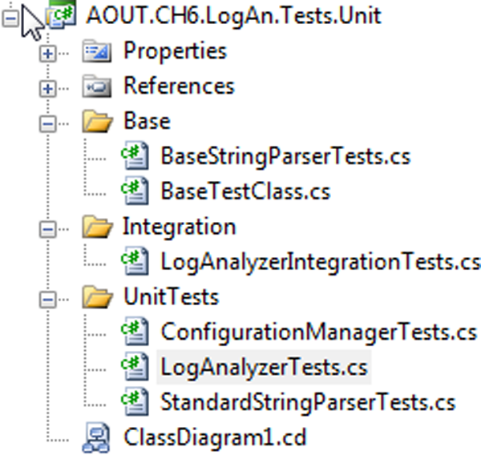
Figure 7.1 shows a simple folder structure you can use inside your Visual Studio projects.
Some companies, based on the build software and unit testing framework they use, find it easier to use separate test projects for unit and integration tests. This makes it easier to use commandline tools that accept and run a full test assembly containing only specific kinds of tests. Figure 7.2 shows how you’d set up two separate kinds of test projects under a single solution.
Even if you haven’t already implemented an
automated build system, separating unit from integration tests is a good idea. Mixing up the two tests can lead to severe consequences, such as people not running your tests, as you’ll see next.
7.2.1 The human factor when separating unit from integration tests I recommend separating unit from integration tests. If you don’t, there’s a big risk people won’t run the tests often enough. If the tests exist, why wouldn’t people run them as often as needed? One reason is that developers can be lazy or under tremendous time pressure.
If a developer gets the latest version of the source code and finds that some unit tests fail, there are several possible causes:
■ There’s a bug in the code under test.
■ The test has a problem in the way it’s written.
■ The test is no longer relevant.
■ The test requires some configuration to run.
All but the last point are valid reasons for a developer to stop and investigate the code. The last one isn’t a development issue; it’s a configuration problem, which is often considered less important because it gets in the way of running the tests. If such a test fails, the developer will often ignore the test failure and go on to other things. (They have “more important” things to do.)
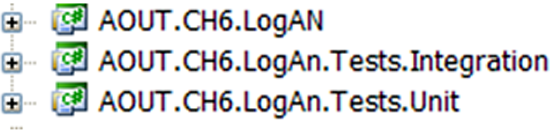
Ensuring tests are part of source control 131
In many ways, having such hidden integration tests mixed in with unit tests and scattered around your test project with unknown or unexpected configuration requirements (like a database connection) is bad form. These tests are less approachable, they waste time and money on finding problems that aren’t there, and they generally discourage the developer from trusting the set of tests again. Like bad apples in a basket, they make all the others look bad. The next time something similar happens, the developer may not even look for a cause for the failure and may simply say, “Oh, that test sometimes fails; it’s OK.”
To make sure this doesn’t happen, you can create a safe green zone.
7.2.2 The safe green zone
Locate your integration and unit tests in separate places. By doing that, you give the developers on your team a safe green test area that contains only unit tests, where they know that they can get the latest code version, they can run all tests in that namespace or folder, and the tests should all be green. If some tests in the safe green zone don’t pass, there’s a real problem, not a (false positive) configuration problem in the test.
This doesn’t mean that the integration tests shouldn’t all pass. But because integration tests inherently take longer to execute, it’s more likely that developers will run the unit tests more times a day and run the integration tests less often but at least during the nightly build. Developers can focus on being productive and getting at least a partial sense of confidence when all their unit tests are passing. The nightly build should have all the automated tasks of getting everything to work to make the integration tests pass.
In addition, creating a separate integration zone (the opposite of a safe green zone) for the integration tests gives you not only a place to quarantine tests that may run slowly but also a place to put documents detailing what configuration needs to take place to make all these tests work.
An automated build system will do all the configuration work for you. But if you want to run locally, you should have in your solution or project an integration zone that has all the information you need to make things run but that you can also skip if you want to just run the quick tests (in the safe green zone).
But none of this matters if you don’t have your tests inside the source control tree, as you’ll see next.
7.3 Ensuring tests are part of source control
Tests must be part of source control. The test code that you write needs to reside in a source control repository, just like your real production code. In fact, you should treat your test code as thoughtfully as you treat your production code. It should be part of the branch for each version of the product, and it should be part of the code that developers receive automatically when they get the latest version.
Because unit tests are so connected to the code and API, they should always stay attached to the version of the code they’re testing. Obtaining version 1.0.1 of your
product means also getting version 1.0.1 of the tests for your product; version 1.0.2 of your product and its tests will be different.
Also, having your tests as part of the source control tree is what allows your automated build processes to consistently run the correct version of the tests against your software.
So now that tests are part of source control, where should they reside?
7.4 Mapping test classes to code under test
When you create test classes, the way they’re structured and placed should allow you to easily do the following:
■ Look at a project and find all the tests that relate to it
■ Look at a class and find all the tests that relate to it
■ Look at a method and find all the tests that relate to it
There are several patterns that can help you do this. We’ll examine these goals one by one.
7.4.1 Mapping tests to projects
I like to create a project to contain the tests and give it the same name as the project under test, adding .UnitTests to the end of the name. For example, if I had a project named Osherove.MyLibrary, I would also have a test project named Osherove.MyLibrary .UnitTests as well as Osherove.MyLibrary.IntegrationTests, or some variation on this idea. (See figure 7.2 for an example.) This may sound crude, but it’s intuitive, and it allows a developer to find all the tests for a specific project.
You may also want to use Visual Studio’s ability to create folders under the solution and group this threesome into its own folder, but that’s a matter of preference.
7.4.2 Mapping tests to classes
There are several ways to go about mapping the tests for a class you’re testing. We’ll look at two main scenarios: having one test class for each class under test and having separate test classes for complex methods being tested.
TIP These are the two test class patterns I use most, but others exist. I suggest you look at Gerard Meszaros’s xUnit Test Patterns: Refactoring Test Code for more.
ONE TEST CLASS PER CLASS OR UNIT OF WORK UNDER TEST
You want to be able to quickly locate all tests for a specific class, and the solution is much like the previous pattern for projects: take the name of the class you want to write tests for and, in the test project, create a test class with the same name postfixed with UnitTests. For a class called LogAnalyzer, you’d create a test class in your test project named LogAnalyzer.UnitTests.
Note the plural; this is a class that holds multiple tests for the class under test, not just one test. It’s important to be accurate. Readability and language matter a lot when
Mapping test classes to code under test 133
it comes to test code, and once you start cutting corners in one place, you’ll be doing so in others, which can lead to problems.
The one-test-class-per-class pattern (also mentioned in Meszaros’s xUnit Test Patterns: Refactoring Test Code) is the simplest and most common pattern for organizing tests. You put all the tests for all methods of the class under test in one big test class. When you’re using this pattern, some methods in the class under test may have so many tests that the test class becomes difficult to read or browse. Sometimes the tests for one method drown out the other tests for other methods. That in itself could indicate that maybe the method test is doing too much.
TIP Test readability is important. You’re writing tests as much for the person who will read them as for the computer that will run them. I cover readability aspects in the next chapter.
If the person reading the test has to spend more time browsing the test code than understanding it, the test will cause maintenance headaches as the code gets bigger and bigger. That’s why you might think about doing it differently.
ONE TEST CLASS PER FEATURE
An alternative is creating a separate test class for a particular feature (which could be as small as a method). The one-test-class-per-feature pattern is also mentioned in Meszaros’s book. If you seem to have lots of test methods that make your test class difficult to read, find the method or group of methods whose tests are drowning out the other tests for that class, and create a separate test class for it, with the name relating to the feature.
Suppose a class named LoginManager has a ChangePassword method you’d like to test, but it has so many test cases that you want to put it in a separate test class. You might end up with two test classes: LoginManagerTests, which contains all the other tests, and LoginManagerTestsChangePassword, which contains only the tests for the ChangePassword method.
7.4.3 Mapping tests to specific unit of work method entry points
Beyond making test names readable and understandable, your main goal is to be able to easily find all test methods for a specific unit of work under test, so you should give your test methods meaningful names. You can use the starting public method name as part of the test name.
You could name a test ChangePassword_scenario_expectedbehavior. This naming convention is discussed in chapter 2 (section 2.3.2). There are times in your production code you won’t want to use the injection techniques specified in the previous chapters, such as extracting interfaces or overriding virtual methods. That happens when you’re dealing with cross-cutting concerns.
7.5 Cross-cutting concerns injection When you’re dealing with cross-cutting concerns such as time management, or exceptions, or logging, you might end up with code that’s less readable and maintainable when using these techniques.
The problem with cross-cutting concerns like DateTime is that when they exist in your app, they’re used in so many places that architecting them as injectable pieces of Lego can end up making your code very testable but also very hard to read and follow.
Let’s say that your application needs the current time for scheduling or for logging, and you’d also like to test that your application is using the current time in its logs.
You might have this type of code in your system:
public static class TimeLogger {
public static string CreateMessage(string info) {
return DateTime.Now.ToShortDateString() + " " + info; }
}
If you were to make it more testable by making an ITimeProvider interface, you’d then have to use this interface everywhere DateTime is used. This is very time consuming, when in fact you can have more straightforward approaches.
The approach I like to use for time-based systems is to create a custom class, named SystemTime, and make sure all my production code uses that class instead of the standard built-in DateTime.
That class and the revised production code that uses it might look like the following listing.
Listing 7.1 Using the SystemTime class
public static class TimeLogger {
Production code that uses SystemTime
public static string CreateMessage(string info) {
return SystemTime.Now.ToShortDateString() + " " + info; }
} public class SystemTime {
private static DateTime _date; public static void Set(DateTime custom) { _date = custom; } public static void Reset() { _date=DateTime.MinValue; } public static DateTime Now {
SystemTime allows changing the current time…
…and resetting the current time
SystemTime returns real time or fake one if it was set
get
{
}
} }
if (_date != DateTime.MinValue) {
return _date;
} return DateTime.Now;
The simple trick here is that there are special functions on the SystemTime class that allow you to alter the current time throughout the system. That is, everyone who uses this SystemTime class will see whatever date and time you choose.
This gives you a perfect way to test that the current time is used in your production code through a simple test like the one in the next listing.
Listing 7.2 A test using SystemTime
[TestFixture] public class TimeLoggerTests {
}
[Test] public void SettingSystemTime_Always_ChangesTime() {
SistemTime.Set(new DateTime(2000,1,1)); string output = TimeLogger.CreateMessage("a"); StringAssert.Contains("01.01.2000", output);
} [TearDown] public void afterEachTest() {
Reset date at end of each test
SystemTime.Reset(); }
Set fake date
As a bonus, you don’t need to inject a million interfaces into your app. The price you pay is a simple [TearDown] method in your test class that makes sure any test doesn’t change the time for other tests.
But you need to take into account that the system’s current culture (en-US versus en-GB, for example) can change the output string. In that case, you can also include a CultureInfoAttribute, in NUnit, on the test to force the test to run under a specific culture.
This type of external abstraction of a cross-cutting concern allows you to create a fake focal point in your production code instead of many small ones. But it only makes sense for things that are used throughout the system. If you use this for everything, you end up with a system that might be just as hard to read as what you’re trying to avoid.
A question many developers ask me when I point out this example is, “How do we make sure everyone uses this class?” My answer is that I do code reviews, and in them I make sure nobody uses DateTime directly. I try not to rely on tools too much, because I believe true learning happens when two people (or more) are sitting close enough to hear and see each other and can work together and take turns working with the same keyboard to talk about code. But if this is an existing project that we’re converting to use SystemTime, I simply do a “find in files” for code that uses DateTime, and if possible, I simply do a “replace” on all the things I find. SystemTime is named so that it’s easy to find and replace.
Next, we’ll discuss building a test API for your application.
7.6 Building a test API for your application
Sooner or later, as you start writing tests for your applications, you’re bound to refactor them and create utility methods, utility classes, and many other constructs (either in the test projects or in the code under test) solely for the purpose of testability or test readability and maintenance.
Here are some things you may want to do:
■ Use inheritance in your test classes for code reuse, guidance, and more.
■ Create test utility classes and methods.
■ Make your API known to developers.
Let’s look at these in turn.
7.6.1 Using test class inheritance patterns
One of the most powerful arguments for object-oriented code is that you can reuse existing functionality instead of recreating it over and over again in other classes—what Andy Hunt and Dave Thomas called the DRY (“don’t repeat yourself”) principle in The Pragmatic Programmer (Addison-Wesley Professional, 1999). Because the unit tests you write in .NET and most object-oriented languages are in an object-oriented paradigm, it’s not a crime to use inheritance in the test classes themselves. In fact, I urge you to do this if you have a good reason to. Implementing a base class can help alleviate standard problems in test code in the following ways:
■ Reusing utility and factory methods
■ Running the same set of tests over different classes (we’ll look at this one in more detail)
■ Using common setup or teardown code (also useful for integration testing)
■ Creating testing guidance for programmers who will derive from the base class
I’ll introduce you to three patterns based on test class inheritance, each one building on the previous pattern. I’ll also explain when you might want to use each pattern and what the pros and cons are for each.
These are the basic three patterns:
■ Abstract test infrastructure class
■ Template test class
■ Abstract test driver class
We’ll also take a look at the following refactoring techniques that you can apply when using the preceding patterns:
■ Refactoring into a class hierarchy
■ Using generics
ABSTRACT TEST INFRASTRUCTURE CLASS PATTERN
The abstract test infrastructure class pattern creates an abstract test class that contains essential common infrastructure for test classes deriving from it. Scenarios where you’d want to create such a base class can range from having common setup and teardown code to having special custom asserts that are used throughout multiple test classes.
We’ll look at an example that will allow you to reuse a setup method in two test classes. Here’s the scenario: all tests need to override the default logger implementation in the application so that logging is done in memory instead of in a file. (That is, all tests need to break the logger dependency in order to run correctly.)
Listing 7.3 shows these classes:
■ The LogAnalyzer class and method—The class and method you’d like to test
■ The LoggingFacility class—The class that holds the logger implementation you’d like to override in your tests
■ The ConfigurationManager class—Another user of LoggingFacility, which you’ll test later
■ The LogAnalyzerTests class and method—The initial test class and method you’ll write
■ The ConfigurationManagerTests class—A class that holds tests for Configuration Manager
Listing 7.3 An example of not following the DRY principle in test classes
//This class uses the LoggingFacility Internally public class LogAnalyzer
{
public void Analyze(string fileName) {
if (fileName.Length < 8) {
LoggingFacility.Log("Filename too short:" + fileName);
} //rest of the method here
} }
//another class that uses the LoggingFacility internally public class ConfigurationManager
{
public bool IsConfigured(string configName) {
LoggingFacility.Log("checking " + configName); return result;
} }
public static class LoggingFacility {
public static void Log(string text) {
logger.Log(text);
} private static ILogger logger;
public static ILogger Logger {
get { return logger; } set { logger = value; }
} }
[TestFixture] public class LogAnalyzerTests {
[Test] public void Analyze_EmptyFile_ThrowsException() {
LogAnalyzer la = new LogAnalyzer(); la.Analyze("myemptyfile.txt"); //rest of test
} [TearDown] public void teardown() {
// need to reset a static resource between tests LoggingFacility.Logger = null;
} }
[TestFixture] public class ConfigurationManagerTests {
[Test] public void Analyze_EmptyFile_ThrowsException() {
ConfigurationManager cm = new ConfigurationManager(); bool configured = cm.IsConfigured("something"); //rest of test
} [TearDown] public void teardown() {
} }
// need to reset a static resource between tests LoggingFacility.Logger = null;
The LoggingFacility class is probably going to be used by many classes. It’s designed so that the code using it is testable by allowing the implementation of the logger to be replaced using the property setter (which is static).
There are two classes that use the LoggingFacility class internally, the LogAnalyzer and ConfigurationManager classes, and you’d like to test both of them.
One possible way to refactor this code into a better state is to extract and reuse a new utility method to remove some repetition in both test classes. They both fake the default logger implementation. You could create a base test class that contains the utility method and then call the method from each test in the derived classes.
You won’t use a common base [SetUp] method, because that would hurt readability of the derived classes. Instead you’ll use a utility method called FakeTheLogger(). The full code for the test classes is shown here.
Listing 7.4 A refactored solution
[TestFixture] public class BaseTestsClass {
public ILogger FakeTheLogger() {
Refactors into a common readable utility method to be used by derived classes
LoggingFacility.Logger =
Substitute.For<ILogger>(); return LoggingFacility.Logger;
}
Automatic cleanup for derived classes
[TearDown] public void teardown() {
// need to reset a static resource between tests LoggingFacility.Logger = null;
}
} [TestFixture] public class ConfigurationManagerTests:BaseTestsClass {
[Test] public void Analyze_EmptyFile_ThrowsException() {
FakeTheLogger(); ConfigurationManager cm =
new ConfigurationManager(); bool configured = cm.IsConfigured("something");
//rest of test }
}
Call base class helper method
[TestFixture] public class LogAnalyzerTests : BaseTestsClass {
[Test] public void Analyze_EmptyFile_ThrowsException() {
FakeTheLogger(); LogAnalyzer la = new LogAnalyzer(); la.Analyze("myemptyfile.txt");
//rest of test }
}
If you had used a Setup attributed method in the base class, it would have now automatically run before each test in either of the derived classes. The main problem this would introduce in the derived test classes is that anyone reading the code would no longer easily understand what happens when setup is called. They would have to look up the setup method in the base class to see what the derived classes get by default. This leads to less-readable tests, so instead you use a utility method that’s more explicit.
This also hurts readability in a way, because developers who use your base class have little documentation or idea what API to use from your base class. That’s why I recommend using this technique as little as you can but no less. More specifically, I’ve never had a good enough reason to use multiple base classes. I always made it more readable with a single base class, although a bit less maintainable. Also, do not have more than a single level of inheritance in your tests. That mess becomes unreadable faster than you can say, “Why is my build failing?”
Let’s look at a more interesting use of inheritance to solve a common problem.
TEMPLATE TEST CLASS PATTERN
Let’s say you want to make sure people who test specific kinds of classes in the code never forget to go through a certain set of unit tests for them as they develop the classes; for example, network code with packets, security code, database-related code, or just plain-old parsing code. The point is, you know that when they work on this kind of class in code, some tests must exist because that kind of class has to provide a known set of services with its API.
The template test class pattern is an abstract class that contains abstract test methods that derived classes must implement. The driving force behind this pattern is the need to be able to dictate to deriving classes which tests they should always implement.
If you have classes with interfaces in your system, they might be good candidates for this pattern. I find I use it when I have a hierarchy of classes that expands, and each new member of a derived class implements roughly the same ideas.
Think of an interface as a behavior contract, where the same end behavior is expected from all derived classes, but they can achieve the end result in different ways. An example of such a behavior contract could be a set of parsers all implementing parse methods that act the same way but on different input types.
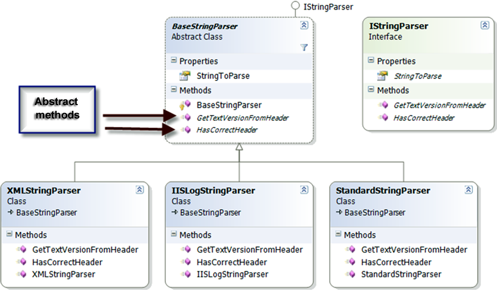
Developers often neglect or forget to write all the required tests for a specific case. Having a base class for each set of identically interfaced classes can help create a basic test contract that all developers must implement in derived test classes.
So here’s a real scenario. Suppose you have the object model shown in figure 7.3 to test. The BaseStringParser is an abstract class that other classes derive from to implement some functionality over different string content types. From each string type (XML strings, IIS log strings, standard strings), you can get some sort of versioning info (metadata on the string that was put there earlier). You can get the version info from a custom header (the first few lines of the string) and check whether that header is valid for the purposes of your application. The XMLStringParser, IISLogStringParser, and StandardStringParser classes derive from this base class and implement the methods with logic for their specific string types.
The first step in testing such a hierarchy is to write a set of tests for one of the derived classes (assuming the abstract class has no logic to test in it). Then you’d have to write the same kinds of tests for the other classes that have the same functionality.
The next listing shows tests for the StandardStringParser that you might start out with before you refactor your test classes to use the template base test class pattern.
Listing 7.5 An outline of a test class for StandardStringParser
[TestFixture] public class StandardStringParserTests {
private StandardStringParser GetParser(string input) {
return new StandardStringParser(input); }
Defines the parser
b factorymethod
[Test] public void GetStringVersionFromHeader_SingleDigit_Found() {
string input = "header;version=1;\n"; StandardStringParser parser = GetParser(input
string versionFromHeader = parser.GetStringVersionFromHeader(); Assert.AreEqual("1",versionFromHeader);
}
[Test] public void GetStringVersionFromHeader_WithMinorVersion_Found() {
string input = "header;version=1.1;\n"; StandardStringParser parser = GetParser(input);
Uses factory method
//rest of the test }
[Test] public void GetStringVersionFromHeader_WithRevision_Found() {
string input = "header;version=1.1.1;\n"; StandardStringParser parser = GetParser(input); //rest of the test
} }
Note how you use the GetParser() helper method B to refactor away c the creation of the parser object, which you use in all the tests. You use the helper method, and not a setup method, because the constructor takes the input string to parse, so each test needs to be able to create a version of the parser to test with its own specific inputs.
When you start writing tests for the other classes in the hierarchy, you’ll want to repeat the same tests that are in this specific parser class. All the other parsers should have the same outward behavior: getting the header version and validating that the header is valid. How they do this differs, but the behavior semantics are the same. This means that for each class that derives from BaseStringParser, you’d write the same basic tests, and only the type of class under test would change.
First things first: let’s see how you can easily dictate to derived test classes what tests are crucial to run. The following listing shows a simple example of this (you can find IStringParser in the book code on GitHub).
Listing 7.6 A template test class for testing string parsers
[TestFixture] public abstract class TemplateStringParserTests {
The test template class
public abstract void TestGetStringVersionFromHeader_SingleDigit_Found();
public abstract
void TestGetStringVersionFromHeader_WithMinorVersion_Found(); public abstract
void TestGetStringVersionFromHeader_WithRevision_Found();
} [TestFixture] public class XmlStringParserTests : TemplateStringParserTests {
protected IStringParser GetParser(string input) {
return new XMLStringParser(input);
} [Test] public override
void TestGetStringVersionFromHeader_SingleDigit_Found() {
IStringParser parser = GetParser("<Header>1</Header>"); string versionFromHeader = parser.GetStringVersionFromHeader(); Assert.AreEqual("1",versionFromHeader);
} [Test] public override
void TestGetStringVersionFromHeader_WithMinorVersion_Found() {
IStringParser parser = GetParser("<Header>1.1</Header>"); string versionFromHeader = parser.GetStringVersionFromHeader(); Assert.AreEqual("1.1",versionFromHeader);
} [Test] public override
void TestGetStringVersionFromHeader_WithRevision_Found() {
IStringParser parser = GetParser("<Header>1.1.1</Header>"); string versionFromHeader = parser.GetStringVersionFromHeader(); Assert.AreEqual("1.1.1",versionFromHeader);
} }
Figure 7.4 shows the visualization of this code, if you have two derived classes. Note that GetParser() is just a standard method, and it can be named anything in the derived classes.
I’ve found this technique useful in many situations, not only as a developer but also as an architect. As an architect, I was able to supply a list of essential test classes for developers to derive from and to provide guidance on what kinds of tests they’d want to write next. It’s essential in this situation that the test names are understandable. I use the word Test to prefix the abstract methods in the base class, so that people who override them in derived classes have an easier time finding what’s important to override.
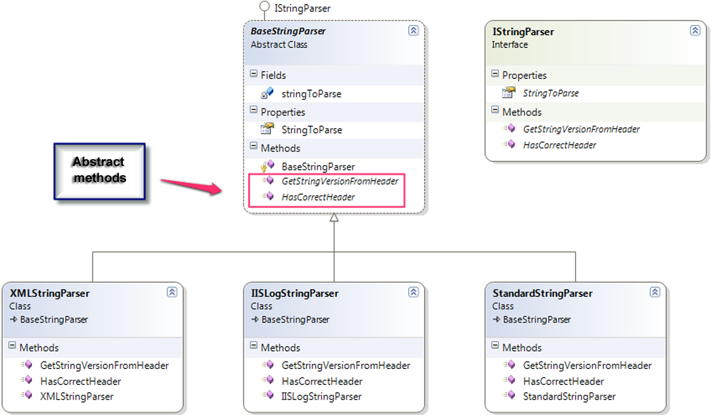
But what if you could make the base class do even more?
ABSTRACT “FILL IN THE BLANKS” TEST DRIVER CLASS PATTERN
The abstract test driver class pattern (I like to call it “fill in the blanks”) takes the previous idea further, by implementing the tests in the base class itself and providing abstract method hooks that derived classes will have to implement.
It’s essential that your tests don’t explicitly test one class type but instead test against an interface or base class in your production code under test.
Here’s an example of this base class.
Listing 7.7 A “fill in the blanks” base test class
public abstract class FillInTheBlanksStringParserTests {
protected abstract IStringParser GetParser(string input); protected abstract string HeaderVersion_SingleDigit { get; } protected abstract string HeaderVersion_WithMinorVersion {get;} protected abstract string HeaderVersion_WithRevision { get; } public const string EXPECTED_SINGLE_DIGIT = "1"; public const string EXPECTED_WITH_REVISION = "1.1.1"; public const string EXPECTED_WITH_MINORVERSION = "1.1";
Abstract input methods to provide data in a specific format for derived classes
[Test] public void GetStringVersionFromHeader_SingleDigit_Found() {
string input = HeaderVersion_SingleDigit; IStringParser parser = GetParser(input);
Abstract factory method that requires a returned interface
Predefined expected output for derived classes if needed
string versionFromHeader = parser.GetStringVersionFromHeader(); Assert.AreEqual(EXPECTED_SINGLE_DIGIT,versionFromHeader);
} [Test] public void GetStringVersionFromHeader_WithMinorVersion_Found() {
Predefined test logic using derived inputs
string input = HeaderVersion_WithMinorVersion; IStringParser parser = GetParser(input);
string versionFromHeader = parser.GetStringVersionFromHeader(); Assert.AreEqual(EXPECTED_WITH_MINORVERSION,versionFromHeader);
} [Test] public void GetStringVersionFromHeader_WithRevision_Found() {
string input = HeaderVersion_WithRevision; IStringParser parser = GetParser(input);
string versionFromHeader = parser.GetStringVersionFromHeader(); Assert.AreEqual(EXPECTED_WITH_REVISION,versionFromHeader);
} }
Derived class that fills in the blanks
[TestFixture] public class StandardStringParserTests : FillInTheBlanksStringParserTests {
protected override string HeaderVersion_SingleDigit {get {
Filling in the right format for this requirement
return string.Format("header\tversion={0}\t\n", EXPECTED_SINGLE_DIGIT);
}}
protected override string HeaderVersion_WithMinorVersion {get {
return string.Format("header\tversion={0}\t\n", EXPECTED_WITH_MINORVERSION); }}
protected override string HeaderVersion_WithRevision {get {
return string.Format("header\tversion={0}\t\n", EXPECTED_WITH_REVISION); }}
}
protected override IStringParser GetParser(string input) {
return new StandardStringParser(input); }
Filling in the right type of class under test
In the listing, you don’t have any tests in the derived class. They’re all inherited. You could add extra tests in the derived class if that makes sense. Figure 7.5 shows the inheritance chain that you’ve just created.
How do you modify existing code to use this pattern? That’s our next topic.
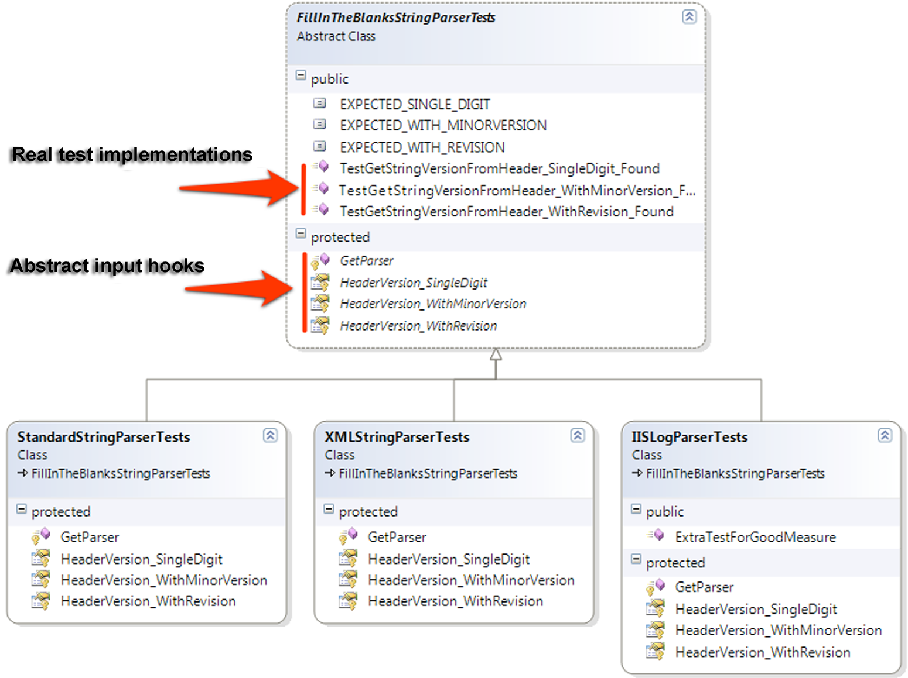
REFACTORING YOUR TEST CLASS INTO A TEST CLASS HIERARCHY
Most developers don’t start writing their tests with these inheritance patterns in mind. Instead, they write the tests normally, as shown in listing 7.7. The steps to convert your tests into a base class are fairly easy, particularly if you have IDE refactoring tools available, like the ones in Eclipse, IntelliJ IDEA, or Visual Studio (JetBrains’ ReSharper, Telerik’s JustCode, or Refactor! from DevExpress).
Here’s a list of possible steps for refactoring your test class:
1 Refactor: extract the superclass.
– Create a base class (BaseXXXTests).
– Move the factory methods (like GetParser) into the base class.
– Move all the tests to the base class.
– Extract the expected outputs into public fields in the base class.
– Extract the test inputs into abstract methods or properties that the derived classes will create.
2 Refactor: make factory methods abstract, and return interfaces.
3 Refactor: find all the places in the test methods where explicit class types are used, and change them to use the interfaces of those types instead.
4 In the derived class, implement the abstract factory methods and return the explicit types.
You can also use .NET generics to create the inheritance patterns.
A VARIATION USING .NET GENERICS TO IMPLEMENT TEST HIERARCHY
You can use generics as part of the base test class. This way, you don’t need to override any methods in derived classes; just declare the type you’re testing against. The next listing shows both the generic version of the test base class and a class derived from it.
Listing 7.8 Implementing test case inheritance with .NET generics
Defines generic
b constraintonparameter
//An example of the same idea using Generics public abstract class GenericParserTests<T>
where T:IStringParser {
Gets generic type variable instead of an interface
protected abstract string GetInputHeaderSingleDigit(); protected T GetParser(string input {
return (T) Activator.CreateInstance(typeof (T), input);
Returns generic
} [Test] public void GetStringVersionFromHeader_SingleDigit_Found() {
d type
string input = GetInputHeaderSingleDigit(); T parser = GetParser(input);
bool result = parser.HasCorrectHeader(); Assert.IsFalse(result);
} //more tests //...
Inherits from generic base class
} //An example of a test inheriting from a Generic Base Class [TestFixture] public class StandardParserGenericTests
:GenericParserTests<StandardStringParser> {
protected override string GetInputHeaderSingleDigit() {
return "Header;1"; }
Returns custom input for the
f currenttypeundertest
}
Several things change in the generic implementation of the hierarchy:
■ The GetParser factory method c no longer needs to be overridden. Create the object using Activator.CreateInstance (which allows creating objects without knowing their type) and send the input string arguments to the constructor as type T d.
■ The tests themselves don’t use the IStringParser interface but instead use the T generic type e.
■ The generic class declaration contains the where clause that specifies that the T type of the class must implement the IStringParser interface B.
■ The derived class returns a custom input into the base test f.
Overall, I don’t find more benefit in using generic base classes. Any performance gain that would result is insignificant to these tests, but I leave it to you to see what makes sense for your projects. It’s more a matter of preference than anything else.
Let’s move on to something completely different: infrastructure API in your test projects.
7.6.2 Creating test utility classes and methods
As you write your tests, you’ll create many simple utility methods that may or may not end up inside your test classes. These utility classes become a big part of your test API, and they may turn out to be a simple object model you could use as you develop your tests.
You might end up with the following types of utility methods:
■ Factory methods for objects that are complex to create or that routinely get created by your tests.
■ System initialization methods (such as methods for setting up the system state before testing, or changing logging facilities to use stub loggers).
■ Object configuration methods (for example, methods that set the internal state of an object, such as setting a customer to be invalid for a transaction).
■ Methods that set up or read from external resources such as databases, configuration files, and test input files (for example, a method that loads a text file with all the permutations you’d like to use when sending in inputs for a specific method and the expected results). This is more commonly used in integration or system testing.
■ Special assert utility methods, which may assert something that’s complex or that’s repeatedly tested inside the system’s state. (If something was written to the system log, the method might assert that X, Y, and Z are true, but not G.)
You may end up refactoring your utility methods into these types of utility classes:
■ Special assert utility classes that contain all the custom assert methods
■ Special factory classes that hold the factory methods
■ Special configuration classes or database configuration classes that hold integration-style actions
There are a few helpful utility frameworks in the open source world of .NET that provide good examples of how to make something beautiful. One example is the Fluent Assertions framework that can be found at https://github.com/dennisdoomen/FluentAssertions.
Having those utility methods around doesn’t guarantee anyone will use them. I’ve been to plenty of projects where developers kept reinventing the wheel, recreating utility methods they didn’t know already existed.
Next, you’ll find out how to make your API known.
7.6.3 Making your API known to developers
It’s imperative that the people who write tests know about the various APIs that have been developed while writing the application and its tests. There are several ways to make sure your APIs are used:
■ Have teams of two people write tests together (at least once in a while), where one is familiar with the existing APIs and can teach the other, as they write new tests, about the existing benefits and code that could be used.
■ Have a short document (no more than a couple of pages) or a cheat sheet that details the types of APIs out there and where to find them. You can create short documents for specific parts of your testing framework (APIs specific to the data layer, for example) or a global one for the whole application. If it’s not short, no one will maintain it. One possible way to make sure it’s up to date is by automating the generation process:
– Have a known set of prefixes or postfixes on the API helpers’ names (helper [something], for example).
– Have a special tool that parses out the API names and their locations and generates a document that lists them and where to find them, or have some simple directives that the special tool can parse from comments you put on them.
– Automate the generation of this document as part of the automated build process.
■ Discuss changes to the APIs during team meetings—one or two sentences outlining the main changes and where to look for the significant parts. That way the team knows that this is important and it’s always a consideration.
■ Go over this document with new employees during their orientation.
■ Perform test reviews (in addition to code reviews) that make sure tests are up to standards of readability, maintainability, and correctness, and ensure that the right APIs are used when needed. For more on that practice, see http:// 5whys.com/blog/step-4-start-doing-code-reviews-seriously.html on my blog for software leaders.
Following one or more of these recommendations can help keep your team productive and will create a shared language the team can use when writing their tests.
7.7 Summary Let’s look back and see what you can draw from the chapter you’ve been through.
■ Whatever testing you do—however you do it—automate it, use an automated build process to run it as many times as possible during the day or night, and continuously deliver the product as much as possible.
■ Separate the integration tests from the unit tests (the slow tests from the fast ones) so that your team can have a safe green zone where all the tests must pass.
■ Map out tests by project and by type (unit versus integration tests, slow versus fast tests), and separate them into different directories, folders, or namespaces (or all of these). I usually use all three types of separation.
■ Use a test class hierarchy to apply the same set of tests to multiple related types under test in a hierarchy or to types that share a common interface or base class.
■ Use helper classes and utility classes instead of hierarchies if the test class hierarchy makes tests less readable, especially if there’s a shared setup method in the base class. Different people have different opinions on when to use which, but readability is usually the key reason for not using hierarchies.
■ Make your API known to your team. If you don’t, you’ll lose time and money as team members unknowingly reinvent APIs over and over again.
■ Trustworthiness—Developers will want to run trustworthy tests, and they’ll accept the test results with confidence. Trustworthy tests don’t have bugs, and they test the right things.
■ Maintainability—Unmaintainable tests are nightmares because they can ruin project schedules, or they may be sidelined when the project is put on a more aggressive schedule. Developers will simply stop maintaining and fixing tests that take too long to change or that need to change very often on very minor production code changes.
■ Readability—This means not just being able to read a test but also figuring out the problem if the test seems to be wrong. Without readability, the other This chapter covers
■ Writing trustworthy tests
■ Writing maintainable tests
■ Writing readable tests
■ Exploring naming conventions for unit tests
No matter how you organize your tests, or how many you have, they’re worth very little if you can’t trust them, maintain them, or read them. The tests that you write should have three properties that together make them good:
151
two pillars fall pretty quickly. Maintaining tests becomes harder, and you can’t trust them anymore because you don’t understand them.
This chapter presents a series of practices related to each of these pillars that you can use when doing test reviews. Together, the three pillars ensure your time is well used. Drop one of them, and you run the risk of wasting everyone’s time.
8.1 Writing trustworthy tests There are several indications that a test is trustworthy. If it passes, you don’t say, “I’ll step through the code in the debugger to make sure.” You trust that it passes and that the code it tests works for that specific scenario. If the test fails, you don’t tell yourself, “Oh, it’s supposed to fail,” or “That doesn’t mean the code isn’t working.” You believe that there’s a problem in your code and not in your test. In short, a trustworthy test is one that makes you feel you know what’s going on and that you can do something about it.
In this chapter, I’ll introduce guidelines and techniques to help you
■ Decide when to remove or change tests
■ Avoid test logic
■ Test only one concern
■ Separate unit from integration tests
■ Push for code reviews as much as you push for code coverage
I’ve found that tests that follow these guidelines tend to be tests that I can trust more than others and that I feel confident will continue to find real errors in my code.
8.1.1 Deciding when to remove or change tests Once you have tests in place, passing, you should generally not want to change or remove them. They are there as your safety net to let you know if anything breaks when you change your code. That said, there are times you might feel compelled to change or remove existing tests. To understand when tests might cause a problem and when it’s reasonable to change or remove them, let’s look at the reasons for each.
The main reason for removing a test is because it fails. A test can suddenly fail for several reasons:
■ Production bugs—There’s a bug in the production code under test.
■ Test bugs—There’s a bug in the test.
■ Semantics or API changes—The semantics of the code under test changed but not the functionality.
■ Conflicting or invalid tests—The production code was changed to reflect a conflicting requirement.
There are also reasons for changing or removing tests when nothing is wrong with the tests or code:
■ To rename or refactor the test
■ To eliminate duplicate tests
Let’s see how you might deal with each of these cases.
PRODUCTION BUGS
A production bug occurs when you change the production code and an existing test breaks. If indeed this is a bug in the code under test, your test is fine, and you shouldn’t need to touch the test. This is the best and most desired outcome of having tests.
Because the occurrence of production bugs is one of the main reasons you have unit tests in the first place, the only thing left to do is to fix the bug in the production code. Don’t touch the test.
TEST BUGS
If there’s a bug in the test, you need to change the test. Bugs in tests are notoriously hard to detect, because tests are assumed to be correct. (That’s why I like TDD so much. It’s one extra way to test the test and see it fail and pass when it should.) I’ve detected several stages developers go through when a test bug is encountered:
1 Denial—The developer will keep looking for a problem in the code itself, changing it, causing all the other tests to start failing. The developer introduces new bugs into production code while hunting for the bug that’s actually in the test.
2 Amusement—The developer will call another developer, if possible, and they will hunt for the nonexistent bug together.
3 Debuggerment—The developer will patiently debug the test and discover that there’s a problem in the test. This can take anywhere from an hour to a couple of days.
4 Acceptance and slappage—The developer will eventually realize where the bug is and will slap their forehead.
When you finally find and start fixing the bug, it’s important to make sure that the bug gets fixed and that the test doesn’t magically pass because you test the wrong thing. You need to do the following:
1 Fix the bug in your test. 2 Make sure the test fails when it should. 3 Make sure the test passes when it should.
The first step, fixing the test, is straightforward. The next two steps make sure you’re still testing the correct thing and that your test can still be trusted.
Once you’ve fixed your test, go to the production code under test and change it so that it manifests the bug that the test is supposed to catch. That could mean commenting out a line or changing a Boolean somewhere, for example. Then run the test. If the test fails, that means it’s half working. The other half will be completed in step 3. If the test doesn’t fail, you’re most likely testing the wrong thing. (I’ve seen developers accidentally delete the asserts from their tests when fixing bugs in tests. You’d be surprised how often that happens and how effective step 2 is at catching these cases.)
Once you see the test fail, change your production code so that the bug no longer exists. The test should now pass. If it doesn’t, you either still have a bug in your test or you’re testing the wrong thing. You want to see the test fail and then pass again after you fix it so that you can be sure that it fails and passes when it should.
SEMANTICS OR API CHANGES
A test can fail when the production code under test changes so that an object being tested now needs to be used differently, even though it may still have the same end functionality.
Consider the simple test in this listing.
Listing 8.1 A simple test against the LogAnalyzer class
Listing 8.2 The changed test using the new semantics of LogAnalyzer
Listing 8.3 A refactored test using a factory method
[Test] public void SemanticsChange() {
LogAnalyzer logan = new LogAnalyzer(); Assert.IsFalse(logan.IsValid("abc"));
}
Let’s say that a semantics change has been made to the LogAnalyzer class, in the form of an Initialize method. You now have to call Initialize on the LogAnalyzer class before calling any of the other methods on it.
If you introduce this change in the production code, the assert line of the test in listing 8.1 will throw an exception because Initialize was not called. The test will be broken, but it’s still a valid test. The functionality it tests still works, but the semantics of using the object under test have changed.
In this case, you need to change the test to match the new semantics, as shown here.
[Test] public void SemanticsChange() {
LogAnalyzer logan = new LogAnalyzer(); logan.Initialize();
Assert.IsFalse(logan.IsValid("abc")); }
Changing semantics accounts for most of the bad experiences developers have with writing and maintaining unit tests because the burden of changing tests while the API of the code under test keeps changing gets bigger and bigger. The following listing shows a more maintainable version of the test in listing 8.2.
[Test] public void SemanticsChange() {
LogAnalyzer logan = MakeDefaultAnalyzer(); Assert.IsFalse(logan.IsValid("abc"));
} public static LogAnalyzer MakeDefaultAnalyzer() {
LogAnalyzer analyzer = new LogAnalyzer(); analyzer.Initialize(); return analyzer;
}
Uses factory
b method
In this case, the refactored test uses a utility factory method B. You can do the same for other tests and have them use the same utility method. Then, if the semantics of creating and initializing the object should change again, you don’t need to change all the tests that create this object; you need to change only one little utility method. If you get tired of creating these factory methods, I suggest you take a look at a test helper framework called AutoFixture.
I’ll go into a bit more detail on it in the appendix, but in short, AutoFixture can be used, among other things, as a smart object factory, allowing you to create the object under test without worrying too much about the structure of the constructor. To find out more about this framework, Google “String Calculator Kata with AutoFixture” or go to the AutoFixture GitHub page at https://github.com/AutoFixture/AutoFixture. I’m still not sure if I’d be an avid user of it (because creating a factory method is really not a big deal), but it’s worth taking a look and deciding for yourself if you like it. As long as your tests are readable and maintainable while using it, I won’t hold it against you.
You’ll see other maintainability techniques later in this chapter.
CONFLICTING OR INVALID TESTS
A conflict problem arises when the production code introduces a new feature that’s in direct conflict with a test. This means that instead of the test discovering a bug, it discovers conflicting requirements.
Let’s look at a short example. Suppose the customer requests LogAnalyzer to not allow filenames shorter than four letters. The analyzer should throw an exception in that case. The feature is implemented and tests are written.
Much later on, the customer realizes that three-letter filenames do have a use and requests that they be handled in a special way. The feature is added and the production code changed. As you write new tests that the production code no longer throws an exception to and make them pass, an old test (the one with a three-letter filename) suddenly breaks. It expects an exception. Fixing the production code to make that test pass would break the new test that expects three-letter filenames to be handled in a special way.
This either/or scenario, where only one of two tests can pass, serves as a warning that these may be conflicting tests. In this case, you first need to make sure that the tests are in conflict. Once that’s confirmed, you need to decide which requirement to keep. You should then remove (not comment out) the invalid requirement and its
tests. (Seriously, if I catch another person commenting out something instead of deleting it, I will write a whole book titled Why God Invented Source Control.)
Conflicting tests can sometimes point out problems in customer requirements, and the customer may need to decide on the validity of each requirement.
RENAMING OR REFACTORING TESTS
An unreadable test is more of a problem than a solution. It can hinder your code’s readability and your understanding of any problems it finds.
If you encounter a test that has a vague or misleading name or that can be made more maintainable, change the test code (but don’t change the basic functionality of the test). Listing 8.3 showed one such example of refactoring a test for maintainability, which also makes it much more readable.
ELIMINATING DUPLICATE TESTS
When dealing with a team of developers, it’s common to come across multiple tests written by different developers for the same functionality. I’m not crazy about removing duplicate tests for a couple of reasons:
■ The more (good) tests you have, the more certain you are to catch bugs.
■ You can read the tests and see different ways or semantics of testing the same thing.
Here are some of the cons of having duplicate tests:
■ It may be harder to maintain several different tests that provide the same functionality.
■ Some tests may be higher quality than others, and you need to review them all for correctness.
■ Multiple tests may break when a single thing doesn’t work. (This may not really be undesirable.)
■ Similar tests must be named differently, or the tests can be spread across different classes.
■ Multiple tests may create more maintainability issues.
Here are some pros:
■ Tests may have small differences and so can be thought of as testing the same things slightly differently. They may make for a larger and better picture of the object being tested.
■ Some tests may be more expressive than others, so more tests may improve the chances of test readability.
Although, as I said, I’m not crazy about removing duplicate tests, I usually do so; the cons usually outweigh the pros.
8.1.2 Avoiding logic in tests The chances of having bugs in your tests increase almost exponentially as you include more and more logic in them. I’ve seen plenty of tests that should have been simple become dynamically logic-changing, random-number-generating, thread-creating,
file-writing monsters that are little test engines in their own right. Sadly, because they had a [Test] attribute on them, the writer didn’t consider that they might have bugs or didn’t write them in a maintainable manner. Those test monsters waste more time to debug and verify than they save.
But all monsters start out small. Often, a guru in the company will look at a test and start thinking, “What if we made the method loop and create random numbers as input? We’d surely find lots more bugs that way!” And you will, especially in your tests. Test bugs are one of the most annoying things for developers, because you’ll almost never search for the cause of a failing test in the test itself. I’m not saying that such tests don’t have any value. In fact, I’m likely to write such tests myself. But I wouldn’t call them unit tests. I’d call them integration tests because they have little control of the thing they’re testing and likely can’t be trusted to be truthful in their results (more on this in the section about separating unit from integration tests later in this chapter).
If you have any of the following inside a unit test, your test contains logic that shouldn’t be there:
■ switch, if, or else statements
■ foreach, for, or while loops
A test that contains logic is usually testing more than one thing at a time, which isn’t recommended, because the test is less readable and more fragile. But test logic also adds complexity that may contain a hidden bug.
A unit test should, as a general rule, be a series of method calls with assert calls, but no control flows, not even try-catch, and with assert calls. Anything more complex causes the following problems:
■ The test is harder to read and understand.
■ The test is hard to re-create. (Imagine a multithreaded test or a test with random numbers that suddenly fails.)
■ The test is more likely to have a bug or to test the wrong thing.
■ Naming the test may be harder because it does multiple things.
Generally, monster tests replace original simpler tests, and that makes it harder to find bugs in the production code. If you must create a monster test, it should be added to and not replace existing tests, and it should reside in a project explicitly titled to hold integration tests, not unit tests.
Another kind of logic that it’s important to avoid in unit tests can be seen in the following:
[Test] public void ProductionLogicProblem() {
string user ="USER"; string greeting="GREETING";
string actual = MessageBuilder.Build(user,greeting); Assert.AreEqual(user + greeting,actual);
}
The problem here is that the test is dynamically defining the expected result in the assert using simple logic, but still logic. The test is very likely to repeat production code logic as well as any bugs in that logic (because the person who wrote the logic and the person writing the test could be the same person or have the same misconceptions about the code).
That means that any bugs in production could be repeated in the test, and thus, if the bug exists, the test will pass. In the example code, there’s a space missing in the expected value of the assert, and it’s also missing from production, so the test will pass.
It would instead be better to write the test with hardcoded values like so:
[Test] public void ProductionLogicProblem() {
}
string actual = MessageBuilder.Build("user","greeting"); Assert.AreEqual"user greeting",actual);
Because you already know how the end result should look, nothing stops you from using it in a hardcoded way. Now you don’t care how the end result was accomplished, but you find out if it didn’t pass. And you have no logic in your test that might have a bug.
Logic might be found not only in tests but also in test helper methods, handwritten fakes, and test utility classes. Remember, every piece of logic you add in these places makes the code that much harder to read and increases the chances of your having a bug in a utility method that your tests use.
If you find that you need to have complicated logic in your test suite for some reason (though that’s generally something I do with integration tests, not unit tests), at least make sure you have a couple of tests against the logic of your utility methods in the test project. It will save you many tears down the road.
8.1.3 Testing only one concern A concern, as explained before, is a single end result from a unit of work: a return value, a change to system state, or a call to a third-party object. For example, if your unit test asserts on more than a single object, it may be testing more than one concern. Or if it tests both that the same object returns the right value and that the system state changes so that the object now behaves differently, it’s likely testing more than one concern.
Testing more than one concern doesn’t sound so bad until you decide to name your test or consider what happens if the asserts on the first object fail.
Naming a test may seem like a simple task, but if you’re testing more than one thing, giving the test a good name that indicates what’s being tested becomes almost impossible. You end up with a very generic test name that forces the reader to read the test code (more on that in the readability section in this chapter). When you test just one concern, naming the test is easy.
More disturbingly, in most unit test frameworks (NUnit included) a failed assert throws a special type of exception that’s caught by the test framework runner. When the test framework catches that exception, it means the test has failed. Unfortunately, exceptions, by design, don’t let the code continue. The method exits on the same line where the exception is thrown. Listing 8.4 shows an example. If the first assert fails, it will throw an exception, which means the second assert will never run, and you won’t know if the object behavior differed based on its state. Each of these can and should be considered different requirements, and they can and should be implemented separately and incrementally one after the other.
Listing 8.4 A test with multiple asserts
[Test] public void IsValid_WhenValid_ReturnsTrueAndRemembersItLater() {
LogAnalyzer logan = MakeDefaultAnalyzer(); Assert.IsTrue(logan.IsValid("abc")); Assert.IsTrue(logan.WasLastCallValid);
}
Consider assert failures as symptoms of a disease. The more symptoms you can find, the easier the disease will be to diagnose. After a failure, subsequent asserts aren’t executed, and you miss seeing other possible symptoms that could provide valuable data (symptoms) that would help you narrow your focus and discover the underlying problem.
The test in listing 8.4 should really be two separate tests, with two good names. Here’s another way to think about it: if the first assert fails, do you still care what hap-
pens to the next one? If you do, you should probably separate the test into two unit tests.
Checking multiple concerns in a single unit test adds complexity with little value. You should run additional concern checks in separate, self-contained unit tests so that you can see what really fails.
8.1.4 Separate unit from integration tests In chapter 7, I discussed the safe green zone for tests. I’m discussing this again because it’s very important. If developers don’t trust your tests to run out of the box easily and consistently, they won’t run them. Refactoring your tests so they’re easy to run and provide consistent results will make them more trustworthy. Having a safe green zone in your tests can lead to developers having more confidence in your tests. This green zone is easily created by having a separate unit tests project in which only tests that run in memory, are consistent, and are repeatable exist.
8.1.5 Assuring code review with code coverage What does it mean when you have 100% code coverage? Nothing, without a code review. Your CEO might have asked all employees to “get over 95% code coverage,” and they might have done exactly what they were asked. Maybe those tests don’t even have asserts. People tend to do what they need to do to achieve a given goal metric.
What does 100% code coverage along with tests and code reviews mean? It means the world is yours for the taking. If you did code reviews and test reviews and made sure the tests are good and they cover all the code, then you’re in a golden position to have a safety net that saves you from stupid mistakes, while at the same time the team benefits from knowledge sharing and continuous learning.
When I say “code review,” I don’t mean that half-hearted way of using a tool from halfway around the world to comment with a text line on somebody else’s code, which they’ll see three hours later when you’re no longer at work.
No, when I say “code review,” I really mean two people sitting and talking, looking at and changing the same piece of code, live. (Hopefully, they’re sitting right next to each other, but remote communication apps like Skype and TeamViewer will do fine, thank you.) I’ll share more about what awesome code reviews feel like in the next chapter, but for now, just know that without continuously reviewing and pairing on code and tests, you and your peers are missing a big, juicy dimension of learning and productivity. If that’s the case, you should be doing everything you can to stop denying yourself this requisite essential skill. Code review is also a technique for creating readable, high-quality code that lasts for years and being able to respect yourself in the morning.
Stop looking at me like that. Your skepticism is holding you back from making
your current job your dream job. Anyway, let’s talk about code coverage. To ensure good coverage for your new code, use one of the automated tools (for example, dotCover from JetBrains, OpenCover, NCover, or Visual Studio Pro). My personal recommendation these days is NCrunch, which gives a real-time coverage red/ green view of your code that changes as you’re coding. It costs money but also saves money. The point is to find a good tool and master it, use it to its fullest potential, and milk value out of it, making sure you never have low coverage.
Less than 20% coverage means you’re missing a whole bunch of tests, and you never know if the next developer will try to play with your code. They may try to optimize it or wrongly delete some essential line, and if you don’t have a test that will fail, the mistake may go unnoticed.
When doing code and test reviews, you can also do a manual check, which is great for ad hoc testing of a test. Try commenting out a line or doing a Boolean check. If all tests still pass, you might be missing some tests, or the current tests may not be testing the right thing.
When you add a new test that was missing, check whether you’ve added the correct test with these steps:
1 Comment out the production code you think isn’t being covered.
2 Run all the tests.
3 If all the tests pass, you’re missing a test or are testing the wrong thing. Otherwise, there would have been a test somewhere that was expecting that line to be called or some resulting consequence of that line of code to be true, and that missing test would now fail.
4 Once you’ve found a missing test, you’ll need to add it. Keep the code commented out and write a new test that fails, proving that the code you’ve commented is missing.
5 Uncomment the code you commented before.
6 The test you wrote should now pass. You’ve detected and added a missing test!
7 If the test still fails, it means the test may have a bug or is testing the wrong thing. Modify the test until it passes. Now you’ll want to see that the test is OK, making sure it not only passes when it should, but also fails when it should. To make sure the test fails when it should, reintroduce the bug into your code (commenting out the line of production code) and see if the test indeed fails.
As an added confidence booster, you might also try replacing various parameters or internal variables in your method under test with constants (making a bool always true to see what happens, for example).
The trick to all this testing is making sure it doesn’t take up too much time to make it worth your while. That’s what the next section is about: maintainability.
8.2 Writing maintainable tests
Maintainability is one of the core issues most developers face when writing unit tests. Eventually the tests seem to become harder and harder to maintain and understand, and every little change to the system seems to break one test or another, even if bugs don’t exist. With all pieces of code, time adds a layer of indirection between what you think the code does and what it really does.
This section covers techniques I’ve learned the hard way, writing unit tests with various teams. They include testing only against public contracts, removing duplication in tests, and enforcing test isolation.
8.2.1 Testing private or protected methods Private or protected methods are usually private for a good reason in the developer’s mind. Sometimes it’s to hide implementation details, so that the implementation can change later without the end functionality changing. It could also be for securityrelated or IP-related reasons (obfuscation, for example).
When you test a private method, you’re testing against a contract internal to the system, which may well change. Internal contracts are dynamic, and they can change when you refactor the system. When they change, your test could fail because some internal work is being done differently, even though the overall functionality of the system remains the same.
For testing purposes, the public contract (the overall functionality) is all that you need to care about. Testing the functionality of private methods may lead to breaking tests, even though the overall functionality is correct.
Think of it this way: no private method exists without a reason. Somewhere down the line there’s a public method that ends up invoking this method, or invokes a private method that ends up invoking the method you’re interested in. That means that
any private method is usually part of a bigger unit of work, or a use case in the system, that starts out with a public API and ends with one of the three end results: return value, state change, or third-party call (or all three).
With this viewpoint, if you see a private method, find the public use case in the system that will exercise it. If you test only the private method and it works, that doesn’t mean that the rest of the system is using this private method correctly or handles the results it provides correctly. You might have a system that works perfectly on the inside, but all that nice inside stuff is used horribly wrong from the public APIs.
Sometimes if a private method is worth testing, it might be worth making it public, static, or at least internal and defining a public contract against any code that uses it. In some cases, the design may be cleaner if you put the method in a different class altogether. We’ll look at these approaches in a moment.
Does this mean there should eventually be no private methods in the code base? No. With TDD, you usually write tests against methods that are public, and those public methods are later refactored into calling smaller, private methods. All the while, the tests against the public methods continue to pass.
MAKING METHODS PUBLIC
Making a method public isn’t necessarily a bad thing. It may seem to go against the object-oriented principles you were raised on, but wanting to test a method could mean that the method has a known behavior or contract against the calling code. By making it public, you’re making this official. By keeping the method private, you tell all the developers who come after you that they can change the implementation of the method without worrying about unknown code that uses it, because it serves as only part of a larger group of things that together make up a contract to the calling code.
EXTRACTING METHODS TO NEW CLASSES
If your method contains a lot of logic that can stand on its own, or it uses state in the class that’s relevant only to the method in question, it may be a good idea to extract the method into a new class, with a specific role in the system. You can then test that class separately. Michael Feathers’s Working Effectively with Legacy Code, has some good examples of this technique, and Clean Code by Robert Martin can help with figuring out when this is a good idea.
MAKING METHODS STATIC
If your method doesn’t use any of its class’s variables, you might want to refactor the method by making it static. That makes it much more testable but also states that this method is a sort of utility method that has a known public contract specified by its name.
MAKING METHODS INTERNAL
When all else fails, and you can’t afford to expose the method in an official way, you might want to make it internal and then use the [InternalsVisibleTo("TestAssembly")] attribute on the production code assembly so that tests can still call that method. This is my least favorite approach, but sometimes there’s no choice (perhaps because of security reasons, lack of control over the code’s design, and so on).
Making the method internal isn’t a great way to make sure your tests are more maintainable, because a coder can still feel it’s easier to change the method. But by exposing a method as an explicit public contract, you ensure that the coder who may change it knows that the method has a real usage contract they can’t break.
If you’re using a pre-2012 version of Visual Studio, you might have the option to Create Private Accessor, a wrapper class that Visual Studio generates that uses reflection to call your private method. Please don’t use this tool. It creates a problematic piece of code that’s hard to maintain and read over time. In fact, you should avoid anything that tells you it will generate unit tests or test-related stuff for you, unless you have absolutely no choice.
Removing the method isn’t a good option because the production code uses the method too. Otherwise, there’d be no reason to write the tests in the first place.
Another way to make code more maintainable is to remove duplication in tests.
8.2.2 Removing duplication
Duplication in your unit tests can hurt you as developers just as much as (if not more than) duplication in production code. The DRY principle should be in effect in test code the same as in production code. Duplicated code means more code to change when one aspect you test against changes. Changing a constructor or changing the semantics of using a class can have a major effect on tests that have a lot of duplicated code.
To understand why, let’s begin with a simple example of a test.
Listing 8.5 A class under test and a test that uses it
public class LogAnalyzer {
public bool IsValid(string fileName) {
if (fileName.Length < 8) {
return true;
} return false;
} }
[TestFixture] public class LogAnalyzerTestsMaintainable {
[Test] public void IsValid_LengthBiggerThan8_IsFalse() {
LogAnalyzer logan = new LogAnalyzer(); bool valid = logan.IsValid("123456789"); Assert.IsFalse(valid);
} }
The test at the bottom of listing 8.5 seems reasonable, until you introduce another test for the same class and end up with two tests, as in the next listing.
Listing 8.6 Two tests with duplication
Listing 8.7 LogAnalyzer with changed semantics that now requires initialization
[Test] public void IsValid_LengthBiggerThan8_IsFalse() {
LogAnalyzer logan = new LogAnalyzer(); bool valid = logan.IsValid("123456789"); Assert.IsFalse(valid);
}
[Test] public void IsValid_LengthSmallerThan8_IsTrue() {
LogAnalyzer logan = new LogAnalyzer(); bool valid = logan.IsValid("1234567"); Assert.IsTrue(valid);
}
What’s wrong with the tests in the previous listing? The main problem is that if the way you use LogAnalyzer changes (its semantics), the tests will have to be maintained independently of each other, leading to more maintenance work. The following listing shows an example of such a change.
public class LogAnalyzer { private bool initialized=false;
public bool IsValid(string fileName) {
if(!initialized) {
throw new NotInitializedException( "The analyzer.Initialize() method should be" + "called before any other operation!");
} if (fileName.Length < 8) {
return true;
} return false;
} public void Initialize() { //initialization logic here
...
}
initialized=true; }
Now, the two tests in listing 8.6 will both break because they both neglect to call Initialize() against the LogAnalyzer class. Because you have code duplication (both of the tests create the class within the test), you need to go into each one and change it to call Initialize().
You can refactor the tests to remove the duplication by creating the LogAnalyzer in a CreateDefaultAnalyzer() method that both tests can call. You could also push the creation and initialization up into a new setup method in your test class.
REMOVING DUPLICATION USING A HELPER METHOD
Listing 8.8 shows how you could refactor the tests into a more maintainable state by introducing a shared factory method that creates a default instance of LogAnalyzer. Assuming all the tests were written to use this factory method, you could add a call to Initialize() within that factory method instead of changing all the tests to call Initialize().
Listing 8.8 Adding the Initialize() call in the factory method
[Test] public void IsValid_LengthBiggerThan8_IsFalse() {
LogAnalyzer logan = GetNewAnalyzer(); bool valid = logan.IsValid("123456789"); Assert.IsFalse(valid);
}
[Test] public void IsValid_LengthSmallerThan8_IsTrue() {
LogAnalyzer logan = GetNewAnalyzer(); bool valid = logan.IsValid("1234567"); Assert.IsTrue(valid);
} private LogAnalyzer GetNewAnalyzer() {
LogAnalyzer analyzer = new LogAnalyzer(); analyzer.Initialize(); return analyzer;
}
Factory methods aren’t the only way to remove duplication in tests, as the next section shows.
REMOVING DUPLICATION USING [SETUP] You could also easily initialize LogAnalyzer within the Setup method, as shown here.
Listing 8.9 Using a setup method to remove duplication
[SetUp] public void Setup() {
logan=new LogAnalyzer(); logan.Initialize();
} private LogAnalyzer logan= null;
[Test] public void IsValid_LengthBiggerThan8_IsFalse() {
bool valid = logan.IsValid("123456789"); Assert.IsFalse(valid);
}
[Test] public void IsValid_LengthSmallerThan8_IsTrue() {
bool valid = logan.IsValid("1234567"); Assert.IsTrue(valid);
}
In this case, you don’t even need a line that creates the analyzer object in each test; a shared class instance is initialized before each test with a new instance of LogAnalyzer, and then Initialize() is called on that instance. Beware: using a setup method to remove duplication isn’t always a good idea, as I’ll explain in the next section.
8.2.3 Using setup methods in a maintainable manner
The Setup() method is easy to use. In fact, it’s almost too easy—enough so that developers tend to use it for things it wasn’t meant for, and tests become less readable and maintainable as a result.
Also, setup methods have limitations, which you can get around using simple helper methods:
■ Setup methods can only help when you need to initialize things.
■ Setup methods aren’t always the best candidates for duplication removal. Removing duplication isn’t always about creating and initializing new instances of objects. Sometimes it’s about removing duplication in assertion logic, calling out code in a specific way.
■ Setup methods can’t have parameters or return values.
■ Setup methods can’t be used as factory methods that return values. They’re run before the test executes, so they must be more generic in the way they work. Tests sometimes need to request specific things or call shared code with a
parameter for the specific test (for example, retrieve an object and set its property to a specific value).
■ Setup methods should only contain code that applies to all the tests in the cur-
rent test class, or the method will be harder to read and understand.
Now that you know the basic limitations of setup methods, let’s see how developers try to get around them in their quest to use setup methods no matter what, instead of using helper methods. Developers abuse setup methods in several ways:
■ Initializing objects in the setup method that are used in only some tests in the class
■ Having setup code that’s lengthy and hard to understand
■ Setting up mocks and fake objects within the setup method
Let’s take a closer look at these.
INITIALIZING OBJECTS THAT ARE USED BY ONLY SOME OF THE TESTS
This sin is a deadly one. Once you commit it, it becomes difficult to maintain the tests or even read them, because the setup method quickly becomes loaded with objects that are specific to only some of the tests. The following listing shows what your test class would look like if you initialized a FileInfo object setup method but used it in only one test.
Listing 8.10 A poorly implemented Setup() method
[SetUp] public void Setup() {
logan=new LogAnalyzer(); logan.Initialize();
fileInfo=new FileInfo("c:\\someFile.txt"); }
private FileInfo fileInfo = null; private LogAnalyzer logan= null;
[Test] public void IsValid_LengthBiggerThan8_IsFalse() {
bool valid = logan.IsValid("123456789"); Assert.IsFalse(valid);
} [Test] public void IsValid_BadFileInfoInput_returnsFalse() {
bool valid = logan.IsValid(fileInfo); Assert.IsFalse(valid);
} [Test] public void IsValid_LengthSmallerThan8_IsTrue()
{
bool valid = logan.IsValid("1234567"); Assert.IsTrue(valid);
} private LogAnalyzer GetNewAnalyzer() {
... }
Why is the setup method in the listing less maintainable? Because, to read the tests for the first time and understand why they break, you need to do the following:
1 Go through the setup method to understand what’s being initialized. 2 Assume that objects in the setup method are used in all tests. 3 Find out later you were wrong, and read the tests again more carefully to see
which test uses the objects that may be causing the problems. 4 Dive deeper into the test code for no good reason, taking more time and effort to understand what the code does.
Always consider the readers of your tests when writing them. Imagine this is the first time they read them. Make sure they don’t get angry.
HAVING SETUP CODE THAT’S LENGTHY AND HARD TO UNDERSTAND
Because the setup method provides only one place in the test to initialize things, developers tend to initialize many things, which inevitably are cumbersome to read and understand. One solution is to refactor the calls to initialize specific things into helper methods that are called from the setup method. This means that refactoring the setup method is usually a good idea. The more readable it is, the more readable your test class will be.
But there’s a fine line between over-refactoring and readability. Over-refactoring can lead to less-readable code. This is a matter of personal preference. You need to watch for when your code is becoming less readable. I recommend getting feedback from a partner during the refactoring. We all can become too enamored with code we’ve written, and having a second pair of eyes involved in refactoring can lead to good and objective results. Having a peer do a code review (a test review) after the fact is also good but not as productive as doing it as it happens.
SETTING UP FAKES IN THE SETUP METHOD
Please don’t arrange fakes in a setup method. Doing so will make it hard to read and maintain the tests.
My preference is to have each test create its own mocks and stubs by calling helper methods within the test, so that the reader of the test knows exactly what’s going on, without needing to jump from test to setup to understand the full picture.
STOP USING SETUP METHODS
I’ve stopped using setup methods for tests I write. They’re a relic from a time when it was OK to write crappy, unreadable tests, but that time is over. Test code should be
nice and clean, just like production code. But if your production code looks horrible, please don’t use that as a crutch to write unreadable tests. Just use factory and helper methods, and things will be better for everyone involved.
Another great option to replace setup methods if all your tests look the same is to use parameterized tests ([TestCase] in NUnit, [Theory] in XUnit.net, or [OopsWeStillDontHaveThatFeatureAfterFiveYears] in MSTest). OK, bad joke, but MSTest still has no simple support for this.
8.2.4 Enforcing test isolation A lack of test isolation is the biggest cause of test blockage I’ve seen while consulting and working on unit tests. The basic concept is that a test should always run in its own little world, isolated from even the knowledge that other tests out there may do similar or different things.
The test that cried “fail”
One project I was involved in had unit tests behaving strangely, and they got even stranger as time went on. A test would fail and then suddenly pass for a couple of days straight. A day later, it would fail, seemingly randomly, and other times it would pass even if code was changed to remove or change its behavior. It got to the point where developers would tell each other, “Ah, it’s OK. If it sometimes passes, that means it passes.”
It turned out that the test was calling out a different test as part of its code, and when the other test failed, it would break the first test.
It took us three days to figure this out, after spending a month living with the situation. When we finally had the test working correctly, we discovered that we had a bunch of real bugs in our code that we were ignoring because we were getting what we thought were false positives from the failing test. The story of the boy who cried “wolf” holds true even in development.
When tests aren’t isolated well, they can step on each other’s toes enough to make you miserable, making you regret deciding to try unit testing on the project and promising yourself never again. I’ve seen this happen. Developers don’t bother looking for problems in the tests, so when there’s a problem with them, it can take a lot of time to find out what’s wrong.
There are several test “smells” that can hint at broken test isolation:
■ Constrained test order—Tests expecting to be run in a specific order or expecting information from other test results
■ Hidden test call—Tests calling other tests
■ Shared-state corruption—Tests sharing in-memory state without rolling back
■ External shared-state corruption—Integration tests with shared resources and no rollback
Let’s look at these simple antipatterns.
ANTIPATTERN: CONSTRAINED TEST ORDER
This problem arises when tests are coded to expect a specific state in memory, in an external resource, or in the current test class—a state that was created by running other tests in the same class before the current test. The problem is that most test platforms (including NUnit, JUnit, and MbUnit) don’t guarantee that tests will run in a specific order, so what passes today may fail tomorrow.
The following listing shows a test against LogAnalyzer that expects that an earlier test has already called Initialize().
Listing 8.11 Constrained test order: the second test will fail if it runs first
[TestFixture] public class IsolationsAntiPatterns {
private LogAnalyzer logan;
[Test] public void CreateAnalyzer_BadFileName_ReturnsFalse() {
logan = new LogAnalyzer(); logan.Initialize();
bool valid = logan.IsValid("abc"); Assert.That(valid, Is.False);
} [Test]
public void CreateAnalyzer_GoodFileName_ReturnsTrue() {
bool valid = logan.IsValid("abcdefg"); Assert.That(valid, Is.True);
} }
Myriad problems can occur when tests don’t enforce isolation:
■ A test may suddenly start breaking when a new version of the test framework is introduced that runs the tests in a different order.
■ Running a subset of the tests may produce different results than running all the tests or a different subset of the tests.
■ Maintaining the tests is more cumbersome, because you need to worry about how other tests relate to particular tests and how each one affects state.
■ Your tests may fail or pass for the wrong reasons; for example, a different test may have failed or passed before it, leaving the resources in an unknown state.
■ Removing or changing some tests may affect the outcomes of others.
■ It’s difficult to name your tests appropriately because they test more than a single thing.
There are a couple of common patterns that lead to poor test isolation:
■ Flow testing—A developer writes tests that must run in a specific order so that they can test flow execution, a big use case composed of many actions, or a full integration test where each test is one step in that full test.
■ Laziness in cleanup—A developer is lazy and doesn’t return any state their test may have changed back to its original form, and other developers write tests that depend on this shortcoming knowingly or unknowingly.
These problems can be solved in various manners:
■ Flow testing—Instead of writing flow-related tests in unit tests (long-running use cases, for example), consider using some sort of integration testing framework like FIT or FitNesse or QA-related products such as AutomatedQA and WinRunner.
■ Laziness in cleanup—If you’re too lazy to clean up your database after testing, your filesystem after testing, or your memory-based objects, consider moving to a different profession. This isn’t a job for you.
ANTIPATTERN: HIDDEN TEST CALL
In this antipattern, tests contain one or more direct calls to other tests in the same class or other test classes, which cause tests to depend on one another. The following listing shows the CreateAnalyzer_GoodNameAndBadNameUsage test calling a different test at the end, creating a dependency between the tests and breaking both as isolated units.
Listing 8.12 One test calling another breaks isolation and introduces a dependency
[TestFixture] public class HiddenTestCall {
private LogAnalyzer logan;
[Test] public void CreateAnalyzer_GoodNameAndBadNameUsage() {
logan = new LogAnalyzer(); logan.Initialize();
}
bool valid = logan.IsValid("abc"); Assert.That(valid, Is.False); CreateAnalyzer_GoodFileName_ReturnsTrue();
Hidden
b test call
[Test] public void CreateAnalyzer_GoodFileName_ReturnsTrue() {
bool valid = logan.IsValid("abcdefg"); Assert.That(valid, Is.True);
} }
This type of dependency B can cause several problems:
■ Running a subset of the tests may produce different results than running all the tests or a different subset of the tests.
■ Maintaining the tests is more cumbersome, because you need to worry about how other tests relate to particular tests and how and when they call each other.
■ Tests may fail or pass for the wrong reasons. For example, a different test may have failed, thus failing your test or not calling it at all. Or a different test may have left shared variables in an unknown state.
■ Changing some tests may affect the outcome of others.
■ It’s difficult to clearly name tests that call other tests.
How we got here:
■ Flow testing—A developer writes tests that need to run in a specific order so that they can test flow execution, a big use case composed of many actions, or a full integration test where each test is one step in that full test.
■ Trying to remove duplication—A developer tries to remove duplication in the tests by calling other tests (which have code they don’t want the current test to repeat).
■ Laziness about separating the tests—A developer is lazy and doesn’t take the time to create a separate test and refactor the code appropriately, instead taking a shortcut and calling a different test.
Here are some solutions:
■ Flow testing—Instead of writing flow-related tests in unit tests (long-running use cases, for example), consider using an integration testing framework like FIT or FitNesse, or QA-related products such as AutomatedQA and WinRunner.
■ Trying to remove duplication—Don’t ever remove duplication by calling another test from a test. You’re preventing that test from relying on the setup and teardown methods in the class and are essentially running two tests in one (because the calling test has an assertion as does the test being called). Instead, refactor the code you don’t want to write twice into a third method that both your test and the other test call.
■ Laziness about separating the tests—If you’re too lazy to separate your tests, think of all the extra work you’ll have to do if you don’t separate them. Try to imagine a world where the current test you’re writing is the only test in the system, so it can’t rely on any other test.
ANTIPATTERN: SHARED-STATE CORRUPTION
This antipattern manifests in two major ways, independent of each other:
■ Tests touch shared resources (either in memory or in external resources, such as databases, filesystems, and so on) without cleaning up or rolling back any changes they make to those resources.
■ Tests don’t set up the initial state they need before they start running, relying
on the state to be there.
Either of these situations will cause the symptoms we’ll look at shortly. The problem is that tests rely on specific state to have consistent pass/fail behavior. If a test doesn’t control the state it expects, or other tests corrupt that state for whatever reason, the test can’t run properly or report the correct result consistently.
Assume you have a Person class with simple features: it has a list of phone numbers and the ability to search for a number by specifying the beginning of the number. The next listing shows a couple of tests that don’t clean up or set up a Person object instance correctly.
Listing 8.13 Shared-state corruption by a test
[TestFixture] public class SharedStateCorruption {
Defines shared Person state
Person person = new Person();
[Test] public void CreateAnalyzer_GoodFileName_ReturnsTrue() {
person.AddNumber("055-4556684(34)"); string found =
Changes
b sharedstate
person.FindPhoneStartingWith("055"); Assert.AreEqual("055-4556684(34)", found);
}
[Test] public void FindPhoneStartingWith_NoNumbers_ReturnsNull() {
string found =
person.FindPhoneStartingWith("0"); Assert.IsNull(found);
Reads shared state
} }
In this example, the second test (expecting a null return value) will fail because the previous test has already added a number B to the Person instance.
This type of problem causes a number of symptoms:
■ Running a subset of the tests may produce different results than running all the tests or a different subset of the tests.
■ Maintaining the test is more cumbersome, because you may break the state for other tests, breaking those tests without realizing it.
■ Your test may fail or pass for the wrong reason; a different test may have failed or passed before it, leaving the shared state in a problematic condition, or it may not have cleaned up after it ran.
■ Changing some tests may affect the outcomes of other tests, seemingly randomly.
Here is how we got here:
■ Not setting up state before each test—A developer doesn’t set up the state required for the test or assumes the state was already correct.
■ Using shared state—A developer uses shared memory or external resources for more than one test without taking precautions.
■ Using static instances in tests—A developer sets static state that’s used in other tests.
Here are some solutions:
■ Not setting up state before each test—This is a mandatory practice when writing unit tests. Either use a setup method or call specific helper methods at the beginning of the test to ensure the state is what you expect it to be.
■ Using shared state—In many cases, you don’t need to share state at all. Having separate instances of an object for each test is the safest way to go.
■ Using static instances in tests—You need to be careful how your tests manage static state. Be sure to clean up the static state using setup or teardown methods. Sometimes it’s effective to use direct helper method calls to clearly reset the static state from within the test. If you’re testing singletons, it’s worth adding public or internal setters so your tests can reset them to a clean object instance.
ANTIPATTERN: EXTERNAL SHARED-STATE CORRUPTION
This antipattern is similar to the in-memory, shared-state corruption pattern, but it happens in integration-style testing:
■ Tests touch shared resources (either in memory or in external resources, such as databases and filesystems) without cleaning up or rolling back any changes they make to those resources.
■ Tests don’t set up the initial state they need before they start running, relying on the state to be there.
Now that we’ve looked at isolating tests, let’s look at managing your asserts to make sure you get the full story when a test fails.
8.2.5 Avoiding multiple asserts on different concerns To understand the problem of multiple concerns, look at the following example.
Listing 8.14 A test that contains multiple asserts
[Test] public void CheckVariousSumResultsOgnoringHigherThan1001() {
Assert.AreEqual(3, Sum(1001,1,2)); Assert.AreEqual(3, Sum (1,1001,2)); Assert.AreEqual(3, Sum (1,2,1001);
}
There is more than one test in this test method. You might say that three different subfeatures are being tested here.
The author of the test method tried to save time by including three tests as three simple asserts. What’s the problem here? When asserts fail, they throw exceptions. (In NUnit’s case, they throw a special AssertException that’s caught by the NUnit test
runner, which understands this exception as a signal that the current test method has failed.) Once an assert clause throws an exception, no other line executes in the test method. This means that if the first assert in listing 8.14 failed, the other two assert clauses would never execute. So? Maybe if one fails you don’t care about the others? Sometimes. In this case, each assert is testing a separate feature or end result of the application, and you do care what happens to them if one fails.
There are several ways to achieve the same goal:
■ Create a separate test for each assert.
■ Use parameterized tests.
■ Wrap the assert call with try-catch.
Why does it matter if some asserts aren’t executed?
If only one assert fails, you never know if the other asserts in that same test method would have failed or not. You may think you know, but it’s an assumption until you can prove it with a failing or passing assert. When people see only part of the picture, they tend to make a judgment call about the state of the system, which can turn out wrong. The more information you have about all the asserts that have failed or passed, the better equipped you are to understand where in the system a bug may lie and where it doesn’t.
This applies only when you’re asserting on multiple concerns. It wouldn’t hold if you were testing that you got a person with name X, age Y, and so on, because if one assert failed, you wouldn’t care about the others. But this would be a concern if you’re expecting an action to have multiple end results. For example, it should return 3 and change system state. Each one of these is a feature and should work independently of other features.
I’ve gone on wild goose chases hunting for bugs that weren’t there because only one concern out of several failed. Had I bothered to check whether the other asserts failed or passed, I might have realized that the bug was in a different location.
Sometimes people find bugs that they think are real, but when they “fix” them, the assert that previously failed passes and the other asserts in that test fail (or continue to fail). Sometimes you can’t see the full problem, so fixing part of it can introduce new bugs into the system, which will only be discovered after you’ve uncovered each assert’s result.
That’s why it’s important that all the asserts have a chance to run in the case of multiple concerns, even if other asserts have failed before. In most cases, that means putting single asserts in tests.
USING PARAMETERIZED TESTS
Both xUnit.net and NUnit support the notion of parameterized tests using a special attribute called [TestCase]. The following listing shows how you can use [TestCase] and attributes to run the same test with different parameters in a single test method. Notice that when you use the [TestCase] attribute, it replaces the [Test] attribute in NUnit.
Listing 8.15 A refactored test class using parameterized tests
Listing 8.16 Testing multiple aspects of the same object in one test
[TestCase(1001,1,2,3)] [TestCase (1,1001,2,3)] [TestCase (1,2,1001,3)]
public void Sum_HigherThan1000_Ignored(int x,int y, int z,int expected) {
Assert.AreEqual(expected, Sum(x, y, z)); }
Parameterized test methods in NUnit and xUnit.net are different from regular tests in that they can take parameters. With NUnit, they also expect at least one [TestCase] attribute to be placed on top of the current method instead of a regular [Test] attribute. The attribute takes any number of parameters, which are then mapped at runtime to the parameters that the test method expects in its signature.
The example in listing 8.15 expects four arguments. You call an assert method with the first three parameters and use the last one as the expected value. This gives you a declarative way of creating a single test with different inputs.
The best thing about this is that if one of the [TestCase] attributes fails, the other attributes are still executed by the test runner, so you see the full picture of pass/fail states in all tests.
WRAPPING WITH TRY-CATCH
Some people think it’s a good idea to use a try-catch block for each assert to catch and write its exception to the console and then continue to the next statement, bypassing the problematic nature of exceptions in tests. I think using parameterized tests is a far better way of achieving the same thing. Use parameterized tests instead of try-catch around multiple asserts.
Now that you know how to avoid multiple asserts acting as multiple tests, let’s look at testing multiple aspects of a single object.
8.2.6 Comparing objects Here’s another example of a test with multiple asserts, but this time it’s not trying to act like multiple tests in one test; it’s trying to check multiple aspects of the same state. If even one aspect fails, you need to know about it.
[Test] public void Analyze_SimpleStringLine_UsesDefaulTabDelimiterToParseFields() {
LogAnalyzer log = new LogAnalyzer(); AnalyzedOutput output =
log.Analyze("10:05\tOpen\tRoy");
}
Assert.AreEqual(1,output.LineCount); Assert.AreEqual("10:05",output.GetLine(1)[0]); Assert.AreEqual("Open",output.GetLine(1)[1]); Assert.AreEqual("Roy",output.GetLine(1)[2]);
This example is testing that the parse output from the LogAnalyzer worked by testing each field in the result object separately. They should all work, or the test should fail.
MAKING TESTS MORE MAINTAINABLE
The next listing shows a way to refactor the test from listing 8.16 so that it’s easier to read and maintain.
Listing 8.17 Comparing objects instead of using multiple asserts
[Test] public void Analyze_SimpleStringLine_UsesDefaulTabDelimiterToParseFields2() {
LogAnalyzer log = new LogAnalyzer(); AnalyzedOutput expected = new AnalyzedOutput(); expected.AddLine("10:05", "Open", "Roy");
Sets up an expected object
AnalyzedOutput output =
log.Analyze("10:05\tOpen\tRoy"); Assert.AreEqual(expected,output);
Compares expected and actual objects
}
Instead of adding multiple asserts, you can create a full object to compare against, set all the properties that should be on that object, and compare the result and the expected object in one assert. The advantage of this approach is that it’s much easier to understand what you’re testing and to recognize that this is one logical block that should be passing, not many separate tests.
IMPORTANT Note that for this kind of testing, the objects being compared must override the Equals() method, or the comparison between the objects won’t work. Some people find this an unacceptable compromise. I use it from time to time but am happy to go either way. Use your own discretion. Because I use ReSharper, I use Alt-Insert, then select Generate Equality Members from the menu, and BAM! I get all this code generated for me for testing equality. It’s pretty neat.
OVERRIDING TOSTRING()
Another approach is to override the ToString() method of compared objects so that if tests fail, you’ll get more meaningful error messages. For example, here’s the output of the test in listing 8.17 when it fails:
TestCase 'AOUT.CH8.LogAn.Tests.MultipleAsserts
.Analyze_SimpleStringLine_UsesDefaulTabDelimiterToParseFields2' failed:
Expected: <AOUT.CH789.LogAn.AnalyzedOutput> But was: <AOUT.CH789.LogAn.AnalyzedOutput>
C:\GlobalShare\InSync\Book\Code\ARtOfUniTesting
\LogAn.Tests\MultipleAsserts.cs(41,0): at AOUT.CH8.LogAn.Tests.MultipleAsserts
.Analyze_SimpleStringLine_UsesDefaulTabDelimiterToParseFields2()
Not very helpful, is it?
By implementing ToString() in both the AnalyzedOutput class and the LineInfo class (which are part of the object model being compared), you can get more readable output from the tests. The next listing shows the two implementations of the ToString() methods in the classes under test, followed by the resulting test output.
Listing 8.18 Implementing ToString() in compared classes for cleaner output
//Overriding ToString inside The AnalyzedOutput Object////// public override string ToString() {
StringBuilder sb = new StringBuilder(); foreach (LineInfo line in lines) {
sb.Append(line.ToString());
} return sb.ToString();
} //Overriding ToString inside each LineInfo Object////////// public override string ToString() {
StringBuilder sb = new StringBuilder(); for (int i = 0; i < this.fields.Length; i++) {
sb.Append(this[i]); sb.Append(",");
} return sb.ToString();
} ///TEST OUTPUT//////////////
------ Test started: Assembly: er.dll -----TestCase 'AOUT.CH8.LogAn.Tests.MultipleAsserts
.Analyze_SimpleStringLine_UsesDefaulTabDelimiterToParseFields2' failed:
Expected: <10:05,Open,Roy,> But was: <>
C:\GlobalShare\InSync\Book\Code\ARtOfUniTesting \LogAn.Tests\MultipleAsserts.cs(41,0): at AOUT.CH8.LogAn.Tests.MultipleAsserts
.Analyze_SimpleStringLine_UsesDefaulTabDelimiterToParseFields2()
Now the test output is much clearer, and you can understand that you got very different objects. Clearer output makes it easier to understand why the test fails and makes for easier maintenance.
Another way tests can become hard to maintain is when you make them too fragile by overspecification.
8.2.7 Avoiding overspecification An overspecified test is one that contains assumptions about how a specific unit under test (production code) should implement its internal behavior, instead of only checking that the end behavior is correct.
Here are ways unit tests are often overspecified:
■ A test asserts purely internal state in an object under test.
■ A test uses multiple mocks.
■ A test uses stubs also as mocks.
■ A test assumes specific order or exact string matches when it isn’t required.
TIP This topic is also discussed in xUnit Test Patterns: Refactoring Test Code by Gerard Meszaros.
Let’s look at some examples of overspecified tests.
SPECIFYING PURELY INTERNAL BEHAVIOR The following listing shows a test against LogAnalyzer’s Initialize() method that tests internal state and no outside functionality.
Listing 8.19 An overspecified test that tests a purely internal behavior
Listing 8.20 An overspecified test that tests a purely internal behavior
[Test] public void Initialize_WhenCalled_SetsDefaultDelimiterIsTabDelimiter() {
LogAnalyzer log = new LogAnalyzer(); Assert.AreEqual(null,log.GetInternalDefaultDelimiter()); log.Initialize(); Assert.AreEqual('\t', log.GetInternalDefaultDelimiter());
}
This test is overspecified because it only tests the internal state of the LogAnalyzer object. Because this state is internal, it could change later on.
Unit tests should be testing the public contract and public functionality of an object. In this example, the tested code isn’t part of any public contract or interface.
USING STUBS ALSO AS MOCKS
Using mocks instead of stubs is a common overspecification. Let’s look at an example.
Imagine you have a data repository that you rely on to return fake data in your tests. Now, what if you used the stub that returns the fake data and also asserted that it got called? The following listing shows this.
[Test] public void IsLoginOK_UserDoesNotExist_ReturnsFalse() {
IDataRepository fakeData = A.Fake<IDataRepository>(); A.CallTo(()=> fakeData.GetUserByName(A<string>.Ignored))
.Returns(null); LoginManager login = new LoginManager(fakeData); bool result = login.IsLoginOK(“UserNameThatDoesNotExist”,”anypassword”);
Assert.IsFalse(result); A.CallTo(()=>fakeData.GetUserByName(“UserNameThatDoesNotExist”))
.MustHaveHappened(); }
The test is overspecified because it tests the interaction between the repository stub and LoginManager (using FakeItEasy). The test should let the method under test run its own internal algorithms and test the value results. By doing that, you would have made the test less brittle. As it is, it will break if you determine that you want to add an internal call or optimize by changing call parameters. As long as the end value still holds, your test shouldn’t care that something internal was called or not called at all.
In a better-defined test, the last line of that piece of code wouldn’t exist. One more way developers tend to overspecify their tests is the overuse of assumptions.
ASSUMING AN ORDER OR EXACT MATCH WHEN IT’S NOT NEEDED
Another common pattern people tend to repeat is to have asserts against hardcoded strings in the unit’s return value or properties, when only a specific part of a string is necessary. Ask yourself, “Can I use string.Contains() rather than string.Equals()?”
The same goes for collections and lists. It’s much better to make sure a collection contains an expected item than to assert that the item is in a specific place in a collection (unless that’s exactly what’s expected).
By making these kinds of small adjustments, you can guarantee that as long as the string or collection contains what’s expected, the test will pass. Even if the implementation or order of the string or collection changes, you won’t have to go back and change every little character you add to a string.
Now let’s examine the third and final pillar of good unit tests: readability.
8.3 Writing readable tests Without readability the tests you write are almost meaningless. Readability is the connecting thread between the person who wrote the test and the poor soul who has to read it a few months later. Tests are stories you tell the next generation of programmers on a project. They allow a developer to see exactly what an application is made of and where it started.
This section is all about making sure the developers who come after you will be able to maintain the production code and the tests that you write, while understanding what they’re doing and where they should be doing it.
There are several facets to readability:
■ Naming unit tests
■ Naming variables
■ Creating good assert messages
■ Separating asserts from actions
Let’s go through these one by one.
8.3.1 Naming unit tests
Naming standards are important because they give you comfortable rules and templates that outline what you should explain about the test. The test name has three parts:
■ The name of the method being tested—This is essential, so that you can easily see where the tested logic is. Having this as the first part of the test name allows easy navigation and as-you-type intellisense (if your IDE supports it) in the test class.
■ The scenario under which it’s being tested—This part gives you the “with” part of the name: “When I call method X with a null value, then it should do Y.”
■ The expected behavior when the scenario is invoked—This part specifies in plain English what the method should do or return, or how it should behave, based on the current scenario: “When I call method X with a null value, then it should do Y.”
Removing even one of these parts from a test name can cause the reader of the test to wonder what’s going on and to start reading the test code. Your main goal is to release the next developer from the burden of reading the test code in order to understand what the test is testing.
A common way to write these three parts of the test name is to separate them with underscores, like this: MethodUnderTest_Scenario_Behavior(). Here’s a test that uses this naming convention.
[Test] public void AnalyzeFile_FileWith3LinesAndFileProvider_ReadsFileUsingProvider()
{ //... }
The method in the listing tests the AnalyzeFile method, giving it a file with three lines and a file-reading provider, and expects it to use the provider to read the file.
If developers stick to this naming convention, it will be easy for other developers to jump in and understand tests.
8.3.2 Naming variables
Listing 8.21 A test with three parts in its name
How you name variables in unit tests is as important as or even more important than variable-naming conventions in production code. Apart from their chief function of testing, tests also serve as a form of documentation for an API. By giving variables good names, you can make sure that people reading your tests understand what you’re trying to prove as quickly as possible (as opposed to understanding what you’re trying to accomplish when writing production code).
The next listing shows an example of a poorly named and poorly written test. I call this “unreadable” in the sense that I can’t figure out what this test is about.
Listing 8.22 An unreadable test name
Listing 8.23 A more readable version of the test
[Test] public void BadlyNamedTest() {
LogAnalyzer log = new LogAnalyzer(); int result= log.GetLineCount("abc.txt"); Assert.AreEqual(-100,result);
}
In this instance, the assert is using some magic number (-100, a number that represents some value the developer needs to know). Because you don’t have a descriptive name for what the number is expected to be, you can only assume what it’s supposed to mean. The test name should have helped you a little bit here, but the test name needs more work, to put it mildly.
Is -100 some sort of exception? Is it a valid return value? This is where you have a choice:
■ You can change the design of the API to throw an exception instead of returning -100 (assuming -100 is some sort of illegal result value).
■ You can compare the result to some sort of constant or aptly named variable, as shown in the following listing.
[Test] public void BadlyNamedTest() {
LogAnalyzer log = new LogAnalyzer(); int result= log.GetLineCount("abc.txt"); const int COULD_NOT_READ_FILE = -100; Assert.AreEqual(COULD_NOT_READ_FILE,result);
}
The code in listing 8.23 is much better, because you can easily understand the intent of the return value.
The last part of a test is usually the assert, and you need to make the most out of the assert message. If the assert fails, the first thing the user will see is that message.
8.3.3 Asserting yourself with meaning Avoid writing your own custom assert messages. Please. This section is for those who find they absolutely have to write a custom assert message, because the test really needs it, and you can’t find a way to make the test clearer without it. Writing a good assert message is much like writing a good exception message. It’s easy to get it wrong without realizing it, and it makes a world of difference (and time) to the people who have to read it.
There are several key points to remember when writing a message for an assert clause:
■ Don’t repeat what the built-in test framework outputs to the console.
■ Don’t repeat what the test name explains.
■ If you don’t have anything good to say, don’t say anything.
■ Write what should have happened or what failed to happen, and possibly men-
tion when it should have happened.
The listing that follows shows a bad example of an assert message and the output it produces.
Listing 8.24 A bad assert message that repeats what the test framework outputs
[Test] public void BadAssertMessage() {
LogAnalyzer log = new LogAnalyzer(); int result= log.GetLineCount("abc.txt"); const int COULD_NOT_READ_FILE = -100; Assert.AreEqual(COULD_NOT_READ_FILE,result,
"result was {0} instead of {1}", result,COULD_NOT_READ_FILE);
} //Running this would produce: TestCase 'AOUT.CH8.LogAn.Tests.Readable.BadAssertMessage' failed:
result was -1 instead of -100 Expected: -100 But was: -1
C:\GlobalShare\InSync\Book\Code \ARtOfUniTesting\LogAn.Tests\Readable.cs(23,0) : at AOUT.CH8.LogAn.Tests.Readable.BadAssertMessage()
As you can see, there’s a message that repeats. The assert message didn’t add anything except more words to read. It would have been better to not output anything but instead have a better-named test. A clearer assert message would be something like this:
Calling GetLineCount() for a non-existing file should have returned a COULD_NOT_READ_FILE.
Now that your assert messages are understandable, it’s time to make sure that the assert happens on a different line than the method call.
8.3.4 Separating asserts from actions This is a short section but an important one nonetheless. For the sake of readability, avoid writing the assert line and the method call in the same statement.
The following listing shows a good example, and listing 8.26 shows a bad example.
Listing 8.25 Separating the assert from the thing asserted, improving readability
Listing 8.26 Not separating the assert from the thing asserted, making reading difficult
[Test] public void BadAssertMessage() {
//some code here int result= log.GetLineCount("abc.txt"); Assert.AreEqual(COULD_NOT_READ_FILE,result);
}
[Test] public void BadAssertMessage() {
//some code here Assert.AreEqual(COULD_NOT_READ_FILE,log.GetLineCount("abc.txt"));
}
See the difference between the two examples? Listing 8.26 is much harder to read and understand in the context of a real test, because the call to the GetLineCount() method is inside the call to the assert message.
8.3.5 Setting up and tearing down Setup and teardown methods in unit tests can be abused to the point where the tests or the setup and teardown methods are unreadable. Usually the situation is worse in the setup method than the teardown method.
Let’s look at one possible abuse. If you have mocks and stubs being set up in a setup method, that means they don’t get set up in the actual test. That, in turn, means that whoever is reading your test may not even realize that there are mock objects in use or what the expectations from them are in the test.
It’s much more readable to initialize mock objects directly in the test itself, with all their expectations. If you’re worried about readability, you can refactor the creation of the mocks into a helper method, which each test calls. That way, whoever is reading the test will know exactly what’s being set up instead of having to look in multiple places.
TIP I’ve several times written full test classes that didn’t have a setup method, only helper methods being called from each test, for the sake of maintainability. The classes were still readable and maintainable.
8.4 Summary Few developers write tests that they can trust when they first start out writing unit tests. It takes discipline and imagination to make sure you’re doing things right. A test that you can trust is an elusive beast at first, but when you get it right, you’ll feel the difference immediately.
Some ways of achieving this kind of trustworthiness involve keeping good tests alive and removing or refactoring away bad tests, and we discussed several such methods in
Summary 185
this chapter. The rest of the chapter was about problems that can arise inside tests, such as logic, testing multiple things, ease of running, and so on. Putting all these things together can be quite an art form.
If there’s one thing to take away from this chapter, it’s this: tests grow and change with the system under tests.
The topic of writing maintainable tests has gained traction in the past few years, but as I write it hasn’t been covered much in the unit testing and TDD literature and with good reason. I believe that this is the next step in the learning evolution of unit testing techniques. The first step of acquiring the initial knowledge (what a unit test is and how you write one) has been covered in many places. The second step involves refining the techniques to improve all aspects of the code you write and looking into other factors, such as maintainability and readability. It’s this critical step that this chapter (and most of this book) focuses on.
In the end, it’s simple: readability goes hand in hand with maintainability and trustworthiness. People who can read your tests can understand them and maintain them, and they’ll also trust the tests when they pass. When this point is achieved, you’re ready to handle change and to change the code when it needs changing, because you’ll know when things break.
In the next chapters, we’ll take a broader look at unit tests as part of a larger system: how to fit them into the organization and how they fit in with existing systems and legacy code. You’ll learn what makes code testable, how to design for testability, and how to refactor existing code into a testable state.
Thesefinalchapterscovertheproblemsyou’llfaceandtechniquesthat
you’ll need when introducing unit testing to an existing organization or code.
In chapter 9, we’ll deal with the tough issue of implementing unit testing in
an organization, and we’ll cover techniques that can make your job easier. This chapter provides answers to some tough questions that are common when first implementing unit testing.
In chapter 10, we’ll look at common problems associated with legacy code
and examine some tools for working with it.
Chapter 11 covers a common discussion around unit testing. Should you design for testability? What is a testable design anyway?
This chapter covers
■ Becoming an agent of change
■ Implementing change from the top down or from the bottom up
■ Preparing to answer the tough questions about unit testing
As a consultant, I’ve helped several companies, big and small, integrate test-driven development and unit testing into their organizational culture. Sometimes this has failed, but those companies that succeeded had several things in common. This chapter draws on stories from both camps as it looks at the following topics:
■ Becoming the agent of change—The initial steps you should take before introducing any changes
■ Ways to succeed—Things that contribute to successful changes in a process
■ Ways to fail—Things that can destroy what you’re trying to do
■ Tough questions and answers—The most frequently asked questions encountered when introducing unit testing to a team
189
In any type of organization, changing people’s habits is more psychological than technical. People don’t like change, and change is usually accompanied with plenty of FUD (fear, uncertainty, and doubt) to go around. It won’t be a walk in the park for most people, as you’ll see in this chapter.
9.1 Steps to becoming an agent of change If you’re going to be the agent of change in your organization, you should first accept that role. People will view you as the person responsible for what’s happening, whether or not you want them to, and there’s no use in hiding. In fact, hiding can cause things to go terribly wrong.
As you start to implement changes, people will start asking the tough questions about what they care about. How much time will this waste? What does this mean for me as a QA engineer? How do we know it works? Be prepared to answer. The answers to the most common questions are discussed in section 9.4. You’ll find that convincing others inside the organization before you start making changes will help you immensely when you need to make tough decisions and answer those questions.
Finally, someone will have to stay at the helm, making sure the changes don’t die for lack of momentum. That’s you. There are ways to keep things alive, as you’ll see in the next sections.
9.1.1 Be prepared for the tough questions Do your research. Read the answers at the end of this chapter, and look at the related resources. Read forums, mailing lists, and blogs, and consult with your peers. If you can answer your own tough questions, there’s a good chance you can answer someone else’s.
9.1.2 Convince insiders: champions and blockers Loneliness is a terrible thing, and not many things make you feel more alone in an organization than going against the current. If you’re the only one who thinks what you’re doing is a good idea, there’s little reason for anyone to make an effort to implement what you’re advocating. Consider who can help and hurt your efforts: the champions and blockers.
CHAMPIONS
As you start pushing for change, identify the people you think are most likely to help in your quest. They’ll be your champions. They’re usually early adopters, or people who are open-minded enough to try the things you’re advocating. They may already be half convinced but are looking for an impetus to start the change. They may have even tried it and failed on their own.
Approach them before anyone else and ask for their opinions on what you’re about to do. They may tell you some things that you hadn’t considered: teams that might be good candidates to start with or places where people are more accepting of such changes. They may even tell you what to watch out for from their own personal experience.
Steps to becoming an agent of change 191
By approaching them, you’re helping to ensure that they’re part of the process. People who feel part of the process usually try to help make it work. Make them your champions: ask them if they can help you and be the ones people can come to with questions. Prepare them for such events.
BLOCKERS
Next, identify the blockers. These are the people in the organization who are most likely to resist the changes you’re making. For example, a manager might object to adding unit tests, claiming that they’ll add too much time to the development effort and increase the amount of code that needs to be maintained. Make them part of the process instead of resisters of it by giving them (at least those who are willing and able) an active role in the process.
The reasons why people might resist particular changes vary, and answers to some of the possible objections are covered in section 9.4. Some will be worried about job security, and some will feel comfortable with the way things are and object to any changes.
Going to these people and detailing all the things they could have done better is often nonconstructive, as I’ve found out the hard way. People don’t like to be told what they don’t do well. Instead, ask those people to help you in the process by being in charge of defining coding standards for unit tests, for example, or by doing code and test reviews with peers every other day. Or make them part of the team that chooses the course materials or outside consultants. You’ll give them a new responsibility that will help them feel relied on and relevant in the organization. They need to be part of the change or they’ll almost certainly undermine it.
9.1.3 Identify possible entry points Identify where in the organization you can start implementing changes. Most successful implementations take a steady route. Start with a pilot project in a small team, and see what happens. If all goes well, move on to other teams and other projects.
Here are some tips that will help you along the way:
■ Choose smaller teams.
■ Create subteams.
■ Consider project feasibility.
■ Use code and test reviews as a teaching tool.
These tips can take you a long way in a mostly hostile environment.
CHOOSE SMALLER TEAMS
Identifying possible teams to start with is usually easy. You’ll generally want a small team working on a low-profile project with low risks. If the risk is minimal, it’s easier to convince people to try your proposed changes.
One caveat is that the team needs to have members who are open to changing the way they work and to learning new skills. Ironically, the people with less experience on a team are usually most likely to be open to change, and people with more experience
tend to be more entrenched in their way of doing things. If you can find a team with an experienced leader who’s open to change, but that also includes less-experienced developers, it’s likely that team will offer little resistance. Go to the team and ask their opinion on holding a pilot project. They’ll tell you if this is (or is not) the right place to start.
CREATE SUBTEAMS
Another possible candidate for a pilot test is to form a subteam within an existing team. Almost every team will have a “black hole” component that needs to be maintained, and while it does many things right, it also has many bugs. Adding features for such a component is a tough task, and this kind of pain can drive people to experiment with a pilot project.
CONSIDER PROJECT FEASIBILITY
For a pilot project, make sure you’re not biting off more than you can chew. It takes more experience to run more difficult projects, so you might want to have at least two options—a complicated project and an easier project—so that you can choose between them.
Now that you’re mentally prepared for the task at hand, it’s time to look at things you can do to make sure it all goes smoothly (or goes at all).
USE CODE AND TEST REVIEWS AS A TEACHING TOOL
If you’re the technical lead on a small team (up to eight people), one of the best ways of teaching is instituting code reviews that also include test reviews. The idea is that as you review other people’s code and tests, you teach them what you look for in the tests and your way of thinking about writing tests or approaching TDD. Here are some tips:
■ Do the reviews in person, not through remote software. The personal connection lets much more information pass between you in nonverbal ways, so learning happens better and faster.
■ In the first couple of weeks, review every line of code that gets checked in. This will help you avoid the “we didn’t think this code needs reviewing” problem. If there’s no red line at all (all code needs review), there’s no moving it upward either, so no code is moved along.
■ Add a third person to your code reviews, one who will sit on the side and learn how you review the code. This will allow them to later do code reviews themselves and teach others, so that you won’t become a bottleneck for the team, as the only person capable of doing reviews. The idea is to develop others’ ability to do code reviews and accept more responsibility.
If you want to learn more about this technique, I wrote about it in my blog for technical leaders, at http://5whys.com/blog/what-should-a-good-code-review-look-and-feellike.html.
9.2 Ways to succeed
There are two main ways an organization or team can start changing a process: bottom up or top down (and sometimes both). The two ways are very different, as you’ll see, and either could be the right approach for your team or company. There’s no one right way.
As you proceed, you’ll need to learn how to convince management that your efforts should also be their efforts, or when it would be wise to bring in someone from outside to help. Making progress visible is important, as is setting clear goals that can be measured. Identifying and avoiding obstacles should also be high on your list. There are many battles that can be fought, and you need to choose the right ones.
9.2.1 Guerrilla implementation (bottom up)
Guerrilla-style implementation is all about starting out with a team, getting results, and only then convincing other people that the practices are worthwhile. Usually the driver for guerrilla implementation is the team that’s tired of doing things the prescribed way. They set out to do things differently; they study on their own and make changes happen. When the team shows results, other people in the organization may decide to start implementing similar changes in their own teams.
In some cases, guerrilla-style implementation is a process adopted first by developers and then by management. At other times, it’s a process advocated first by developers and then by management. The difference is that you can accomplish the first covertly, without the higher powers knowing about it. The latter is done in conjunction with management.
It’s up to you to figure out which approach will work better. Sometimes the only way to change things is by covert operations. Avoid this if you can, but if there’s no other way and you’re sure the change is needed, you can just do it.
Don’t take this as a recommendation to make a career-limiting move. Developers do things they didn’t ask permission for all the time: debugging code, reading email, writing code comments, creating flow diagrams, and so on. These are all tasks developers do as a regular part of the job. The same goes for unit testing. Most developers already write tests of some sort (automated or not). The idea is to redirect that time spent on tests into something that will provide benefits in the long term.
9.2.2 Convincing management (top down)
The top-down move usually starts in one of two ways. A manager or a developer will initiate the process and start the rest of the organization moving in that direction, piece by piece. Or a midlevel manager may see a presentation, read a book (such as this one), or talk to a colleague about the benefits of specific changes to the way they work. Such a manager will usually initiate the process by giving a presentation to people in other teams or even using their authority to make the change happen.
9.2.3 Getting an outside champion I highly recommend getting an outside person to help with the change. An outside consultant coming in to help with unit testing and related matters has advantages over someone who works in the company:
■ Freedom to speak—A consultant can say things that people inside the company may not be willing to hear from someone who works there (“The code integrity is bad,” “Your tests are unreadable,” and so on).
■ Experience—A consultant will have more experience dealing with resistance from the inside, coming up with good answers to tough questions, and knowing which buttons to push to get things going.
■ Dedicated time—For a consultant, this is their job. Unlike other employees in the company who have better things to do than push for change (like writing software), the consultant does this full time and is dedicated to this purpose.
I’ve often seen a change break down because an overworked champion doesn’t have the time to dedicate to the process.
9.2.4 Making progress visible It’s important to keep the progress and status of the change visible. Hang whiteboards or posters on walls in corridors or in the food-related areas where people congregate. The data displayed should be related to the goals you’re trying to achieve.
Code integrity
Code integrity is a term I use to describe the purpose behind a team’s development activities, in terms of code stability, maintainability, and feedback. Mostly, it means that the code does what it’s meant to do, and the team knows when it doesn’t.
These practices are all part of code integrity:
■ Automated builds
■ Continuous integration
■ Unit testing and test-driven development
■ Code consistency and agreed standards for quality
■ Achieving the shortest time possible to fix bugs (or make failing tests pass)
Some consider these to be values of development, and you can find them in methodologies such as Extreme Programming, but I like to say, “We have good code integrity,” instead of saying that I think we’re doing all these things well.
For example, show the number of passing or failing tests in the last nightly build. Keep a chart showing which teams are already running an automated build process. Put up a Scrum Burndown Chart of iteration progress or a test-code-coverage report (as shown in figure 9.1) if that’s what you have your goals set to. (You can learn more about Scrum at www.controlchaos.com.) Put up contact details for yourself
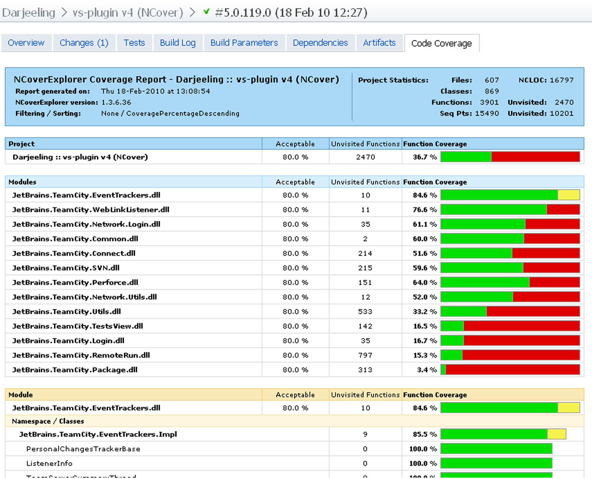
and all the champions so someone can answer any questions that arise. Set up a bigscreen LCD that’s always showing, in big bold graphics, the status of the builds, what’s currently running, and what’s failing. Put that in a visible place where all developers can see, in a well-trafficked corridor, for example, or at the top of the team room main wall.
Your aim in using these charts is to connect with two groups:
■ The group undergoing the change—People in this group will gain a greater feeling of accomplishment and pride as the charts (which are open to everyone) are updated, and they’ll feel more compelled to complete the process because it’s visible to others. They’ll also be able to keep track of how they’re doing compared to other groups. They may push harder knowing that another group implemented specific practices more quickly.
■ Those in the organization who aren’t part of the process—You’re raising interest and curiosity among these people, triggering conversations and buzz, and creating a current that they can join if they choose.
9.2.5 Aiming for specific goals
Without goals, the change will be hard to measure and to communicate to others. It will be a vague “something” that can easily be shut down at the first sign of trouble.
Here are some goals you might want to consider:
A study by Boris Beizer showed that developers who write tests and don’t use code-coverage tools or other techniques to test code coverage will be naïvely optimistic about the coverage they gained from the tests. Another study, from Peer Reviews in Software: A Practical Guide (Addison-Wesley Professional, 2001) by Karl Wiegers, suggests that testing without code-coverage tools may result in coverage of only about 50% to 60% of the code. (There’s much anecdotal evidence that by using TDD, you can get up to 95% or even 100% code coverage for logical code.)
A simple goal to measure is the percentage of the code covered by the tests. The more coverage, the better chance of finding bugs. It’s not a silver bullet, though. You could easily have close to 100% code coverage with bad tests that don’t mean anything. Low coverage is a bad sign; high coverage is a possible sign that things are better.
What you really want is high coverage along with continuous code and test reviews (as I explained earlier in this chapter). This way, you make sure tests aren’t just written to satisfy coverage requirements (no asserts, for example) but are actually meaningful.
NOTE The study by Boris Beizer is discussed in Mark Johnson’s article, “Dr. Boris Beizer on Software Testing: An Interview. Part I,” in The Software QA Quarterly (summer 1994). The other study is discussed in Peer Reviews in Software: A Practical Guide.
■ Increase the amount of test-code coverage relative to the amount of code churn. Some production systems will allow you to measure the amount of code churnhow many lines of code were changed between builds. The fewer lines of code changed, the fewer bugs you’re likely to have introduced into a system. Calculating this isn’t always practical, particularly in systems where you do a lot of code generation as part of the build process, but you can solve this by ignoring generated code. One system that allows you to measure code churn is Microsoft’s Team System. (See Microsoft’s “Analyze and Report on Code Churn and Code Coverage Using the Code Churn and Run Coverage Perspectives” at http://msdn.microsoft.com/en-us/library/vstudio/ms244661.aspx.)
■ Reduce the amount of bug reopening. It’s easy to fix one thing and mistakenly break something else. If this doesn’t happen often, it’s a sign that you’re able to fix things and maintain the system without breaking previous assumptions.
Ways to fail 197
■ Reduce the average bug-fixing time (the time from bug opened to bug closed). A system with good tests and coverage will usually allow you to fix things more quickly (assuming the tests are written in a maintainable manner). That, in turn, means better turnaround times and release cycles that are less stressful.
In Code Complete (Microsoft Press, 2nd edition, 2004), Steve McConnell outlines several metrics you can use to test progress. They include the following:
■ The number of defects found per class by priority
■ The number of defects per routine number of testing hours per bug found
■ The average number of defects per test case
I highly recommend reading chapter 22 of McConnell’s book, which deals with developer testing.
9.2.6 Realizing that there will be hurdles There are always hurdles. Most will come from within the organizational structure, and some will be technical. The technical ones are easier to fix, because it’s a matter of finding the right solution. The organizational ones need care and attention and a psychological approach.
It’s important not to surrender to a feeling of temporary failure when an iteration goes bad, tests go slower than expected, and so on. It’s sometimes hard to get going, and you’ll need to persist for at least a couple of months to start feeling comfortable with the new process and to iron out all the kinks. Have management commit to continuing for at least three months even if things don’t go as planned. It’s important to get their agreement up front. You don’t want to be running around trying to convince people in the middle of a stressful first month.
Also, absorb this short realization, shared by Tim Ottinger on Twitter (@Tottinge): “If your tests don’t catch all defects, they still make it easier to fix the defects they didn’t catch. It is a profound truth.”
Now that we’ve looked at ways of ensuring things go right, let’s look at some things that can lead to failure.
9.3 Ways to fail In the preface to this book, I talked about one project I was involved with that failed, partly because unit testing wasn’t implemented correctly. That’s one way you can fail a project. I’ve listed several others here, along with one that cost me that project, and some things that can be done about them.
9.3.1 Lack of a driving force In all the places where I’ve seen change fail, the lack of a driving force was the most powerful factor in play. Being a consistent driving force of change has its price. It will take time away from your normal job to teach others, help them, and wage internal political wars for change. You need to be willing to surrender the time you have for
these tasks, or the change won’t happen. Bringing in an outside person, as mentioned in section 9.2.3, will help you in your quest for a consistent driving force.
9.3.2 Lack of political support
If your boss explicitly tells you not to make the change, there isn’t a whole lot you can do, besides trying to convince management to see what you see. But sometimes the lack of support is much more subtle than that, and the trick is to realize that you’re facing opposition.
For example, you may be told, “Sure, go ahead and implement those tests. We’re adding 10% to your time to do this.” Anything below 30% isn’t realistic for beginning a unit testing effort. This is one way a manager may try to stop a trend—by choking it out of existence.
You need to recognize that you’re facing opposition, but once you do, it’s easy to identify. When you tell them that their limitations aren’t realistic, you’ll be told, “So don’t do it.”
9.3.3 Bad implementations and first impressions
If you’re planning to implement unit testing without prior knowledge of how to write good unit tests, do yourself one big favor: involve someone who has experience, and follow best practices (such as those outlined in this book).
I’ve seen developers jump into the deep water without a proper understanding of what to do or where to start, and it’s not a good place to be. Not only will it take a huge amount of time to learn how to make changes that are acceptable for your situation, but you’ll also lose a lot of credibility along the way for starting out with a bad implementation. This can lead to the pilot project being shut down.
If you read this book’s preface, you’ll know that this happened to me. You have only a couple of months to get things up to speed and convince the higher-ups that you’re achieving results. Make that time count, and remove any risks that you can. If you don’t know how to write good tests, read a book or get a consultant. If you don’t know how to make your code testable, do the same. Don’t waste time reinventing testing methods.
9.3.4 Lack of team support
If your team doesn’t support your efforts, it will be nearly impossible to succeed, because you’ll have a hard time consolidating your extra work on the new process with your regular work. You should strive to have your team be part of the new process or at least not interfere with it.
Talk to your team members about the changes. Getting their support one by one is sometimes a good way to start, but talking to them as a group about your efforts—and answering their hard questions—can also prove valuable. Whatever you do, don’t take the team’s support for granted. Make sure you know what you’re getting into; these are the people you have to work with on a daily basis.
Influence factors 199
Regardless of how you proceed, you’re going to be asked tough questions about unit testing. The following questions and answers will help prepare you for your discussions with people who can make or break your agenda for change.
9.4 Influence factors One of the things I find fascinating even more than unit tests is people and why they behave they way they do. It can be very frustrating to try to get someone to start doing something (like TDD, for example), and regardless of your best efforts, they just don’t do it. You may have already tried reasoning with them, but you see they just don’t do anything about your little talk.
A great book about the subject of influence is Influencer: The Power to Change Anything (McGraw-Hill, 2007) by Kerry Patterson, Joseph Grenny, David Maxfield, Ron McMillan, and Al Switzler. You can find a link to it at http://5whys.com/recommendedbooks/. The mantra of that book is a profound one: For every behavior that you seethe world is perfectly designed for that behavior to happen. That means that there are other factors except the person wanting to do something or being able to do it that influence their behavior. Yet, we rarely look beyond those two factors.
The book exposes us to six influence factors:
Personal ability Does the person have all the skills or knowledge to perform what is required?
Personal motivation Does the person take satisfaction from the right behavior or dislike the wrong behavior? Do they have the self-control to engage in the behavior when it’s hardest to do so?
Social ability Do you or others provide the help, information, and resources required by that person, particularly at critical times?
Social motivation Are the people around them actively encouraging the right behavior and discouraging the wrong behavior? Are you or others modeling the right behavior in an effective way?
Structural (environmental) ability Are there aspects in the environment (building, budget, and so on) that make the behavior convenient, easy, and safe? Are there enough cues and reminders to stay on course?
Structural motivation Are there clear and meaningful rewards (such as pay, bonuses, or incentives) when you or others behave the right or wrong way? Do short-term rewards match the desired long-term results and behaviors you want to reinforce or want to avoid?
Consider this a short checklist to start understanding why things aren’t going your way. Then consider another important fact: there might be more than one factor in play. For the behavior to change, you should change all the factors in play. If you change just one, the behavior won’t change.
Here’s an example of an imaginary checklist I’ve made about someone not performing TDD. (Keep in mind that this differs for each person in each organization.)
Personal ability Does the person have all the skills or knowledge to perform what is required?
Personal motivation Does the person take satisfaction from the right behavior or dislike the wrong behavior? Do they have the self-control to engage in the behavior when it’s hardest to do so?
Social ability Do you or others provide the help, information, and resources required by that person, particularly at critical times?
Social motivation Are the people around them actively encouraging the right behavior and discouraging the wrong behavior? Are you or others modeling the right behavior in an effective way?
Structural (environmental) ability
Are there aspects in the environment (building, budget, and so on) that make the behavior convenient, easy, and safe? Are there enough cues and reminders to stay on course?
Structural motivation Are there clear and meaningful rewards (such as pay, bonuses, or incentives) when you or others behave the right or wrong way? Do short-term rewards match the desired long-term results and behaviors you want to reinforce or want to avoid?
Yes. They went through a three-day TDD course with Roy Osherove.
I spoke with them and they like doing TDD.
Yes.
As much as possible.
* They don’t have a budget for a build machine.
* When they try to spend time unit testing, their managers tell them they’re wasting time. If they ship early and crappy, they get a bonus.
I put asterisks next to the items in the right column that require work. Here I’ve identified two issues that need to be resolved. Solving only the build machine budget problem won’t change the behavior. They have to get a build machine and deter their managers from giving a bonus on shipping crappy stuff quickly.
I write much more on this stuff in Notes to a Software Team Leader, a book about running a technical team. You can find it at 5whys.com.
9.5 Tough questions and answers
This section covers some questions I’ve come across in various places. They usually arise from the premise that implementing unit testing can hurt someone personally—a manager concerned about their deadlines or a QA employee concerned about their relevancy. Once you understand where a question is coming from, it’s important to address the issue, directly or indirectly. Otherwise, there will always be subtle resistance.
9.5.1 How much time will unit testing add to the current process? Team leaders, project managers, and clients are the ones who usually ask how much time unit testing will add to the process. They’re the people at the front lines in terms of timing.
Let’s begin with some facts. Studies have shown that raising the overall code quality in a project can increase productivity and shorten schedules. How does this match up with the fact that writing tests makes coding slower? Through maintainability and the ease of fixing bugs, mostly.
NOTE For studies on code quality and productivity, see Programming Productivity (McGraw-Hill College, 1986) and Software Assessments, Benchmarks, and Best Practices (Addison-Wesley Professional, 2000). Both are by Capers Jones.
When asking about time, team leaders may really be asking, “What should I tell my project manager when we go way past our due date?” They may actually think the process is useful but are looking for ammunition for the upcoming battle. They may also be asking the question not in terms of the whole product but in terms of specific feature sets or functionality.
A project manager or customer who asks about timing, on the other hand, will usually be talking in terms of full product releases.
Because different people care about different scopes, your answers may vary. For example, unit testing can double the time it takes to implement a specific feature, but the overall release date for the product may actually be reduced. To understand this, let’s look at a real example I was involved with.
A TALE OF TWO FEATURES
A large company I consulted with wanted to implement unit testing in their process, beginning with a pilot project. The pilot consisted of a group of developers adding a new feature to a large existing application. The company’s main livelihood was in creating this large billing application and customizing parts of it for various clients. The company had thousands of developers around the world.
The following measures were taken to test the pilot’s success:
■ The time the team spent on each of the development stages
■ The overall time for the project to be released to the client
■ The number of bugs found by the client after the release
The same statistics were collected for a similar feature created by a different team for a different client. The two features were nearly the same size, and the teams were roughly at the same skill and experience level. Both tasks were customization effortsone with unit tests, the other without. Table 9.1 shows the differences in time.
Stage |
Team without tests |
Team with tests |
Implementation (coding) Integration |
7 days 7 days |
14 days 2 days |
Stage |
Team without tests |
Team with tests |
|---|---|---|
Testing and bug fixing |
Testing, 3 days Fixing, 3 days Testing, 3 days Fixing, 2 days Testing, 1 day Total: 12 days |
Testing, 3 days Fixing, 1 day Testing, 1 day Fixing, 1 day Testing, 1 day Total: 9 days |
Overall release time |
26 days |
24 days |
Bugs found in production |
71 |
11 |
Overall, the time to release with tests was less than without tests. Still, the managers on the team with unit tests didn’t initially believe the pilot would be a success because they only looked at the implementation (coding) statistic (the first row in table 9.1) as the criteria for success, instead of the bottom line. It took twice the amount of time to code the feature (because unit tests require you to write more code). Despite this, the extra time was more than compensated for when the QA team found fewer bugs to deal with.
That’s why it’s important to emphasize that although unit testing can increase the amount of time it takes to implement a feature, the overall time requirements balance out over the product’s release cycle because of increased quality and maintainability.
9.5.2 Will my QA job be at risk because of unit testing?
Unit testing doesn’t eliminate QA-related jobs. QA engineers will receive the application with full unit test suites, which means they can make sure all the unit tests pass before they start their own testing process. Having unit tests in place will actually make their job more interesting. Instead of doing UI debugging (where every second button click results in an exception of some sort), they’ll be able to focus on finding more logical (applicative) bugs in real-world scenarios. Unit tests provide the first layer of defense against bugs, and QA work provides the second layer—the user’s acceptance layer. As with security, the application always needs to have more than one layer of protection. Allowing the QA process to focus on the larger issues can produce better applications.
In some places, QA engineers write code, and they can help write unit tests for the application. That happens in conjunction with the work of the application developers and not instead of it. Both developers and QA engineers can write unit tests.
9.5.3 How do we know unit tests are actually working?
To determine whether your unit testing is working, create a metric of some sort, as discussed in section 9.2.5. If you can measure it, you’ll have a way to know; plus, you’ll feel it.
Figure 9.2 An example test-code-coverage trend report
Figure 9.2 shows a sample test-code-coverage report (coverage per build). Creating a report like this, by running a tool like NCover for .NET automatically during the build process, can demonstrate progress in one aspect of development.
Code coverage is a good starting point if you’re wondering whether you’re missing unit tests.
9.5.4 Is there proof that unit testing helps? There aren’t any specific studies unit tests on whether unit testing helps achieve better code quality that I can point to. Most related studies talk about adopting specific agile methods, with unit testing being just one of them. Some empirical evidence can be gleaned from the web, of companies and colleagues having great results and never wanting to go back to a code base without tests.
A few studies on TDD can be found at http://biblio.gdinwiddie.com/biblio/StudiesOfTestDrivenDevelopment.
9.5.5 Why is the QA department still finding bugs? The job of a QA engineer is to find bugs at many different levels, attacking the application from many different approaches. Usually a QA engineer will perform integrationstyle testing, which can find problems that unit tests can’t. For example, the way different components work together in production may point out bugs even though the individual components pass unit tests (which work well in isolation). In addition, a QA engineer may test things in terms of use cases or full scenarios that unit tests usually won’t cover. That approach can discover logical bugs or acceptance-related bugs and is a great help to ensuring better project quality.
A study by Glenford Myre showed that developers writing tests were not really looking for bugs, and so they found only half to two-thirds of the bugs in an application. Broadly, that means there will always be jobs for QA engineers, no matter what. Although
that study is over 34 years old, I think the same mentality holds today, which makes the results still relevant, at least for me.
NOTE Glenford Myre’s study is discussed in “A controlled experiment in program testing and code walkthroughs/inspections,” in Communications of the ACM 21, no. 9 (September 1979), 760–69.
9.5.6 We have lots of code without tests: where do we start? Studies conducted in the 1970s and 1990s showed that, typically, 90% of the bugs are found in 20% of the code. The trick is to find the code that has the most problems. More often than not, any team can tell you which components are the most problematic. Start there. You can always add some metrics, as discussed in section 9.2.5, relating to the number of bugs per class.
NOTE Studies that show 90% of the bugs being in 20% of the code include the following: Albert Endres, “An analysis of errors and their causes in system programs,” IEEE Transactions on Software Engineering 2 (June 1975), 140–49; Lee L. Gremillion, “Determinants of program repair maintenance requirements,” Communications of the ACM 27, no. 9 (August 1994), 926–32; Barry W. Boehm, “Industrial software metrics top 10 list,” IEEE Software 4, no. 9 (September 1997), 94–95; and Shull and others, “What we have learned about fighting defects,” Proceedings of the 9th International Symposium on Software Metrics (2002), 249–59.
Testing legacy code requires a different approach than when writing new code with tests. See chapter 10 for more details.
9.5.7 We work in several languages: is unit testing feasible? Sometimes tests written in one language can test code written in other languages, especially if it’s a .NET mix of languages. You can write tests in C# to test code written in VB.NET, for example. Sometimes each team writes tests in the language they develop in: C# developers can write tests in C# using one of the many frameworks available (MSTest, NUnit as first examples), and C++ developers can write tests using one of the C++-oriented frameworks, such as CppUnit. I’ve also seen solutions where people who write C++ code would write managed C++ wrappers around it and write tests in C# against those managed C++ wrappers, which made things easier to write and maintain.
9.5.8 What if we develop a combination of software and hardware? If your application is made of a combination of software and hardware, you need to write tests for the software. Chances are you already have some sort of hardware simulator, and the tests you write can take advantage of this. It may take a little more work, but it’s definitely possible, and companies do this all the time.
Summary 205
9.5.9 How can we know we don’t have bugs in our tests? You need to make sure your tests fail when they should and pass when they should. TDD is a great way to make sure you don’t forget to check those things. See chapter 1 for a short walk-through of TDD.
9.5.10 My debugger shows that my code works; why do I need tests? Debuggers don’t help with multithreaded code much. Also, you may be sure your code works fine, but what about other people’s code? How do you know it works? How do they know your code works and that they haven’t broken anything when they make changes? Remember that coding is the first step in the life of the code. Most of its life, the code will be in maintenance mode. You need to make sure it will tell people when it breaks, using unit tests.
A study held by Curtis, Krasner, and Iscoe showed that most defects don’t come from the code itself but result from miscommunication between people, requirements that keep changing, and a lack of application domain knowledge. Even if you’re the world’s greatest coder, chances are that if someone tells you to code the wrong thing, you’ll do it. And when you need to change it, you’ll be glad you have tests for everything else to make sure you don’t break it.
NOTE The study by Bill Curtis, H. Krasner, and N. Iscoe is “A field study of the software design process for large systems,” Communications of the ACM 31, no. 11 (November 1999), 1269–97.
9.5.11 Must we do TDD-style coding? TDD is a style choice. I personally see a lot of value in TDD, and many people find it productive and beneficial, but others find that writing the tests after the code is good enough for them. You can make your own choice.
If this question arises from a fear of too much change happening at once, the learning process can be broken up into several intermediate steps:
■ Learn unit testing from books such as this, and use tools such as Typemock Isolator or JMockIt so that you don’t have to worry about design aspects while testing.
■ Learn good design techniques, such as SOLID (which is discussed in chapter 11.).
■ Learn to do test-driven development. (A good book is Test-Driven Development: By Example, by Kent Beck.)
This approach makes learning easier, and you can get started more quickly with less loss of time to the project.
9.6 Summary Implementing unit testing in the organization is something that many readers of this book will have to face at one time or another. Be prepared. Make sure you have good
answers to the questions you’re likely to be asked. Make sure that you don’t alienate the people who can help you. Make sure you’re ready for what could be an uphill battle. Understand the forces of influence.
In the next chapter, we’ll take a look at legacy code and examine tools and techniques for working with it.
This chapter covers
■ Examining common problems with legacy code
■ Deciding where to begin writing tests
■ Surveying helpful tools for working with legacy code
I once consulted for a large development shop that produced billing software. They had over 10,000 developers and mixed .NET, Java, and C++ in products, subproducts, and intertwined projects. The software had existed in one form or another for over five years, and most of the developers were tasked with maintaining and building on top of existing functionality.
My job was to help several divisions (using all languages) learn TDD techniques. For about 90% of the developers I worked with, this never became a reality for several reasons, some of which were a result of legacy code:
■ It was difficult to write tests against existing code.
■ It was next to impossible to refactor the existing code (or there wasn’t enough time to do it).
■ Some people didn’t want to change their designs.
207
■ Tooling (or lack of tooling) was getting in the way.
■ It was difficult to determine where to begin.
Anyone who’s ever tried to add tests to an existing system knows that most such systems are almost impossible to write tests for. They were usually written without proper places in the software (seams) to allow extensions or replacements to existing components.
There are several problems that need to be addressed when dealing with legacy code:
■ There’s so much work, where should you start to add tests? Where should you focus your efforts?
■ How can you safely refactor your code if it has no tests to begin with?
■ What tools can you use with legacy code?
This chapter will tackle these tough questions associated with approaching legacy code bases by listing techniques, references, and tools that can help.
10.1 Where do you start adding tests? Assuming you have existing code inside components, you’ll need to create a priority list of components for which testing makes the most sense. There are several factors to consider that can affect each component’s priority:
■ Logical complexity—This refers to the amount of logic in the component, such as nested ifs, switch cases, or recursion. Tools for checking cyclomatic complexity can also be used to determine this.
■ Dependency level—This refers to the number of dependencies in the component. How many dependencies do you have to break in order to bring this class under test? Does it communicate with an outside email component, perhaps, or does it call a static log method somewhere?
■ Priority—This is the component’s general priority in the project.
You can give each component a rating for these factors, from 1 (low priority) to 10 (high priority).
Table 10.1 shows classes with ratings for these factors. I call this a test-feasibility table.
Component |
Logical complexity |
Dependency level |
Priority |
Notes |
Utils Person |
62 |
1 1 |
5 1 |
This utility class has few dependencies but contains a lot of logic. It will be easy to test, and it provides lots of value. This is a data-holder class with little logic and no dependencies. There’s some (small) real value in testing this. |
Choosing a selection strategy 209
Component |
Logical complexity |
Dependency level |
Priority |
Notes |
TextParser ConfigManager |
8 1 |
4 6 |
6 1 |
This class has lots of logic and lots of dependencies. To top it off, it’s part of a high-priority task in the project. Testing this will provide lots of value but will also be hard and time consuming. This class holds configuration data and reads files from disk. It has little logic but many dependencies. Testing it will provide little value to the project and will also be hard and time consuming. |
From the data in table 10.1, you can create the diagram shown in figure 10.1, which graphs your components by the amount of value to the project and number of dependencies.
You can safely ignore items that are below your designated threshold of logic (which I usually set at 2 or 3), so Person and ConfigManager can be ignored. You’re left with only the top two components from figure 10.1.
There are two basic ways to look at the graph and decide what you’d like to test first (see figure 10.2):
■ Choose the one that’s more complex and easier to test (top left).
■ Choose the one that’s more complex and harder to test (top right).
The question now is what path you should take. Should you start with the easy stuff or the hard stuff?
10.2 Choosing a selection strategy As the previous section explained, you can start with the components that are easy to test or the ones that are hard to test (because they have many dependencies). Each strategy presents different challenges.
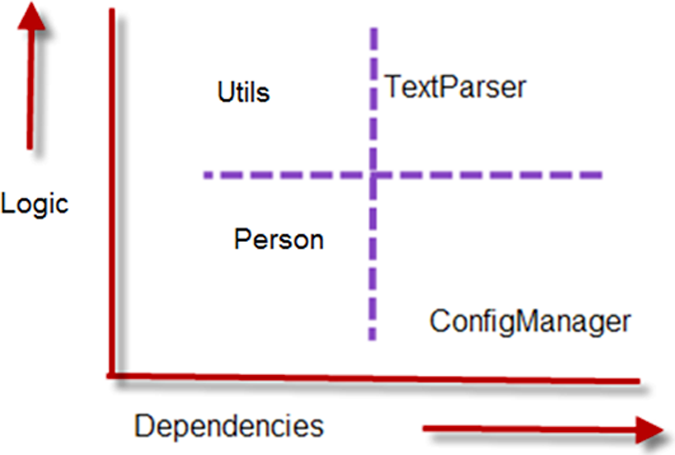
Figure 10.1 Mapping components for test feasibility
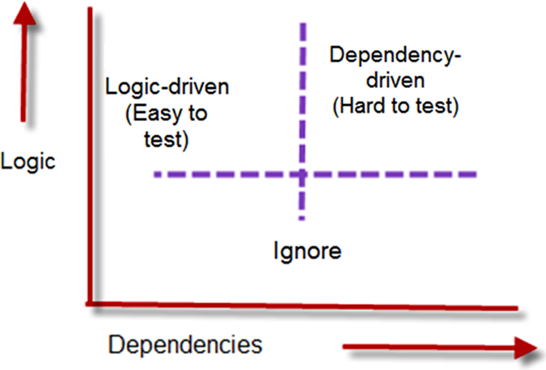
Figure 10.2 Easy, hard, and irrelevant component mapping based on logic and dependencies
10.2.1 Pros and cons of the easy-first strategy Starting out with the components that have fewer dependencies will make writing the tests initially much quicker and easier. But there’s a catch, as figure 10.3 demonstrates.
Figure 10.3 shows how long it takes to bring components under test during the lifetime of the project. Initially it’s easy to write tests, but as time goes by, you’re left with components that are increasingly harder and harder to test, with the particularly tough ones waiting for you at the end of the project cycle, just when everyone is stressed about pushing a product out the door.
If your team is relatively new to unit testing techniques, it’s worth starting with the easy components. As time goes by, the team will learn the techniques needed to deal with the more complex components and dependencies.
For such a team, it may be wise to initially avoid all components over a specific number of dependencies (with four being a reasonable limit).
10.2.2 Pros and cons of the hard-first strategy Starting with the more difficult components may seem like a losing proposition to begin with, but it has an upside, as long as your team has experience with unit testing techniques.
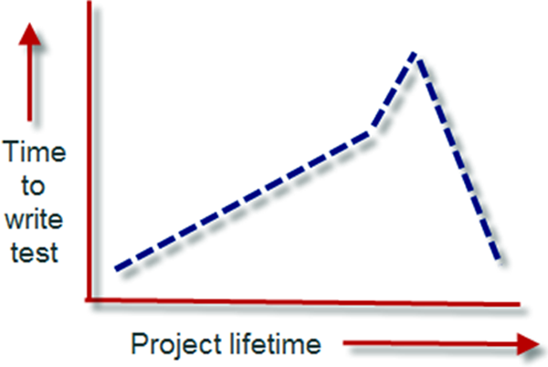
Figure 10.3 When starting with the easy components, the time required to test components increases more and more until the hardest components are done.
Figure 10.4 When you use a hard-first strategy, the time required to test components is initially high, but then decreases as more dependencies are refactored away.
Figure 10.4 shows the average time to write a test for a single component over the lifetime of the project, if you start testing the components with the most dependencies first.
With this strategy, you could be spending a day or more to get even the simplest tests going on the more complex components. But notice the quick decline in the time required to write the test relative to the slow incline in figure 10.3. Every time you bring a component under test and refactor it to make it more testable, you may also be solving testability issues for the dependencies it uses or for other components. Specifically because that component has lots of dependencies, refactoring it can improve things for other parts of the system. That’s the reason for the quick decline.
The hard-first strategy is only possible if your team has experience in unit testing techniques, because it’s harder to implement. If your team does have experience, use the priority aspect of components to choose whether to start with the hard or
Writing integration tests before refactoring 211
easy components first. You might want to choose a mix, but it’s important that you know in advance how much effort will be involved and what the possible consequences are.
10.3 Writing integration tests before refactoring
If you do plan to refactor your code for testability (so you can write unit tests), a practical way to make sure you don’t break anything during the refactoring phase is to write integration-style tests against your production system.
I consulted on a large legacy project, working with a developer who needed to work on an XML configuration manager. The project had no tests and was hardly testable. It was also a C++ project, so we couldn’t use a tool like Typemock Isolator to isolate components without refactoring the code.
The developer needed to add another value attribute into the XML file and be able to read and change it through the existing configuration component. We ended up writing a couple of integration tests that used the real system to save and load configuration data and that asserted on the values the configuration component was retrieving and writing to the file. Those tests set the “original” working behavior of the configuration manager as our base of work.
Next, we wrote an integration test that showed that once the component was reading the file, it contained no attribute in memory with the name we were trying to add. We proved that the feature was missing, and we now had a test that would pass once we added the new attribute to the XML file and correctly wrote to it from the component.
Once we wrote the code that saved and loaded the extra attribute, we ran the three integration tests (two tests for the original base implementation and a new one that tried to read the new attribute). All three passed, so we knew that we hadn’t broken existing functionality while adding the new functionality.
As you can see, the process is relatively simple:
■ Add one or more integration tests (no mocks or stubs) to the system to prove the original system works as needed.
■ Refactor or add a failing test for the feature you’re trying to add to the system.
■ Refactor and change the system in small chunks, and run the integration tests as often as you can, to see if you break something.
Sometimes, integration tests may seem easier to write than unit tests, because you don’t need to mess with DI. But making those tests run on your local system may prove annoying or time consuming because you have to make sure every little thing the system needs is in place.
The trick is to work on the parts of the system that you need to fix or add features to. Don’t focus on the other parts. That way, the system grows in the right places, leaving other bridges to be crossed when you get to them.
As you continue adding more and more tests, you can refactor the system and add more unit tests to it, growing it into a more maintainable and testable system. This takes time (sometimes months and months), but it’s worth it.
Did I mention that you need to have good tools? Let’s look at some of my favorites.
10.4 Important tools for legacy code unit testing Here are a few tips on tools that can give you a head start if you’re doing any testing on existing code in .NET:
■ Isolate dependencies easily with JustMock or Typemock Isolator.
■ Use JMockit for Java legacy code.
■ Use Vise while refactoring your Java code.
■ Use FitNesse for acceptance tests before you refactor.
■ Read Michael Feathers’s book on legacy code.
■ Use NDepend to investigate your production code.
■ Use ReSharper to navigate and refactor your production code more easily.
■ Detect duplicate code (and bugs) with Simian and TeamCity.
Let’s look at each of these in more detail.
10.4.1 Isolate dependencies easily with unconstrained isolation frameworks Unconstrained frameworks such as Typemock Isolator were introduced in chapter 6. What makes such frameworks uniquely suited for this challenge is their ability to fake dependencies in production code without needing to refactor it at all, saving valuable time in bringing a component under test, initially.
NOTE Full disclosure: while writing the first edition of this book, I also worked as a developer at Typemock on a different product. I also helped design the API in Isolator 5.0. I stopped working at Typemock in December 2010.
Why Typemock and not Microsoft Fakes?
Although Microsoft Fakes is free, and Isolator and JustMock are not, I believe using Microsoft Fakes will create a very big batch of unmaintainable test code in your project, because its design and usage (code generation, and delegates all over the place) lead to a very fragile API that’s hard to maintain. This problem is even mentioned in an ALM Rangers document about Microsoft Fakes, which can be found at http://vsartesttoolingguide.codeplex.com/releases/view/102290. There, it states that “if you refactor your code under test, the unit tests you have written using Shims and Stubs from previously generated Fakes assemblies will no longer compile. At this time, there is no easy solution to this problem other than perhaps using a set of bespoke regular expressions to update your unit tests. Keep this in mind when estimating any refactoring to code that has been extensively unit tested. It may prove a significant cost.”
I’m going to use Typemock Isolator for the next examples, because it’s the framework I feel most comfortable with. Isolator (7.0 at the time of writing this book) uses the term fake and removes the words mock and stub from the API. Using this framework, you can “fake” interfaces, sealed and static types, nonvirtual methods, and static methods. This means you don’t need to worry about changing the design (which you may not have time for, or perhaps can’t for security reasons). You can start testing almost immediately. There’s also a free, constrained version of Typemock, so you can download this product and try it on your own. Just know that by default it’s constrained, so it will work only on standard testable code.
The listing that follows shows a couple of examples of using the Isolator API to fake instances of classes.
Listing 10.1 Faking static methods and creating fake classes with Isolator
[Test] public void FakeAStaticMethod() {
Isolate
.WhenCalled(()=>MyClass.SomeStaticMethod())
.WillThrowException(new Exception());
} [Test] public void FakeAPrivateMethodOnAClassWithAPrivateConstructor() {
ClassWithPrivateConstructor c =
Isolate.Fake.Instance<ClassWithPrivateConstructor>(); Isolate.NonPublic
.WhenCalled(c,"SomePrivateMethod").WillReturn(3); }
As you can see, the API is simple and clear, and it uses generics and delegates to return fake values. There’s also an API specifically dedicated for VB.NET that has a more VBcentric syntax. In both APIs, you don’t need to change anything in the design of your classes under test to make these tests work.
10.4.2 Use JMockit for Java legacy code JMockit or PowerMock is an open source project that uses the Java instrumentation APIs to do some of the same things that Typemock Isolator does in .NET. You don’t need to change the design of your existing project to isolate your components from their dependencies.
JMockit uses a swap approach. First, you create a manually coded class that will replace the class that acts as a dependency to your component under test (say you code a FakeDatabase class to replace a Database class). Then you use JMockit to swap calls from the original class to your own fake class. You can also redefine a class’s methods by defining them again as anonymous methods inside the test.
The next listing shows a sample of a test that uses JMockit.
Listing 10.2 Using JMockit to swap class implementations
public class ServiceATest extends TestCase { private boolean serviceMethodCalled; public static class MockDatabase {
static int findMethodCallCount; static int saveMethodCallCount;
public static void save(Object o) { assertNotNull(o); saveMethodCallCount++;
} public static List find(String ql, Object arg1) {
assertNotNull(ql); assertNotNull(arg1); findMethodCallCount++; return Collections.EMPTY_LIST;
}
} protected void setUp() throws Exception {
super.setUp(); MockDatabase.findMethodCallCount = 0; MockDatabase.saveMethodCallCount = 0; Mockit.redefineMethods(Database.class,
MockDatabase.class);
} public void testDoBusinessOperationXyz() throws Exception {
final BigDecimal total = new BigDecimal("125.40"); Mockit.redefineMethods(ServiceB.class,
new Object() {
public BigDecimal computeTotal(List items) {
assertNotNull(items); serviceMethodCalled = true; return total;
}
}); EntityX data = new EntityX(5, "abc", "5453-1"); new ServiceA().doBusinessOperationXyz(data); assertEquals(total, data.getTotal()); assertTrue(serviceMethodCalled); assertEquals(1, MockDatabase.findMethodCallCount); assertEquals(1, MockDatabase.saveMethodCallCount);
} }
JMockit is a good place to start when testing Java legacy code.
10.4.3 Use Vise while refactoring your Java code Michael Feathers wrote an interesting tool for Java that allows you to verify that you aren’t messing up the values that may change in your method while refactoring it. For example, if your method changes an array of values, you want to make sure that as you refactor you don’t screw up a value in the array.
The following listing shows an example of using the Vise.grip() method for such a purpose.
Listing 10.3 Using Vise in Java code to verify values aren’t changed while refactoring
import vise.tool.*; public class RPRequest {
... public int process(int level, RPPacket packet) {
if (...) { if (...) {
... } else {
... bar_args[1] += list.size(); Vise.grip(bar_args[1]); packet.add(new Subpacket(list, arrivalTime)); if (packet.calcSize() > 2)
bar_args[1] += 2;
Vise.grip(bar_args[1]); }
} else { int reqLine = -1; bar_args[0] = packet.calcSize(reqLine); Vise.grip(bar_args[0]);
...
} }
}
NOTE The code in listing 10.3 is copied with permission from www.artima
.com/weblogs/viewpost.jsp?thread=171323.
Vise forces you to add lines to your production code, and it’s there to support refactoring of the code. There’s no such tool for .NET, but it should be pretty easy to write one. Every time you call the Vise.grip() method, it checks whether the value of the passed-in variable is still what it’s supposed to be. It’s like adding an internal assert to your code, with a simple syntax. Vise can also report on all “gripped” items and their current values.
You can read about and download Vise free from Michael Feathers’s blog: www.artima.com/weblogs/viewpost.jsp?thread=171323.
10.4.4 Use acceptance tests before you refactor It’s a good idea to add integration tests to your code before you start refactoring it. FitNesse is one tool that helps create a suite of integration- and acceptance-style tests. Another one you might want to look into is Cucumber or SpecFlow. (You might need to know some Ruby to work with Cucumber. SpecFlow is native to .NET and is built to parse Cucumber scenarios.) FitNesse allows you to write integration-style tests (in Java or .NET) against your application, and then change or add to them easily without needing to write code.
Using the FitNesse framework involves three steps:
1 Create code adapter classes (called fixtures) that can wrap your production code and represent actions that a user might take against it. For example, if it were a banking application, you might have a bankingAdapter class that has withdraw and deposit methods.
2 Create HTML tables using a special syntax that the FitNesse engine recognizes and parses. These tables will hold the values that will be run during the tests. You write these tables in pages in a specialized wiki website that runs the FitNesse engine underneath, so that your test suite is represented to the outside world by a specialized website. Each page with a table (which you can see in any web browser) is editable like a regular wiki page, and each has a special Execute Tests button. These tables are then parsed by the testing runtime and translated into test runs.
3 Click the Execute Tests button on one of the wiki pages. That button invokes the FitNesse engine with the parameters in the table. Eventually, the engine calls your specialized wrapper classes that invoke the target application and asserts on return values from your wrapper classes.
Figure 10.5 shows an example FitNesse table in a browser. You can learn more about FitNesse at http://fitnesse.org/. For .NET integration with FitNesse, go to http://fitnesse .org/FitNesse.DotNet.
Personally, I’ve almost always found FitNesse a big bother to work with—the usability suffers a lot and it doesn’t work half the time, especially with .NET stuff. Cucumber might be worth looking into instead. It’s found at http://cukes.info/.
10.4.5 Read Michael Feathers’s book on legacy code
Working Effectively with Legacy Code, by Michael Feathers, is the only source I know that deals with the issues you’ll encounter with legacy code (other than this chapter). It shows many refactoring techniques and gotchas in depth that this book doesn’t attempt to cover. It’s worth its weight in gold. Get it.
10.4.6 Use NDepend to investigate your production code
NDepend is a relatively new commercial analyzer tool for .NET that can create visual representations of many aspects of your compiled assemblies, such as dependency
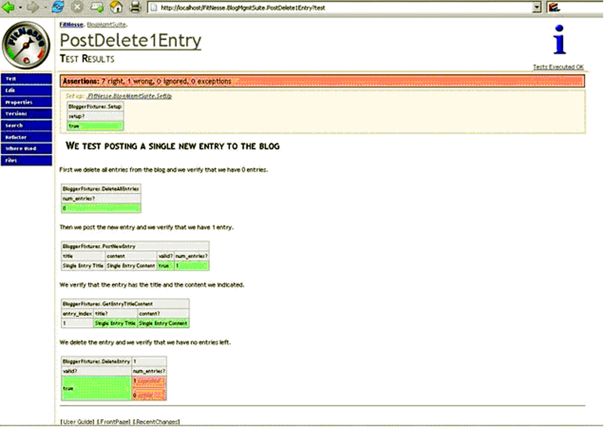
trees, code complexity, changes between the versions of the same assembly, and more. The potential of this tool is huge, and I recommend you learn how to use it.
NDepend’s most powerful feature is a special query language (called CQL) you can use against the structure of your code to find out various component metrics. For example, you could easily create a query that reports on all components that have a private constructor.
You can get NDepend from www.ndepend.com.
10.4.7 Use ReSharper to navigate and refactor production code
ReSharper is one of the best productivity-related plug-ins for VS.NET. In addition to powerful automated refactoring abilities (much more powerful than the ones built into Visual Studio 2008), it’s known for its navigation features. When jumping into an existing project, ReSharper can easily navigate the code base with shortcuts that allow you to jump from any point in the solution to any other point that might be related to it.
Here are examples of possible navigations:
■ When in a class or method declaration, you can jump to any inheritors of that class or method or jump up to the base implementation of the current member or class, if one exists.
■ You can find all uses of a given variable (highlighted in the current editor).
■ You can find all uses of a common interface or a class that implements it.
These and many other shortcuts make it much less painful to navigate and understand the structure of existing code.
ReSharper works on both VB.NET and C# code. You can download a trial version at www.jetbrains.com.
10.4.8 Detect duplicate code (and bugs) with Simian and TeamCity Let’s say you found a bug in your code, and you want to make sure that bug was not duplicated somewhere else.
TeamCity contains a built-in duplicates finder for .NET. Find more information on the TeamCity Duplicates finder at http://confluence.jetbrains.com/display/ TCD6/Duplicates+Finder+(.NET).
With Simian, it’s easy to track down code duplication and figure out how much work you have ahead of you, as well as refactor to remove duplication. Simian is a commercial product that works on .NET, Java, C++, and other languages. You can get Simian here: www.harukizaemon.com/simian/.
10.5 Summary In this chapter, I talked about how to approach legacy code for the first time. It’s important to map out the various components according to their number of dependencies, their amount of logic, and the project priority. Once you have that information, you can choose the components to work on based on how easy or how hard it will be to get them under test.
If your team has little or no experience in unit testing, it’s a good idea to start with the easy components and let the team’s confidence grow as they add more and more tests to the system. If your team is experienced, getting the hard components under test first can help you get through the rest of the system more quickly.
If your team doesn’t want to start refactoring code for testability, but only to start with unit testing out of the box, using unconstrained isolation frameworks will prove helpful because they allow you to isolate dependencies without changing the existing code’s design. Consider them when dealing with legacy .NET code. If you work with Java, consider JMockit or PowerMock for the same reasons.
I also covered a number of tools that can prove helpful in your journey to better code quality for existing code. Each of these tools can be used in different stages of the project, but it’s up to your team to choose when to use which tool (if any at all).
Finally, as a friend once said, a good bottle of vodka never hurts when dealing with legacy code.
This chapter covers
■ Benefiting from testability design goals
■ Weighing pros and cons of designing for testability
■ Tackling hard-to-test design
Changing the design of your code so that it’s more easily testable is a controversial issue for some developers. This chapter will cover the basic concepts and techniques for designing for testability. We’ll also look at the pros and cons of doing so and when it’s appropriate.
First, though, let’s consider why you would need to design for testability in the first place.
11.1 Why should I care about testability in my design?
The question is a legitimate one. When designing software, you learn to think about what the software should accomplish and what the results will be for the end user of the system. But tests against your software are yet another type of user. That user has strict demands for your software, but they all stem from one mechanical request: testability. That request can influence the design of your software in various ways, mostly for the better.
219
In a testable design, each logical piece of code (loops, ifs, switches, and so on) should be easy and quick to write a unit test against, one that demonstrates these properties:
■ Runs fast
■ Is isolated, meaning it can run independently or as part of a group of tests, and can run before or after any other test
■ Requires no external configuration
■ Provides a consistent pass/fail result
These are the FICC properties: fast, isolated, configuration-free, and consistent. If it’s hard to write such a test, or if it takes a long time to write it, the system isn’t testable.
If you think of tests as a user of your system, designing for testability becomes a way of thinking. If you were doing test-driven development, you’d have no choice but to write a testable system, because in TDD the tests come first and largely determine the API design of the system, forcing it to be something that the tests can work with.
Now that you know what a testable design is, let’s look at what it entails, go over the pros and cons of such design decisions, discuss alternatives to the testable design approach, and look at an example of hard-to-test design.
11.2 Design goals for testability There are several design points that make code much more testable. Robert C. Martin has a nice list of design goals for object-oriented systems that largely form the basis for the designs shown in this chapter. See his article, “Principles of OOD,” at http:// butunclebob.com/ArticleS.UncleBob.PrinciplesOfOod.
Most of the advice I include here is about allowing your code to have seams—places where you can inject other code or replace behavior without changing the original class. (Seams are often talked about in connection with the Open-Closed Principle, which is mentioned in Martin’s “Principles of OOD.”) For example, in a method that calls a web service, the web service API can hide behind a web service interface, allowing you to replace the real web service with a stub that will return whatever values you want or with a mock object. Chapters 3–5 discuss fakes, mocks, and stubs in detail.
Table 11.1 lists basic design guidelines and their benefits. The following sections will discuss them in more detail.
Design guideline |
Benefit(s) |
Make methods virtual by default. Use interface-based designs. |
This allows you to override the methods in a derived class for testing. Overriding allows for changing behavior or breaking a call to an external dependency. This allows you to use polymorphism to replace dependencies in the system with your own stubs or mocks. |
Table 11.1 Test design guidelines and benefits (continued)
Design guideline |
Benefit(s) |
Make classes nonsealed by default. Avoid instantiating concrete classes inside methods with logic. Get instances of classes from helper methods, factories, inversion of control containers such as Unity, or other places, but don’t directly create them. Avoid direct calls to static methods. Prefer calls to instance methods that later call statics. Avoid constructors and static constructors that do logic. Separate singleton logic from singleton holders. |
You can’t override anything virtual if the class is sealed (final in Java). This allows you to serve up your own fake instances of classes to methods that require them, instead of being tied down to working with an internal production instance of a class. This allows you to break calls to static methods by overriding instance methods. (You won’t be able to override static methods.) Overriding constructors is difficult to implement. Keeping constructors simple will simplify the job of inheriting from a class in your tests. If you have a singleton, have a way to replace its instance so you can inject a stub singleton or reset it. |
11.2.1 Make methods virtual by default Java makes methods virtual by default, but .NET developers aren’t so lucky. In .NET, to be able to replace a method’s behavior, you need to explicitly set it as virtual so you can override it in a default class. If you do this, you can use the Extract and Override method that I discussed in chapter 3.
An alternative to this method is to have the class invoke a custom delegate. You can replace this delegate from the outside by setting a property or sending in a parameter to a constructor or method. This isn’t a typical approach, but some system designers find this approach suitable. The following listing shows an example of a class with a delegate that can be replaced by a test.
Listing 11.1 A class that invokes a delegate that can be replaced by a test
public class MyOverridableClass {
public Func<int,int> calculateMethod=delegate(int i) {
return i*2; };
public void DoSomeAction(int input) {
int result = calculateMethod(input); if (result==-1) {
throw new Exception("input was invalid");
} //do some other work
} }
[Test] [ExpectedException(typeof(Exception))] public void DoSomething_GivenInvalidInput_ThrowsException() {
MyOverridableClass c = new MyOverridableClass(); int SOME_NUMBER=1;
//stub the calculation method to return "invalid" c.calculateMethod = delegate(int i) { return -1; };
c.DoSomeAction(SOME_NUMBER); }
Using virtual methods is handy, but interface-based designs are also a good choice, as the next section explains.
11.2.2 Use interface-based designs
Identifying “roles” in the application and abstracting them under interfaces is an important part of the design process. An abstract class shouldn’t call concrete classes, and concrete classes shouldn’t call concrete classes either, unless they’re data objects (objects holding data, with no behavior). This allows you to have multiple seams in the application where you could intervene and provide your own implementation.
For examples of interface-based replacements, see chapters 3–5.
11.2.3 Make classes nonsealed by default
Some people have a hard time making classes nonsealed by default because they like to have full control over who inherits from what in the application. The problem is that if you can’t inherit from a class, you can’t override any virtual methods in it.
Sometimes you can’t follow this rule because of security concerns, but following it should be the default, not the exception.
11.2.4 Avoid instantiating concrete classes inside methods with logic
It can be tricky to avoid instantiating concrete classes inside methods that contain logic because you’re so used to doing it. The reason for doing so is that later your tests might need to control what instance is used in the class under test. If there’s no seam that returns that instance, the task would be much more difficult unless you employ unconstrained isolation frameworks, such as Typemock Isolator. If your method relies on a logger, for example, don’t instantiate the logger inside the method. Get it from a simple factory method, and make that factory method virtual so that you can override it later and control what logger your method works against. Or use DI via a constructor instead of a virtual method. These and more injection methods are discussed in chapter 3.
11.2.5 Avoid direct calls to static methods
Try to abstract any direct dependencies that would be hard to replace at runtime. In most cases, replacing a static method’s behavior is difficult or cumbersome in a static language
like VB.NET or C#. Abstracting a static method away using the Extract and Override refactoring (shown in section 3.4 of chapter 3) is one way to deal with these situations.
A more extreme approach is to avoid using any static methods whatsoever. That way, every piece of logic is part of an instance of a class that makes that piece of logic more easily replaceable. Lack of replaceability is one of the reasons why some people who do unit testing or TDD dislike singletons; they act as a public shared resource that is static, and it’s hard to override them.
Avoiding static methods altogether may be too difficult, but trying to minimize the number of singletons or static methods in your application will make things easier for you while testing.
11.2.6 Avoid constructors and static constructors that do logic Things like configuration-based classes are often made static classes or singletons because so many parts of the application use them. That makes them hard to replace during a test. One way to solve this problem is to use some form of inversion of control (IoC) containers (such as Microsoft Unity, Autofac, Ninject, StructureMap, Spring.NET, or Castle Windsor—all open source frameworks for .NET).
These containers can do many things, but they all provide a common smart factory, of sorts, that allows you to get instances of objects without knowing whether the instance is a singleton or what the underlying implementation of that instance is. You ask for an interface (usually in the constructor), and an object that matches that type will be provided for you automatically, as your class is being created.
When you use an IoC container (also known as a DI container), you abstract away the lifetime management of an object type and make it easier to create an object model that’s largely based on interfaces, because all the dependencies in a class are automatically filled up for you.
Discussing containers is outside the scope of this book, but you can find a comprehensive list and some starting points in the article, “List of .NET Dependency Injection Containers (IOC)” on Scott Hanselman’s blog: http://www.hanselman.com/blog/ ListOfNETDependencyInjectionContainersIOC.aspx.
11.2.7 Separate singleton logic from singleton holders If you’re planning to use a singleton in your design, separate the logic of the singleton class and the logic that makes it a singleton (the part that initializes a static variable, for example) into two separate classes. That way, you can keep the single responsibility principle (SRP) and also have a way to override singleton logic.
For example, the next listing shows a singleton class, and listing 11.3 shows it refactored into a more testable design.
Listing 11.2 An untestable singleton design
public class MySingleton {
private static MySingleton _instance;
}
public static MySingleton Instance {
get {
if (_instance == null) {
_instance = new MySingleton();
} return _instance;
} }
Listing 11.3 The singleton class refactored into a testable design
public class RealSingletonLogic {
Newly testable logic
public void Foo() {
//lots of logic here }
} public class MySingletonHolder {
Singleton container
private static RealSingletonLogic _instance; public static RealSingletonLogic Instance {
get {
if (_instance == null) {
_instance = new RealSingletonLogic();
} return _instance;
} }
}
Now that we’ve gone over some possible techniques for achieving testable designs, let’s get back to the larger picture. Should you do it at all, and are there negative consequences of doing it?
11.3 Pros and cons of designing for testability
Designing for testability is a loaded subject for many people. Some believe that testability should be one of the default traits of designs, and others believe that designs shouldn’t “suffer” just because someone will need to test them.
The thing to realize is that testability isn’t an end goal in itself but is merely a byproduct of a specific school of design that uses the more testable object-oriented principles laid out by Robert C. Martin (mentioned at the beginning of section 11.2). In a design that favors class extensibility and abstractions, it’s easy to find seams for
Pros and cons of designing for testability 225
test-related actions. All the techniques shown in this chapter so far are very much aligned with Martin’s principles: classes whose behavior can be changed by inheriting and overriding, or by injecting an interface, are “open for extension, but closed for modification”—the Open-Closed Principle. Those classes usually also exhibit the DI principle and the IoC principle combined, to allow constructor injection. By using the Single-Responsibility Principle you can, for example, separate a singleton from its holding logic into a separate singleton holder class. Only the Liskov substitution principle remains alone in the corner, because I couldn’t think of a single example where breaking it also breaks testability. But the fact that your testable designs seem to be somehow correlating with the SOLID principles does not necessarily mean your design is good or that you have design skill. Oh no. Your design, most likely, like mine, could be better. Grab a good book about this subject like Domain-Driven Design: Tackling Complexity in the Heart of Software (Addison-Wesley Professional, 2003) by Eric Evans or Refactoring to Patterns (Addison-Wesley Professional, 2004) by Joshua Kerievsky. How about Clean Code by Robert Martin? Works too!
I find lots of badly designed, very testable code out there. Proof positive that TDD, without proper design knowledge, is not necessarily a good influence on design.
The question remains, is this the best way to do things? What are the cons of such a testability-driven design method? What happens when you have legacy code? And so on.
11.3.1 Amount of work
In most cases, it takes more work to design for testability than not because doing so usually means writing more code. Even Uncle Bob, in his lengthy and occasionally funny videos on http://cleancoders.com, likes to say (in a Sherlock Holmes voice, holding a pipe) that he starts out with simplistic designs that do the simplest thing, and then he refactors only when he sees the need for it.
You could argue that the extra design work required for testability points out design issues that you hadn’t considered and that you might have been expected to incorporate in your design anyway (separation of concerns, Single-Responsibility Principle, and so on).
On the other hand, assuming you’re happy with your design as is, it can be problematic to make changes for testability, which isn’t part of production. Again, you could argue that test code is as important as production code, because it exposes the API usage characteristics of your domain model and forces you to look at how someone will use your code.
From this point on, discussions of this matter are rarely productive. Let’s just say that more code, and work, is required when testability is involved, but that designing for testability makes you think about the user of your API more, which is a good thing.
11.3.2 Complexity
Designing for testability can sometimes feel a little (or a lot) like it’s overcomplicating things. You can find yourself adding interfaces where it doesn’t feel natural to use
interfaces or exposing class-behavior semantics that you hadn’t considered before. In particular, when many things have interfaces and are abstracted away, navigating the code base to find the real implementation of a method can become more difficult and annoying.
You could argue that using a tool such as ReSharper makes this argument obsolete, because navigation with ReSharper is much easier. I agree that it eases most of the navigational pains. The right tool for the right job can help a lot.
11.3.3 Exposing sensitive IP Many projects have sensitive intellectual property that shouldn’t be exposed but that designing for testability would force to be exposed: security or licensing information, for example, or perhaps algorithms under patent. There are workarounds for thiskeeping things internal and using the [InternalsVisibleTo] attribute—but they essentially defy the whole notion of testability in the design. You’re changing the design but still keeping the logic hidden. Big deal.
This is where designing for testability starts to melt down a bit. Sometimes you can’t work around security or patent issues. You have to change what you do or compromise on the way you do it.
11.3.4 Sometimes you can’t Sometimes there are political or other reasons for the design to be done a specific way, and you can’t change or refactor it (Soul Crushing Enterprise software projects, anyone?). Sometimes you don’t have the time to refactor your design, or the design is too fragile to refactor. This is another case where designing for testability breaks down—when the environment prevents you. It’s an example of the influence factors discussed in chapter 9.
Now that we’ve gone through some pros and cons, it’s time to consider alternatives to designing for testability.
11.4 Alternatives to designing for testability It’s interesting to look outside the box at other languages to see other ways of working.
In dynamic languages such as Ruby or Smalltalk, the code is inherently testable because you can replace anything and everything dynamically at runtime. In such a language, you can design the way you want without having to worry about testability. You don’t need an interface in order to replace something, and you don’t need to make something public to override it. You can even change the behavior of core types dynamically, and no one will yell at you or tell you that you can’t compile.
In a world where everything is testable, do you still design for testability? The expected answer is, of course, no. In that sort of world, you should be free to choose your own design.
11.4.1 Design arguments and dynamically typed languages
Interestingly enough, since 2010 there has been growing talk in the Ruby community, which I’ve also been part of, about SOLID (Single responsibility, Open-closed, Liskov substitution, Interface segregation, and Dependency inversion) design. “Just because you can, doesn’t mean you should” say some Rubyists, for example, Avdi Grimm, the author of Objects on Rails available at http://objectsonrails.com. You can find many blog posts ruminating about the state of design in the Rails community, such as http://jamesgolick.com/2012/5/22/objectify-a-better-way-to-build-rails-applications .html. Other Rubyists answer back with, “Don’t bother us with this overengineering crap.” Most notably, David Heinemeier Hansson, a.k.a. DHH, the initial creator of the Ruby on Rails framework, answers in a blog post “Dependency injection is not a virtue” at http://david.heinemeierhansson.com/2012/dependency-injection-is-not-avirtue.html.
Then fun ensues on Twitter, as you can imagine. The funny thing about these kinds of discussions is just how much they remind me of the same types of discussions that ensued around 2008–2009 in the .NET community and specifically the recently deceased ALT.NET community. (Most of the ALT.NET folks discovered Ruby or Node.js and moved on from .NET, only to come back a year later and do .NET on the side “for the money.” Guilty!) The big difference here is that this is Ruby we’re talking about. In the .NET community, there was at least a shred of half-baked evidence that seemed to back the side of the “Let’s design SOLID” folks: you couldn’t test your designs without having open/closed classes, for example, because the compiler would thump your head if you even tried. So all the design folks said, “See? The compiler is trying to tell you your design sucks,” which in retrospect is rather silly, because many testable designs still seem to be overly sucky, albeit testable. Now, here come some Ruby people and say they want to use SOLID principles? Why on earth would they want to do that?
It seems that there are some extra benefits to using SOLID: code is more easily maintained and understood, which in the Ruby world can be a very big problem. Sometimes it’s a bigger problem for Ruby than statically typed languages, because in Ruby you can have dynamic code calling all sorts of nasty hidden redirected code underneath, and you can end up in a world of hurt when that happens. Tests help, but only to a degree.
Anyway, what was my point? It was that initially, people didn’t even try to make the design in Ruby software testable because the code was already testable. Things were just fine, and then they discovered ideas about the design of code; this implies that design is a separate activity, with different consequences than just simple testabilityrelated code refactoring.
Back to .NET and statically typed languages: consider a .NET-related analogy that shows how using tools can change the way you think about problems and sometimes make big problems a non-issue. In a world where memory is managed for you, do you still design for memory management? Mostly, “no” would be the answer. If you’re
working in languages where memory isn’t managed for you (C++, for example), you need to worry about and design for memory optimization and collection, or the application will suffer. This doesn’t stop you from having properly designed code, but memory management isn’t the reason for it. Code readability, usability, and other values drive it. You don’t use a straw man in your design arguments to design your code, because you might be leaning on the wrong stick to make your case (too many analogies? I know. It’s like…oh, never mind).
In the same way, by following testable, object-oriented design principles, you might get testable designs as a by-product, but testability shouldn’t be a goal in your design. It’s there to solve a specific problem. If a tool comes along that solves the testability problem for you, there’ll be no need to design specifically for testability. There are other merits to such designs, but using them should be a choice and not a fact of life.
The main problem with nontestable designs is their inability to replace dependencies at runtime. That’s why you need to create interfaces, make methods virtual, and do many other related things. There are tools that can help replace dependencies in .NET code without needing to refactor it for testability. This is one place where unconstrained isolation frameworks come into play.
Does the fact that unconstrained frameworks exist mean that you don’t need to design for testability? In a way, yes. It rids you of the need to think of testability as a design goal. There are great things about the object-oriented patterns Bob Martin presents, and they should be used not because of testability, but because they make sense with respect to design. They can make code easier to maintain, easier to read, and easier to develop, even if testability is no longer an issue.
We’ll round out our discussion with an example of a design that’s difficult to test.
11.5 Example of a hard-to-test design
It’s easy to find interesting projects to dig into. One such project is the open source BlogEngine.NET, whose source code you can find at http://blogengine.codeplex.com/ SourceControl/latest. You’ll be able to tell when a project was built without a test-driven approach or any testability in mind. In this case, there are statics all over the place: static classes, static methods, static constructors. That’s not bad in terms of design. Remember, this isn’t a book about design. But this case is bad in terms of testability.
Here’s a look at a single class from that solution: theManager class under the Ping namespace (located at http://blogengine.codeplex.com/SourceControl/latest#BlogEngine/ BlogEngine.Core/Ping/Manager.cs):
namespace BlogEngine.Core.Ping {
using System; using System.Collections.Generic; using System.Linq; using System.Text.RegularExpressions;
public static class Manager {
private static readonly Regex TrackbackLinkRegex = new Regex(
"trackback:ping=\"([^\"]+)\"", RegexOptions.IgnoreCase | RegexOptions.Compiled);
private static readonly Regex UrlsRegex = new Regex(
@"<a.*?href=[""'](?<url>.*?)[""'].*?>(?<name>.*?)</a>", RegexOptions.IgnoreCase | RegexOptions.Compiled);
public static void Send(IPublishable item, Uri itemUrl) {
foreach (var url in GetUrlsFromContent(item.Content)) {
var trackbackSent = false; if (BlogSettings.Instance.EnableTrackBackSend) {
// ignoreRemoteDownloadSettings should be set to true // for backwards compatibilty with // Utils.DownloadWebPage. var remoteFile = new RemoteFile(url, true); var pageContent = remoteFile.GetFileAsString();
var trackbackUrl = GetTrackBackUrlFromPage(pageContent);
if (trackbackUrl != null) {
var message = new TrackbackMessage(item, trackbackUrl, itemUrl);
trackbackSent = Trackback.Send(message); }
} if (!trackbackSent &&
BlogSettings.Instance.EnablePingBackSend) {
Pingback.Send(itemUrl, url); }
}
} private static Uri GetTrackBackUrlFromPage(string input) {
var url =
TrackbackLinkRegex.Match(input).Groups[1].ToString().Trim(); Uri uri; return Uri.TryCreate(url, UriKind.Absolute, out uri) ? uri : null;
} private static IEnumerable<Uri> GetUrlsFromContent(string content) {
var urlsList = new List<Uri>(); foreach (var url in
UrlsRegex.Matches(content).Cast<Match>().Select(myMatch => myMatch.Groups["url"].ToString().Trim()))
{
Uri uri; if (Uri.TryCreate(url, UriKind.Absolute, out uri))
}
} }
{
urlsList.Add(uri); }
} return urlsList;
We’ll focus on the send method of the Manager class. This method is supposed to send some sort of ping or trackback (we don’t really care what those mean for the purposes of this discussion) if it finds any kind of URLs mentioned in a blog post from a user. There are many requirements already implemented here:
■ Only send the ping or trackback if a global configuration object is configured
to true.
■ If a ping isn’t sent, try to send a trackback.
■ Send a ping or trackback for any of the URLs you can find in the content of
the post. Why do I think this method is really hard to test? There are several reasons:
■ The dependencies (such as the configuration) are all static methods, so you can’t fake them easily and replace them without an unconstrained framework.
■ Even if you were able to fake the dependencies, there’s no way to inject them as parameters or properties. They’re used directly.
■ You could try to use Extract and Override (discussed in chapter 3) to call the dependencies through virtual methods that you can override in a derived class, except that the Manager class is static, so it can’t contain nonstatic methods and obviously no virtual ones. So you can’t even extract and override.
■ Even if the class wasn’t static, the method you want to test is static, so it can’t call virtual methods directly. The method needs to be an instance method to be refactored into extract and override. And it’s not.
Here’s how I’d go about refactoring this class (assuming I had integration tests):
1 Remove the static from the class.
2 Create a copy of the Send() method with the same parameters but not static. I’d prefix it with Instance so it’s named InstanceSend() and will compile without clashing with the original static method.
3 Remove all the code from inside the original static method, and replace it with Manager().Send(item, itemUrl); so that the static method is now just a forwarding mechanism. This makes sure all existing code that calls this method doesn’t break (a.k.a. refactoring!).
4 Now that I have an instance class and an instance method, I can go ahead and use Extract and Override on parts of the InstanceSend() method, breaking
dependencies such as extracting the call to BlogSettings.Instance.EnableTrackBackSend into its own virtual method that I can override later by inheriting in my tests from Manager.
5 I’m not finished yet, but now I have an opening. I can keep refactoring and extracting and overriding as I need.
Here’s what the class ends up looking like before I can start using Extract and Override:
public static class Manager {
… public static void Send(IPublishable item, Uri itemUrl) {
new Manager().Send(item,itemUrl);
} public static void InstanceSend(IPublishable item, Uri itemUrl) {
foreach (var url in GetUrlsFromContent(item.Content)) {
var trackbackSent = false; if (BlogSettings.Instance.EnableTrackBackSend) {
// ignoreRemoteDownloadSettings should be set to true // for backwards compatibilty with // Utils.DownloadWebPage. var remoteFile = new RemoteFile(url, true); var pageContent = remoteFile.GetFileAsString();
var trackbackUrl = GetTrackBackUrlFromPage(pageContent);
} }
if (trackbackUrl != null) {
var message = new TrackbackMessage(item, trackbackUrl, itemUrl);
trackbackSent = Trackback.Send(message); }
} if (!trackbackSent &&
BlogSettings.Instance.EnablePingBackSend) {
Pingback.Send(itemUrl, url); }
}
} private static Uri GetTrackBackUrlFromPage(string input) {
…
} private static IEnumerable<Uri> GetUrlsFromContent(string content) {
…
Here are some things that I could have done to make this method more testable:
■ Default classes to nonstatic. There’s rarely a good reason to use a purely static
class in C# anyway.
■ Make methods instance methods instead of static methods.
There’s a demo of how I do this refactoring in a video at an online TDD course at http://tddcourse.osherove.com.
11.6 Summary In this chapter, we looked at the idea of designing for testability: what it involves in terms of design techniques, its pros and cons, and alternatives to doing it. There are no easy answers, but the questions are interesting. The future of unit testing will depend on how people approach such issues and on what tools are available as alternatives.
Testable designs usually only matter in static languages, such as C# or VB.NET, where testability depends on proactive design choices that allow things to be replaced. Designing for testability matters less in more dynamic languages, where things are much more testable by default. In such languages, most things are easily replaceable, regardless of the project design. This rids the community of such languages from the straw-man argument that the lack of testability of code means it’s badly designed and lets them focus on what good design should achieve, at a deeper level.
Testable designs have virtual methods, nonsealed classes, interfaces, and a clear separation of concerns. They have fewer static classes and methods, and many more instances of logic classes. In fact, testable designs correlate to SOLID design principles but don’t necessarily mean you have a good design. Perhaps it’s time that the end goal should not be testability but good design alone.
We looked at a short example that’s very untestable and all the steps it would take to refactor it into testability. Think how easily testable it would have been if TDD had been used to write it! It would have been testable from the first line of code, and we wouldn’t have had to go through all these loops.
This is enough for now, grasshopper. But the world out there is awesome and filled with materials that I think you’d love to sink your teeth into.
11.7 Additional resources I find that many of the people who read this book go through the following transformations:
■ After they become comfortable with the naming conventions, they begin to adopt others or create their own. This is great. My naming conventions are good if you’re a beginner, and I still use them myself, but they’re not the only way. You should feel comfortable with your test names.
■ They start looking at other forms of writing the tests, such as behavior-driven development (BDD)–style frameworks like MSpec or NSpec. This is great because as long as you keep the three important parts of information (what you’re testing,
Additional resources 233
under what conditions, and the expected result), readability is still good. In BDD-style APIs, it’s easier to set a single point of entry and assert multiple end results on separate requirements, in a very readable way. This is because most BDD-style APIs allow a hierarchical way of writing them.
■ They automate more integration and system tests, because they find unit testing to be too low-level. This is also great, because you do what you need to do to get the confidence you need to change the code. If you end up with no unit tests in your project but still can develop at high speed with confidence and quality, that’s awesome, and could I get some of what you’re having? (It’s possible, but tests get very slow at some point. We still haven’t found the magic way to make that happen fully.)
What about books?
One that complements the topics on this book in terms of design is Growing ObjectOriented Software, Guided by Tests, by Steve Freeman and Nat Pryce.
A good reference book for patterns and antipatterns in unit testing is xUnit Test Patterns: Refactoring Test Code, by Gerard Meszaros.
Working Effectively with Legacy Code by Michael Feathers is a must-read if you’re dealing with legacy code issues.
There’s also a more comprehensive and continuously (twice a year, really) updated list of interesting books at ArtOfUnitTesting.com.
For some test reviews, check out videos I’ve made, reading open source projects’ tests and dissecting how they could be better, at http://artofunittesting.com/test-reviews/.
I’ve also uploaded a lot of free videos, test reviews, pair-programming sessions, and test-driven development conference talks to http://ArtOfUnitTesting.com and http:// Osherove.com/Videos. I hope these will give you even more information in addition to this book.
You might also be interested in taking my TDD master class (available as online streaming videos) at http://TDDCourse.Osherove.com.
You can always catch me on twitter at @RoyOsherove, or just contact me directly
through http://Contact.Osherove.com. I look forward to hearing from you!
This book wouldn’t be complete without an overview of some tools and basic techniques you can use while writing unit tests. From database testing to UI testing and web testing, this appendix lists tools you should consider. Some are used for integration testing, and some allow unit testing. I’ll also mention some that I think are good for beginners.
The tools and techniques listed here are arranged in the following categories:
■ Isolation frameworks
■ Test frameworks
– Test runners
– Test APIs
■ Test helpers
■ DI and IoC containers
■ Database testing
■ Web testing
■ UI testing
■ Thread-related testing
■ Acceptance testing
TIP An updated version of the list of tools and techniques can be found on the book’s website: http://ArtOfUnitTesting.com.
Let’s begin.
A.1 Isolation frameworks Mock or isolation frameworks are the bread and butter of advanced unit testing scenarios. There are many to choose from, and that’s a great thing:
■ Moq
■ Rhino Mocks
234
■ Typemock Isolator
■ JustMock
■ Moles/Microsoft Fakes
■ NSubstitute
■ FakeItEasy
■ Foq
The previous edition of this book contained the following tools, which I’ve removed due to being out of date or relevance:
■ NMock
■ NUnit.Mocks
Here’s a short description of each framework.
A.1.1 Moq Moq is an open source isolation framework and has an API that tries to be both simple to learn and easy to use. The API was one of the first to follow the arrange-act-assert style (as opposed to the record-and-replay model in older frameworks) and relies heavily on .NET 3.5 and 4 features, such as lambdas and extension methods. You need to feel comfortable with using lambdas, and the same goes for the rest of the frameworks in this list.
It’s quite simple to learn. My only beef with it is that the word mock is scattered all over the API, making this confusing. I would have liked, at least, to see a differentiation between creating stubs versus mocks, or using the word fake instead of both, to get rid of the confusion.
You can learn about Moq at http://code.google.com/p/moq/ and install it as a NuGet Package.
A.1.2 Rhino Mocks Rhino Mocks is a widely used, open source framework for mocks and stubs. Although in the previous edition of this book I recommended using it, I no longer do. Its development has all but stopped, and there are better, more lightweight, simpler, and betterdesigned frameworks out there. If you have a choice, don’t use it. Ayende, the creator, mentioned in a Tweet that he isn’t really working on it anymore.
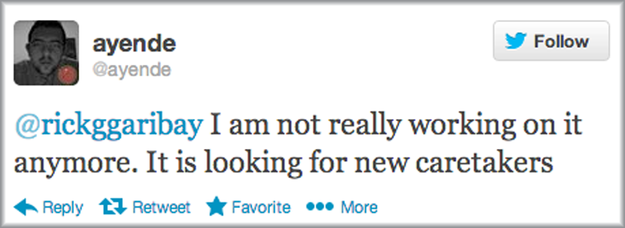
A.1.3 Typemock Isolator Typemock Isolator is a commercial unconstrained (can fake anything, see chapter 6) isolation framework that tries to remove the terms mocks and stubs from its vocabulary in favor of a more simple and terse API.
Isolator differs from most of the other frameworks by allowing you to isolate components from their dependencies regardless of how the system is designed (although it supports all the features the other frameworks have). This makes it ideal for people who are getting into unit testing and want an incremental approach to learning about design and testability. Because it doesn’t force you to design for testability, you can learn to write tests correctly and then move on to learning better design, without having to mix the two. It’s also the most costly of the unconstrained bunch, which it makes up for in usability and features for legacy code.
Typemock Isolator has two flavors: a constrained basic edition that’s free and has all the limitations of using a constrained framework (no statics, only virtuals, and so on) and an unconstrained, paid option that has few limits on what it can fake.
NOTE Full disclosure: I worked at Typemock between 2008 and 2010. You can get Typemock Isolator at http://www.typemock.com.
A.1.4 JustMock
JustMock, from Telerik, is a relatively new isolation framework that’s a very obvious competitor to Typemock Isolator. The two frameworks’ APIs are so similar in design that it should be relatively easy to move between them for the basic stuff. Like Typemock, JustMock has two flavors: a constrained free edition and an unconstrained, paid option that has few limits on what it can fake.
There’s a little roughness with the APIs, and it currently, as far as I’ve been able to try, doesn’t support recursive fakes—the ability to make a fake that returns a fake object that returns a fake object, without needing to specify things explicitly. Grab it at www.telerik.com/products/mocking.aspx.
A.1.5 Microsoft Fakes (Moles)
Microsoft Fakes is a project that started out in Microsoft research as the answer to the question “How can we fake the filesystem and other things like SharePoint without needing to purchase a company like Typemock?” What emerged was a framework called Moles. Moles later grew into Microsoft Fakes and is included in some versions of Visual Studio.
MS Fakes is another unconstrained isolation framework, with no API for verification that something was called. In essence, it provides utilities to create stubs. If you’d like to assert that some object was called, you could do it, but the test code would look like a mess.
Like the previous unconstrained frameworks, MS Fakes allows you to create two types of fake objects: you either generate unconstrained classes that inherit and
override from code that is already testable, or you use shims. Shims are unconstrained, and stubs, the generated classes, are constrained. Confused? Yes, me too. One of the reasons I don’t recommend that anyone but brave souls with nothing to lose use MS Fakes is because of the horrible usability factor. They’re just confusing to use. Plus, the maintainability of the tests that use either shims or stubs is in question. The generated stubs need to be regenerated every time you change your code under test, followed by changing the tests, and code that uses shims is very long and hard to read and thus hard to maintain. MS Fakes might be free and included with Visual Studio, but it will cost you a lot of money down the line in developer hours, fixing and trying to understand your tests.
Another important point: using MS Fakes forces you to use MSTest as your test framework. If you want to use another one, you’re out of luck.
If you need an unconstrained framework for writing tests that will need to last more than a week or two, choose JustMock or Typemock Isolator.
Learn more about MS Fakes at http://msdn.microsoft.com/en-us/library/ hh549175.aspx.
A.1.6 NSubstitute
NSubstitute is an open source constrained isolation framework. Its API is very simple to learn and remember, and it has very good documentation. Also good: errors are very detailed. Along with FakeItEasy, it’s my first choice of a constrained framework for a new project.
Learn more about NSubstitute at http://nsubstitute.github.com/ and install it as a NuGet package.
A.1.7 FakeItEasy
FakeItEasy has not only a great name but also a very nice API. It’s my current favorite along with NSubstitute for constrained frameworks, but its documentation isn’t as good as NSub’s. My favorite thing about its API is that everything you’d want to accomplish starts with the character A, for example:
var foo = A.Fake<IFoo>(); A.CallTo(() => foo.Bar()).MustHaveHappened();
Learn more about FakeItEasy at https://github.com/FakeItEasy/FakeItEasy/wiki and install it as a NuGet package.
A.1.8 Foq
Foq was created as the result of a need by F# programmers to create fakes in a way that’s usable and readable in F#. It’s a constrained isolation framework, able to create fakes of abstract classes and interfaces. I’ve personally not used it because I’ve never worked with F#, but it seems to be the only reasonable solution in that space, for that purpose. Learn more about Foq at https://foq.codeplex.com/ and install it as a NuGet package.
A.1.9 Isolator++ Isolator++ was built by Typemock as an unconstrained isolation framework for C++. It can fake static methods, private methods, and more in legacy C++ code. It’s another commercial product, and it seems to be the only one in this space with those abilities. Learn more about it at www.typemock.com/what-is-isolator-pp.
A.2 Test frameworks Test frameworks are composed of two types of functionality:
■ Test runners execute the tests you write, give results, and allow you to know what went wrong where.
■ Test APIs include the attributes or classes you need to inherit and assertion APIs.
Let’s look at each in turn. Visual Studio test runners:
■ MS test runner built into Visual Studio
■ TestDriven.NET
■ ReSharper
■ NUnit
■ DevExpress
■ Typemock Isolator
■ NCrunch
■ ContinuousTests (Mighty Moose)
Test and assertion APIs:
■ NUnit.Framework
■ Microsoft.VisualStudio.TestPlatform.UnitTestFramework
■ Microsoft.VisualStudio.TestTools.UnitTesting
■ FluentAssertions
■ Shouldly
■ SharpTestEx
■ AutoFixture
A.2.1 Mighty Moose (a.k.a. ContinuousTests) continuous runner A previously commercial tool turned free, Mighty Moose is dedicated to giving feedback on tests and coverage continuously, like NCrunch.
■ It runs the tests in a background thread.
■ Tests are automatically run as you change code and save and compile.
■ It has a smart algorithm to tell which tests need to be run based on which code was changed.
Unfortunately, it looks like development has stopped on this tool. Learn more at http://continuoustests.com.
A.2.2 NCrunch continuous runner
NCrunch continuous runner is a commercial tool dedicated to giving feedback on tests and coverage continuously. While a relative newcomer, NCrunch has made its way into my heart (I purchased a license) because of several nice features:
■ It runs the tests in a background thread.
■ Tests are automatically run as you change code, without even needing to save it.
■ Green/red coverage dots next to both tests and production code let you know if the current production line you’re working on is covered by any test and if that test is currently failing.
■ It’s very configurable, to the point of annoyance. Just remember, when the wizard initially comes up on a simple project, just hit Esc to get the defaults of running all the tests.
Learn more at www.ncrunch.net/.
A.2.3 Typemock Isolator test runner
This test runner is part of a commercial isolation framework called Typemock Isolator.
This extension tries to run the tests and show coverage at the same time, on every compilation. It’s very much in beta state and has inconsistent behavior. Perhaps one day it will be more helpful, but these days I tend to turn it off and just use the isolation frameworks APIs.
Learn more at http://Typemock.com.
A.2.4 CodeRush test runner
This test runner part of a commercial tool called CodeRush is a well-known plug-in for Visual Studio.
Like ReSharper, there are some nice pros for this runner:
■ It’s nicely integrated into the Visual Studio code editor by showing marks near a test that you can click to run individual tests.
■ It supports most of the test APIs out there in .NET.
■ If you’re already using CodeRush, it’s good enough.
Like ReSharper, the visual nature of the test results can hinder the experience for experienced TDD-ers. The tree of running tests, and showing all the results by default, even of passing tests, wastes time when you’re in the flow of TDD. But some people like it. Your mileage may vary.
Learn more at www.devexpress.com/Products/Visual_Studio_Add-in/Coding_ Assistance/unit_test_runner.xml.
A.2.5 ReSharper test runner
This test runner is part of a commercial tool called ReSharper, a well-known plug-in for Visual Studio.
There are some nice pros for this runner:
■ It’s nicely integrated into the Visual Studio code editor by showing marks near a test that you can click to run individual tests.
■ It supports most of the test APIs out there in .NET.
■ If you’re already using ReSharper, it’s good enough.
What I consider a con is the overly visual nature of the test results. The tree of running the tests is very nice and colorful. But painting it, and showing all the results by default, even of passing tests, wastes time when you’re in the flow of TDD. But some people like it. Your mileage may vary.
Learn more at www.jetbrains.com/resharper/features/unit_testing.html.
A.2.6 TestDriven.NET runner
This is a commercial test runner (free for personal use). This used to be my favorite test runner until I started using NCrunch. There’s a lot to love:
■ It’s able to run tests for most, if not all, the test API frameworks out there in .NET, including NUnit, MSTest, xUnit.net, as well as some of the BDD API frameworks.
■ It’s a little package. It’s a very small install and a minimalistic interface. The output is simple: it appears in the output window of Visual Studio, and some text is on the bottom sidebars of Visual Studio.
■ It’s very fast, one of the fastest test runners.
■ It has a unique ability: you can right-click any piece of code (not just tests) and select Test with > Debugger. You will then step into any code (even production code, even if it doesn’t have tests). Underneath TD.NET invoke the method you’re currently in using reflection, and it provides default values for the method if parameters are needed. This saves a lot of time in legacy code.
It is recommended to assign a shortcut to the TD.NET ReRunTests command in Visual Studio so that the flow of TDD is as smooth as possible.
A.2.7 NUnit GUI runner
The NUnit GUI runner is free and open source. This runner isn’t integrated into Visual Studio, so you have to run it from your desktop. Because of this, almost nobody uses it when they have the other options listed here integrated into Visual Studio. It’s crude and unpolished and not recommended.
A.2.8 MSTest runner
The MSTest runner comes built in with all versions of Visual Studio. In the paid versions it also has a plug-in mechanism that allows you to add support for running tests written in other test APIs such as NUnit or xUnit.net via special adapters that you can install as Visual Studio extensions.
Test APIs 241
One factor in favor of this runner is that it’s integrated into the Visual Studio Team System tool suite and provides good reporting, coverage, and build automation out of the box. If your company uses Team System for automated builds, try MSTest as your test runner in the nightly and CI builds because of the good integration possibilities such as reporting.
Two areas where MSTest lacks are performance and dependencies:
■ Dependencies—To run your tests using mstest.exe, you need to have Visual Studio installed on your build machine. That might be OK for some, especially if where you compile is the same place you run your tests. But if you want to run your tests in a relatively clean environment, in already compiled form, this can be overkill and problematic if you want your tests to run in an environment that specifically does not have Visual Studio installed.
■ Slow—The tests in MSTest do a lot under the hood before and after each test, copying files, running external processes, profiling, and more, and this makes MSTest feel like the slowest runner of all the ones I’ve ever used.
A.2.9 Pex
Pex (short for program exploration) is an intelligent assistant to the programmer. From a parameterized unit test, it automatically produces a traditional unit test suite with high code coverage. In addition, it suggests to the programmer how to fix the bugs.
With Pex, you can create special tests that have parameters in them and put special attributes on those tests. The Pex engine will generate new tests that you can later run as part of your test suite. It’s great for finding corner cases and edge conditions that aren’t handled properly in your code. You should use Pex in addition to a regular test framework, such as NUnit or MbUnit.
You can get Pex at http://research.microsoft.com/projects/pex/.
The next batch of tools provides higher-level abstractions and wrappers for the base unit testing frameworks.
A.3.1 MSTest API—Microsoft’s unit testing framework
This comes bundled with any version of Visual Studio .NET Professional or above. It includes basic features that are similar to NUnit.
But several problems make MSTest an inferior product for unit testing compared to NUnit or xUnit.net:
■ Extensibility
■ Lack of Assert.Throws
EXTENSIBILITY
One big problem with this framework is that it’s not as easily extensible as the other testing frameworks. Although there have been several online discussions in the past
about making MSTest more extensible with custom test attributes, it seems that the Visual Studio team has all but given up on making MSTest a viable alternative to NUnit and others.
Instead, VS 2012 features a plug-in mechanism that allows you to use NUnit or any other test framework as your default test framework, with the MSTest runner running your NUnit tests. There are already adapters available for NUnit and xUnit.net (NUnit test adapter or xUnit.net runner for Visual Studio 2012) if you just want to use the MSTest runner with other frameworks. Unfortunately, the express, free version of Visual Studio doesn’t contain this mechanism, forcing you to use the inferior MSTest. (On a side note, why does Microsoft force you to purchase Visual Studio so that you can develop code that makes the MS platform more dominant?)
LACK OF ASSERT.THROWS
This is a simple matter. In MSTest you have an ExpectedException attribute, but you don’t have Assert.Throws, which allows testing that a specific line threw an exception. Over six years after inception, and four years after most other frameworks, this framework’s developers haven’t bothered adding this literally 10 lines of code implementation to it, leaving me wondering how much they really care about unit tests.
A.3.2 MSTest for Metro Apps (Windows Store)
MSTest for Metro Apps is an API for writing Windows Store apps that looks like MSTest but seems to get the right idea regarding unit tests. For example, it sports its own version of Asset.ThrowsException().
It seems like you’re forced to use this framework for writing Windows Store apps with unit tests, but a solution exists if you use linked projects. For information see http://stackoverflow.com/questions/12924579/testing-a-windows-8-store-app-with-nunit.
A.3.3 NUnit API
NUnit is currently the de facto test API framework for unit test developers in .NET. It’s open source and is in almost ubiquitous use among those who do unit testing. I cover NUnit in depth in chapter 2. NUnit is easily extensible and has a large user base and forums. I’d recommend it to anyone starting out with unit testing in .NET. I still use it today.
You can get NUnit at www.Nunit.org.
A.3.4 xUnit.net
xUnit.net is an open source test API framework, developed in cooperation with one of the original authors of NUnit, Jim Newkirk. It’s a minimalist and elegant test framework that tries to get back to basics by having fewer features, not more, than the other frameworks and by supporting different names on its attributes.
What’s so radically different about it? It has no setup or teardown methods, for one. You have to use the constructor and a dispose method on the test class. Another big difference is in how easy it is to extend.
Because xUnit.net reads so differently from the other frameworks, it takes a while to get used to if you’re coming from a framework like NUnit or MbUnit. If you’ve never used any test framework before, xUnit.net is easy to grasp and use, and it’s robust enough to be used in a real project.
For more information and download see www.codeplex.com/xunit.
A.3.5 Fluent Assertions helper API The Fluent Assertions helper API is a new breed of test API. It’s a cute library that’s designed solely for one purpose: to allow you to assert on anything, regardless of the test API you’re using. For example, you can use it to get Assert.Throws()-like functionality in MSTest.
More information is available at http://fluentassertions.codeplex.com/.
A.3.6 Shouldly helper API The Shouldly helper API is a lot like Fluent Assertions but smaller. It’s also designed solely for one purpose: to allow you to assert on anything, regardless of the test API you’re using. More information can be found at http://shouldly.github.com.
A.3.7 SharpTestsEx helper API Like Fluent Assertions, the SharpTestsEx helper API is designed solely for one purpose: to allow you to assert on anything, regardless of the test API you’re using. More information is available at http://sharptestex.codeplex.com.
A.3.8 AutoFixture helper API The AutoFixture helper API is not an assertion API. AutoFixture is designed to make it easier to create objects under test that you don’t care about. For example, you need some number or some string. Think of it as a smart factory that can inject objects and input values into your test.
I’ve looked at using it, and the thing I find most appealing about it is the ability to create an instance of the class under test without knowing what its constructor signature looks like, which can make my test more maintainable over time. Still, that’s not enough reason for me to use it, because I can simply do that with a small factory method in my tests.
Also, it scares me a bit to let it inject random values into my tests, because it makes me run a different test each time I run it. It also complicates my asserts, because then I have to calculate that my expected output must be based on the random injected parameters, which may lead to repeating production code logic in my tests.
More information can be found at https://github.com/AutoFixture/AutoFixture.
A.4 IoC containers IoC containers can be used to improve the architectural qualities of an object-oriented system by reducing the mechanical costs of good design techniques (such as using constructor parameters, managing object lifetimes, and so on).
Containers can enable looser coupling between classes and their dependencies, improve the testability of a class structure, and provide generic flexibility mechanisms. Used judiciously, containers can greatly enhance the opportunities for code reuse by minimizing direct coupling between classes and configuration mechanisms (such as by using interfaces).
There are a lot of those in the .NET space. And they’re varied and interesting to take a look at. Performance-wise, if you care much about that, there’s a good comparison of them all at http://www.palmmedia.de/Blog/2011/8/30/ioc-container-benchmarkperformance-comparison. Personally, I never felt that IoC containers were my root cause of performance issues, and if that were ever the case, that would be a very good place to be.
Anyway, there are lots of them, but we’ll look at the following tools, which are used frequently in the community.
I chose the tools to cover based on a usage poll I took on my blog during March
2013. Here’s the top of the results heap for usage:
■ Autofac (Auto Factory)
■ Ninject
■ Castle Windsor
■ Microsoft Unity
■ StructureMap
■ Microsoft Managed Extensibility Framework
Let’s look briefly at each of these frameworks.
A.4.1 Autofac Autofac was one of the first to offer a fresh approach to IoC in .NET that fits well with the C# 3 and 4 syntax. It takes a rather minimalistic approach in terms of APIs. The API is radically different from those of the other frameworks and requires a bit of getting used to. It also requires .NET 3.5 to work, and you’ll need a good knowledge of lambda syntax. Autofac is difficult to explain, so you’ll have to go to the site to see how different it is. I recommend it for people who already have experience with other DI frameworks.
You can get it at http://code.google.com/p/autofac/.
A.4.2 Ninject Ninject also has simple syntax and good usability. There isn’t much else to say about it except that I highly recommend taking a look at it.
You can find out more about Ninject at http://ninject.org/.
A.4.3 Castle Windsor Castle is a large, open source project that covers a lot of areas. Windsor is one of those areas, and it provides a mature and powerful implementation of a DI container.
Castle Windsor contains most of the features you’ll ever want in a container and more, but it has a relatively high learning curve because of all the features.
You can learn about the Castle Windsor container at http://docs.castleproject.org/ Windsor.MainPage.ashx.
A.4.4 Microsoft Unity Unity is a latecomer to the DI container field, but it provides a simple and minimal approach that can be easily learned and used by beginners. Advanced users may find it lacking, but it certainly answers my 80–20 rule: it provides 80% of the features you look for most of the time.
Unity is open source by Microsoft, and it has good documentation. I’d recommend it as a starting point for working with containers.
You can get Unity at www.codeplex.com/unity.
A.4.5 StructureMap StructureMap is an open source container framework written by Jeremy D. Miller. Its API is very fluent and tries to mimic natural language and generic constructs as much as possible.
The current documentation on it is lacking, but it contains powerful features, such as a built-in automocking container (a container that can create stubs automatically when requested to by the test), powerful lifetime management, XML-free configuration, integration with ASP.NET, and more.
You can get StructureMap at http://structuremap.net.
A.4.6 Microsoft Managed Extensibility Framework The Managed Extensibility Framework (MEF) isn’t actually a container, but it does fall in the same general category of providing services that instantiate classes in your code. It’s designed to be much more than a container; it’s a full plug-in model for small and large applications. MEF includes a lightweight IoC container framework so you can easily inject dependencies into various places in your code by using special attributes.
MEF does involve a bit of a learning curve, and I wouldn’t recommend using it strictly as an IoC container. If you do use it for extensibility features in your application, it can also be used as a DI container.
You can get MEF at http://mef.codeplex.com/.
A.5 Database testing How to do database testing is a burning question for those who are starting out. Many questions arise such as, “Should I stub out the database in my tests?” This section provides some guidelines.
First, let’s talk about doing integration tests against the database.
A.5.1 Use integration tests for your data layer How should you test your data layer? Should you abstract away the database interfaces? Should you use the real database?
I usually write integration-style tests for the data layer (the part of the app structure that talks directly to the database) in my applications because data logic is almost always divided between the application logic and the database itself (triggers, security rules, referential integrity, and so on). Unless you can test the database logic in complete isolation (and I’ve found no really good framework for this purpose), the only way to make sure it works in tests is to couple testing the data-layer logic to the real database.
Testing the data layer and the database together leaves few surprises for later in the project. But testing against the database has its problems, the main one being that you’re testing against state shared by many tests. If you insert a line into the database in one test, the next test can see that line as well.
What you need is a way to roll back the changes you make to the database, and thankfully, there’s an easy way to do it in the .NET Framework.
A.5.2 Use TransactionScope to roll back changes to data The TransactionScope class is smart enough to handle very complicated transactions, as well as nested transactions where your code under test calls commits on its own local transaction.
Here’s a simple piece of code that shows how easy it is to add rollback ability to your tests:
[TestFixture] public class TrannsactionScopeTests
{
private TransactionScope trans = null; [SetUp] public void SetUp() {
trans = new TransactionScope(TransactionScopeOption.Required);
} [TearDown] public void TearDown() {
trans.Dispose();
} [Test] public void TestServicedSameTransaction() {
MySimpleClass c = new MySimpleClass(); long id = c.InsertCategoryStandard("whatever"); long id2 = c.InsertCategoryStandard("whatever"); Console.WriteLine("Got id of " + id); Console.WriteLine("Got id of " + id2); Assert.AreNotEqual(id, id2);
} }
You set up a transaction scope in the setup and dispose of it in the teardown.
By not committing it at the test class level, you basically roll back any changes to the database, because dispose initiates a database rollback if commit wasn’t called first.
Some feel that another good option is to run the tests against an in-memory database. My feelings on that are mixed. On the one hand, it’s closer to reality, in that you also test the database logic. On the other hand, if your application uses a different database engine, with different features, there’s a big chance that some things will pass or fail during tests with the in-memory database and will work differently in production. I choose to work with whatever is as close to the real thing as possible. Usually that means using the same database engine.
If the in-memory database engine has the same features and logic embedded in it, it might be a great idea.
A.6 Web testing
“How do I test my web pages?” is another question that comes up a lot. Here are some tools that can help you in this quest:
■ Ivonna
■ Team System Web Test
■ Watir
■ Selenium
Following is a short description of each tool.
A.6.1 Ivonna
Ivonna is a unit testing-helping framework that abstracts away the need to run ASP.NET-related tests using a real HTTP session and pages. It does some powerful things behind the scenes, such as compiling pages that you want to test and letting you test controls inside them without needing a browser session, and it fakes the full HTTP runtime model.
You write the code in your unit tests just like you’re testing other in-memory objects. There’s no need for a web server and such nonsense.
Ivonna is being developed in partnership with Typemock and runs as an add-on to the Typemock Isolator framework. You can get Ivonna at http://ivonna.biz.
A.6.2 Team System web test
Visual Studio Team Test and Team Suite editions include the powerful ability to record and replay web requests for pages and verify various things during these runs. This is strictly integration testing, but it’s really powerful. The latest versions also support recording Ajax actions on the page and make things much easier to test in terms of usability.
You can find more info on Te a m S y s t e m hatttp ://msdn.microsoft.com/en-us/ teamsystem/default.aspx.
A.6.3 Watir
Watir (pronounced “water”) stands for “web application testing in Ruby.” It’s open source, and it allows scripting of browser actions using the Ruby programming language. Many Rubyists swear by it, but it does require that you learn a whole new language to use. A lot of .NET projects are using it successfully, so it’s not a big deal.
You can get Watir at http://watir.com/.
A.6.4 Selenium WebDriver
Selenium is a suite of tools designed to automate web app testing across many platforms. It’s older than all the other frameworks in this list, and it also has an API wrapper for .NET. WebDriver is an extension of it that fits many different kinds of browsers, including mobile ones. It’s very powerful.
Selenium is an integration testing framework, and it’s in wide use. It’s a good place to start. But beware: it has many features and the learning curve is high.
You can get it at http://docs.seleniumhq.org/projects/webdriver/.
A.6.5 Coypu
Coypu is a .NET abstract on top of Selenium and other web-related testing tools. It’s quite new at the time of writing but might have plenty of potential. It might be worth checking it out.
Learn more at https://github.com/featurist/coypu.
Thread-related testing 249
A.6.6 Capybara Capybara is a Ruby-based tool that automates the browser. It allows you to use the RSpec (BDD-style) API to automate the browser, which many people find just lovely to read.
Selenium is more mature, but Capybara is more inviting and progressing quickly. When I do Ruby stuff, this is what I use.
Learn more at https://github.com/jnicklas/capybara.
A.6.7 JavaScript testing There are several tools to look at if you intend to write unit tests or acceptance tests for JavaScript code. Note that many of these will require installing Node.JS on your machine, which is a no-brainer these days. Just hhettapd: //onno dteoj s.org/ download/.
Here’s a partial list of frameworks to look at:
■ JSCover—Use it for checking coverage of your JavaScript by tests. http:// tntim96.github.com/JSCover/
■ Jasmin—A very well-known BDD-style framework that I have used. I recommend it. http://pivotal.github.io/jasmine/
■ Sinon.JS—Create fakes in JS. http://sinonjs.org/
■ CasperJS + PhantomJS—Use this for headless testing of your browser JavaScript. That’s right—no real browser needs to be alive (uses node.js under the covers). http://casperjs.org/
■ Mocha—Also very well known and used in many projects. http://visionmedia
.github.com/mocha/
■ QUnit—A bit long in the tooth but still a good test framework. http:// qunitjs.com/
■ Buster.JS—A very new framework. http://docs.busterjs.org/en/latest/
■ Vows.js—An up and coming framework. https://github.com/cloudhead/vows
A.7 UI testing (desktop) UI testing is always a difficult task. I’m not a great believer in writing unit tests or integration tests for UIs because the return is low compared to the amount of time you invest in writing them. UIs change too much to be testable in a consistent manner, as far as I’m concerned. That’s why I usually try to separate all the logic from the UI into a lower layer that I can test separately with standard unit testing techniques.
There are no tools I can heartily recommend (that won’t make you break the keyboard after three months) to look at in this space.
A.8 Thread-related testing Threads have always been the bane of unit testing. They’re simply untestable. That’s why new frameworks are emerging that let you test thread-related logic (deadlocks, race conditions, and so on), such as these:
■ Microsoft CHESS
■ Osherove.ThreadTester
I’ll give a brief rundown of each tool.
A.8.1 Microsoft CHESS CHESS was an upcoming tool that’s now somewhat open source by Microsoft on Codeplex.com. CHESS attempts to find thread-related problems (deadlocks, hangs, livelocks, and more) in your code by running all relevant permutations of threads on existing code. These tests are written as simple unit tests.
Check it out at http://chesstool.codeplex.com.
A.8.2 Osherove.ThreadTester This is a little open source framework I developed a while back. It allows you to run multiple threads during one test to see if anything weird happens to your code (deadlocks, for example). It isn’t feature complete, but it’s a good attempt at a multithreaded test (rather than a test for multithreaded code).
You can get it from my blog, at http://osherove.com/blog/2007/6/22/multithreaded-unit-tests-with-osherovethreadtester.html.
A.9 Acceptance testing Acceptance tests enhance collaboration between customers and developers in software development. They enable customers, testers, and programmers to learn what the software should do, and they automatically compare that to what it actually does. They compare customers’ expectations to actual results. It’s a great way to collaborate on complicated problems (and get them right) early in development.
Unfortunately, there are few frameworks for automated acceptance testing and just one that works these days! I’m hoping this will change soon. Here are the tools we’ll look at:
■ FitNesse
■ SpecFlow
■ Cucumber
■ TickSpec
Let’s take a closer look.
A.9.1 FitNesse FitNesse is a lightweight, open source framework that supposedly makes it easy for software teams to define acceptance tests—web pages containing simple tables of inputs and expected outputs—and to run those tests and see the results.
FitNesse is quite buggy, but it has been in use in many places with varying degrees of success. I personally haven’t gotten it working quite perfectly.
You can learn more about FitNesse at www.fitnesse.org.
BDD-style API frameworks 251
A.9.2 SpecFlow SpecFlow tries to give the .NET world what Cucumber has given the Ruby world: a tool that allows you to write the specification language as simple text files, which you can then collaborate on with your customers and QA departments.
It does a pretty good job at that. Learn more at http://www.specflow.org.
A.9.3 Cucumber Cucumber is a Ruby-based tool that allows you to write your specifications in a special language called Gherkin (yes, I agree). These are simple text files, and you then have to write special connector code to run actual code that acts on your application code.
It sounds complicated, but it isn’t. So what’s it doing here if it’s a Ruby tool? It’s here because it has inspired a whole suite
of tools in the .NET world, of which only one seems to be surviving right now—SpecFlow.
But there is a way to run Cucumber on .NET if you use IronRuby—a language abandoned by Microsoft and thrown to the open source world over the wall, never to be heard from again. (Great job!)
In any case, Cucumber is important enough to be aware of regardless of whether you intend to use it. It will help you understand why some things in .NET try to do the same thing.
Also, it’s the basis of the Gherkin language, which other tools will try to implement now and in the future. Learn more at http://cukes.info/.
A.9.4 TickSpec TickSpec is for you if you use F#. I haven’t used it myself, because I haven’t used F#, but it’s meant as a similar framework relating to acceptance and BDD-styled frameworks, as mentioned previously. I’ve also not heard of others using it, but that may just be because I’m not that much in F# circles. Learhnt tpms:o/r/e at tickspec.codeplex.com/.
A.10 BDD-style API frameworks The last few years have also given rise to a bunch of frameworks that imitate another tool from the Ruby world, called RSpec. This tool introduced the idea that maybe unit testing isn’t a great naming convention, and by changing it to BDD we can make things more readable and perhaps even converse more with our customers about it.
To my mind, the idea of implementing these frameworks simply as different APIs in which you’d write unit or integration tests already negates most of the possibility of conversing more with your customers about them (than before), because they’re not likely to really read your code or change it. I feel that the acceptance frameworks from the previous section fit more into that state of mind.
So this leaves us with just coders trying to use these APIs. Because these APIs draw inspiration from the BDD-style language of Cucumber, in
some cases they seem more readable, but to my mind, not the simple cases, which benefit more from simple assert-style tests. Your mileage may vary.
Here are some of the better-known BDD-style frameworks. I’m not creating a subsection of any of them, because I haven’t personally used any of them on a real project over a long period of time:
■ NSpec is the oldest and seems in pretty good shape. Learn it at http://nspec.org/.
■ StoryQ is another oldie but goodie. It produces very readable output and also has a tool that translated Gherkin stories to compliable test code. Learn it at http://storyq.codeplex.com/.
■ MSpec, or Machine.Specifications, tries to be as close to the source (RSpec) as possible with many lambda tricks. It grows on you. Learn it at https://github.com/ machine/machine.specifications.
■ TickSpec is the same idea implemented for F#. Learn it at http://tickspec
.codeplex.com/.
abstract test driver class pattern 144–145 abstract test infrastructure class pattern 137–
140
acceptance testing Cucumber 251 FitNesse 250 overview 250 SpecFlow 251 TickSpec 251 using before refactoring legacy code 216
action-driven testing 76 actions, separating from asserts 183–184 Add() method 44 agent of change
choosing smaller teams 191 creating subteams 192 identifying blockers 191 identifying champions 190–191 identifying possible entry points 191 pilot project feasibility 192 preparing for tough questions 190 using code reviews as teaching tool 192 AlwaysValidFakeExtensionManager class 56 AnalyzedOutput class 178 AnalyzeFile method 181 antipatterns, in isolation frameworks
complex syntax 120–121 concept confusion 118–119 record and replay style 119–120 sticky behavior 120
API for tests AutoFixture helper API 242–243 documenting 149–150 Fluent Assertions helper API 243
MSTest API extensibility 241–242 lack of Assert.Throws 242 overview 241
MSTest for Metro Apps 242 NUnit API 242 overview 241 SharpTestsEx helper API 243 Shouldly helper API 243 test class inheritance patterns
abstract test driver class pattern 144–145 abstract test infrastructure class pattern 137–
140 overview 136–137 refactoring for test class hierarchy 146–147 template test class pattern 140–144 using generics 147–148
utility classes and methods 148 when to change tests 154–155 xUnit.NET 242–243
Arg class 97 ArgumentException 37 arguments, ignoring by default 115–116 arrange-act-assert 93, 95–96 Assert class 28–29 asserts
avoiding custom assert messages 182–183 avoiding multiple on different concerns
overview 174–175 using parameterized tests 175–176 wrapping with try-catch 176 separating from actions 183–184 Assert.Throws function 38, 242 attributes, NUnit 27 Autofac 60, 245 AutoFixture helper API 242–243
253
automated tests build scripts 127–128 continuous integration 128–129 from automated builds 126–129
BaseStringParser class 141 BDD-style API frameworks 251–252 blockers, identifying 191 bottom up implementation 193 bugs
in tests 205 why still found 203–204
build automation 129 build scripts 127–128
C# interface 53 callers 72 Capybara 249 Castle Windsor 245 [Category] attribute 40 caveats, with constructor injection 59–60 champions
getting outside 194 identifying 190–191
ChangePassword method 133
CI (continuous integration) build script 125– 128
class under test. See CUT classes
avoid instantiating concrete classes inside meth-
ods with logic 222 extracting interface into separate 55–57 inheritance patterns
abstract test driver class pattern 144–145 abstract test infrastructure class pattern 137–
140 overview 136–137 refactoring for test class hierarchy 146–
147 template test class pattern 140–144 using generics 147–148
making non-sealed by default 222 mapping tests to 132–133 one test class for each 132–133 using factory class to return stub object 63–69 utility classes 148
classic testing, vs. unit testing 5–6 code
avoiding unreadable 106 book by Michael Feathers 216 deciding where to start 208–209
duplicate code 218 easy-first strategy 210 hard-first strategy 210–211 production code 217–218 refactoring 217–218 styling for test code 31 tools for
FitNesse 216 JMockit 213–214 JustMock 212–213 NDepend 216–217 overview 212 ReSharper 217–218 Simian 218 TeamCity 218 Typemock Isolator 212–213 Vise 215
using NUnit attributes 27 writing integration tests before refactoring 211–
212 code reviews 159–161, 192 CodeRush 239 collaborators 50 COM interface 112 companies
agent of change choosing smaller teams 191 creating subteams 192 identifying blockers 191 identifying champions 190–191 identifying possible entry points 191 pilot project feasibility 192 preparing for tough questions 190 using code reviews as teaching tool 192
influence factors for acceptance 199–200 issues raised
bugs in tests 205 choosing TDD 205–206 debugger finds no problems 205 demonstrating progress 202–203 multiple languages used 204 QA jobs at risk 202 software and hardware combinations 204 starting with problematic code 204 studies proving benefits 203 time added to process 200–202 why bugs are still found 203–204
methods of aiming for specific goals 196–197 convincing management (top down) 193 getting outside champion 194 guerrilla implementation
(bottom up) 193 making progress visible 194–195 overcoming obstacles 197
companies (continued)
reasons for failure bad implementations 198 lack of driving force 197–198 lack of political support 198 lack of team support 198–199
comparing objects better readability 177 overriding ToString() 177–178
complexity in isolation frameworks 120–121 of designing for testability 225–226
concept confusion, in isolation frameworks 118–119 [Conditional] attribute 72–73 Configuration property 87 ConfigurationManager class 137, 139 ConfigurationManagerTests class 137 conflicting tests, when to change tests 155–156 constrained isolation frameworks 110 constrained test order antipattern 170–171 constructor injection
caveats with 59–60 overview 57–59 when to use 60–61
constructors, avoiding constructors that do
logic 223 context argument 97 continuous integration build script. See CI control flow code 11 convincing management 193 Coypu 248 CreateDefaultAnalyzer() method 165 cross-cutting concerns 134–136 Cucumber 251 CultureInfoAttribute 135 CUT (class under test) 4
Database class 213 database testing
overview 246 using integration tests for data layer 246 using TransactionScope to roll back
changes 246–247 DBConfiguration property 87 dependencies
filesystem 50–51 isolating in legacy code 212–213
dependency injection 57, 60–61 Derived class 145 designing for testability
alternatives to 226–228 avoid instantiating concrete classes inside meth-
ods with logic 222
avoiding constructors that do logic 223 avoiding direct calls to static methods 222–223 dynamically typed languages 227–228 example of hard-to-test design 228–232 interface-based designs 222 making classes non-sealed by default 222 making methods virtual by default 221–222 overview 219–221 pros and cons of
amount of work 225 complexity of 225–226 exposing intellectual property 226
separating singletons and singleton
holders 223–224 documenting test API 149–150 DOS command 129 duplicate code 218 duplication in tests
overview 163–165 removing using helper method 165 removing using [SetUp] 166 when to change tests 156
dynamic fake objects 93 dynamic mock objects
creating 95–96 defined 93 using NSubstitute 93–94 using stubs with 97–102
dynamic stubs 90 dynamically typed languages 227–228
easy-first strategy, dealing with legacy code 210 EasyMock 91, 110 EmailInfo object 84 encapsulation
[Conditional] attribute 72–73 [InternalsVisibleTo] attribute 72 overview 71–72 using #if and #endif constructs 73–74 using internal modifier 72
entry points, identifying for possible changes 191 Equals() method 101, 177 ErrorInfo object 100 events
testing if triggered 103–104 testing listener 102–103
Exception object 38 exceptions, simulating 61 EXE file 29 [ExpectedException] attribute 36–39 extensibility, of MSTest 241–242 external dependency 50 external-shared-state corruption antipattern 174
Extract and Override for calculated results 70–71 for factory methods 66–69
factory classes, using to return stub object 63–69 factory methods, overriding virtual 66–69 Factory pattern 63 FakeDatabase class 213 FakeItEasy 110, 114, 116, 118, 120 FakeItEasy, isolation framework 237 fakes 77
creating 106 in setup methods 168 nonstrict 116–117 overview 96–97 recursive fakes 115 using mock and stub 97–102 wide faking 116
FakeTheLogger() method 139 FakeWebService 79–80 features, one test class for each 133 FileExtensionManager class 52–53, 55, 65 FileInfo object 167 filesystem dependencies, in LogAn project 50–51 FitNesse 216, 250 flow code 11 Fluent Assertions helper API 243 fluent syntax, in NUnit 39–40 Foq, isolation framework 237 Forces method 96 frameworks
acceptance testing Cucumber 251 FitNesse 250 overview 250 SpecFlow 251 TickSpec 251 advantages of 106 antipatterns in
complex syntax 120–121 concept confusion 118–119 record and replay style 119–120 sticky behavior 120
avoiding misuse of more than one mock per test 107 overspecifying tests 107–108 unreadable test code 106 verifying wrong things 106
BDD-style API frameworks 251–252 constrained frameworks 110 database testing
overview 246 using integration tests for data layer 246
using TransactionScope to roll back changes 246–247
dynamic mock objects creating 95–96 defined 93 using NSubstitute 93–94
events testing if triggered 103–104 testing listener 102–103
ignored arguments by default 115–116 IoC containers
Autofac 245 Castle Windsor 245 Managed Extensibility Framework 246 Microsoft Unity 245 Ninject 245 overview 243–245 StructureMap 245
isolation frameworks FakeItEasy 237 Foq 237 Isolator++ 238 JustMock 236 Microsoft Fakes 236–237 Moq 235 NSubstitute 237 overview 234–235 Rhino Mocks 235 Typemock Isolator 236
.NET 104 nonstrict behavior of fakes 116–117 nonstrict mocks 117 overview 90–91 purpose of 91–92 recursive fakes 115 selecting 114 simulating fake values
overview 96–97 using mock and stub 97–102
test APIs AutoFixture helper API 242–243 Fluent Assertions helper API 243 MSTest API 241–242 MSTest for Metro Apps 242 NUnit API 242 overview 241 SharpTestsEx helper API 243 Shouldly helper API 243 xUnit.NET 242–243
test frameworks CodeRush test runner 239 Mighty Moose continuous runner 238 MSTest runner 240–241 NCrunch continuous runner 239 NUnit GUI runner 240
frameworks (continued) overview 238 Pex 241 ReSharper test runner 239–240 TestDriven.NET runner 240 Typemock Isolator test runner 239
thread-related testing Microsoft CHESS 250 Osherove.ThreadTester 250 overview 249–250
UI testing 249 unconstrained frameworks
frameworks expose different profiler
abilities 113 overview 110–112 profiler-based 112–113
unit testing overview 20–22 xUnit frameworks 22
web testing Capybara 249 Coypu 248 Ivonna 248 JavaScript testing 249 overview 247–248 Selenium WebDriver 248 Team System web test 248 Watir 248
wide faking 116
generics, using in test classes 147–148 GetLineCount() method 184 GetParser() method 143 GlobalUtil object 87 goals, creating specific 196–197 grip() method 215 guerrilla implementation 193 GUI (graphical user interface) 6
hard-first strategy, dealing with legacy code 210– 211 hardware, implementations combined with
software 204 helper methods, removing duplication 165 hidden test call antipattern 171–172 hiding seams, in release mode 65 hierarchy, refactoring test class for 146–147 Hippo Mocks 110
ICorProfilerCallback2 COM interface 112 IExtensionManager interface 54 #if construct 73–74 IFileNameRules interface 96 [Ignore] attribute 39 ignoring, arguments by default 115–116 IISLogStringParser class 141 IL (intermediate language) 110 ILogger interface 59, 94–95 implementation in organization
agent of change choosing smaller teams 191 creating subteams 192 identifying blockers 191 identifying champions 190–191 identifying possible entry points 191 pilot project feasibility 192 preparing for tough questions 190 using code reviews as teaching tool 192
influence factors for acceptance 199–200 issues raised
bugs in tests 205 choosing TDD 205–206 debugger finds no problems 205 demonstrating progress 202–203 multiple languages used 204 QA jobs at risk 202 software and hardware combinations 204 starting with problematic code 204 studies proving benefits 203 time added to process 200–202 why bugs are still found 203–204
methods of aiming for specific goals 196–197 convincing management (top down) 193 getting outside champion 194 guerrilla implementation (bottom up) 193 making progress visible 194–195 overcoming obstacles 197
reasons for failure bad implementations 198 lack of driving force 197–198 lack of political support 198 lack of team support 198–199 influence factors, for acceptance of unit
testing 199–200
inheritance patterns abstract test driver class pattern 144–145 abstract test infrastructure class pattern 137–140 overview 136–137 refactoring for test class hierarchy 146–147 template test class pattern 140–144 using generics 147–148
inheriting classes 66 Initialize() method 154, 164, 179 installing, NUnit 23–24 InstanceSend() method 230 integration tests
separating from unit tests 130–131, 159 using for data layer 246 vs. unit testing 7–10 writing before refactoring legacy code 211–212
intellectual property, exposing when designing for testability 226
interaction testing defined 75–78 mock objects
issues with manual-written 87–89 object chains 86–87 simple example 79–81 using one per test 85–86 using with stubs 81–85 vs. stubs 78–79
interfaces
designs based on 222 directly connected 52 underlying implementation of 51
intermediate language. See IL internal modifier, encapsulation 72 [InternalsVisibleTo] attribute 72 IoC containers 59
Autofac 245 Castle Windsor 245 Managed Extensibility Framework 246 Microsoft Unity 245 Ninject 245 overview 243–245 StructureMap 245
isolation frameworks advantages of 106 antipatterns in
complex syntax 120–121 concept confusion 118–119 record and replay style 119–120 sticky behavior 120
avoiding misuse of more than one mock per test 107 overspecifying tests 107–108 unreadable test code 106 verifying wrong things 106
constrained frameworks 110 dynamic mock objects
creating 95–96 defined 93 using NSubstitute 93–94
events testing if triggered 103–104 testing listener 102–103
FakeItEasy 237 Foq 237 for .NET 104 ignored arguments by default 115–116 Isolator++ 238 JustMock 236 Microsoft Fakes 236–237 Moq 235 nonstrict behavior of fakes 116–117 nonstrict mocks 117 NSubstitute 237 overview 90–91, 234–235 purpose of 91–92 recursive fakes 115 Rhino Mocks 235 selecting 114 simulating fake values
overview 96–97 using mock and stub 97–102
Typemock Isolator 236 unconstrained frameworks
frameworks expose different profiler
abilities 113 overview 110–112 profiler-based 112–113
wide faking 116
isolation, enforcing constrained test order antipattern 170–171 external-shared-state corruption
antipattern 174 hidden test call antipattern 171–172 overview 169–170 shared-state corruption antipattern 172–
174 Isolator++, isolation framework 238 issues raised upon implementation
bugs in tests 205 choosing TDD 205–206 debugger finds no problems 205 demonstrating progress 202–203 multiple languages used 204 QA jobs at risk 202 software and hardware combinations 204 starting with problematic code 204 studies proving benefits 203 time added to process 200–202 why bugs are still found 203–204
IStringParser interface 147–148 IsValid() method 56 IsValidFileName_BadExtension_ReturnsFalse()
method 26 IsValidLogFileName() method 25–26, 41–42,
50 ITimeProvider interface 134 Ivonna 248
Java using JMockit for legacy code 213–214 using Vise while refactoring 215
JavaScript testing 249 JIT (Just in Time) compilation 112 JitCompilationStarted 112–113 JMock 110 JMockit 110, 213–214 JustMock 91, 110–113
isolation framework 236 using with legacy code 212–213
languages, using multiple in projects 204 LastSum value 16 layer of indirection defined 51–53 layers of code that can be faked 65–66
legacy code 9 book by Michael Feathers 216 deciding where to start 208–209 easy-first strategy 210 hard-first strategy 210–211 tools for
FitNesse 216 JMockit 213–214 JustMock 212–213 NDepend 216–217 overview 212 ReSharper 217–218 Simian 218 TeamCity 218 Typemock Isolator 212–213 Vise 215
writing integration tests before refactoring 211–
212 LineInfo class 178 LogAn project
Assert class 28–29 filesystem dependencies in 50–51 overview 22–23 parameterized tests 31–33 positive tests 30–31 system state changes 40–45
LogAnalyzer class 31, 41, 50, 57, 79, 81, 132, 165 LogAnalyzerTests class 25, 27, 137 LogError() method 95 LoggingFacility class 137, 139 logic, avoiding in tests 156–158 LoginManager class 133
MailSender class 98 Main method 13 maintainable tests
avoiding multiple asserts on different concerns overview 174–175 using parameterized tests 175–176 wrapping with try-catch 176
avoiding overspecification assuming order or exact match when
unneccessary 180 purely internal behavior 179 using stubs also as mocks 179–180
comparing objects better readability 177 overriding ToString() 177–178
enforcing test isolation constrained test order antipattern 170–171 external-shared-state corruption
antipattern 174 hidden test call antipattern 171–172 overview 169–170 shared-state corruption antipattern 172–
174
private or protected methods extracting methods to new classes 162 making methods internal 162–163 making methods public 162 making methods static 162 overview 161–162
removing duplication overview 163–165 using helper method 165 using [SetUp] 166
setup methods avoiding 168–169 initializing objects used by only some
tests 167–168 lengthy 168 overview 166–167 setting up fakes in 168
Managed Extensibility Framework. See MEF management, convincing unit testing to 193 Manager class 228, 230 mapping tests
to classes 132–133 to projects 132 to specific unit of work method 133
MEF (Managed Extensibility Framework) 246 MemCalculator class 43–44 methods
avoid instantiating concrete classes inside methods with logic 222 avoiding direct calls to static 222–223
methods (continued) helper methods 165 making virtual by default 221–222 mapping tests to specific unit of work 133 overriding virtual factory methods 66–69 private or protected
extracting methods to new classes 162 making methods internal 162–163 making methods public 162 making methods static 162 overview 161–162
utility methods 148 verifying 106
Metro Apps 242 Microsoft CHESS 250 Microsoft Fakes 110, 113, 236–237 Microsoft Unity 245 Mighty Moose 238 mock objects
avoiding overspecification 179–180 creating 95–96 defined 93 issues with manual-written 87–89 nonstrict 117 object chains 86–87 simple example 79–81 using NSubstitute 93–94 using one per test 85–86, 107 using stubs with 97–102 using with stubs 81–85 vs. stubs 78–79
MockExtensionManager class 56 mocking frameworks
advantages of 106 antipatterns in
complex syntax 120–121 concept confusion 118–119 record and replay style 119–120 sticky behavior 120
avoiding misuse of more than one mock per test 107 overspecifying tests 107–108 unreadable test code 106 verifying wrong things 106
constrained frameworks 110 dynamic mock objects
creating 95–96 defined 93 using NSubstitute 93–94
events testing if triggered 103–104 testing listener 102–103
ignored arguments by default 115–116
.NET 104 nonstrict behavior of fakes 116–117
nonstrict mocks 117 overview 90–91 purpose of 91–92 recursive fakes 115 selecting 114 simulating fake values
overview 96–97 using mock and stub 97–102
unconstrained frameworks frameworks expose different profiler
abilities 113 overview 110–112 profiler-based 112–113
wide faking 116 Moles 91, 110–113 Moq 91, 104, 110, 116–119, 235 MS Fakes 110, 113, 236–237 MSTest
API overview 241 extensibility 241–242 for Metro Apps 242 lack of Assert.Throws 242 runner 240–241
naming unit tests 181 variables 181–182
NCrunch, continuous runner 239 NDepend, using with legacy code 216–217
.NET, isolation frameworks for 104 Ninject 60, 245 NMock 91, 110 nonoptional parameters 60 nonsealed classes 69 nonstrict fakes 116–117 nonstrict mocks 107, 117 NSubstitute 109–110, 114, 116, 118, 121
isolation framework 237 overview 93–94
NuGet 29, 93 NUnit
API overview 242 [Category] attribute 40 [ExpectedException] attribute 36–39 fluent syntax 39–40 GUI runner 240 [Ignore] attribute 39 installing 23–24 loading solution 25–27 red-green concept 31 running tests 29–30 setup and teardown actions 34–36 using attributes in code 27
NUnit Test Adapter 29 NUnit.Mocks 91
object chains 86–87 Open-Closed Principle 54 organizations
agent of change choosing smaller teams 191 creating subteams 192 identifying blockers 191 identifying champions 190–191 identifying possible entry points 191 pilot project feasibility 192 preparing for tough questions 190 using code reviews as teaching
tool 192 influence factors for acceptance 199– 200
issues raised bugs in tests 205 choosing TDD 205–206 debugger finds no problems 205 demonstrating progress 202–203 multiple languages used 204 QA jobs at risk 202 software and hardware combinations 204 starting with problematic code 204 studies proving benefits 203 time added to process 200–202 why bugs are still found 203–204
methods of aiming for specific goals 196–197 convincing management (top down) 193 getting outside champion 194 guerrilla implementation (bottom up) 193 making progress visible 194–195 overcoming obstacles 197
reasons for failure bad implementations 198 lack of driving force 197–198 lack of political support 198 lack of team support 198–199
organizing tests adding to source control 131–132 by speed and type 130 cross-cutting concerns 134–136 documenting API 149–150 mapping tests
to classes 132–133 to projects 132 to specific unit of work method 133
separating unit tests from integration tests 130– 131
test class inheritance patterns abstract test driver class pattern 144–145 abstract test infrastructure class pattern 137–
140 overview 136–137 refactoring for test class hierarchy 146–147 template test class pattern 140–144 using generics 147–148
utility classes and methods 148 overriding methods 66 overspecification, avoiding
assuming order or exact match when
unneccessary 180 in tests 107–108 purely internal behavior 179 using stubs also as mocks 179–180
parameter verification 106 parameterized tests 31–33, 175–176 parameters
nonoptional 60 verification of 106
ParseAndSum method 11 pattern names 50 patterns
abstract test driver class pattern 144–145 abstract test infrastructure class pattern 137–
140 overview 136–137 refactoring for test class hierarchy 146–147 template test class pattern 140–144 using generics 147–148
Person class 173 Pex, test framework 241 pilot projects, determining feasibility of 192 political support, reasons for failure 198 positive tests 30–31 PowerMock 110 private methods
extracting methods to new classes 162 making methods internal 162–163 making methods public 162 making methods static 162 overview 161–162 problematic code 204 production bugs, when to change tests 153–154 production class 12 production code 217–218 profiler-based unconstrained frameworks 112–113 profiling API 111 progress
demonstrating 202–203 making visible 194–195
projects, mapping tests to 132 property injection 61–63 protected methods
extracting methods to new classes 162 making methods internal 162–163 making methods public 162 making methods static 162 overview 161–162
QA jobs 202 questions raised upon implementation
bugs in tests 205 choosing TDD 205–206 debugger finds no problems 205 demonstrating progress 202–203 multiple languages used 204 QA jobs at risk 202 software and hardware combinations 204 starting with problematic code 204 studies proving benefits 203 time added to process 200–202 why bugs are still found 203–204
readable tests avoiding custom assert messages 182–
183 naming unit tests 181 naming variables 181–182 separating asserts from actions 183–184 setup and teardown methods 184–185
Received() method 95, 117 record and replay style 119–120 recursive fakes 115 red-green concept, in NUnit 31 refactoring code 16 defined 53–55 production code 217–218
refactorings
Type A 54
Type B 55
regression 9 release mode, hiding seams in 65 renaming tests, when to change tests 156 ReSharper 58, 105
test runner 239–240 using with legacy code 217–218
resources 232–233 return values 69 Rhino Mocks 91, 104, 110, 116–119, 235 running tests, with NUnit 29–30
sealed classes 69 seams 54, 65 Selenium WebDriver 248 Send() method 230 SendNotification() method 88 SetILFunctionBody 112–113 setup action, in NUnit 34–36 setup methods
avoiding 168–169 avoiding abuse 184–185 initializing objects used by only some tests 167–
168 lengthy 168 overview 166–167 setting up fakes in 168
Setup() method 166–167 [SetUp] attribute 34, 166 shared-state corruption antipattern 172–174 SharpTestsEx helper API 243 Shouldly helper API 243 ShowProblem() method 13 Simian, using with legacy code 218 SimpleParser class 11–12 simulating exceptions 61 simulating fake values
overview 96–97 using mock and stub 97–102
singletons, separating from singleton holders 223–224 software, implementations combined with
hardware 204 solutions, loading in NUnit 25–27 source control, adding tests to 131–132 SpecFlow 251 StandardStringParser class 141 state verification 40 state-based testing 40 static methods, avoiding direct calls to 222–223 sticky behavior, in isolation frameworks 120 strict mocks 107 StructureMap 245 StubExtensionManager class 52, 56 stubs
avoiding overspecification 179–180 constructor injection
caveats with 59–60 overview 57–59 when to use 60–61
dependency injection 57 encapsulation
[Conditional] attribute 72–73 [InternalsVisibleTo] attribute 72 overview 71–72
stubs (continued) using #if and #endif constructs 73–74 using internal modifier 72
extracting interface into separate class 55–57 filesystem dependencies 50–51 hiding seams in release mode 65 issues with manual-written 87–89 layer of indirection 51–53 layers of code that can be faked 65–66 overriding calculated result 70–71 overriding virtual factory methods 66–69 overview 50 property injection 61–63 simulating exceptions 61 using factory class to return stub object 63–
69 using mock objects with 97–102 using with mock objects 81–85 vs. mock objects 78–79 studies proving benefits 203 styling of test code 31 Substitute class 93 subteams 192 Sum() function 43 SUT (system under test) 4 system state changes 40–45 SystemTime class 134–135
TDD (test-driven development) 205–206 Team System web test 248 TeamCity, using with legacy code 218 teams
choosing smaller 191 creating subteams 192 reasons for failure 198–199
teardown action, in NUnit 34–36 teardown methods 184–185 TearDown() method 36 [TearDown] attribute 34, 135 template test class pattern 140–144 test APIs
AutoFixture helper API 242–243 Fluent Assertions helper API 243 MSTest API
extensibility 241–242 lack of Assert.Throws 242 overview 241
MSTest for Metro Apps 242 NUnit API 242 overview 241 SharpTestsEx helper API 243 Shouldly helper API 243 xUnit.NET 242–243
test frameworks CodeRush test runner 239 Mighty Moose continuous runner 238 MSTest runner 240–241 NCrunch continuous runner 239 NUnit GUI runner 240 overview 238 Pex 241 ReSharper test runner 239–240 TestDriven.NET runner 240 Typemock Isolator test runner 239
[Test] attribute 27, 32, 34 testable designs 72 testable object-oriented design. See TOOD test-driven development
overview 14–17 using successfully 17–18
test-driven development. See TDD TestDriven.NET 240 [TestFixture] attribute 27 [TestFixtureSetUp] attribute 35 [TestFixtureTearDown] attribute 35 testing
abstract test driver class pattern 144–145 abstract test infrastructure class pattern 137–
140 action-driven 76 API for 149–150, 154–155
abstract test driver class pattern 144–145 abstract test infrastructure class pattern 137–
140 overview 136–137 refactoring for test class hierarchy 146–147 template test class pattern 140–144 using generics 147–148 utility classes and methods 148
automated build scripts 127–128 continuous integration 128–129 from automated builds 126–129
avoiding logic in tests 156–158 classic, vs. unit testing 5–6 databases
overview 246 using integration tests for data layer 246 using TransactionScope to roll back
changes 246–247 designing for
avoid instantiating concrete classes inside
methods with logic 222 avoiding constructors that do logic 223 avoiding direct calls to static methods 222–
223 interface-based designs 222 making classes non-sealed by default 222
testing (continued) making methods virtual by default 221–
222 overview 219–221 pros and cons of 225–226 separating singletons and singleton
holders 223–224 documenting test API 149–150 duplication in 156, 163–165
removing using [SetUp] 166 using helper method 164–165
enforcing test isolation constrained test order antipattern 170–171 external-shared-state corruption
antipattern 174 hidden test call antipattern 171–172 overview 169–170 shared-state corruption antipattern 172–
174
frameworks CodeRush test runner 239 Mighty Moose continuous runner 238 MSTest runner 240–241 NCrunch continuous runner 239 NUnit GUI runner 240 overview 20–22, 238 Pex 241 ReSharper test runner 239–240 TestDriven.NET runner 240 Typemock Isolator test runner 239 xUnit frameworks 22
hidden test call antipattern 171–172 integration
separating from unit tests 130–131, 159 using for data layer 246 vs. unit testing 7–10
JavaScript testing 249 mapping
to classes 132–133 to projects 132 to specific unit of work method 133
mock objects issues with manual-written 87–89 object chains 86–87 simple example 79–81 using one per test 85–86 using with stubs 81–85 vs. stubs 78–79
MSTest API overview 241 extensibility 241–242 for Metro Apps 242 lack of Assert.Throws 242 runner 240–241
object chains 86–87
organizing tests adding to source control 131–132 by speed and type 130 cross-cutting concerns 134–136 documenting API 149–150 mapping tests 132–133 separating unit tests from integration
tests 130–131
utility classes and methods 148 parameterized tests 31–33, 175–176 pattern names 50 performing code review 159–161 positive tests 30–31 private or protected methods
extracting methods to new classes 162 making methods internal 162–163 making methods public 162 making methods static 162 overview 161–162
readable tests avoiding custom assert messages 182–183 naming unit tests 181 naming variables 181–182 separating asserts from actions 183–184 setup and teardown methods 184–185
removing duplication overview 163–165 using helper method 165 using [SetUp] 166
renaming tests 156 running 29–30 separating unit tests from integration tests 159 setup methods
avoiding 168–169 initializing objects used by only some
tests 167–168 lengthy 168 overview 166–167 setting up fakes in 168
SharpTestsEx helper API 243 state-based 40 stubs
issues with manual-written 87–89 using with mock objects 81–85 vs. mock objects 78–79
styling of test code 31 Team System web test 248 template test class pattern 140–144 TestDriven.NET 240 testing only one concern 158–159 thread-related
Microsoft CHESS 250 overview 249–250 ThreadTester 250
ThreadTester 250
testing (continued) UI testing 249 units
defined 4–5 importance of 5 naming 181 overview 6–7, 11 separating from integration tests 130–131,
159 simple example 11–14 styling of test code 31 test-driven development 14–18 vs. classic testing 5–6 vs. integration tests 7–10
web Capybara 249 Coypu 248 Ivonna 248 JavaScript testing 249 overview 247–248 Selenium WebDriver 248 Team System web test 248 Watir 248
when to change tests API changes 154–155 conflicting tests 155–156 duplicate tests 156 production bugs 153–154 renaming tests 156
test-inhibiting 51 thread-related testing
Microsoft CHESS 250 Osherove.ThreadTester 250 overview 249–250
ThreadTester 250 TickSpec 251 time added to process 200–202 TOOD (testable object-oriented design) 72 top down implementation 193 ToString() method 177–178 TransactionScope, rolling back database
changes 246–247
trustworthy tests avoiding logic in tests 156–158 performing code review 159–161 separating unit tests from integration tests 159 testing only one concern 158–159 when to change tests
API changes 154–155 conflicting tests 155–156 duplicate tests 156 production bugs 153–154 renaming tests 156
try-catch block 176 Type A refactorings 54
Type B refactorings 54 Typemock Isolator 91, 110–118, 121
isolation framework 236 test runner 239 using with legacy code 212–213
UI (user interface) 5–7 UI testing 249 unconstrained isolation frameworks
frameworks expose different profiler abilities 113 overview 110–112 profiler-based 112–113 using with legacy code 212–213
unit testing defined 4–5 importance of 5 naming tests 181 overview 6–7, 11 separating from integration tests 130–131, 159 simple example 11–14 styling of test code 31 test-driven development
overview 14–17 using successfully 17–18
vs. classic testing 5–6 vs. integration tests 7–10
UnitTests class 25 Unity, Microsoft 245
values, fake overview 96–97 using mock and stub 97–102
variables, naming 181–182 verify() method 116 verifyAll() method 96 virtual methods 66, 70 Vise, using with legacy code 215
WasLastFileNameValid property 41–42 Watir 248 web testing
Capybara 249 Coypu 248 Ivonna 248 JavaScript testing 249 overview 247–248 Selenium WebDriver 248 Team System web test 248 Watir 248
WebDriver, Selenium 248 WebService class 98 wide faking 116 Windsor, Castle 245 Write() method 100
X
XML file 211 XMLStringParser class 141 xUnit frameworks 22, 242–243
PROGRAMMING/PATTERNS
The Art of Unit Testing SECONDEDITION
Roy Osherove
ou know you should be unit testing, so why aren’t you doing it? If you’re new to unit testing, if you find unit testing tedious, or if you’re just not getting enough payoff for the
effort you put into it, keep reading. The Art of Unit Testing, Second Edition guides you step by step from writing your first simple unit tests to building complete test sets that are maintainable, readable, and trustworthy. You’ll move quickly to more complicated subjects like mocks and stubs, while learning to use isolation (mocking) frameworks like Moq, FakeItEasy, and Typemock Isolator. You’ll explore test patterns and organization, refactor code applications, and learn how to test “untestable” code. Along the way, you’ll learn about integration testing and techniques for testing with databases.
Create readable, maintainable, trustworthy tests Fakes, stubs, mock objects, and isolation (mocking) frameworks Simple dependency injection techniques Refactoring legacy code
The examples in the book use C#, but will benefit anyone using a statically typed language such as Java or C++.
Roy Osherove has been coding for over 15 years, and he consults and trains teams worldwide on the gentle art of unit testing and test-driven development. His blog is at ArtOfUnitTesting.com.
To download their free eBook in PDF, ePub, and Kindle formats, owners of this book should visit manning.com/TheArtofUnitTestingSecondEdition
M A N N I N G
$44.99 / Can $47.99 [INCLUDING eBOOK]
“
This book is something
special. The chapters build on each other to a startling accumulation of depth. Get ready for a treat.
—From the Foreword by Robert”
C. Martin, cleancoder.com
“
The best way to learn unit testing from what is now
—Raphael Faria, LG Electronics” “
a classic in the field.
Teaches you the philosophy as well as the nuts and bolts
—Pradeep Chellappan, Microsoft” “
for effective unit testing.
When my team members
ask me how to write unit tests the right way, I simply answer:
—Alessandro Campeis, Vimar SpA” “
Get this book!
The single best resource on unit testing.
—Kaleb Pederson, NextIT C”orporation
SEE INSERT